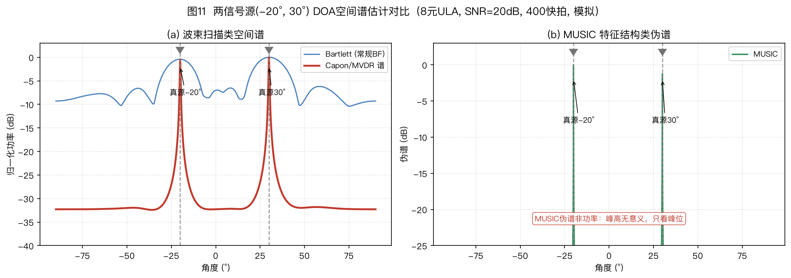
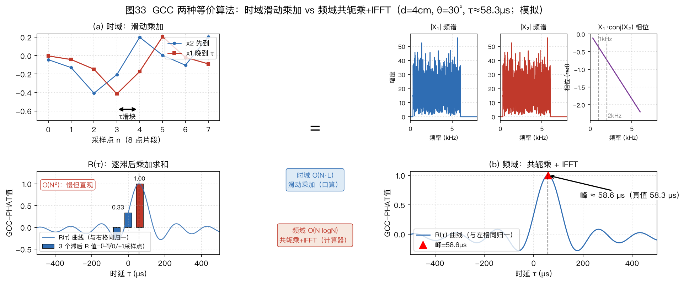
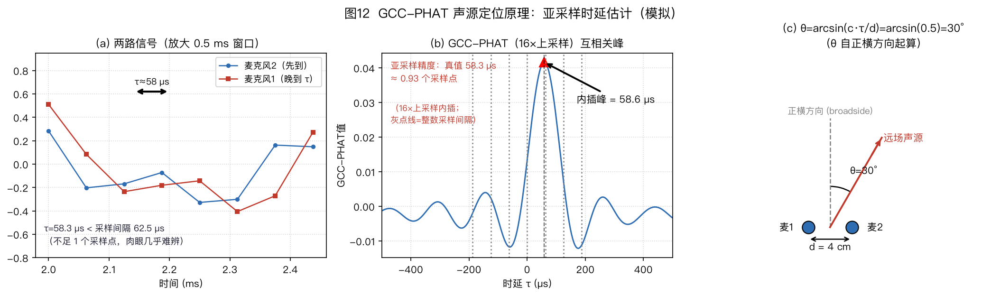
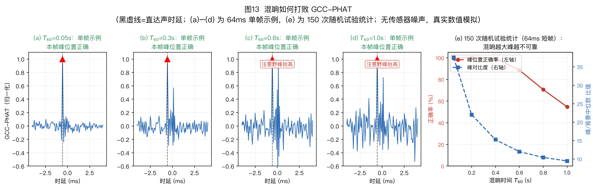
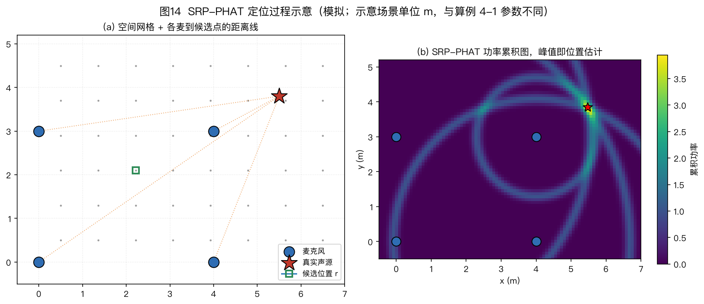

麦克风阵列信号处理教程
导读与导航
多麦克风阵列信号处理教程 · 导读与导航
本页是全套教程的入口，一共 14 个文件：本页导读＋11 章正文＋2 篇附录。
下面 11 章正文和 2 篇附录按顺序读，也可以按第 5 节的路径跳着读。每篇开头有导航，读到哪都不会迷路。
全套教程配了 33 张图，图 26～32 在第 6 章，帮你把抽象概念变成直观图像。
1. 这是一份什么样的教程
这是一份讲麦克风阵列的教程。零基础可以从头读，读完还可以当手册查。
文里配了 33 张图，先会看图，再啃公式，压力会小很多。
教程从生活例子讲起：你站在 3 米外跟音箱说话，它怎么听清你的声音。顺着这个问题往下走：麦克风怎么摆，怎么判断声音从哪来，怎么只听一个方向，房间混响和回声怎么处理，好几个人同时说话怎么分开，人走动时怎么跟住，到产品里怎么评测，收尾是不同场景怎么选方案。
每节都按固定顺序讲：讲直觉，再推公式，每个符号都解释，再告诉你实测效果和工程上怎么选。不同实验的数字别直接比大小，看趋势就可以。
2. 14 个文件一览
| 编号 |
文件 |
配图 |
难度 |
预计时间 |
| 00 |
00_首页_导读与导航.md（本页） |
— |
入门 |
15～20 分钟，先读本页 |
| 01 |
01_问题定义与双耳启示.md |
图1 |
入门 |
10 分钟 |
| 02 |
02_基础_声音到达阵列时发生了什么.md |
图2～图7，共 6 张 |
进阶 |
45～60 分钟，建议完整读一遍 |
| 03 |
03_阵列几何形态.md |
图8～图10，共 3 张 |
进阶 |
30 分钟 |
| 04 |
04_声源定位DOA估计.md |
图11～图14、图33，共 5 张 |
较难 |
60～90 分钟，建议分两次读 |
| 05 |
05_波束形成Beamforming.md |
图15～图17，共 3 张 |
较难 |
60～90 分钟，跟着手算一遍 |
| 06 |
06_声学回声消除AEC.md |
图18～20、图26～32，共 10 张，另引用图23 |
较难 |
60～80 分钟，建议分两次读 |
| 07 |
07_去混响WPE.md |
图21、图24，共 2 张，另引用图23（全书链路总图） |
较难 |
30～45 分钟 |
| 08 |
08_语音分离.md |
0 张专属图，引用图23（全书链路总图） |
较难 |
30～45 分钟 |
| 09 |
09_声源追踪SourceTracking.md |
引用 2 张图（图22 是本章的，图23 是全书链路总图） |
进阶 |
30～40 分钟 |
| 10 |
10_工程实现评测与产业实践.md |
新图 1 张（图25），另引用图23 |
进阶 |
20～30 分钟 |
| 11 |
11_总结与选型指南.md |
0 |
入门 |
5 分钟，11.1 总纲→11.2 场景表→11.3 决策树→11.4 练习→11.5 分流，选方案时直接查 |
| 12 |
12_附录A_符号术语数学.md |
0 |
入门 |
通读约 25 分钟，也可以当词典查 |
| 13 |
13_附录B_路径地图前沿踩坑练习复现.md |
0 |
入门到进阶 |
通读约 40 分钟，也可以按需查 |
预计时间的算法：中文每分钟读 450 字，每张图多加 2～3 分钟，推导部分再加停留时间。全部精读大约 7～9 小时。按路径读见第 5 节。
时间紧可以这样走：读完本页，读 01，再读 11，用 5 分钟拿到选型结论。接着读 02 打基础。之后按需要看 04、05、06、07、08。做工程看 05、06、07、08、10＋附录 B 的排错部分。做研究看 04、09＋附录 B 的地图和前沿部分。
3. 每篇讲什么，读完能弄清什么
89 行（约 3278 字），1 张图，入门。讲智能音箱要战胜的四个麻烦：噪声、混响、干扰、设备自身噪声。引出三个任务：判断声音从哪来，只听一个方向，人走动时跟住方向。还算了一笔增益账：麦克风数量翻倍，信噪比能提高多少分贝。这笔账分三种情况算，对付麦克风自身噪声看 WNG（白噪声增益），对付四面八方的混响看 DI（指向性指数），对付单个方向的干扰看零陷深度。三者别混在一起比。
人只用两只耳朵就能定位，机器用一堆麦克风，办法是相通的：人用双耳时间差，机器也测时间差。人靠耳朵形状分辨方向，机器靠事先测好的方向数据。细节都在第 1 章。
读完能弄清：为什么要用一群麦克风。增益上限是多少。人耳的方案对应到机器的哪些模块。
317 行（约 2.33 万字），6 张图，进阶。全书的符号和概念都在这章第一次出现。建议完整读一遍。后面看不懂随时回来查。
2.1 节讲时延：声音到达每个麦克风有先有后。采样率 16kHz 时，一格是 62.5 微秒，约等于 2.1 厘米。时延估计要用到比采样间隔更细的插值。多路信号必须用同一个时钟录。
2.2 节讲远场和近场：判据是距离大于两倍孔径平方除以波长。结论记住两条：7 厘米的小阵列在整个房间都按远场处理。1.26 米的大线阵在房间里要按近场处理，算法不一样。
2.3 节讲导向矢量：时域的移位变成频域的相位旋转。导向矢量就是每个方向对应的标准相位组合，后面定位和波束形成都要用它。
2.4 节讲房间混响：声音在屋里反弹形成拖尾。T60（混响时间）表示拖尾有多长。结论是客厅里离音箱 3 米远时，混响已经比人声还响了。DRR（直达声与混响比）这时小于零。
2.5 节讲 STFT（短时傅里叶变换）：32 毫秒窗，8 毫秒步进，重叠 75%。分帧之后估计协方差矩阵。这是定位和波束形成算法的共同输入。
2.6 节讲四个评价量：主瓣宽度、旁瓣、DI、WNG。还讲分辨率极限、栅瓣条件（间距不超过半波长）、CRLB（克拉美-罗下界，估计精度理论上最好能到多少）。
读完能弄清：时延、相位、导向矢量、协方差分别是什么。后文公式里的符号是什么意思。
234 行（约 1.36 万字），3 张图，进阶。讲麦克风怎么摆，以及摆法决定什么上限。
两种双麦摆法。六种常见形态对比：线阵、圆阵、方阵、球阵、螺旋阵、分布式阵列。共线的阵列分不清上下，靠加麦克风解决不了，这是几何本身的限制。端射方向（阵列轴线方向）对误差敏感，同样的时延误差在端射方向会被放大很多。四条规律：孔径和波长的比值决定分辨率。圆阵看满孔径。有挡板时低频下限会改善。一般做 4～8 个麦，性价比合适，数量再多提升有限。稀疏阵：6 个麦放在非均匀位置，靠协方差只跟间距有关的性质，能得到比麦克风数量多得多的自由度。例子是嵌套阵，6 个麦能得到 23 个连续自由度。
读完能弄清：麦克风怎么摆决定什么上限。小阵列为什么在低频分不清方向。不同场景选哪种形态。
491 行（约 3.42 万字），5 张图，较难。DOA 是到达方向估计，也就是判断声音从哪来。本章算法种类多，建议分两次读。
四类方法：两步法（互相关＋几何解算）、扫描法、子空间法、稀疏重构＋深度学习。
GCC-PHAT（广义互相关相位变换）：看相位随频率的变化斜率。混响会拖累它，T60（混响时间）从 0.4 秒升到 1.0 秒，正确率从约 99% 掉到约 55%。时延估计要做亚采样插值。
SRP（可控响应功率）：全阵列投票找能量最大的点。算例里真点得分 6.0，偏 1.8 米的点 5.64，镜像点 2.08。粗到细两级搜索能把计算时间从上千秒压到几十秒。
几何解算：Chan 算法和泰勒迭代。还有 GDOP（精度稀释，几何摆位不好时误差会被放大）。
扫描法：Bartlett 波束能量宽，Capon（最小方差谱估计）峰更尖，例子里峰旁比 1.8 对 5.0。子空间法 MUSIC（多重信号分类）靠信号子空间和噪声子空间正交来找峰。相干信号会让协方差矩阵掉秩，要用空间平滑恢复。ESPRIT（旋转不变子空间法）利用阵列的平移结构直接解角度，不用逐格扫描。
DNN（深度神经网络）方法在强混响下能把误差从 15～30 度压到 5～10 度。CRLB（克拉美-罗下界）说明带宽是立方关系，加带宽最划算。
读完能弄清：四类定位方法各适合什么几何和算力。混响怎么影响互相关法。MUSIC 方法为什么怕相干信号。
570 行（约 4.02 万字），3 张图，较难。波束形成就是只听一个方向，压住别的方向。统一写成加权求和，目标是在不损伤目标方向的前提下压住噪声。跟着手算一遍效果更好。
三类噪声对应三类招数：麦克风自身噪声看 WNG，用延迟求和。弥散混响看 DI，用超指向。单个方向干扰用零陷，用 MVDR（最小方差无失真响应）。
DSB（延迟求和波束形成）：权重就是导向矢量除以麦克风数，WNG 等于麦克风数。超指向在低频把指向性做上去，代价是 WNG 暴跌。例子是两麦端射，WNG 掉到负 10 分贝，换 DI 提高 6 分贝。间距减半，WNG 再掉约 6 分贝。
MVDR 分四步推导。算例里负 23.8 分贝的零陷自己长出来，正对着干扰方向。LCMV（线性约束最小方差）加多个约束。MWF（多通道维纳滤波）再考虑降噪和失真的折中。GSC（广义旁瓣对消器）分成固定波束、阻塞矩阵、自适应对消三路，算例里对消系数正好抵消干扰，它跟 LCMV 在数学上等价。后置滤波只改幅度不改相位。球谐方法适合球阵，旋转后波束形状不变。DNN 方法有三条线：掩码估计、掩码＋MVDR、直接端到端。
读完能弄清：WNG 和 DI 的权衡怎么做。MVDR 的零陷从哪里来。GSC 和 LCMV 是什么关系。
611 行（约 4.75 万字），10 张图（图18～20、图26～32，另引用图23），较难。专讲回声消除这一件事，对照图 18、图 26～32 看收敛过程最直观。
AEC（声学回声消除）：设备自己放的声音又被自己的麦克风收进去，要减掉。四种场景，四处难点。能预测波形就做减法，这是减法和乘法的分界。
NLMS（归一化最小均方自适应滤波）一步能把误差压掉一半。PBFDAF（分块频域自适应滤波）、子带方法、IPNLMS、FDKF（频域卡尔曼滤波，增益就是步长）是对付长房间脉冲响应的加速办法。扬声器非线性有约 20 分贝的天花板，线性部分做到 22 分贝之后，剩下的靠非线性建模和神经网络。DTD（双讲检测）管双方同时说话。深度方法经历了四届挑战赛（其中没有 2024 届，赛制是混合定调）。
阵列里顺序见§10.1/图23。评测看两个数：ERLE（回声损耗增强，客观算出来压了多少分贝）、MOS（平均主观分，找人听了打分）。ERLE 高不一定听着舒服，两个都要看。WebRTC 的 AEC3 是开源对照实现。
读完能弄清：回声消除为什么必须在波束形成之前。线性做到 22 分贝之后靠什么做到 40 分贝。三种布放顺序为什么只有逐通道做在前面能用。
232 行，2 张图（图21、图24，另引用全书链路总图23），较难。专讲时间维度的清理：房间的拖尾怎么收掉。
WPE（加权预测误差去混响）：用过去的信号预测混响拖尾并减掉，保护当前帧不损伤直达声。例子里混响能量降约 4.7 分贝。Δ/K 先照 7.1.1 的表取值，再微调。多人抢话的分离搬到 08 讲，整条链路的顺序也在 08 的§8.2 收拢。
读完能弄清：WPE 的保护延迟 Δ 是干什么的。去混响为什么要放在定位之前。三条老手艺（MINT、倒谱、谱方差）各讲清了什么道理。
146 行，0 张专属图（引用全书链路总图23），较难。专讲好几个人同时说话怎么分开，以及掩码这个枢纽。
三条路线：免训练的经典盲源分离四兄弟（AuxIVA、ILRMA、MNMF、TRINICON）、GSS（引导源分离，用说话人活动标注解决置换问题，在 CHiME-5 上相对delay-and-sum基线相对降低约 10～21%（见08 §8.1原文表位））、深度分离（掩码估计、深度聚类、PIT、Conv-TasNet，再到 Mamba 和查询型分离）。§8.1 讲分离，§8.2 给出整条链路的顺序：回声消除在前，去混响在定位前，定位和追踪在波束前，波束和分离在后，干净的信号给语音识别。
读完能弄清：源数超过麦克风数时四兄弟里谁还能用。GSS 的导引解决什么问题。分离掩码怎么回过去帮波束形成估计噪声。
222 行（约 1.34 万字），2 张图，进阶。讲人走动时方向一直在变，怎么平滑地跟住。
状态是角度、角速度、角加速度。声音信号有四个麻烦：时断时续、野点多、人数会变、角度计算有非线性。
KF（卡尔曼滤波）分五步：预测、更新、算增益、修正、传下去。稳态时每帧只信观测 15% 左右，大部分信预测。PF（粒子滤波）同时保持一堆猜测，按跟观测像不像打分，分低的淘汰，分高的留下。例子用了十个粒子。多人追踪用 IMM（交互多模型）、PHD（概率假设密度滤波，不用事先定人数）、LMB、TBD（检测前追踪）。§9.4 讲闭环：波束方向每帧限幅 3～5 度，静默时保持方向，唤醒词触发重置。不然定位和波束会互相带偏。
读完能弄清：追踪为什么处在定位和波束之间。多目标和单目标方法怎么选。实际系统里方向更新要加哪些约束。
472 行（约 3.11 万字），新图 1 张（图25），另引用图23，进阶。讲从算法到产品之间隔着什么。
图 23 是全书链路总图，顺序见§10.1/图23。
MEMS（微机电系统）麦克风看四个参数。同步要到微秒级，多设备组网还有 SRO（采样率偏移）：每台设备的时钟快慢不一样，每秒差 100 微秒，几分钟下来方向估计能偏好几度，要专门标定和补偿。
评测分五层：SI-SDR（尺度不变信干比）、STOI（短时客观可懂度）、PESQ（语音质量感知评价）、WER（词错误率）、OSPA（多目标追踪误差）。形态选择上 6 麦圆环＋挡板＋前端处理是常见组合。芯片分级做唤醒和量化，平衡功耗和算力。
读完能弄清：延迟、同步、标定预算怎么做。评测指标各测什么。从算法到产品要补哪些环节。
66 行（约 3112 字），5 分钟，入门。11.1 总纲立六条结论＋三句话＋一条短口诀，讲清 WNG 和 DI 的权衡。11.2 场景对照表给四个场景的开箱配置。11.3 三问决策树＋叶节点参数起点，问完就知道抓 A、B 还是 C。11.4 留一道三选一练习，逼你说清为谁牺牲了谁。11.5 分流：工程和研究各去哪。
读完能弄清：给定一个场景，第一版方案抄什么。形态、混响、WNG 和 DI 权衡这三条线怎么用。
216 行（约 1.27 万字），查阅用。12.1 节是符号表。12.2 节是白话词典，约 90 条，拆成五个正式小节：信号与数学基础、房间声学、波束形成与阵列度量、定位与追踪、系统与硬件，点目录就能跳。12.3 节是六块数学：复数、分贝、卷积和相关、期望和协方差、最小二乘、特征分解。
用法：符号看不懂、行话看不懂、公式看不懂时回来查。不用通读背诵。
237 行（约 1.72 万字），查阅加动手。13.1 节是学习路径，分四步，每步都能动手（动手）。13.2 节是领域地图：7 本教材、6 个会议、期刊、挑战赛、从 1940 年代到 2026 年的历史（查阅，找书找会时翻）。13.3 节是 9 条前沿加泛化失配专栏，专栏必读（追新）。13.4 节是 8 面排错墙（查阅，撞墙时对症状找病根）。13.5 节是公式速查卡（查阅）。13.6 节是 16 道练习题（动手，开脚本改参数跑）。13.7 节是复现说明，跟着做就能画出 33 张图（动手）。
用法：想动手、想追前沿、想排错、想复习时打开它。
4. 阅读顺序
本页先读。接着读 01，建立问题意识，10 分钟。
再读 02，打基础。符号不懂回 12 查。这是后面所有章节的共同起点。
之后分三条线。摆位线：03 讲形态怎么定上限，看完可以去 10 查第一条选型结论。
空间线：04 找方向，09 跟轨迹，05 指波束。04 的掩码估计连着 05 的 MVDR 和 08 的分离方法。
时间线：06 做回声消除，07 做去混响，08 做分离，顺序见§8.2/图23。
工程线：10 讲链路、硬件、评测、芯片，看完去 11 定方案。
12 是符号术语数学，随时查。13 是路径地图前沿排错速查练习复现，动手、追新、排错、复习时用。读到 11.5 记得分流：赶工程的去 §10.10 照清单联调，撞墙回 13.4 排错；做研究的去 13.3 跟前沿，动手做 13.6 的第 14、16 题。附录（12、13）是侧边线，不用顺序读，当词典和工具箱随查随用就行。
5. 三条阅读路径
路径 A：零基础入门（能跑通演示，约 2～3 周）
- 本页 15 分钟，01 用 10 分钟，11 的 11.1 总纲和 11.3 决策树用 5 分钟，先拿到结论。
- 02 精读 60 分钟。推导可以先跳，重点是会读图 2～图 7。
- 03 读表格＋算例 30 分钟。04 读 4.2、4.3 节＋算例 60 分钟，对照看图 12、图 14。05 读 5.1、5.2、5.4 节，跟着手算 60 分钟，对照看图 16。
- 06 读 6.1.1、6.1.2、6.1.7（AEC 在阵列里放哪）、6.1.9 共 60 分钟，对照看图 18。07 读 7.1 节直觉部分和 7.1.1（Δ/K 照表取值），对照看图 21、图24。08 读 8.1 节三条路线和掩码枢纽 30 分钟。09 读 9.2 节卡尔曼滤波五步 30 分钟。
- 10 读 10.1、10.4 节，装 pyroomacoustics 声学仿真库 30 分钟。回 12 查词补数学。去 13 做第 2、3、5、7、10、11、13 题。对照附录 B 13.4 节排错。
- 终点：对照第 8 节自己动手画一遍 33 张图，再在树莓派＋ReSpeaker 麦克风阵列上实现指哪说哪。
路径 B：工程落地（做出可交付的前端，约 1 周精读）
- 读完本页去 11 的 11.1 和 11.3 定第一版方案（配置照 11.2 的表抄）。读 05，重点是 MVDR＋对角加载＋后置滤波这套组合，失配问题补 5.4 补。读 06，重点是回声消除放在波束形成之前逐通道做（三种顺序为什么不行见 6.1.7）、末端参考（抽头点见 6.1.11）。读 07，重点是 WPE 级联（参数照 7.1.1 的表取值）。读 08，重点是三条分离路线和 GSS 链路，分离掩码回过去帮波束形成估计噪声。抽空读一遍 13.3 专栏（泛化失配四件套），换阵列前先看。
- 10 全读：链路延迟、MEMS 麦克风选型、多设备同步和 SRO、评测口径、芯片分级。去 13 读附录 B 13.4 节八面排错墙，做 13.6 节第 7、8、9、11、13、14 题。
- 终点：输出延迟、同步、标定三张预算表。对照 WebRTC AEC3 检查回声消除。用 ERLE 和 MOS 验收。
路径 C：研究前沿（发论文或者打榜，长期）
- 02 的 CRLB 定性能上限。03 的稀疏阵列。04 的 4.6、4.7 节（空间平滑、深度学习定位、ACCDOA 多目标联合表示、SELD 声事件定位检测）。05 的 RTF（相对传递函数）版 MVDR、球谐方法、掩码＋GEV（广义特征值波束形成）、端到端网络。
- 06 的 FDKF、混合神经卡尔曼。07 的在线 WPE。08 的扩散模型、GSS 与掩码枢纽。09 的 PHD、LMB、TBD。10 的指标口径（SI-SDR 和 BSS-eval 两套指标不能直接比数值）＋CHiME、LibriCSS、STARSS 数据集。
- 13 的附录 B 13.2 节地图＋13.3 节 9 条前沿和 13.3 专栏（泛化失配，必读）（TF-GridNet、Mamba、阵列无关前端、CHiME-9）。做 13.6 节第 6、8、12、15、16 题。对照 CHiME-8 报告看图 23。
- 终点：掩码＋MVDR 或者几何无关前端，配大模型后端做基线。
6. 插图地图：33 张图在哪篇
| 图 |
文件 |
所在文档 |
类型 |
内容 |
| 图1 |
fig01_binaural |
01 |
示意＋曲线 |
双耳时间差和声级差，Rayleigh 双重理论 |
| 图2 |
fig02_dsin_geometry |
02 |
示意 |
时延几何直角三角形 |
| 图3 |
fig03_near_far_field |
02 |
示意 |
球面波和平面波，远场判据 |
| 图4 |
fig04_delay_phase |
02 |
示意＋曲线 |
时延等于相位旋转，给互相关法铺垫 |
| 图5 |
fig05_room_acoustics |
02 |
示意＋曲线 |
房间脉冲响应三段、T60、直达临界距离、直达混响比 |
| 图6 |
fig06_stft_cov |
02 |
仿真＋矩阵 |
分帧语谱加协方差热图加特征谱 |
| 图7 |
fig07_beampattern_anatomy |
02 |
仿真教学 |
主瓣、旁瓣、零陷、主瓣宽度、栅瓣 |
| 图8 |
fig08_geometries |
03 |
布局示意 |
线阵、圆阵、球阵、螺旋阵、分布式 |
| 图9 |
fig09_tradeoffs |
03 |
趋势，分两幅看 |
（ａ）规模权衡：麦数与算法复杂度的取舍；（ｂ）混响误差曲线：三类定位算法误差随混响加重各自变坏的速度，只看趋势不读绝对值 |
| 图10 |
fig10_sparse_array |
03 |
集合图解 |
嵌套阵差集，6 个麦得到 23 个自由度 |
| 图11 |
fig11_doa_spectrum |
04 |
仿真 |
Bartlett 峰宽，Capon 峰尖，MUSIC 峰如针 |
| 图12 |
fig12_gcc_phat |
04 |
示意＋仿真 |
亚采样 0.93 格加角度换算 |
| 图13 |
fig13_gcc_reverb |
04 |
仿真，核心实证 |
T60 从 0.4 秒到 1.0 秒，正确率从约 99% 掉到约 55% |
| 图14 |
fig14_srp_grid |
04 |
仿真＋几何 |
网格投票加双曲线交汇 |
| 图15 |
fig15_wng_di |
05 |
仿真，基础结论 |
超指向低频 WNG 暴跌，延迟求和保持恒定 |
| 图16 |
fig16_beampattern |
05 |
仿真 |
延迟求和对比 MVDR 在 20 度处的零陷 |
| 图17 |
fig17_gsc |
05 |
系统框图 |
固定波束、阻塞矩阵、对消器三路 |
| 图18 |
fig18_aec |
06 |
框图＋仿真 |
NLMS 收敛约 22 分贝，双讲时冻结更新 |
| 图19 |
fig19_aec_landscape |
06 |
仿真＋时间线 |
非线性 20 分贝天花板加方法演进 |
| 图20 |
fig20_aec_pipeline |
06 |
系统框图 |
经典链路对比混合链路（线性打底加神经网络扫尾） |
| 图21 |
fig21_wpe |
07 |
仿真 |
语谱拖尾被压掉，边界恢复 |
| 图22 |
fig22_tracking |
09 |
仿真 |
粒子滤波平滑后的方向轨迹 |
| 图23 |
fig23_pipeline |
08、09、10 |
系统框图，全书总图 |
9 个框的前端链路加方向回路（08 只引用，本篇无专属图） |
| 图24 |
fig24_wpe_frames |
07 |
示意 |
WPE 帧结构：只用过去历史预测当前帧，保护延迟 Δ 的作用 |
| 图25 |
fig25_latency_budget |
10 |
瀑布条 |
延迟预算：各模块延迟叠加约 272 ms，300 ms 经验预算剩约 28 ms 余量（对照 §10.1 的延迟预算表看各模块分摊） |
| 图26 |
fig26_aec_problem |
06 |
示意 |
回声怎么形成：房间冲激响应、卷积拖尾、麦克风三者相加 |
| 图27 |
fig27_aec_concept |
06 |
示意速写 |
一句话结构：抄房间指纹再相减，DTD 开关管更新 |
| 图28 |
fig28_aec_nlms |
06 |
仿真 |
NLMS 自适应过程：滤波器长成回声路径，步长取舍 |
| 图29 |
fig29_aec_erle_freeze |
06 |
仿真 |
收敛与冻结：平时爬升，双讲段定义失效必须冻结 |
| 图30 |
fig30_aec_delay_dtd |
06 |
仿真 |
延迟对齐与双讲：不对齐掉几十分贝，对齐是第一要务 |
| 图31 |
fig31_aec_nonlinear |
06 |
仿真 |
非线性平台：线性路径约 37 dB，非线性 tanh 路径躺平约 19 dB |
| 图32 |
fig32_aec_hybrid_select |
06 |
框图＋示意 |
混合管线与选型：线性打底加神经扫尾，算法选型速查 |
| 图33 |
fig33_gcc_two_ways |
04 |
对照 |
时域滑动乘加等于频域共轭乘加 IFFT，两条路算出同一条曲线、同一个峰 |
规律：示意图给几何直觉，曲线给可复现的数字，框图给可落地的管线。从前往后看就是这个顺序。
7. 十处跨文档联系
- 定位连着追踪连着波束：04 找方向，09 跟轨迹，05 指波束，见 9.4 节和图 23。
- 前端处理顺序见§10.1/图23。
- 导向矢量：02 的 2.3 节定义，04、05、08、09 都要用。
- 协方差矩阵：02 的 2.5 节定义，04、05、06 都要用。快拍不够时加对角加载。
- WNG 和 DI 的权衡：02 的 2.6 节提出，05 细算，10 选型时用。
- 混响这条线：02 的 2.4 节讲混响是什么，04、05、06、07 讲各自怎么对付它。
- 掩码估计：02 讲语音稀疏性，05 和 07 拿掩码去估计协方差，这是 CHiME 比赛里多支队伍沿用的做法。
- 减法和乘法：06 的 6.1 节讲能预测波形就做减法，05 的 5.7 节讲只能估计幅度就做乘法。
- 几何上限：03 讲摆位定的上限，04、09、10 都要回来看它。
- 标定和同步：10 的 10.2 节讲标定同步，13 的附录 B 13.4 节讲排错时怎么查它。
8. 动手复现
想自己动手画图，画图脚本都在 Scripts/ 里。回到报告根目录跑两个命令，33 张图就出来了（图 1～25、图 33 约 20 秒，图 26～32 约 11 秒，全套约半分钟，机器不同有出入），画完打开 figures/ 对照正文看图。
具体步骤和报错处理去看 Scripts/README.md，跟着做就行。改参数多试几次，图里的趋势会记得更牢。Windows 上把命令里的 .venv/bin/python 换成 .venv\Scripts\python。
9. 常见问题
图片看不到怎么办？
整个文件夹一起打开，别只拷走单个文件，目录结构别动，图就能正常显示。
先读哪篇？
先读本页，再读 01 和 11，再读 02。之后按第 5 节的路径走。赶时间只读 11 也能得到选型结论。
公式看不懂怎么办？
回 02 和附录 A 查符号术语数学。别在 04、05、07、08 的推导里硬顶。先会读图 7、图 11、图 15、图 16。
想跑实验怎么办？
先看第 8 节把 33 张图画出来，再装 pyroomacoustics 做仿真基线，打 CHiME-3 数据集，上树莓派＋ReSpeaker 阵列＋ODAS 声源定位库。见附录 B 的 13.1、13.6 节。
不同实验的绝对数值能比吗？
不能。实验条件不同，只看量级和趋势。例子：T60 从 0.4～1.0 秒正确率掉一半，间距减半 WNG 掉约 6 分贝。
附录：下一步清单
- [ ] 15 分钟读完本页，选一条第 5 节的路径。
- [ ] 10 分钟读 01，5 分钟读 11，拿到全局结论。
- [ ] 60 分钟读 02，学会读图 7（主瓣、旁瓣、零陷、主瓣宽度、栅瓣）。
- [ ] 按路径读 04、05、06、07、08（每篇 60～90 分钟，分两次读完更轻松）。
- [ ] 对照第 8 节画一遍 33 张图，打开
figures/ 对照正文看图。
- [ ] 做附录 B 的练习题（入门做 2、3、5、7、10、11、13 题，进阶＋6、8、12、15、16 题）。
- [ ] 对照附录 B 13.4 节八面排错墙排错，对照 10 做延迟、同步、标定预算。
记住三条：麦克风怎么摆决定性能上限。算法只能逼近这个上限。房间混响是最大的麻烦。选波束时先问它保了哪头、舍了哪头，再谈好不好。
第 1 章 · 问题定义与双耳启示
1. 从一个生活场景出发：问题定义
本章路标（无编号导读块，不计入节编号）：§1.1开场 → 增益与三本账 → 任务地图 → §1.1三线索 → 对照图纸幕间小结。现有§1.1编号不动，新增块一律无编号。
开场：客厅里那句“今天天气怎么样”（无编号块）
想象你坐在客厅里，对 3 米外的智能音箱说“今天天气怎么样”。音箱听清这句话，要同时战胜四个敌人：
- 环境噪声：空调声、车声；
- 房间混响：声音经墙壁、桌面、天花板反射形成“拖尾”，把音节糊在一起；
- 干扰说话人：旁边有人在看电视或说话；
- 麦克风自噪声：传感器自身的底噪（热噪声、电路噪声）。它平时不起眼——安静环境里它比环境噪声低得多；但在超指向波束形成这类“放大麦间微小差异”的设计里会被急剧放大，直接顶到阵列性能的天花板（§2.6 的白噪增益 WNG 与 §5.3 会专门算这笔账）。
人用两只耳朵毫不费力就能做到的事，机器要靠一群麦克风来做到：因为每个麦克风处于空间不同位置，同一声音到达它们的时间、强度略有不同——这些“不同”里藏着声音的方向信息，也给了机器挑选某个方向的能力。
承接：四个敌人认完了，先别急着打——下一块先把“阵列到底赚了多少”这笔增益账算明白。
任务地图：三件事各回答什么（无编号块）
这就是麦克风阵列技术的三大任务：
| 任务 |
类比 |
回答的问题 |
| 声源定位 |
你闭着眼判断声音从哪来 |
“声音在哪个方向？” |
| 波束形成 |
你扭头把耳朵和注意力转向说话人 |
“怎么只听这个方向？” |
| 声源追踪 |
你跟着走动的说话人持续转头 |
“他动了，怎么一直盯着听？” |
承接：任务分清了——接下来算算“多只麦到底多赚多少”，三本账别记混了。
增益与三本账（无编号块）
麦克风阵列的理论收益是阵列增益：$M$ 元阵列对白噪声的理想增益为 $10\log_{10}M$ dB（dB 是把“响几倍”压扁了数：2 倍≈3 dB，10 倍=10 dB；4 麦约 6 dB、8 麦约 9 dB），叠加自适应波束形成的干扰零陷，可带来 10~20 dB 的等效信噪比提升——这是远场语音识别可用性的物理基础。前提先钉死：这句只在理想条件下成立——白噪声（white noise，各通道互相独立）、远场平面波、各麦对齐且特性一致；真实混响房里只能兑现几 dB，剩下的靠后面各章的算法硬抠。Kumatani–McDonough–Raj《Microphone Array Processing for Distant Speech Recognition》CMU 课程讲义，2012
注意这几本账不能混：$10\log_{10}M$ 是白噪增益（WNG，§2.6）的上限——它对付的是各通道互相独立的噪声（麦克风自底噪就是这种），延迟求和正好达到它。而如果噪声是从四面八方均匀涌来的弥散场（晚期混响就是典型），对应的度量是指向性指数 DI（§2.6），DI 不受 $10\log_{10}M$ 限制——超指向设计（§5.3）可以突破它。对一个定向干扰挖零陷则是第三本账：零陷深度同样不受白噪增益上限约束，理论上可以任意深（§5.4 的算例会算出一个 −24 dB 的零陷）——独立白噪声、弥散场、定向干扰是三本不同的账，分别看 WNG、DI 和零陷深度。生活例：独立白噪声是每只麦自己的底噪（像电流底噪的嘶嘶声，各路互不相干）；弥散场是澡堂子式的四面混响（四面下雨的哗哗声，分不清哪一片更响）；定向干扰是隔壁桌的外放（一个方向的喇叭）。此处是直觉版，证明版见§5（§5.3 算 WNG 暴跌，§5.4 算 −24 dB 零陷）。
这笔账怎么算出来的（三步，对白噪声、各麦独立）：
1. 信号侧：各麦收到的是“同一个声音错开一点时间”，对齐后同相相加——幅度变成 $M$ 倍，所以功率变成 $M^2$ 倍（功率正比于幅度的平方）；
2. 噪声侧：各麦的噪声互相独立（不相关），相加时不会同相叠加而是“随机抵消一部分”——功率只变成 $M$ 倍（独立随机变量的和的方差 = 方差的和）；
3. 相除：信噪比提升 $= M^2 / M = M$，换成分贝就是 $10\log_{10}M$。
小学算术版（4 只麦）：信号幅度 4 倍→功率 16 倍；噪声各走各的，功率只 4 倍；16÷4=4 倍≈6 dB——麦数翻一倍，账上多约 3 dB。
一句话：信号靠“同相”涨得比噪声快——这就是一切阵列技术的免费午餐，也是它的上限（§2.6 的 WNG 上限与此同源）。
承接：账算清了——看看人脑这两只“麦”是怎么花小钱办大事的，机器照着抄作业。
1.1 人类早就做到了：双耳听觉给机器的三点启示
在学习机器怎么做之前，先看大自然给出的参考答案——人头就是一个带挡板的双麦克风阵列（双耳间距约 18 cm，头颅充当挡板）。人类靠三组线索在嘈杂餐厅里听清对面的人（鸡尾酒会效应）：

- ITD（双耳时间差）：声音先到近耳、后到远耳，正侧面时两耳的时间差最大，约 700 μs（声音绕头走的弯路比直线长，Woodworth 绕头模型；图1(b)；跑道比喻：像跑步压外道多绕一圈，多走约 24 cm（700 μs×343 m/s≈0.24 m）才到远耳；这个跑道比喻只在低频成立——波长比头大、声波绕得过去时才适用，高频波长短绕不过去，就换成下面 ILD 的遮挡逻辑）。听觉神经对时间差的敏感度惊人——正前方约 10 μs 的差异（相当于 1° 的角度变化）就能分辨。但 ITD 只管低频：正侧面约 700 μs 的时间差，在约 700 Hz 时对应的相位差就达到 180°。更高频率下相位开始“绕圈”（差 360° 的整数倍就无法区分），产生歧义；再叠加听觉神经对波形锁相能力的上限——1kHz 以上开始掉队（文献常取 1~1.5kHz，此处取上限口径），ITD 由此在高频失效，高频定位交给 ILD。
- ILD（双耳声级差，Interaural Level Difference）：头颅遮挡使远耳听到的高频变弱，4 kHz 以上开始出现十几 dB 的差异（人工头实测例：KEMAR 人工头 90°侧向入射时，4 kHz 处 ILD 约十几 dB，频率再往上继续增大；示意量级，具体看频率与头部尺寸），更高频段可达 20~25 dB（图1(c)）。低频波长比头大、绕射过去几乎不挡，所以 ILD 只管高频。低频靠时差、高频靠强度差——这就是 1907 年瑞利提出的双重理论（duplex theory）。调和一句：4 kHz 以上 ILD 确实大，但 3~4 cm 间距的小阵列在这一段已有栅瓣（§2.6、§3.2），所以机器阵列的高频段一般只做增强、掩码，不做窄带定位——定位的主力仍在低中频（与 §2.5 呼应）。
- HRTF（头相关传递函数，Head-Related Transfer Function）：耳廓的褶皱，加上头和肩膀的散射，对不同方向、尤其是不同俯仰角的声音产生不同的滤波（谱峰/谱谷位置变化），这是人类分辨前后、上下的依据。
承接：三组线索认全了——下一块把“人怎么办 vs 机器怎么办”并排放进一张对照图纸。
对照图纸：人脑抄作业清单（幕间小结·无编号块）
给机器阵列的三点启示（本报告后面的技术几乎都能在这张对照表里找到影子）：
| 人类的办法 |
机器阵列的对应技术（术语先不用记） |
章节 |
| ITD 双耳时间差 |
GCC-PHAT 测 TDOA（§4.2） |
§4 |
| 头颅当挡板 |
挡板效应放大麦间相位差（§3.2） |
§3 |
| ILD 与 HRTF 谱线索 |
测量每个方向的“标准答案”（导向矢量；术语叫“阵列流形标定”，见 §8）、DNN 学习方向特征（§4.7） |
§4、§8 |
| 优先效应（先入为主，不被反射带偏） |
WPE 保护直达声、只去晚期混响（§7.1） |
§7 |
| 鸡尾酒会效应（多人里挑一个听） |
波束形成 + 语音分离 |
§5、§8.1 |
人类只用 2 个“麦克风”加分米级（约 18 cm）“挡板”就做到这一切——靠的不是硬件而是亿万年进化出的算法。这解释了本领域近年的大趋势：信号处理定模型和约束保下限，机器学习拟合细节拔上限。
承接：第 2 章接着把“声音到达阵列那一瞬间到底发生什么”拆开看——先从时延这条信息源泉说起。
第 2 章 · 声音到达阵列时发生了什么
2. 基础：声音到达阵列时发生了什么
2.1 核心事实：同一声音，到达各麦克风有先有后
声音速度 $c \approx 343$ m/s。两个相距 4 cm 的麦克风，当声音沿两麦连线的方向传来时（先到近麦、后到远麦，时差最大的情形），到达时间差约 $\frac{0.04}{343}\approx 0.116$ ms（16 kHz 采样率下约 2 个采样点）；当声音垂直于连线传来时，两麦同时收到、时差为零。时差随方向连续变化——这正是它能用来测向的原因。 这个“到达时间差”是整个领域的信息源泉，记作 TDOA（Time Difference of Arrival）。
时差的几何来源：$\Delta\tau = d\sin\theta/c$。平面波以角度 $\theta$ 斜入射到间距 $d$ 的两个麦克风：波前是平面，先碰到近麦、再碰到远麦，多走一截路程。把两麦连线（长度 $d$，作斜边）与波前（作一条直角边）画成直角三角形，$\theta$ 角的对边就是路程差 $\Delta = d\sin\theta$（图2）；路程折成时间即得全书最常用的几何关系：
$$\Delta\tau = \frac{d\sin\theta}{c}\text{。}$$
其中 $d$ 为两麦间距（m），$\theta$ 为声源方向角，$c$ 为声速。
全书角度约定（后文凡涉角度一律沿用）：$\theta$ 从正横方向（broadside，垂直于两麦连线的方向）起算——正横 $\theta = 0°$ 时波前同时到达两麦、时差为零；端射方向（endfire，沿两麦连线的方向）$\theta = \pm90°$ 时路程差正好是整整一个 $d$、时差最大。「正横 / 端射」这两个名字后文会反复出现。（有的文献从连线方向起算，同一关系就写成 $\Delta\tau = d\cos\theta/c$——读论文时先确认约定。翻译器：本报告 sinθ 版 = 论文 cosθ 版，两者只差 90°（起算点不同），换算时角度加减 90°即可。）

看什么：盯住那个直角三角形——对边即路程差 $d\sin\theta$；再认角度从正横起算（正横时差为零、端射时差最大）。
离散化与同步：时差是用“格子”量出来的。数字录音先把时间切成格子：16 kHz 采样率下每格 $1/16000 = 62.5$ μs，折成路程约 $343\times62.5\,\mu s \approx 2.1$ cm。而 4 cm 小阵列的最大时差（端射方向）也只有约 117 μs——连 2 个采样格都不到！靠数格子只能得到很粗的方向，所以实际系统必须做亚采样级 TDOA 估计：互相关上采样、抛物线插值，或干脆在频域拟合相位斜率（GCC 类方法，§4.2 详述）。另一个常被忽略的前提是多路信号必须同步采样：同一设备的多通道模数转换器（ADC，Analog-to-Digital Converter）共用时钟，天然同步；跨设备（分布式阵列）各自的晶振有微小快慢（时钟漂移与采样率偏移）。算一笔：50 ppm（百万分之五十）的晶振跑 1 小时差 $50\times10^{-6}\times3600\approx0.18$ 秒，是麦间百微秒级时差的上千倍——跨设备必须对钟（时钟同步），否则累积偏差直接淹没时差，必须专门标定与补偿（§10.2）。
承接：时延的来龙去脉搞清了——下一个问题是，声源离得近时、波前还是平的吗？§2.2 先把远近场分个界。
2.2 近场与远场
- 近场（声源很近）：波前（波阵面，即相位相同的面）是球面，各麦克风信号的时间和幅度都有差别；
- 远场（声源距离远大于阵列尺寸）：波前近似平面，各麦克风收到的是“同一个信号错开一些时间”，幅度几乎相同。
经验判据（Fraunhofer 距离）：当 $r > \dfrac{2D^2}{\lambda}$（$D$ 为阵列孔径、$\lambda$ 为波长）时按远场处理。注意孔径 $D$ 是平方项，阵列越小越容易满足：7 cm 小阵列在 1 kHz（$\lambda=0.343$ m）时只需 $2\times0.07^2/0.343\approx0.029$ m $\approx 3$ cm——所以智能音箱这类小阵列在整个房间内都是远场问题；而 1.26 m 的会议大线阵在 1 kHz 下需要约 9 m 才算远场，放在会议室里近场球面波效应不可忽略，定位与波束都得改用球面波模型。
这个判据怎么来的（三步推导）：
1. 球面波到达阵列中心与到达边缘的路程不一样。阵列半宽 $D/2$，由勾股定理，这个额外路程是 $\sqrt{r^2+(D/2)^2}-r$；
2. $r \gg D$ 时用近似 $\sqrt{1+x}\approx 1+x/2$ 展开：$\sqrt{r^2+(D/2)^2}-r \approx \dfrac{D^2}{8r}$；
B-1 泰勒展开行（上式那一步的具体算账）：先把 $r^2$ 提出来：$\sqrt{r^2+(D/2)^2}-r = r\left[\sqrt{1+x}-1\right]$，其中 $x=(D/2r)^2$ 是个小量；泰勒一阶 $\sqrt{1+x}\approx1+x/2$，代入得 $r\cdot x/2 = r(D/2r)^2/2 = D^2/(8r)$——开根号那坨看着吓人，切到一阶就剩这一个分式，后面 Fraunhofer 判据的分母 $8r$ 就是从这来的。
3. 工程约定：只要这个“球面弯曲造成的误差”小于约十六分之一波长（$\lambda/16$，相位误差约 22.5°，平面波假设就足够准），就算远场：$\dfrac{D^2}{8r} \le \dfrac{\lambda}{16}\;\Rightarrow\; r \ge \dfrac{2D^2}{\lambda}$。
所以 Fraunhofer 距离不是物理突变点，而是“相位误差还能忍”的约定线。
可跳过：为什么容限取 $\lambda/16$（22.5°）：路程误差 $\Delta$ 折成相位误差是 $2\pi\Delta/\lambda$；取 $\Delta=\lambda/16$ 即相位误差 $2\pi/16=22.5°$。这个量级的直觉是：两路信号相位差 22.5° 时，相干叠加的幅度损失只有约 2%（约 0.2 dB），对波束增益几乎没有影响。这是工程上“误差可忽略”的约定取值，不是推导出的常数——记住“取十六分之一波长当容限”这条口径即可。

看什么：对照两幅波前——近场是弯的球面（时间和幅度都有差），远场是平的平面（只剩时差）；远场只剩方向一个未知数，这正是本章向量模型能成立的前提。
承接：远场这顶“平面波帽子”戴稳了——§2.3 把“有先有后”写成能算的向量式。
2.3 信号模型：把“声音有先有后”写成数学
符号约定（全书通用）：先认三类长相——标量（一个数）用普通斜体：$s$、$\tau$、$\theta$、$\sigma^2$；向量（一列数）用头顶箭头：$\vec{x}$、$\vec{a}$、$\vec{w}$（默认列向量，零向量记 $\vec{0}$）；矩阵（一张二维表）用加粗大写：$\mathbf{R}$、$\mathbf{C}$、$\mathbf{\Gamma}$、$\mathbf{E}_n$。箭头与加粗大写一眼可分，不会认错。
再认几枚上标：$^H$ 是共轭转置（频域复数用）、$^\top$ 是转置（时域实数用）、$^*$ 是共轭、$^{-1}$ 是逆；$\hat{\ }$ 表示估计值，$\|\cdot\|$ 为范数、$|\cdot|$ 为幅度。
标量上标星号 vs 向量上标 H：单个复数取共轭用上标星号（如 $X_2^*$），整列向量转置再共轭用上标 H（如 $\vec{x}^H$）——后文凡见上标 H 都是向量/矩阵操作，凡见上标星号都是标量操作，对上号就不会认错。
一个容易踩坑的例外：语音文献习惯用 $X(f)$、$X(n,f)$ 这类大写字母表示“第 $f$ 个频点上的复数谱值”——它们是标量（单个复数），不是矩阵；本报告沿用此习惯，并在首次出现处注明。
字母复用清单（先打个预防针）：受文献惯例所限，有几个字母在不同章节会“一词多义”，含义由上下文决定、首次出现处会注明：$k$（频点索引 / 波数 / WPE 的滞后帧号）、$D$（阵列孔径 / PHD 滤波的强度函数）、$\lambda$（波长 / WPE 的功率谱 / 矩阵特征值）、$K$（声源数 / WPE 的预测阶数）、$s$（源信号 / 追踪中的状态）。遇到时看一眼上下文即可分辨。
本节只做一件事：把 §2.1 那句“同一声音到达各麦有先有后”一步步写成可以计算的式子。分三步走，每一步都交代“为什么”。
第一步：时域模型——每个麦克风一个式子
远场、单声源时，第 $m$ 个麦克风（$m=1,2,\dots,M$）录到的信号：
$$x_m(t) = s(t - \tau_m) + n_m(t)\text{。}$$
- $x_m(t)$：第 $m$ 路录音波形——这是你实际拿到的数据；下标 $m$ 表示“第几个麦克风”，$t$ 是时间；
- $s(t)$：声源发出的原始信号——你想恢复的东西；注意它不带下标 $m$，因为远场平面波假设下各麦收到的是同一个 $s(t)$，只是时间有先后；
- $\tau_m$：声音到达第 $m$ 个麦的时延（秒）——关键未知量，它由声源方向 $\theta$ 决定（所以后面写成 $\tau_m(\theta)$）；
- $n_m(t)$：第 $m$ 路的噪声。
这个式子很诚实，但有个麻烦：“移位”操作不好算——$s(t-\tau_m)$ 里未知数藏在函数的自变量里，没法做加减乘除、没法解方程。
第二步：搬到频率域——延迟从“移位”变成“转个角度”
傅里叶变换有一条关键性质（时移性质）：
$$s(t-\tau)\ \xrightarrow{\text{傅里叶变换}}\ S(f)\,e^{-\mathrm{j}2\pi f\tau}\text{。}$$
左边是时域的“晚到 $\tau$ 秒”，右边是频域的“乘上一个复数”。乘法比移位好处理得多——这就是整个领域都在频域干活的原因。
这个 $e^{-\mathrm{j}2\pi f\tau}$ 到底是什么？它是复平面上一个长度为 1 的箭头，从正实轴出发顺时针转过角度 $2\pi f\tau$（图4(b)）。其中 $\mathrm{j}$ 是虚数单位（$\mathrm{j}^2=-1$）；$e$ 的复指数由欧拉公式定义：$e^{\mathrm{j}\phi} = \cos\phi + \mathrm{j}\sin\phi$；有些书把 $2\pi f$ 写成 $\omega$（角频率），两者是一回事。直觉检验：延迟恰好等于一个周期（$\tau = 1/f$）时转过整整一圈 $2\pi$——波形平移一个周期后与原波形重合，箭头也转回原地，两边对上了 ✓。

看什么：先看（b）——同一个延迟在频域只是复数箭头转个角度，长度仍是 1（只转相位、不改幅度）；再看（c）——相位随频率拉成一条过原点的直线，斜率就是时延。§4.2 的 GCC-PHAT 找的正是这条直线。
再看图4(c)，它是本领域最重要的一张“小图”：同一个延迟，频率越高转角越大，而且严格成正比——相位对频率是一条过原点的直线，斜率就是 $-2\pi\tau$。记住这条直线，§4.2 的 GCC-PHAT 就是在找它。
第三步：把 $M$ 个式子摞起来，写成向量
对第 $m$ 路、第 $f$ 个频点，时移性质给出：
$$X_m(f) = e^{-\mathrm{j}2\pi f\tau_m(\theta)}\,S(f) + N_m(f)\text{。}$$
- $X_m(f)$、$S(f)$、$N_m(f)$：第 $m$ 路/声源在第 $f$ 个频点上的复数谱值——都是标量（单个复数）；
- $e^{-\mathrm{j}2\pi f\tau_m(\theta)}$：延迟造成的相位旋转因子——也是标量。
把 $M$ 路的式子竖着摞起来：
$$\underbrace{\begin{bmatrix} X_1(f) \\ X_2(f) \\ \vdots \\ X_M(f) \end{bmatrix}}_{\vec{x}(f)} \;=\; \underbrace{\begin{bmatrix} e^{-\mathrm{j}2\pi f\tau_1(\theta)} \\ e^{-\mathrm{j}2\pi f\tau_2(\theta)} \\ \vdots \\ e^{-\mathrm{j}2\pi f\tau_M(\theta)} \end{bmatrix}}_{\vec{a}(\theta)} \,S(f) \;+\; \underbrace{\begin{bmatrix} N_1(f) \\ \vdots \\ N_M(f) \end{bmatrix}}_{\vec{n}(f)}\text{。}$$
每一行就是上面那个标量式子；把公共的 $S(f)$ 提到列向量外面，就得到全书最常用的紧凑形式：
$$\vec{x} = \vec{a}(\theta)\,s + \vec{n}\text{。}$$ (2-1)
- $\vec{x}$：$M$ 路信号的列向量（$M$ 为麦数），头顶箭头 = 向量；$\vec{a}(\theta)$：导向矢量（定义见下条）；$\theta$：声源方向（想求的）；$s$：该频点的声源谱（标量），即上面逐行式子中的 $S(f)$；$\vec{n}$：噪声向量（紧凑写法省略频点自变量 $(f)$，下文沿用此简写）；
- $\vec{a}(\theta)$：导向矢量（steering vector）——它是“如果声源真的在 $\theta$ 方向，各麦信号的相对相位应该是什么样”的标准答案。注意它的每个分量模长都是 1（只转相位、不改幅度），分量之间的差异全部来自各麦时延差 $\tau_m(\theta)$。几乎所有定位与波束算法，本质都是“拿真实数据和各个方向的 $\vec{a}(\theta)$ 比对”。
手算一遍：阵列配置——3 麦、间距 4 cm、孔径 8 cm；声源 30°（正横起算，§2.1 的约定与推导；取麦 1 为参考，$\tau_1=0$）、$f=1$ kHz。相邻麦时延差 $\Delta\tau = \frac{d\sin 30°}{c} = \frac{0.04\times 0.5}{343} \approx 58.3$ μs，相邻麦相位差 $2\pi f\Delta\tau \approx 0.366$ rad ≈ 21°，于是 $\vec{a} = [1,\ e^{-\mathrm{j}0.366},\ e^{-\mathrm{j}0.733}]^\top$——读作：“麦 2 比麦 1 相位落后 21°，麦 3 落后 42°”。把这句话从“文字”变成“一个复数向量”，就是导向矢量的全部含义。
混响：实际房间中麦克风收到“直达声 + 一堆反射”的叠加（声源与房间脉冲响应 RIR 的卷积），混响强度用 $T_{60}$ 度量——混响是本领域最难缠的敌人之一（与噪声、干扰、自噪并列，见 §1），它到底是怎么来的、怎么定量描述，见下一节。
承接：直达声这条主线抻直了——§2.4 该请出房间这个“猪队友”，看看混响是怎么搅局的。
2.4 房间声学：混响到底是怎么来的
房间脉冲响应（RIR, Room Impulse Response）：在房间里拍手一次，麦克风录到的“啪——嗡嗡嗡”就是 RIR。它就是房间的“指纹”：麦克风收到的任何声音 = 干净声音与 RIR 做卷积。RIR 分三段（图5(a)）：
- 直达声：从声源直线到达，最干净、携带最准的方向信息；
- 早期反射（到达后约 80 ms 内）：只反射一两次的回声。它响度上有帮助，但会模糊方向线索——人类听觉靠“优先效应”（先入为主）不被它带偏，算法却容易被带偏；
- 晚期混响：经无数次反射后形成的弥散尾音，从四面八方均匀涌来、与直达声不再相关——它在数学上等价于一个各向同性的噪声场，这正是波束形成度量 DI（指向性指数，§2.6）专门对付的对象。

看什么：(a)认三段——直达声、早期反射、晚期混响；(b) $T_{60}$ 是声能衰减 60 dB 的时间；(c)临界距离只有 0.5~1.5 m——3 m 外交互天然运行在混响占优区。
混响有多强：$T_{60}$ 与赛宾公式。$T_{60}$ 是声能衰减 60 dB 所需的时间（图5(b)），可用赛宾（Sabine）公式估算：
$$T_{60} = \frac{0.161\,V}{A}, \qquad A = \sum_i S_i\,\alpha_i\text{。}$$
- $V$：房间体积（m³）；$S_i$、$\alpha_i$：第 $i$ 个表面的面积与吸声系数（0=全反射的光滑瓷砖，1=全吸声的开放窗户）。
- 算例（本例是房间算例，不涉阵列配置）：5 m × 4 m × 2.8 m 的客厅（$V=56$ m³），软硬装合计吸声量 $A\approx18$ m²，则 $T_{60}\approx0.5$ s——正是“安静客厅 0.3~0.5 s”的来历；瓷砖大食堂 $A$ 小一个量级，$T_{60}$ 可达 2 s 以上。
这个公式怎么推出来的（五步，能量守恒 + 一个几何事实）：
1. 模型：混响期的声能在房间里近似均匀分布（扩散场假设），声线不断撞墙，每撞一次被吸收掉一部分；
2. 几何事实：声线在房间中平均飞行 $\ell = \dfrac{4V}{S}$ 米撞一次墙（统计几何的经典结果，$S$ 是所有墙面的总面积）。直觉检验：房间越大飞得越远、墙越多撞得越勤，都对得上；
可跳过：式中 4 从哪里来（平均自由程 $4V/S$）：想象房间里各方向均匀乱飞的大量声线。任取一个小体积元，它“看到”的墙面投影平均后恰好是总表面积的 $1/4$（名字不用记：凸体平均投影面积 = 表面积$/4$，直觉是球面各方向投影平均带来因子 $1/4$）。单位体积内声线单位时间扫过的“墙面碰撞率” $=cS/(4V)$，走一步的平均距离即其倒数 $\ell=4V/S$。量纲检查：$V/S$ 是长度，乘无量纲的 4 仍是长度 ✓；立方房间边长为 $L$ 时 $\ell=4L^3/(6L^2)=2L/3$，与“穿过房间约半个边长撞一次墙”的直觉一致。
3. 每秒能量损失率：撞墙频率 $= \dfrac{c}{\ell} = \dfrac{cS}{4V}$（次/秒），每次损失能量比例 $\bar\alpha$（平均吸声系数），于是每秒损失率 $= \dfrac{cS\bar\alpha}{4V} = \dfrac{cA}{4V}$；
4. 列方程求解：$\dfrac{\mathrm{d}E}{\mathrm{d}t} = -\dfrac{cA}{4V}E$——“损失率正比于当前能量”的方程，解是指数衰减 $E(t) = E_0\,e^{-\frac{cA}{4V}t}$；
5. 代入定义收尾：$T_{60}$ 是能量衰减 60 dB 的时间——注意 60 dB 是能量比 $10^6$（不是 $10^3$：能量的 dB 用 $10\log_{10}$，$10\log_{10}10^6 = 60$）。令 $e^{-\frac{cA}{4V}T_{60}} = 10^{-6}$，两边取对数：$\frac{cA}{4V}T_{60} = 6\ln 10$，解出
$$T_{60} = \frac{24\ln 10}{c}\cdot\frac{V}{A} = \frac{55.3}{343}\cdot\frac{V}{A} \approx 0.161\,\frac{V}{A}\ \checkmark\text{。}$$
B-2 “0.161”链（一行看清三个数怎么串起来）：$24\ln10\approx24\times2.3026\approx55.26$；声速 $c=343$ m/s；$55.26/343\approx0.161$——链条是“60 dB 能量比 $10^6$ 取对数得 $6\ln10$、乘往返因子 4 得 $24\ln10$、除以声速得 0.161”。换了声速（比如水下）只换最后一个环节，链条照用。
适用边界：推导用了“扩散场 + 弱吸收”假设。当平均吸声系数较大（$\bar\alpha > 0.3$，比如录音棚）时赛宾会高估混响时间，要换 Eyring 公式 $T_{60} = \dfrac{-0.161V}{S\ln(1-\bar\alpha)}$（极端检查：$\bar\alpha=1$ 时 Eyring 给出 $T_{60}=0$，物理正确；赛宾却给出非零值，错了）。
多远开始失控：直达混响比 DRR 与临界距离。直达声随距离按平方反比衰减（每远一倍弱 6 dB），而晚期混响在房间里处处一样响。两者相等的位置叫临界距离 $d_c$：
$$d_c \approx 0.057\sqrt{\frac{V}{T_{60}}}\ \text{(m)}\text{。}$$
（此式默认声源全向辐射，即指向性因子 $Q=1$；若声源有指向性（如人声朝前更响），把 $Q$ 乘进根号内的分子：$d_c \approx 0.057\sqrt{QV/T_{60}}$。）
这个公式怎么推出来的（四步，全是能量账）：
1. 直达声能量密度：声源功率 $W$ 均匀洒在半径 $r$ 的球面上，距离 $r$ 处的能量密度 $\propto \dfrac{W}{4\pi r^2}$——平方反比，越近越强；
2. 混响声能量密度：房间里的混响能量不断被墙面吸收、又不断被声源补充，稳态下弥散能量密度 $\propto \dfrac{4W}{A}$（$A$ 是赛宾吸声量）——与位置无关，处处一样；
可跳过：弥散能量式中 4 从哪里来（$4W/A$）：稳态能量平衡是“注入功率 $=$ 吸收功率”。墙面每秒吸收的功率 $=$ 能量密度 $E$ $\times$ 声速 $c$ $\times$ 有效吸收面积。关键一步：各向同性声场中，只有面向墙面方向的能量流才会被吸收，对半球方向平均后有效因子恰为 $1/4$（入射角余弦在半球上的平均 $=1/2$，再乘来回两向各占一半 $=1/4$），于是吸收功率 $=E\cdot cA/4$。令它等于注入功率 $W$，解得 $E=4W/(cA)$；归一掉 $c$ 即正比于 $4W/A$。与上一步平均自由程里的 4 是同一个几何根源：都是“各向同性场向一面墙投影”带来的 $1/4$。
3. 令两者相等（临界距离的定义）：$\dfrac{1}{4\pi r^2} = \dfrac{4}{A} \;\Rightarrow\; d_c = \sqrt{\dfrac{A}{16\pi}}$；
4. 代入赛宾公式 $A = \dfrac{0.161V}{T_{60}}$：$d_c = \sqrt{\dfrac{0.161V}{16\pi\,T_{60}}} = \sqrt{0.00321\,\dfrac{V}{T_{60}}} \approx 0.057\sqrt{\dfrac{V}{T_{60}}}$。
B-3 “0.057”行（上式最后一步的算账）：$0.161/(16\pi)=0.161/50.27\approx0.003203$，开方 $\sqrt{0.003203}\approx0.0566\approx0.057$——就这一行，记住 0.057 是“赛宾 0.161 除以球面 $16\pi$ 再开方”，以后看到临界距离公式能自己验算，不用死记。
典型客厅 $d_c$ 只有 0.5~1.5 m（图5(c)）。智能音箱在 3 m 外交互时，混响能量已经超过直达声（DRR < 0）——远场语音难，难在使用场景天然运行在混响占优区。DRR 也是估计声源距离的物理依据。Montana State 房间声学讲义
仿真怎么造混响：镜像法（Image Method，镜像声源法，Allen & Berkley 1979）把墙面反射等效为镜像声源的叠加，开源库 pyroomacoustics 可直接生成任意房间、任意阵列的房间脉冲响应（RIR）：拿 ShoeBox 类建房、调 compute_rir 算脉冲响应（函数名以版本文档为准）。
反过来，怎么实测一个房间的混响：粗糙做法是拍手/爆破气球后看衰减（只能估个大概）；标准做法是指数正弦扫频（ESS, Farina 2000）——播放一段频率从低到高指数上升的扫频信号，录音后做反卷积即可干净地分离出 RIR，抗噪且不受播放设备失真影响（失真成分会被推到 RIR 的“负时间”区直接丢弃）。也可以用普通语音盲估 $T_{60}$ 和 DRR（例如利用两麦相干函数估计直达-弥散比），供无法播放测试音的在线场景使用。
承接：房间这笔混响账算完了——§2.5 换个频道，讲讲数据在代码里到底长什么样（STFT、快拍、协方差）。
2.5 数据怎么组织：STFT、快拍与协方差矩阵
后面的算法反复出现三个词——STFT、快拍、协方差矩阵，先在这里一次讲清。
STFT（短时傅里叶变换，Short-Time Fourier Transform）分三步把波形变成表格：把波形切成重叠的小段（常用窗长 32 ms、帧移 8 ms，相邻帧重叠 75%），每段加窗（汉宁窗，压制两端突变）后做 FFT，得到一张“时间 × 频率”的复数网格——语谱图（图6(a)(b)）。每个格子（时频点，TF-bin）是一个复数，同时含幅度与相位。
为什么非要这张表？因为宽带语音由此被切成一堆窄带问题：同一频点上，阵列模型 $\vec{x}=\vec{a}(\theta)s+\vec{n}$ 才严格成立——时延 $\tau$ 对应的相位旋转 $2\pi f\tau$ 随频率变化，只在一个频点内，“延迟”才恰好是“乘一个固定复数”；宽带信号的导向矢量随频率而变，共用不了一个 $\vec{a}(\theta)$。这就是第 4、5 章算法逐频点（STFT 后）处理的原因。
STFT 分帧数字例子：阵列配置——4 麦、常规小间距；采样率 16 kHz、窗长 32 ms、帧移 8 ms。窗长折成采样点 $=16000\times0.032=512$ 点（FFT 常用 512 点）；帧移 $=16000\times0.008=128$ 点，相邻帧重叠 $(512-128)/512=75\%$。1 s 语音共 $(1000-32)/8+1\approx122$ 帧；每帧 FFT 给出 257 个有效频点（0~8 kHz，频率分辨率 $16000/512=31.25$ Hz）。于是 1 s、4 麦录音展开为 $122\times257=31354$ 个时频点，每个点上一个 4 维快拍向量——这就是后文协方差矩阵 $\hat{\mathbf{R}}(f)$ 在每个频点上平均的对象（每频点约 122 个快拍参与平均）。
快拍（snapshot，快照向量）：固定一个频点 $f$、取某一帧 $t$，把 $M$ 个麦克风在该时频点 $(f,t)$ 的复数谱排成列向量 $\vec{x}(f,t)$，就是一个快拍——相当于阵列在某瞬间拍下的一张“空间照片”（图6(b) 里标的那个格子就是它，按正文记作 $(f,t)$，$f$ 是频点号、$t$ 是帧号）。
空间协方差矩阵：单张快拍太噪，把几十到几百个快拍平均：
$$\hat{\mathbf{R}}(f) = \frac{1}{T}\sum_{t} \vec{x}(f,t)\,\vec{x}^H(f,t)\text{。}$$ (2-2)
它是 $M\times M$ 的复数矩阵，第 $m,n$ 个元素记录“麦 $m$ 与麦 $n$ 在该频点上的相关程度与相位差”（图6(c)）。它浓缩了阵列数据的全部二阶统计信息：几个声源、各自多强、从哪个方向来、噪声如何分布。Capon、MVDR、MUSIC 全都是对 $\hat{\mathbf{R}}$ 的不同“读法”；而 MUSIC 的核心操作——特征分解（图6(d)：两个大特征值对应两个声源张成的信号子空间，其余小特征值对应噪声子空间），也只是把这个矩阵“按方向成分拆开”。

看什么：从（a）（b）的语谱图格子（每个时频点一个复数）看到（c）的协方差热图（麦与麦有多相关、相位差多少，一眼可读）；再看（d）的特征值——分成“大的一小群 + 小的一大片”，大群的个数就是声源数。
两个常考的细节：①快拍数太少时 $\hat{\mathbf{R}}$ 估计不准、小特征值乱跳，这是 Capon/MVDR 需要“对角加载”（§5.4）的根源；②帧移小、相邻帧高度重叠，快拍间并不独立，有效快拍数比帧数少。
协方差估计的半节：快拍不够时会发生什么（读到这够用，做法见 §5.4、§8.1）：①崩溃线——快拍数 $T$ 连麦数 $M$ 的两倍都不到（$T\lt 2M$）时，$\hat{\mathbf{R}}$ 接近奇异：求逆直接炸，小特征值全是估计噪声——Capon/MVDR 这类要 $\hat{\mathbf{R}}^{-1}$ 的算法第一个倒下；经验线是 $T\ge2M$ 才勉强可用，$T\gg M$ 才稳。②收缩估计的思想——数据不够就别全听数据的：$\hat{\mathbf{R}}_{shrink}=(1-\rho)\hat{\mathbf{R}}+\rho\frac{\mathrm{tr}\hat{\mathbf{R}}}{M}\mathbf{I}$，在“听数据的 $\hat{\mathbf{R}}$”和“听先验的单位阵”之间按 $\rho$ 折中，$\rho$ 可按 Ledoit-Wolf 准则自动定；§5.4 的对角加载就是它的手调版（$\rho$ 手工拍脑袋）。③掩码法的衔接——与其事后修矩阵，不如事前挑快拍：只拿目标占优的时频点参与平均（§8.1 的掩码思想），等于把被干扰/混响污染的快拍先踢出去再平均，$\hat{\mathbf{R}}$ 天然干净得多。记住这条链：快拍不够→矩阵病态→要么收缩（修矩阵）、要么掩码（挑快拍）。
顺带认识一下语音这个信号本身（后面所有“为什么这样做”都与这三条有关）：①基频约 80~300 Hz，能量集中在 300 Hz~3.4 kHz（这是电话带宽的口径；宽带语音延伸到 8 kHz，而辅音、摩擦音的能量恰恰集中在 4 kHz 以上），谐波结构明显——周期信号做互相关会有基音假峰，所以 TDOA 算法要宽带白化（§4.2）；②短时平稳、长时非平稳——所以按 32 ms 分帧；③时频稀疏——任何一个时频点上通常只有一个声源占优，这是掩码类方法与 GSS 聚类可行的物理根基（§8.1）。调和一句（与 §1.1 呼应）：4 kHz 以上声级差确实大，但 3~4 cm 间距的小阵列在这一段已有栅瓣（§2.6），所以高频段一般只做增强、掩码，不做窄带定位——定位的主力仍在低中频。
承接：数据容器备好了——§2.6 教你读波束图，四个度量一次配齐。
2.6 怎么衡量一个波束好不好：先学会读波束图
本节路线图：四个度量回答四个问题——主瓣多窄（看得多细）？旁瓣多高（漏多少）？DI（抗混响/弥散噪声的能力）？WNG（抗自身底噪的能力）？
前面说过，波束形成器就是“让某个方向的信号通过、压住其他方向”。把它对每个方向的增益都画出来，就是波束图（beampattern）——横轴是方向，纵轴是增益（dB）。它是本节四个度量的共同载体，先花一分钟学会读它（图7(a)）：
- 主瓣（main lobe）：想听的方向上拱起的那个大峰。峰顶增益 0 dB（无失真通过）；
- 旁瓣（side lobes）：主瓣两侧一连串越来越矮的小峰——它们是其他方向的声音漏进来的通道；
- 零点（nulls）：瓣与瓣之间的深谷——这些方向上各麦信号恰好相消干涉，几乎完全听不到；
- 为什么长这样：同相叠加形成峰、反相抵消形成谷——完整推导（等比数列求和）见 §5.2，此处先会读图。

看什么：在（a）里先认出三样东西——拱起的主瓣（峰顶 0 dB）、两侧漏声的旁瓣、瓣之间的深谷零点，再读红色双箭头（−3 dB 宽度约 16.7°，即主瓣宽度）；到（b）只看一个鬼影——间距拉到 λ 后冒出的等高假峰（−7.7°栅瓣），方向从此有了分身。
度量一：主瓣宽度 HPBW（分辨率，Half-Power Beam Width）。主瓣两侧功率降到峰值一半的两个点之间的夹角，就是半功率波束宽度。
先把“半功率”在图上对上号：功率减半是 $10\log_{10}0.5 = -3.01$ dB；而波束图按幅度画（$20\log_{10}|B|$），功率减半对应幅度 $1/\sqrt{2}\approx0.707$，读出来也是 $20\log_{10}0.707 = -3.01$ dB——两套刻度在这点重合（功率本来就是幅度的平方）。所以“半功率点”和“−3 dB 点”是同一个位置的两个名字（图7(a) 的红色双箭头）。顺带结清最容易混的一笔账：幅度减半是 −6 dB，对应功率只剩 1/4——别和半功率搞混。
HPBW 直接就是分辨率：两个说话人站得比主瓣宽度还近，波束图就分不出谁是谁（两个峰糊成一个胖峰）。经验公式（$D=(M-1)d$ 为有效孔径，即首末两麦的真实跨度；大 $M$ 时 $(M-1)d\approx Md$，两种写法近似相等，本报告统一用有效孔径口径）：
$$\mathrm{HPBW} \approx \frac{0.886\,\lambda}{D\cos\theta_0} = \frac{0.886\,\lambda}{(M-1)d\cos\theta_0}\ \text{rad}\text{。}$$
可跳过：系数 0.886 从哪里来：均匀线阵的归一化阵因子是 Dirichlet 核 $\dfrac{\sin(M\psi/2)}{M\sin(\psi/2)}$（§5.2 的等比数列求和结果），其中 $\psi=2\pi d(\sin\theta-\sin\theta_0)/\lambda$。半功率点要求幅度 $=1/\sqrt2$，即 $|\sin(M\psi/2)/(M\psi/2)|\approx1/\sqrt2$（大 $M$ 时分母 $\sin(\psi/2)\approx\psi/2$）。解 $\sin x/x=1/\sqrt2$ 得 $x\approx1.3916$（$x=M\psi/2$），于是单边 $\psi_{3dB}=2\times1.3916/M=2.7832/M$；双边宽度换算到 $\sin\theta$ 域再除以 $\cos\theta_0$（$\mathrm{d}\sin\theta$ 微分带来 $1/\cos\theta_0$），得 $\mathrm{HPBW}=2\times1.3916/(\pi)\times\lambda/(Md\cos\theta_0)$，而 $2\times1.3916/\pi=0.8859\approx0.886$。
直觉一句话：分子本质是“sinc 函数 −3 dB 点的位置常数”，记住 0.886 来自 $\sin x/x=0.707$ 的解即可。注意上式分母用的是有效孔径 $D=(M-1)d$（§3.2 算例 3-4 较真过的那一厘米之差）；大 $M$ 时与 $Md$ 近似相等，小阵列必须较真。
读法：孔径越大、频率越高（波长越短），主瓣越窄、分辨率越好；斜着看（$\theta_0$ 大）主瓣变宽。围栏：$\theta_0$ 只在 $\pm60°$ 内用这个公式；算出主瓣宽 $>120°$ 时按全向理解（主瓣比可视范围还宽，公式的小角近似已失效，不是真有个 120°+ 的瓣）。代入数字感受一下（阵列配置——小阵列、孔径 $D=7$ cm）：1 kHz 时 $0.886\times0.343/0.07\approx4.3$ rad $\approx249°$——主瓣宽到公式本身已经失效（主瓣比整个可视范围还宽），实际波束接近全向；8 kHz 时 $\approx0.54$ rad $\approx31°$，才真正进入“几十度”量级——这就是为什么小阵列“看不清低频”。这组数字正是 §3.2 的算例 3-3、算例 3-4 要算给你看的。图7(a) 那条 8 麦、间距 $\lambda/2$、指向 30° 的波束，按有效孔径口径代入公式得 $0.886/(7\times0.5\times\cos30°)=0.886/3.031\approx0.292$ rad $\approx16.7°$（分母 $(M-1)d=7\times0.5\lambda=3.5\lambda$）。图上红色双箭头标的就是这个 16.7°。
B-4 “249°”展开（上面 1 kHz 那笔账的明细）：$0.886\times0.343/0.07\approx0.3039/0.07\approx4.34$ rad，换成角度 $4.34\times(180/\pi)\approx248.7°\approx249°$——线阵整个可视范围才 180°（±90°），算出 249° 等于说“主瓣比天还宽”，公式推导里的小角近似早已不成立，正确读法是“接近全向、基本没有方向选择能力”，而不是“波束宽 249°”。
度量二：旁瓣电平 SLL（泄漏）。最高的那个旁瓣比主瓣低多少 dB。均匀加权的 DSB（DSB = 延迟求和波束形成器，即“对齐后等权相加”，详见 §5.2）约 −13 dB——换算过来是：最强泄漏方向的功率仍有主瓣方向的约 5%（$10^{-13/10}$）。如果恰好有个大音量干扰（电视）落在那个方向，它就会漏进来 5%——所以 MVDR 要专门在干扰方向挖零陷（§5.4）。压低旁瓣的经典办法是给麦克风加权（中间重、边缘轻，如汉明加权），代价是主瓣变宽——又是权衡。
可跳过：−13 dB 从哪里来：均匀加权阵因子近似为 $\sin x/x$ 型（$x$ 正比于偏离指向的相位）。第一个旁瓣是该函数第一个负向极值点，位置约 $x\approx4.4934$（方程 $\tan x=x$ 的首个非零解），函数值 $\sin(4.4934)/4.4934\approx-0.2172$。幅度比 $0.2172$ 折成功率 $0.2172^2\approx0.0472$，取 $10\log_{10}0.0472\approx-13.26$ dB——这就是“约 −13 dB”的来历。直觉：等权矩形窗的傅里叶变换是 sinc，旁瓣是 sinc 振铃的第一个波峰，高度由 sinc 包络 $1/x$ 决定；加窗（汉明等）就是把矩形边沿削薄，振铃随之降低。
度量三：指向性指数 DI（抗混响/抗弥散噪声）。混响尾音、风噪这类噪声从四面八方均匀地涌来。DI 回答的是：“如果所有方向均匀放同样强度的噪声，这个波束能挡掉多少？”——主瓣方向增益的平方，除以全空间平均增益的平方，再取对数：
$$\mathrm{DI} = 10\log_{10}\frac{4\pi\,|B(\theta_0)|^2}{\int |B(\theta)|^2\,\mathrm{d}\Omega}\text{。}$$
$B(\theta)$ 是波束图（标量函数）；$\mathrm{d}\Omega$ 是立体角微元——球面上“一小块面积所张的角”，整个球面共 $4\pi$（正如平面上整圆是 $2\pi$ 弧度）；分母的积分就是“把波束图在整个球面上按立体角平均”。DI = 0 dB 表示完全不挑方向（单个全向麦克风就是这样）；DI 越大，这盏“聚光灯”越聚——人话就是“灯有多聚”（§5.1 同款说法），漏到别处的光越少。超指向波束形成（§5.3）就是专门优化这个数。
度量四：白噪增益 WNG（抗自身噪声/稳健性）。每个麦克风自己有底噪（热噪声），各通道互相独立。波束权重把它们合起来时会放大多少倍？这就是 WNG：
$$\mathrm{WNG} = 10\log_{10}\frac{|\vec{w}^H\vec{a}(\theta)|^2}{\|\vec{w}\|^2}\text{。}$$
分子是目标方向的增益平方，分母是权重自身的能量。WNG 是负数意味着权重把自身噪声放大了——这在超指向设计里真实会发生：权重变得巨大且正负相抵，任何麦克风失配都被同步放大，波束就“碎”了。上限是 $10\log_{10}M$（DSB 达到，§5.2 有证明）。
DI 与 WNG 的此消彼长是波束设计的第一性权衡（详见 §5.3、图15）：想要更尖的指向（DI 高），就要牺牲稳健性（WNG 低）；反之亦然。
分辨率极限（瑞利限，Rayleigh limit）。既然 HPBW ≈ 0.886λ/D，那么“两个源至少离多远才能分清”的答案也就是这个量级——约 $\lambda/D$（弧度）。这个极限来自光学（瑞利判断两颗星的艾里斑何时可分），在阵列里完全同理：它是衍射决定的物理极限，波束扫描类方法再聪明也突破不了。子空间类方法（MUSIC 等，§4.6）在理想模型下可以突破它，故称超分辨（super-resolution）；代价是对模型误差敏感——天下没有免费的超分辨。
空间混叠（栅瓣）：相邻麦间距 $d > \lambda_{\min}/2$ 时波束图出现与主瓣等高的假峰——图7(b) 里同样 8 麦阵列指向 60°，间距从 λ/2 加到 λ 后，在 −7.7° 冒出一个和主瓣一模一样高的鬼影，此时分不清声源在 60° 还是 −7.7°。
这个 −7.7° 可以手算验证：栅瓣条件 $\sin\theta-\sin\theta_0=\pm\lambda/d$，取 $d=\lambda$、$\theta_0=60°$，得 $\sin\theta=\sin60°-1=0.8660-1=-0.1340$，$\theta=\arcsin(-0.1340)\approx-7.7°$——与图7(b) 标注一致。消费级阵列（麦距 2~4 cm）的无混叠带宽约 4.3~8.6 kHz（验算 $c/(2d)=343/(2\times0.04)\approx4.3$ kHz、$343/(2\times0.02)\approx8.6$ kHz）。
这其实就是空间上的奈奎斯特采样定理：时间上，采样率要大于两倍最高频率（$f_s \ge 2f_{max}$），否则频谱混叠；空间上，麦克风就是沿空间轴的“采样点”，间距要小于半个波长（$d \le \lambda/2$），否则方向谱混叠（栅瓣）。时间与空间在这门学问里是完全对偶的两条轴——这个对偶关系记住了，后面很多设计规律都能自己推出来。
为什么 $d \le \lambda/2$ 是安全线（三步推导）：
1. 相邻两麦对来自 $\theta$ 方向的平面波，相位差为 $\psi = 2\pi d\sin\theta/\lambda$（正横方向起算）；
2. 相位是“绕圈”的：$\psi$ 与 $\psi + 2\pi$ 不可区分。当 $\dfrac{2\pi d}{\lambda}(\sin\theta - \sin\theta_0) = 2\pi$，即 $\sin\theta - \sin\theta_0 = \dfrac{\lambda}{d}$ 时，另一个方向 $\theta$ 与指向 $\theta_0$ 产生完全相同的各麦相位——波束图上出现一个与主瓣等高的“鬼影”，这就是栅瓣；
3. $\sin$ 的取值范围是 $[-1, 1]$，所以 $|\sin\theta - \sin\theta_0| \le 2$。只要 $\dfrac{\lambda}{d} > 2$（即 $d \lt \lambda/2$），上式在可见范围内无解——鬼影进不来。反之 $d > \lambda/2$ 时，大角度转向必然出栅瓣。
精度理论极限（CRB）（统计味道较重，第一遍可跳过，§4 用到时再回）：克拉美-罗界（Cramér–Rao Bound）给出任何无偏 DOA 估计的方差下限。对 $M$ 元均匀线阵（间距 $d$）、单源、$T$ 个快拍、信噪比 SNR，有显式公式（Stoica & Nehorai, 1989）：
$$\mathrm{CRB}(\theta) = \frac{6}{T \cdot \mathrm{SNR} \cdot M(M^2-1) \cdot \left(\frac{2\pi d}{\lambda}\right)^2 \cos^2\theta}\quad(\text{rad}^2)\text{。}$$
三个规律一目了然：误差方差与 SNR、快拍数、孔径平方（$M^3$ 与 $(d/\lambda)^2$）成反比，且在端射方向（$\cos\theta\to0$）发散。公式里的 $M(M^2-1)$ 来自各麦位置绕阵列中心的二阶矩 $\sum_m (m-\frac{M-1}{2})^2 = \frac{M(M^2-1)}{12}$——孔径在公式里的真实身份就是“麦克风位置的方差”。
算例 2-1：CRB 最小数值例
阵列配置——6 麦、间距 1.4 cm、孔径 7 cm；正横方向、$f=1$ kHz、$T=100$ 快拍。
CRB 的一句话直觉：无论算法多聪明，单靠这些数据和这个模型，估计误差不可能小于它（它是无偏估计的方差下限；CRB 即克拉美-罗界，上文已给全称）。正横方向（$\theta=0°$，即 $\cos\theta=1$）、$\lambda=0.343$ m。注意 SNR 就是信噪比，要换成线性值再代入：SNR $=10$ dB → 线性值 10（0 dB → 1）。代入上式：
$$\mathrm{CRB} = \frac{6}{100\times10\times6\times35\times(2\pi\times0.014/0.343)^2\times1} \approx 4.3\times10^{-4}\ \text{rad}^2\text{。}$$
B-5 CRB 分母单列（分母五个因子各管一摊，单列对账）：$T=100$（听了多少快拍）；$\mathrm{SNR}=10$（线性值，10 dB 换过来的）；$M(M^2-1)=6\times35=210$（麦克风位置的方差项，§2.6）；$(2\pi d/\lambda)^2=(2\pi\times0.014/0.343)^2\approx0.0658$（电尺寸项——阵列相对波长有多大）；$\cos^2\theta=1$（正横指向）。分母连乘 $\approx13800$，$6/13800\approx4.3\times10^{-4}$ rad²——以后换阵列、换频率，逐行换数重乘即可。
开方得标准差 $\approx0.021$ rad $\approx$ 1.2°；SNR 降到 0 dB（线性值 1）则 $\approx$ 3.8°。这里的孔径 7 cm 按有效孔径 $(M-1)d=5\times1.4$ cm 计（相邻间距乘间隔数）；本报告 HPBW 公式统一用同一有效孔径口径，大 $M$ 时与 $Md$ 近似相等，小阵列不再混用。这就是“小阵列 + 低频 + 低信噪比”下任何算法都难以做到 1° 以内精度的根本原因，也是数据驱动方法的切入点。
算例 2-2：DI 与 WNG 的数字感（4 元半波线阵，两个 6 dB）
阵列配置——4 麦、间距 $\lambda/2$、孔径 $1.5\lambda$；延迟求和（DSB，Delay-and-Sum Beamforming）指向正横。
上面四个度量还只有公式没有数字，拿这个最小例子建立量级感：
- WNG：DSB 恰好达到上限（§5.2 有证明），$\mathrm{WNG} = 10\log_{10}M = 10\log_{10}4 \approx$ 6 dB；
- DI：把 DSB 波束图按定义式在整个球面上数值积分，得 $\mathrm{DI} \approx$ 6 dB——对 $\lambda/2$ 间距的线阵，两者数值恰好相等。原因是：弥散场噪声在两麦间的相关系数正比于 $\mathrm{sinc}(2\pi d/\lambda)$，$d=\lambda/2$ 时恰好为 0，即各麦的弥散噪声互不相关，统计性质与自噪声一致，两本账自然相同。（口径注：此处 $\mathrm{sinc}$ 取 $\sin x/x$ 定义；§5.1 用归一化定义 $\sin(\pi x)/(\pi x)$，同一物理量在该口径下写作 $\mathrm{sinc}(1)=0$——差的只是自变量里的 $\pi$，对照时先换算。）
量级结论：小阵列 DSB 对混响类弥散噪声和自身底噪的抑制都只有几分贝。WNG 到 6 dB 已经封顶；DI 还想更高（比如超指向的理论上限量级 $20\log_{10}M \approx 12$ dB），就得付出 §5.3 讲的 WNG 暴跌的代价——这就是“DI 与 WNG 此消彼长”落到数字上的样子。
承接：平面远场这套家当齐了——§2.7 收个尾：声源走近之后，哪三样东西得换成球面版。
2.7 小结：声源走近了，平面波不够用——近场要换的三样东西
远场模型把波前当平面，只剩方向一个未知数；声源走近后波前弯成球面，到达各麦的距离本身也携带信息。本小节把近场需要换掉的三样东西一次列清。
① 球面导向矢量：远场导向矢量的第 $m$ 个分量只有相位旋转 $e^{-\mathrm{j}2\pi f\tau_m(\theta)}$（幅度视为相同）；近场要写成球面波形式——声源在位置 $\vec{p}$ 时，第 $m$ 个麦（位置 $\vec{r}_m$）收到的复增益正比于 $\dfrac{e^{-\mathrm{j}2\pi f\|\vec{p}-\vec{r}_m\|/c}}{\|\vec{p}-\vec{r}_m\|}$。与远场相比多出两处变化：相位按真实距离 $\|\vec{p}-\vec{r}_m\|$ 计算（不再是方向投影 $d\sin\theta$），幅度按 $1/$距离衰减（各麦幅度不再相等，近的响、远的弱）。归一化后即近场导向矢量 $\vec{a}(\vec{p})$——注意自变量从方向 $\theta$ 变成了位置 $\vec{p}$，定位输出自然从“角度”升级为“角度 + 距离”。
② 距离估计从哪里来：球面弯曲在阵列两端造成的额外路程差约为 $D^2/(8r)$（§2.2 第 2 步），它同时改变相位曲率与幅度差。直觉：声源越近，波前越弯，边缘麦与中心麦的相位偏离直线越大、幅度落差也越大——拟合这个“弯曲量”即得距离 $r$。代价是距离估计对方差敏感得多：角度靠一阶相位斜率，距离靠二阶曲率，同样噪声下距离误差通常比角度误差大一个量级；麦数少、孔径小时距离维度接近不可观测，这就是小阵列一般只报方向不报距离的原因。
③ 切换线：何时必须换球面模型：工程上以 Fraunhofer 距离 $r=2D^2/\lambda$ 为切换线——声源远于此线，用平面模型（本章第 3 节向量式）；近于此线，换球面导向 $\vec{a}(\vec{p})$，SRP 搜索网格也从角度一维扩展为位置二维/三维（§4.3 的 $\tau_{ij}(\vec{r})$ 本来就是按距离差写的，天然兼容近场）。记忆锚点：7 cm 小阵列在 1 kHz 下切换线仅约 3 cm（整个房间都是远场）；1.26 m 大线阵在同频率下切换线约 9 m（会议室里全程近场）。频率越高波长越短，切换线越远——宽带系统一般按最高工作频率核定是否需要近场模型。
收束：本章从时延出发，经远近场、向量模型、房间混响、数据容器、四个度量一路铺到近场升级包——第 3 章接着看“麦克风摆成什么形状”，几何怎么定上限。
本章练习
- STFT 分帧换算：采样率 8 kHz、窗长 32 ms、帧移 8 ms，求窗长采样点数、帧移采样点数、重叠率和 1 s 语音的帧数。（参考答案：窗长 $8000\times0.032=256$ 点；帧移 $8000\times0.008=64$ 点；重叠率 $(256-64)/256=75\%$；帧数 $(1000-32)/8+1\approx122$ 帧——帧数与 16 kHz 时一样，因为只由窗长帧移的时间值决定。口径注：此处是无补零做法，即 FFT 点数 = 窗长点数（256 点窗做 256 点 FFT）；若补零到 512 点再做 FFT，频点数与频率分辨率另算，本题不按那个口径。）
- 协方差读数：2 麦在某频点上信号完全相干（互相关系数幅值为 1、相位差 30°），各麦总功率都是 2，写出 $2\times2$ 协方差矩阵 $\hat{\mathbf{R}}$。（参考答案：$\hat{\mathbf{R}}=\begin{bmatrix}2 & 2e^{\mathrm{j}\pi/6}\\ 2e^{-\mathrm{j}\pi/6} & 2\end{bmatrix}$——对角线是各麦功率，非对角线的模是相干强度、辐角是麦间相位差；对角线必须为实数、矩阵共轭对称，写完用这两条自查。超前约定注：$e^{+\mathrm{j}\pi/6}$ 写在 (1,2) 还是 (2,1)，取决于“谁超前”——此处约定麦 1 相位超前 30°（声音先到麦 1）；若实际是麦 2 先到，整个矩阵取共轭转置即得另一写法。符号别硬背，记住“辐角符号必须跟谁先到对上号”，再用共轭对称自查。）
- CRB 估算：阵列配置沿用算例 2-1（6 麦、间距 1.4 cm、孔径 7 cm）与 100 快拍，若 SNR 从 10 dB 提到 20 dB（线性值从 10 到 100），角度标准差从约 1.2° 变成多少？再想想：快拍数翻 10 倍与 SNR 提 10 dB，哪个更划算？（参考答案：方差与 SNR 成反比，标准差缩小 $\sqrt{10}\approx3.16$ 倍，约 1.2°/3.16≈0.38°；两者在公式里是乘积关系，效果等价——实际中加快拍只要多听一会儿，提高 SNR 却要改硬件或走近点，前者通常更便宜。）
第 3 章 · 阵列几何形态
3. 阵列几何形态
3.1 形态总览

图8 看什么：八格各点名——（a）双麦前后排（Endfire）、（b）双麦左右排（Broadside）、（c）四麦均匀线阵、（d）四麦方阵、（e）六麦圆阵（Echo 6+1，红★是中心麦）、（f）32 麦均匀球阵、（g）螺旋/对数阵、（h）分布式/非规则阵。先记住形状，再去表里对优缺点。（a）拾音主轴沿两麦连线（前后），（b）主轴垂直于连线（左右），橙色“拾音主轴”线画的就是它。注：按摆法查表——（d）四只麦恰好落在圆周上，看着像圆阵，但此处按方阵摆法归入方阵行，不按圆阵读；查表时认摆法不认外形。
两种基础双麦摆法（只有 2 麦时仅这两种有意义）：
- Endfire（前后排列）：拾音主轴沿连线方向，类似心形指向话筒——前方灵敏、后方抑制。用于 TWS 耳机、手机；
专栏（算例独立）：算例 3-1 双麦耳机的差分——1 cm 间距怎么做心形指向
本栏独立成节，只为把“延迟+相减”这组动作算到底；节编号不动。
TWS 耳机上的双麦是端射（endfire）摆法：两个麦前后排列、间距 $d = 1$ cm，主轴沿两麦连线。它构成的是 §5.3 所说的一阶差分麦克风阵列（DMA，Differential Microphone Array，差分麦克风阵列）。先泼一盆冷水：只是把两路信号乘个实数增益再相减 $y = x_1 - g\,x_2$（$g$ 为标量），是做不出心形的——纯实增益不改变相位，前方来的声音两麦相位差为 $-\Delta\phi$、后方为 $+\Delta\phi$，而相减后的幅度只含 $\Delta\phi$ 的绝对值：前方 $|1-ge^{-j\Delta\phi}|$ 与后方 $|1-ge^{+j\Delta\phi}|$ 完全相等，得到的只是一个前后对称的「8 字形」（偶极子），前后一样灵敏。要打破前后对称，必须让两路信号错开时间再相减——正确的结构是「延迟 + 相减」：把后路麦（远离嘴的那只）的信号延迟一个 $\tau_0 = d/c$，再从前路麦的信号里减掉：
$$y(t) = x_1(t) - x_2\!\left(t - \tfrac{d}{c}\right) \qquad\xrightarrow{\text{频域}}\qquad Y(f) = X_1(f) - e^{-j2\pi f d/c}\,X_2(f)$$
其中 $x_1$ 是前路麦（朝向目标方向）、$x_2$ 是后路麦，$d/c$ 是声音走过一个麦间距所需的时间。为什么补上这一段延迟就能调出前后不对称？算一遍就清楚了。
第 1 步：两麦之间的相位差。声音沿连线方向传来时，两麦时差最大：
$$\Delta\tau = \frac{d}{c} = \frac{0.01}{343} \approx 29.2\ \mu s$$
1 kHz 时对应的相位差（时延在频域就是相位旋转，§2.3）：
$$\Delta\phi = 2\pi f\,\Delta\tau = \frac{2\pi\times1000\times0.01}{343} \approx 0.183\ \text{rad} \approx 10.5°$$
第 2 步：后方来声——恰好抵消（零陷）。后方的声音先到后路麦 $x_2$、晚 $\Delta\tau$ 才到前路麦 $x_1$；而我们人为给 $x_2$ 补上的延迟 $\tau_0 = d/c$ 正好等于这个自然时差——两路在减法器里对齐成完全一样的波形，$y = 0$。后方被挖出一个理论上无穷深的零陷。
第 3 步：前方来声——还剩多少。前方的声音先到 $x_1$、晚 $\Delta\tau$ 到 $x_2$；$x_2$ 又被电延迟推后 $\Delta\tau$，两路共错开 $2\Delta\tau$，即相位差 $2\Delta\phi \approx 21°$。两路信号是复平面上两个长度相同、夹角 $21°$ 的箭头，相减得到连接两尖端的弦。剩余幅度（两路幅度归一化为 1）：
$$|Y| = \left|1 - e^{-j2\Delta\phi}\right| = 2\sin\Delta\phi = 2\sin 10.5° \approx 0.365$$
换算成分贝：$20\log_{10}0.365 \approx$ −8.8 dB。前方保留、后方归零——一个心形指向（前方灵敏、后方抑制）就这样用「一次延迟 + 一次减法」做出来了；而且低频下响应只取决于声波几何时差与电延迟的匹配关系，波束形状与频率几乎无关，这正是差分结构的迷人之处。
第 4 步：代价——输出信噪比恶化多少。与单个麦克风相比算两笔账：①信号侧，前方信号幅度只剩 0.365——幅度计 $20\log_{10}0.365\approx-8.8$ dB，折功率计 $10\log_{10}(0.365^2)$ 也是 −8.8 dB（两边算法同数）；②噪声侧，每个麦克风的自噪声（底噪）互相独立、不会跟着信号一起被减掉——相减后两路噪声功率相加，噪声功率 ×2——功率计 $10\log_{10}2\approx+3$ dB，折幅度计也是 +3 dB；③合计：输出信噪比恶化 $8.8 + 3 \approx$ 12 dB。这正是一阶 DMA「WNG 差」的物理根源（§5.3 的白噪增益暴跌）：间距越小、频率越低，$\Delta\phi$ 越小，前方剩得越少、噪声放大越狠。
第 5 步：失配最先伤害哪里。后方零陷靠的是「两路幅度精确相等、相减归零」。若两麦增益差 1%，后方相减后留下约 1% 的残余——零陷从理论无穷深变浅到约 $20\log_{10}0.01 = -40$ dB；而前方响应只跟着轻微变化。也就是说，增益失配主要伤害后方零陷的深度（约 40 dB 封顶），这就是为什么耳机、助听器这类微型设备用得起差分（尺寸刚需，且产线可逐只配对标定），而大阵列宁可走延迟求和路线。
承接：心形指向这笔账算完了——回到双麦摆法的另一半，看看左右排的 Broadside 能干什么。
- Broadside（左右排列）：拾音主轴垂直于连线，用于笔记本、平板通话降噪。
双麦只有 1 个独立时延观测，只能粗判左右，几乎不能做精确定位与波束扫描——病因是锥面模糊：一个时延只是一个数，而平面上的方向含两个未知数（方位、俯仰），一个方程解不出两个未知数；同一组时延差对应的是以阵列轴为轴的一整圈方向（锥面），单靠一个数分不清波前从锥面的哪一侧来。
承接：双麦的老底交代完了——下面看多麦形态对照表，顺手把“前后模糊、端射崩塌”两个词先认熟。
多麦形态对比：
| 形态 |
覆盖 |
优点 |
缺点 |
典型应用 |
| 均匀线阵 ULA |
一维 ±90° |
算法最成熟（MUSIC/ESPRIT 天然适配）、孔径利用率高 |
分不清俯仰、端射区分辨率崩塌、前后模糊 |
Soundbar、会议条 |
| 均匀圆阵 UCA |
水平 360° |
方位各向同性（波束形状不随转向畸变）、紧凑 |
俯仰分辨弱、小半径低频差 |
智能音箱（Echo 6+1 圆环）、会议宝 |
| 方阵/平面阵 |
半球 180° |
方位+俯仰都能测 |
上下镜像模糊、占面积 |
视频会议一体机 |
| 球阵（刚性/开放球） |
全 4π 立体角 |
波束形状与转向完全无关、可录 3D 声场 |
成本高、体积大 |
机器人听觉头、3D 录音、学术研究 |
| 螺旋阵/对数阵 |
宽频带 |
非均匀间距抑制栅瓣、扩展无混叠带宽 |
设计复杂、无解析导向矢量 |
高品质远场录音 |
| 分布式/随机阵 |
超大孔径 |
房间级间距换高分辨率、抗混响（空间分集） |
标定与同步困难 |
多房间节点、大型会议室 |
（表中的算法名词如 MUSIC/ESPRIT 可先跳过，读完 §4 后回看本表会更清晰。）
读表时两个词要先懂：①“前后模糊”（线阵、平面阵的缺点栏）——从几何上看，同一组时延差对应的是一个以阵列轴为轴的锥面（锥面上的所有方向产生同样的相位差），线阵先天分不清波前从锥面的哪一侧来（前方 30° 与后方 150° 产生完全相同的 TDOA），这叫锥面模糊；要破它得让麦克风不全在同一直线上（用 L 形/圆形/平面阵）——在轴线上共线加麦（哪怕加在正中间）改变不了时延结构，破不了锥面模糊。但注意：加麦虽破不了模糊，仍能降噪、提精度（多一路就多一份平均，阵列增益与估计方差都跟着改善），不是白加。②“端射区分辨率崩塌”——正横起算的角度 $\theta$ 与时延的关系是 $\sin\theta$，在端射方向（$\theta\to\pm90°$）$\sin$ 的导数趋于零，同样的时延误差被放大成巨大的角度误差（与 §2.6 CRB 公式中 $\cos\theta\to0$ 发散是同一件事）。
专栏（算例独立）：算例 3-2 端射崩塌的数字——同一个 10 μs 误差，正横是小事、端射是灾难
本栏独立成节，把“除以 cosθ”这件事算成具体倍数；节编号不动。
§3.1 说线阵「端射区分辨率崩塌」，根源是时延与角度的关系 $\Delta\tau = \frac{d}{c}\sin\theta$（$\theta$ 从正横方向起算，$d$ 为麦间距）。对 $\theta$ 求导：
$$\frac{d\Delta\tau}{d\theta} = \frac{d}{c}\cos\theta \quad\Rightarrow\quad d\theta \approx \frac{c}{d\cos\theta}\,d\Delta\tau$$
即：同样的时延误差 $d\Delta\tau$，换算成角度误差时要除以 $\cos\theta$。取 $d = 4$ cm 的线阵（与 §4.4 的例子一致）、时延误差 $d\Delta\tau = 10\ \mu s$（16 kHz 采样下不到 1/5 个采样点，是很容易残留的误差量级），算两个方向。
正横方向（$\theta = 0°$）：$\cos 0° = 1$，
$$d\theta = \frac{343\times10\times10^{-6}}{0.04\times1} \approx 0.0858\ \text{rad} \approx 4.9°$$
10 μs 误差换来约 5° 的角度误差——肉疼，但还能用（这也复现了 §4.4「4 cm 间距下 10 μs 误差对应约 5°」的结论）。
端射附近（$\theta = 85°$）：$\cos 85° \approx 0.0872$，
$$d\theta = \frac{343\times10\times10^{-6}}{0.04\times0.0872} \approx 0.984\ \text{rad} \approx 56°$$
崩塌的定量含义：同样 10 μs 的时延误差，角度误差从 4.9° 膨胀到 56°——放大了 $1/\cos\theta$ 倍，即约 11.5 倍。56° 的误差意味着「声源在 85° 方向」这个估计实际上什么也不能告诉你（±56° 的区间覆盖了大半个可视范围）。几何直观是：正横方向附近 $\sin\theta$ 曲线最陡，时延随角度变化快，「时延尺子」刻度细；端射附近 $\sin\theta$ 进入平台期，角度变一大截时延几乎不动，尺子刻度稀到没法读数。这与 §2.6 CRB 公式中 $\cos^2\theta$ 使方差在端射方向发散是同一件事的两种表述。工程推论：线阵的实际可用范围要扣掉两端各约 ±30°；会议室长条音箱要把发言人安排在正前方（垂直长边），别站两头延长线（端射崩塌区）。
承接：崩塌的倍数见到了——§3.2 把四条设计规律一次摆出来，先看分辨率这条总纲。
3.2 四条设计规律
- 分辨率由“尺寸 ÷ 波长”决定（$\approx\lambda/D$）：7 cm 级圆阵在 1 kHz 的角分辨率超过 250°——几乎等于没有方向分辨能力，到 4 kHz 才进入“几十度”量级（具体数字见下面算例 3-3）。小阵列天生看不清低频，而直达声的高频又随距离与空气吸收衰减得更快（混响能量却在房间里到处一样响），远处听到的直达声天然更闷——远场问题难的根本原因。
算例 3-3：Echo 圆环的数字（用一台真实产品的尺寸，把「孔径 ÷ 波长」这条规律算成具体数字）
以 Amazon Echo 类智能音箱的 6 麦均匀圆环为例：环径约 7.5 cm（公开拆机资料在 7~8 cm 量级，此处取 7.5 cm 计算），即半径 $r = 3.75$ cm。一步步算它能做到什么、做不到什么（声速取 $c = 343$ m/s）。
第 1 步：相邻麦距。6 个麦均匀分布在圆周上，相邻两麦的连线是正六边形的一条边。相邻麦距
$$d = 2r\sin\frac{\pi}{6} = 2\times0.0375\times0.5 = 0.0375\ \text{m} = 3.75\ \text{cm}$$
正六边形的边长恰好等于半径——这是 6 麦圆环特有的整齐性质。
第 2 步：无混叠频率上限。空间奈奎斯特定理（§2.6）要求 $d \le \lambda/2$，即间距不能超过半波长，否则波束图上出现与主瓣等高的假峰（栅瓣）。代入：
$$f_{\max} = \frac{c}{2d} = \frac{343}{2\times0.0375} \approx 4573\ \text{Hz} \approx 4.6\ \text{kHz}$$
也就是说，这个阵列在约 4.6 kHz 以下没有空间混叠——16 kHz 采样率语音的有效频段（8 kHz 以下）里，有将近一半（4.6~8 kHz）是带着栅瓣工作的，实际产品靠三招去兜这一段：子带限幅（高频子带降权，含栅瓣的子带少听）、非均匀间距（打散等高鬼影）、宽带融合只信低频（定位只用无混叠段，高频只做增强）。
第 3 步：波长与孔径的比。阵列孔径（阵列的最大尺寸）$D = 2r = 7.5$ cm。
- 1 kHz：波长 $\lambda = c/f = 343/1000 = 0.343$ m $= 34.3$ cm，孔径比 $D/\lambda = 0.075/0.343 \approx 0.22$——整个阵列只有约五分之一波长大小；
- 4 kHz：$\lambda = 343/4000 \approx 0.0858$ m $= 8.6$ cm，$D/\lambda = 0.075/0.0858 \approx 0.87$——孔径接近一个波长。
第 4 步：角分辨率量级。分辨率的经验量级是 $\lambda/D$（弧度，即瑞利限，§2.6）：
- 1 kHz：$\lambda/D \approx 0.343/0.075 \approx 4.6$ rad $\approx 262°$——这个数已经超过了整个可视范围（线阵 ±90°、圆阵水平面 360° 一圈），物理含义是：1 kHz 下这只 7.5 cm 的环几乎没有方向分辨能力，主瓣宽到接近全向；
- 4 kHz：$\lambda/D \approx 1.14$ rad $\approx 66°$，对应主瓣宽度量级 $\approx 0.886\lambda/D \approx 58°$——进入「几十度」的量级，总算能分出「大概在哪一边」。
结论：数字直说了——智能音箱的高频段定位是几何给的，低频段定位是算法补的。4 kHz 以上波长短、孔径比接近 1，物理上就有几十度级的分辨能力；1 kHz 以下阵列比波长小好几倍，靠纯几何已经「失明」，只能靠子空间超分辨（§4.6）、深度学习（§4.7）这类算法从微弱相位差里硬抠方向信息。这也正是 §3.2 规律 1 那句「小阵列天生看不清低频」的定量注解。
算例 3-4：ULA 主瓣宽度计算（「看不清低频」到底多「看不清」，用一条 4 麦线阵算给你看）
取一条 4 麦均匀线阵（ULA，uniform linear array，等间距直线排列的阵列），间距 $d = 3$ cm。先较真一个细节——孔径怎么算？从第 1 只麦到第 4 只麦的距离是 $(M-1)d = 3\times0.03 = 0.09$ m（9 cm），而不是 $Md = 12$ cm：$Md$ 的约定给每只麦各算一份间距，多算了一个 $d$（§2.6 的 HPBW 经验公式按 $Md$ 推导，大 $M$ 时两者相差不大；这里只有 4 只麦，高估达 33%，必须较真）。把经验公式里的 $Md$ 换成真实孔径 $D = (M-1)d$：
$$\mathrm{HPBW} \approx \frac{0.886\,\lambda}{(M-1)d}\ \text{rad}$$
（HPBW = 半功率波束宽度，主瓣两侧功率降到一半的两点之间的夹角，直接就是分辨率；分母统一用有效孔径 $D=(M-1)d$，大 $M$ 时与 $Md$ 近似相等——本报告 HPBW 全书同一口径，§2.6 与附录 B 练习侧亦同），分别算两个频率。
1 kHz：波长 $\lambda = 343/1000 = 0.343$ m，
$$\mathrm{HPBW} \approx \frac{0.886\times0.343}{0.09} \approx 3.38\ \text{rad} \approx 193°$$
8 kHz：波长 $\lambda = 343/8000 \approx 0.0429$ m，
$$\mathrm{HPBW} \approx \frac{0.886\times0.0429}{0.09} \approx 0.42\ \text{rad} \approx 24°$$
这两个数怎么读：线阵的可视范围总共只有 ±90° 即 180°。1 kHz 下公式算出 193°——已超出整个可视范围，公式本身失效，实际波束只是「略微有点指向性」，与全向麦克风相差无几（这正对应 §5.2 引用的实验结论「小阵列 DSB 几乎无法改善识别率」）；8 kHz 下主瓣收窄到约 24°，才算真正能「指哪听哪」。中间还隔着线性关系：频率每降一半，主瓣就宽一倍。这就是「小阵列看不清低频」的具体含义——不是「有点模糊」，而是主瓣宽度在低频频段膨胀到与可视范围同量级，基本失去方向选择能力。
- 圆阵 vs 线阵：小尺寸球阵/圆阵在全向覆盖与挡板散射加持下，平均语音识别性能可以追平尺寸大一个量级以上的线阵（这是 Kumatani 课程讲义里的定性结论，具体房间与频段条件见原文）——为什么小个子能追平大块头？线阵只在正横方向附近有效孔径大，转向端射时孔径塌缩为零（§3.1 的端射崩塌）；圆阵/球阵在任何转向都保持满孔径，波束形状不随入射角畸变，加上挡板散射放大相位差（见规律 3），平均性能因此反超，且能提供俯仰信息。Kumatani–McDonough–Raj《Microphone Array Processing for Distant Speech Recognition》CMU 课程讲义，2012
- 挡板效应：圆阵装在刚性圆柱/刚性球上（文献中称为 C-RC、C-RS 结构），硬壳对声音的散射使麦间相位差增大（等效虚拟孔径扩展），可用频段的低频下限因此下移（方向确定，量级约半个倍频程；精确曲线待补实测——不同半径、频率各异，此处只给定性方向，不硬写数字）。
- 麦数甜蜜区 4~8 麦：2 麦几乎没有定位能力；16 麦以上收益递减、成本/算力线性上升。

图9 看什么：分两幅看。（ａ）规模权衡：麦数往上加，性能涨得越来越慢、成本算力直线涨，4～8 麦是弯腰能捡到最多果子的位置。（ｂ）混响误差曲线：三类算法的误差都随混响加重往上走，但走的速度不一样——这正是多麦冗余度换来的稳健性，只看谁先扛不住，不读具体数值。
图9（ｂ）从另一个角度补充了“多麦”的意义：三类定位算法（TDOA 类、波束扫描类、子空间类）的误差随混响加重的对比——多麦阵列的冗余度，正是转化为这种混响下的定位稳健性。这里只看定性趋势（混响越重误差越大，但各类算法恶化的快慢不同），定量讨论见 §4.8（各类算法本身的细节见 §4.2～§4.6）。
承接：均匀阵的老实话听完了——§3.3 看投机派：间距故意拉开，用协同阵白嫖孔径。
3.3 稀疏阵列：用更少的麦克风办更大的事
本节三小块：概念 → 机理 → 代价，一块接一块；节编号不动，只调标题层级。
协同阵的概念：从麦的位置到麦对的间距
均匀线阵有个死规定：间距不能超过半个波长，否则出栅瓣（§2.6）——孔径被麦数锁死。稀疏阵列（sparse array）的思路是：故意拉开间距出“洞”，再从“洞”里挖出免费的分辨率。
核心概念：差分协同阵（difference co-array）。协方差矩阵第 $i,j$ 个元素只依赖麦 $i$、麦 $j$ 的间距而非绝对位置。于是把所有“麦对间距”收集起来，就构成一个虚拟阵列。亲手数一数就懂了：6 麦均匀线阵的位置是 {0,1,2,3,4,5}（单位 λ/2），所有麦对位置差为 {±1,…,±5} 加 0 共 11 个值；而把 6 个麦按 {0,1,2,3,7,11} 摆成嵌套阵（nested array），差集是 {±1,…,±11} 加 0 共 23 个连续值——同样 6 个麦克风，虚拟孔径翻倍还多，可分辨的声源数可超过麦克风数（图10）。可分辨源数为什么能超过麦数？因为 MUSIC 类算法需要的不是物理麦数，而是协方差矩阵的有效维度（自由度），协同阵把它从 $M=6$ 撑到了 23。另一种摆法互质阵（coprime array）用两组间距互为质数的子阵（如 {0,3,4,6,8,9}），协同阵有“洞”但范围大、麦间耦合更小。
承接：差集数出来了——下一个问题是，协方差凭什么能当虚拟阵列的观测？看机理。
协方差为什么能当虚拟观测
为什么协方差矩阵能当虚拟阵列的观测（上面那句话的机理）：对单个远场源，$\hat{\mathbf{R}}$ 的第 $i,j$ 个元素是麦 $i$、麦 $j$ 信号的互相关，形如 $|S|^2 e^{-j2\pi f(\tau_i-\tau_j)}$——只含两麦的相对时延，即只依赖两麦的位置差而非绝对位置。于是：①位置差相同的麦对给出完全相同的观测（冗余），每种不同的位置差贡献一个新观测；②把 $\hat{\mathbf{R}}$ 的元素按位置差拉直（向量化）并重排，它在数学上等价于“一个阵元摆在差集各位置上的虚拟阵列”对同一声源的接收向量；③既然虚拟阵列的“观测”已经到手，MUSIC 等算法便可直接套用——虚拟阵元数（$M^2$ 量级）远多于物理麦数 $M$，可分辨声源数因此得以超过麦数。
对账类比（协同阵一句话版）：想象月底对账——6 个麦按学号坐成一排（均匀阵），账本只有 5 种“两人之间隔几个座位”的记录；对账时不看学号、看座位差：座位差相同的记录对的是同一笔账（冗余，合并），不同的座位差各是一笔新账；重排后的“差值账本”一下扩到 23 笔（嵌套阵），老师（MUSIC）能点的名字跟着翻倍。记住这句就行：协同阵不是加了麦，而是把“两两座位差”这本账重新对了一遍，自由度从 $M$ 撑到 $M^2$ 量级。

图10 看什么：主语是嵌套阵（红色那排）——左幅三种摆法（蓝均匀、红嵌套、绿互质，横轴单位半波长），右幅是各自的“麦对间距”差集；蓝色 11 个连续，红色 23 个连续，绿色这排中间有洞（缺几个滞后）但两头伸得最远，有洞要靠插值或矩阵补全填（见正文代价段）。对照方格数下来，差集长度就是 MUSIC 能用的自由度：同样 6 个麦，嵌套阵能分辨的声源更多。
承接：机理通了——最后看代价：洞和宽带混响会收走多少红利。
代价与边界：洞、宽带与别混淆
代价与现状：协同阵上的信号不再是普通阵列信号，需配合专门的协同阵 MUSIC（§4.6，子空间类）或稀疏重构算法（§4.7）；洞会破坏子空间结构，需插值或矩阵补全。该方向源于天线阵列（Pal & Vaidyanathan, 2010 起），在麦克风阵列上仍属研究前沿——因为语音是宽带信号、混响强，协同阵红利尚未在消费产品中落地，但作为“花同样的麦数换更大孔径”的几何设计思想，值得入门者知道它的存在。Pal & Vaidyanathan 嵌套阵原始论文、 互质阵自由度分析
别混淆：稀疏阵 ≠ 分布式阵。稀疏阵是同一设备上精心设计的非均匀间距；分布式阵是多个独立设备散布在房间里（§3.1），难点在标定与同步而非几何设计。
承接：几何花活看够了——§3.4 落到地面：麦克风个个不一样，先把标定这另一半补上。
3.4 阵列校准：麦克风个个不一样时怎么办
本节四小块：增益相位 → 互耦 → 位置 → 灵敏度表，一块管一块短板；只调标题层级，编号不动。
前面所有公式都偷偷用了一个假设：各麦增益相位完全一致、位置分毫不差、互相不干扰。出厂的麦克风没这种好事——同一批 MEMS 麦增益能差出零点几个 dB、相位差几度，贴片位置偏个一两毫米更是家常便饭。本节讲怎么把这些“不一样”量出来、补偿掉，也就是阵列校准。记住一句大实话：阵列性能一半在几何、一半在标定，几何那一半前面讲完了，这一节是另一半。
1. 增益相位自校准：拿未知声源当标定信号
1. 增益相位自校准的思想。把每只麦的“不一样”写成一个复数：增益误差是幅度缩放，相位误差是额外旋转，合起来第 $m$ 路的实际增益是 $(1+\Delta g_m)e^{\mathrm{j}\Delta\phi_m}$（理想值是 1）。导向矢量 $\vec{a}(\theta)$ 的每个分量就被乘上这么一个误差，MUSIC 谱峰塌掉、波束零陷变浅，全是从这来的。
自校准妙在哪：不用消声室、不用已知声源，让未知方向的声源自己当标定信号。做法是“两条腿交替走”：先假装没有误差，用现有数据估一波声源方向；再把方向固定住，反过来估各麦的增益相位误差；误差更新了，方向可以估得更准，再回头 refine 误差——循环到收敛为止。这跟“先猜菜谱再尝味道、尝完再改菜谱”是一个路子，文献里叫交替迭代/联合估计。但有个前提叫可辨识条件：声源方向得足够多、足够散——只有一个方向的声源时，“声源本身的相位”和“麦的相位误差”长得一模一样，分不开；多来几个不同方向的声源，误差是固定的、方向是变的，两者才拆得开。所以自校准一般要攒一段多方向的语音才跑得起来——说人话：先多听几个方向，再开标。
承接：增益相位这关过了——下面看麦贴太近互相串音的互耦怎么抵消。
2. 互耦补偿：把串音矩阵抵消掉
2. 互耦补偿。麦离得近会互相“串音”：一声过来，这只麦的振膜动了，散射的声波顺手推了隔壁麦一把；电路上走线靠太近也有串扰。数学上把这种“你中有我”写成一个耦合矩阵 $\mathbf{C}$ 左乘在导向矢量上：实际用的 $\vec{a}$ 变成 $\mathbf{C}\vec{a}(\theta)$——非对角元就是串扰量，麦贴得越近、频率越高串得越狠。补偿的思路直截了当：把 $\mathbf{C}$ 估计出来，处理时左乘它的逆 $\mathbf{C}^{-1}$ 抵消掉；估计 $\mathbf{C}$ 本身可以用已知声源扫一圈（测出实际 $\vec{a}$ 再拟合），也可以跟上面的自校准一起联合估计。跟 §3.1 算例 3-1 第 5 步是同一根源：差分阵的后方零陷靠“两路精确相减归零”，1% 的增益失配就把零陷从无穷深拉到 −40 dB 封顶——互耦不补，超指向和差分这类“靠精密相消吃饭”的设计第一个遭殃；而延迟求和这种“靠同相相加吃饭”的糙活，对互耦反而不太敏感。
承接：串音能拿矩阵抵消——下面看麦摆歪几毫米的位置误差，靠什么标回来。
3. 位置自标定：有锚测绘、无锚边走边建图
3. 位置自标定。麦摆歪了几毫米，低频没感觉，高频要命：8 kHz 波长 4.3 cm，2 mm 的位置误差就是 $2\pi\times0.002/0.0429\approx0.29$ rad $\approx17°$ 的相位误差（见下面灵敏度表），导向矢量直接对不上号。标位置有两条路：①有锚点——摆个扬声器在几个已知位置轮流放声，测出各麦 TDOA 反解麦坐标，中学测绘思路，最准但要动手；②无锚点自标定——声源位置也不知道，边定位声源边反推麦位置，跟机器人 SLAM“边走边建图”一回事，需要声源充分走动（又是可辨识条件的老要求）。分布式阵列（§3.1 表格最后一行）最离不开这个：几个设备散在房间里，位置和时钟（§10.2）都得在线标，否则 TDOA 全是系统性偏差，定位会出现系统性大偏差。
承接：三处短板各自有解——最后用一张灵敏度表收拢：先坏哪、坏多少、怎么补。
4. 失配灵敏度表：先坏哪、坏多少
4. 失配灵敏度表（先坏哪、坏多少，一表看清）：
| 失配类型 |
典型量级 |
最先坏掉的东西 |
数量感 |
补救 |
| 增益失配 |
1%（约 0.1 dB） |
差分/超指向的零陷深度 |
零陷从理论无穷深封顶到约 −40 dB（§3.1 算例 3-1 第 5 步）；前方响应几乎不动 |
产线逐只配对、出厂标定系数 |
| 相位失配 |
2°（高频段） |
高频指向精度 |
2° 相位误差在 8 kHz 约等于 0.24 mm 等效位置误差，MUSIC 峰偏、旁瓣抬高 |
同增益，一起标 |
| 位置误差 |
2 mm |
高频导向矢量 |
8 kHz 下约 17° 相位误差，导向矢量失配；1 kHz 下仅约 2°，几乎无感——失配的伤害随频率线性涨 |
有锚/无锚位置标定 |
| 互耦 |
间距 $\lt \lambda/4$ 显著 |
零陷深度、旁瓣电平 |
小间距球阵/差分阵不补互耦，实测 DI 比理论低几个 dB |
估计 $\mathbf{C}$ 并左乘 $\mathbf{C}^{-1}$ |
| 时钟漂移（分布式） |
晶振几十 ppm |
TDOA 系统性偏差 |
累积几小时可达毫秒级，淹没微秒级时差（§2.1、§10.2） |
共时钟/在线同步补偿 |
读表记住三句话：①伤害都随频率涨——低频皮实、高频娇贵，标定精度按最高工作频率提要求；②靠相消吃饭的设计最娇贵（零陷、超指向），靠相加吃饭的糙活最耐操（DSB）；③消费产品（耳机、音箱）靠产线配对加出厂标定一次性解决，分布式阵列只能靠在线自标定长期续命。
工程落地长什么样：TWS 耳机产线上，每只耳机下线前要在耦合腔里播一段扫频，两只麦的频响曲线逐只配对、差得太多的直接拆散重组，配对数据写进闪存，开机即补偿——这就是“1% 失配→零陷 −40 dB 封顶”在产线的解法：既然零陷深度天花板由失配定，就把失配在出厂前压到天花板以上。智能音箱则多用出厂标定加温度补偿：MEMS 麦的灵敏度随温度漂移，标定系数按温度分档存放，工作时查表调用。在线自标定一般只在两类时候触发：一是设备检测到“方向估计长期对不上”（比如跌落、进水后），二是分布式节点重新入网——平时不跑，因为交替迭代那套要攒数据、要算力，电池顶不住。几何选型（§3.1～§3.3）决定上限，校准决定能兑现几成——两节合起来才是完整的阵列设计。
承接：几何定上限、标定保兑现——第 4 章进入定位算法，先看最糙最快的 GCC-PHAT 保底。
本章练习
- 协同阵数差集验证：6 麦均匀线阵位置记为 {0, 1, 2, 3, 4, 5}（单位 λ/2），亲手列出全部麦对位置差，验证连续差集是 {±1, …, ±5} 加 0、共 11 个值；再对嵌套阵 {0, 1, 2, 3, 7, 11} 做一遍，验证是 {±1, …, ±11} 加 0、共 23 个值。想一想：为什么差集越长，MUSIC 能分辨的声源越多？
答案要点：麦对差相同的观测冗余，差集长度即虚拟阵元数；MUSIC 要的是协方差有效维度（自由度），不是物理麦数，自由度从 6 撑到 23，可分辨源数跟着涨。
- 栅瓣与挡板二选一：7.5 cm 环径的 6 麦圆环（§3.2 算例 3-3），若把工作频率推到 8 kHz，会发生什么？挡板（规律 3）又是在补哪一段的短板？
答案要点：8 kHz 波长约 4.3 cm，半波长约 2.1 cm，小于 3.75 cm 相邻麦距，无混叠上限（约 4.6 kHz）被突破，出现与主瓣等高的栅瓣鬼影；挡板靠散射放大相位差，把可用频段低频下限下移约半个倍频程，补的是低频看不清那一头，不是高频栅瓣。
第 4 章 · 声源定位（DOA 估计）
4. 声源定位（DOA 估计）
4.1 总览：四大类思路
声源定位算法
├── A. 两阶段法（TDOA，time difference of arrival，到达时间差类）：先测时延，再算位置
│ ├── GCC 加权互相关（SCOT / Roth / PHAT / ML）
│ ├── SRP-PHAT（全阵列扫描投票）
│ └── 多麦对几何解算（LS，least squares，最小二乘 / 泰勒迭代）
├── B. 波束扫描类：转动灯头、把“聚光灯”转一圈看哪里最亮
│ ├── Bartlett 波束形成谱
│ └── Capon / MVDR（最小方差无失真响应）谱
├── C. 子空间类（超分辨）
│ └── MUSIC / ESPRIT（相干源——一路是另一路的延迟衰减副本——需配空间平滑预处理）
└── D. 稀疏重构与深度学习类
├── L1-SVD / SBL（压缩感知；SBL = sparse Bayesian learning，稀疏贝叶斯学习）
└── DNN（deep neural network，深度神经网络；SRP-CNN、GCC-PHAT+CRNN、ACCDOA）
同样两源场景（−20°、30°）下三类谱估计的直观差异——Bartlett 峰宽肉、Capon 明显变锐、MUSIC 尖锐如冲激（理想条件下：高信噪比（SNR，signal-to-noise ratio）、快拍（snapshot，阵列同一时刻所有麦的一组采样）足、无模型误差，见 §4.6 三个代价）：

看什么：同一双源场景三条谱摆在一起——Bartlett 峰宽肉（分辨率被瑞利限（Rayleigh limit，孔径定的分辨天花板）锁死）、Capon 明显变锐（自适应把泄漏压掉）、MUSIC 尖锐如针（理想条件下才成立的超分辨；触发 §4.6 三个代价时针会变钝分叉）；峰的个数即源数，这个排序后文选型会反复用到。
4.1B 源数估计：动手之前先数有几个人在说话
子空间类（MUSIC、ESPRIT）开工前都要先回答一件事：源数 $K$ 是几——$K$ 定错了，信号子空间和噪声子空间的切分位置就错了，后面全盘皆输。所以源数估计不是附带品，是子空间方法的“开工许可证”。三招由糙到细：
第 1 招：看特征值台阶（特征间隙，eigen-gap）。把协方差矩阵 $\hat{\mathbf{R}}$（读作“R 帽”，帽子表示用有限快拍估计出来的版本）的特征值从大到小一字排开：前 $K$ 个明显高（信号+噪声），后面 $M-K$ 个塌成一片平地（纯噪声地板 $\approx\sigma^2$）。台阶落在哪，$K$ 就是几。算例 4-4 里无噪声单源给出 $3,\,0,\,0$——一个高、两个零，台阶像刀切一样齐，$K=1$ 一眼可辨。实际中有噪声时台阶变矮变圆：低信噪比（SNR）或快拍太少，大特征值被压矮、小特征值被抬高，台阶糊成斜坡，这时就看相邻特征值的比值或差值在何处最大（这就是“gap”的字面意思），取 gap 最大处为分界。糙、快、免调参，信噪比高时够用。
第 2 招：信息准则（AIC/MDL）。直觉一句话：每多认一个源，数据拟合都变好一点点，但模型也要多占一份自由度——AIC（Akaike information criterion，赤池信息准则）和 MDL（minimum description length，最小描述长度）都是“拟合奖励 − 复杂度罚款”的打分，取分最低的 $K$。MDL 的罚款比 AIC 重，所以大样本下 MDL 更不容易虚报源数，工程里用 MDL 的更多。两者的软肋一样：低 SNR、快拍不足时统统容易错；相干源（混响多径）直接把台阶塌掉，准则跟着失灵——这时先做空间平滑再数（见 §4.6）。
一句话选型：信噪比高、快拍足，直接看台阶；要自动化、做成产品，用 MDL；混响重、疑似相干，先平滑再用 MDL，台阶仅作交叉验证。
源数数清了再开工——§4.2 从最糙最快的 GCC-PHAT 干起，先保底再谈精度。
4.2 GCC-PHAT：“对齐两段录音，找最吻合的错位”
直觉：把第二路录音左右平移，平移到与第一路最像的那个错位量就是时间差。
慢做法：把直觉逐字翻译成数学。两路离散信号 $x_1(n)$、$x_2(n)$，定义时延 $\tau$ 处的互相关值（$\tau$ 以采样点为单位，取遍 $\cdots,-2,-1,0,1,2,\cdots$）：
$$R(\tau) = \sum_n x_1(n)\,x_2(n-\tau)\text{。}$$
人话：把 $x_2$ 往右挪 $\tau$ 格，和 $x_1$ 上下对齐，逐点相乘再全部加起来——加总越大，这个错位下两路越像。$\tau=0$ 算一次加总，$\tau=1$ 再算一次……最后取峰：$\hat\tau = \arg\max_\tau R(\tau)$（$\arg\max$ 返回的是峰的位置横坐标，不是峰的高度）。逻辑到此已经闭环，唯一的毛病是慢：$N$ 个 $\tau$、每个扫 $N$ 点，共 $O(N^2)$ 次乘加——一帧 1024 点就是约 100 万次运算，一对麦、一帧 100 万次，实时系统吃不消。
定理桥：慢做法的救星是一个恒等式（相关定理）：时域逐点算出的整条 $R(\tau)$，恰好等于频域共轭相乘再逆变换回来——
$$R(\tau) = \mathrm{IFFT}\{X_1(f)X_2^*(f)\}\quad\text{（连续写成积分，即下文快做法的公式）}$$
两边是同一个东西，只是算术路线不同：好比“逐个相加”与“乘法口诀”算的是同一个结果，没有引入任何新的估计思想。谁取共轭决定峰的正负：$X_1X_2^*$ 的峰出现在 $-\tau_0$ 一侧，若写成 $X_2X_1^*$（改对 $X_1$ 取共轭），峰就翻到 $+\tau_0$ 一侧——拿到 GCC 曲线，第一件事永远是先对符号约定（与下文“注意角度起算基准”同一类功课）。（最小例子：$1+\mathrm{j}$ 的共轭是 $1-\mathrm{j}$——虚部变号、模不变；共轭相乘 $X_1X_2^*$ 干的事，就是把两路同频成分的相位差扒出来。）
快做法：整条曲线一次 IFFT 全算出来（两路信号 $x_1, x_2$，$X_1(f)$、$X_2(f)$ 是它们在第 $f$ 个频点上的复数谱值——标量；运算顺序记住“先共轭再乘”：先对 $X_2(f)$ 取共轭得到 $X_2^*(f)$，再与 $X_1(f)$ 逐频点相乘）：
$$R_{x_1x_2}(\tau) = \int \Phi(f)\,X_1(f)X_2^*(f)\,e^{\mathrm{j}2\pi f\tau}df, \qquad \hat\tau = \arg\max_\tau R(\tau)\text{。}$$
代码里就是 ifft(Φ·X1·conj(X2)) 后找最大值索引——注意这个 max 和慢做法的 max 是同一个 max：$\arg\max$ 的动作一字没变，变的只是曲线怎么来的（逐 $\tau$ 穷举 → 一次 IFFT 全出）。永远不要问“用 max 还是用 FFT”：FFT 是算曲线的动作，max 是读数的动作，两者是上下游，不是二选一。复杂度从 $O(N^2)$ 掉到 $O(N\log N)$（两次 FFT、一次逐点乘、一次 IFFT）：1024 点约快 30 倍，4096 点约快 100 倍——下文“优缺点”里“极快”二字的底气全在这张对照里。

看什么：左路是慢做法（逐 $\tau$ 滑动乘加），右路是快做法（频域共轭乘加再 IFFT），两条路汇到同一条 $R(\tau)$、同一个峰。
补零提醒：FFT 算的是圆周相关（尾巴会卷绕到开头），帧不够长时两端的 $R(\tau)$ 会被卷绕污染；工程上补零到 $N\ge N_1+N_2-1$（两帧长度之和减一）再做 FFT。下文 8 点手算例因脉冲远离边缘、考察点无混叠，所以没补零也对得上——一般情况别省这一步。
符号区分：这里的 $R(\tau)$ 是时延 $\tau$ 的标量互相关函数，后文 §4.5 起的 $\hat{\mathbf{R}}$ 是 $M\times M$ 协方差矩阵——黑体加帽子，一撇之差，别认错。
为什么相位里藏着时延：时域差一个延迟 $\tau_0$，频域就差一个线性相位——傅里叶变换的时移性质说 $x_2(t)=x_1(t-\tau_0) \Leftrightarrow X_2(f)=X_1(f)e^{-\mathrm{j}2\pi f\tau_0}$。于是两路的互功率谱
$$X_1(f)X_2^*(f) = |X_1(f)|^2\,e^{\mathrm{j}2\pi f\tau_0}\text{，}$$
的相位 $\angle\{X_1X_2^*\} = 2\pi f\tau_0$ 是一条斜率正比于 $\tau_0$ 的直线。拿两个频点手算验一下：设真值 $\tau_0=58.3\,\mu$s（§4.2 图12 的数），$f=1$ kHz 处相位 $=2\pi\times1000\times58.3\times10^{-6}\approx0.366$ rad（约 21°），$f=2$ kHz 处相位 $\approx0.733$ rad（约 42°）——频率翻倍、相位恰好翻倍，斜率 $=2\pi\tau_0$，直线无误。对它做逆傅里叶变换，得到的就是在 $\tau_0$ 处的尖峰——这就是互相关找峰的几何本质。为什么逆变换会在 $\tau_0$ 处冒出尖峰：逆变换就是把所有频点乘上 $e^{\mathrm{j}2\pi f\tau}$ 再统统加起来——只有在 $\tau=\tau_0$ 处，各频点的相位恰好全部对齐（同相叠加）——好比一排箭头：同向首尾相接叠成一根长箭（$\tau_0$ 处冒尖），乱向则头尾相抵归零（别处被抹平），其他 $\tau$ 处相位乱、互相抵消。这和 §1 阵列增益“同相涨得快”是同一个道理；代码里就是 ifft(Φ·X1·conj(X2)) 后找最大值索引。PHAT 加权的作用是把幅度 $|X_1||X_2|$ 除掉（理想等幅时即 $|X_1|^2$）、只留下这条相位直线，所以峰最锐利、最抗混响——好比把表盘涂白、只看指针走不走直线，刻度花纹（幅度起伏）一律抹掉。符号约定自检：按上面的设定 $x_2(t)=x_1(t-\tau_0)$，$X_1X_2^*$ 的峰出现在负 lag（$-\tau_0$ 一侧）；实际代码里谁减谁、谁共轭谁决定峰的符号——拿到 GCC 曲线，第一件事是先确定符号约定（与下文“注意角度起算基准”的 convention 提醒是同一类功课）。
算例 4-0bis：8 点脉冲手算——慢做法与快做法数对上了
上面说“同一个 max”，空口无凭，用最简单的脉冲把两边各算一遍，数对上才算数。
设定：$N=8$，序列（$n=0\ldots7$）：$x_1=[0,0,3,0,0,0,0,0]$（3 在 $n=2$ 处，即 $x_1$ 比 $x_2$ 晚到 2 拍），$x_2=[2,0,0,0,0,0,0,0]$（2 在 $n=0$ 处）。线性互相关定义 $R(\tau)=\sum_n x_1(n)x_2(n-\tau)$，越界按 0 处理。脉冲位置远离边缘（考察 $\tau=0/1/2$ 时下标 $2-\tau=2/1/0$ 全非负），线性相关与圆周相关在这三点无混叠、数值相等——一般情况记得补零到 $N\ge N_1+N_2-1$，见上文补零提醒。
慢做法：时域逐 $\tau$ 算 $R(0)$、$R(1)$、$R(2)$，取 max。$x_1$ 只在 $n=2$ 处非零（值为 3），加总只剩一项：$R(\tau)=3\cdot x_2(2-\tau)$。$R(0)=3\cdot x_2(2)=3\times0=\mathbf{0}$；$R(1)=3\cdot x_2(1)=3\times0=\mathbf{0}$；$R(2)=3\cdot x_2(0)=3\times2=\mathbf{6}$（max，$\hat\tau=2$ ✓——$x_1$ 晚到 2 拍，峰在 $+2$，与设定一致）。
快做法：DFT 共轭乘 + IDFT，一项项手算。记 $W=e^{-\mathrm{j}2\pi/8}$，DFT 定义 $X[k]=\sum_n x[n]W^{kn}$。$x_2$ 只有 $n=0$ 项：$X_2[k]=2$（$k=0\ldots7$ 全是 2）；$x_1$ 只有 $n=2$ 项：$X_1[k]=3W^{2k}=3e^{-\mathrm{j}\pi k/2}$，逐个写出：$X_1=[3,-3\mathrm{j},-3,3\mathrm{j},3,-3\mathrm{j},-3,3\mathrm{j}]$，$X_2^*=[2,2,2,2,2,2,2,2]$，互谱 $G[k]=X_1X_2^*=[6,-6\mathrm{j},-6,6\mathrm{j},6,-6\mathrm{j},-6,6\mathrm{j}]$。IDFT 为 $r[\tau]=\frac{1}{8}\sum_k G[k]e^{+\mathrm{j}2\pi k\tau/8}$，算三点：$\tau=0$ 时 $\frac{1}{8}(6-6\mathrm{j}-6+6\mathrm{j}+6-6\mathrm{j}-6+6\mathrm{j})$，实部虚部各自相消，得 $\mathbf{r[0]=0}$ ✓（$=R(0)$）；$\tau=1$ 时 $G[k]\cdot e^{\mathrm{j}2\pi k/8}=6(e^{-\mathrm{j}\pi/4})^k$，$k=0\ldots7$ 是公比 $\ne1$ 的完整周期几何级数、配对相消，得 $\mathbf{r[1]=0}$ ✓（$=R(1)$）；$\tau=2$ 时 $G[k]\cdot e^{\mathrm{j}2\pi k\cdot2/8}=6e^{-\mathrm{j}\pi k/2}\cdot e^{+\mathrm{j}\pi k/2}=6$（指数精确抵消！）8 项全是 6，得 $r[2]=48/8=\mathbf{6}$ ✓（$=R(2)$）。$\tau=2$ 处“指数精确抵消”正是上文“各频点相位恰好全部对齐（同相叠加）”的手算肉身——8 个频点在 $\tau=2$ 处全变成实数 6 叠成 48，其他 $\tau$ 处有正有负互相抵消成 0。
对照表（数对上了）：$\tau=0$ 处时域 $0$、频域 $0$ ✓；$\tau=1$ 处时域 $0$、频域 $0$ ✓；$\tau=2$ 处时域 $6$（max）、频域 $6$（max）✓，$\hat\tau=2$ 一致。
PHAT 在这例子里长什么样（附赠一行）：$|G[k]|=6$ 全频点相等（脉冲谱天然等幅，PHAT 在此几乎“无事可做”——恰好说明 PHAT 只在幅度起伏的真实语音上才显威力）。PHAT 谱 $\Psi[k]=G[k]/|G[k]|=[1,-\mathrm{j},-1,\mathrm{j},1,-\mathrm{j},-1,\mathrm{j}]$，IDFT 得 $\tau=2$ 处 8 个 1 叠成 $8/8=\mathbf{1}$，$\tau=0/1$ 同理相消为 0。峰位置还是 $\tau=2$，高度从 6 归一成 1——PHAT 只改峰的“锐度/高度”，不搬峰的位置（理想无噪时；有噪时它通过压制大幅值噪声频点间接“保住”峰位）。
核心是加权函数 $\Phi(f)$ 的选择：
| 加权 |
公式 |
特点 |
| 互相关 CC |
$\Phi=1$ |
抗噪差，峰被噪声淹没 |
| Roth |
$1/|X_1|^2$ |
抑制一路噪声 |
| SCOT（smoothed coherence transform，平滑相干变换） |
$1/\sqrt{\hat{G}_{11}\hat{G}_{22}}$ |
对称白化：分母是平滑自功率谱的几何平均（$\hat{G}_{11}$、$\hat{G}_{22}$ 为 Welch 多帧平均得到的自功率谱，平滑抑制了噪声谱起伏）——好比连拍取平均：单帧谱的随机起伏（单张的抖动）被多帧平均抹平 |
| PHAT（相位变换） |
$1/|X_1X_2^*|$ |
分母用瞬时互谱幅度，只保留相位：直达声各频点相位斜率一致（斜率=时延），混响噪声相位随机被压平——语音定位事实标准 |
| ML |
依噪声谱自适应 |
理论最优但需噪声先验 |
（注意：单帧时 $\sqrt{|X_1|^2|X_2|^2}=|X_1X_2^*|$，SCOT 与 PHAT 字面等价；差别在多帧平均——SCOT 的分母换成平滑后的自谱，不受瞬时谱起伏影响，更稳。）
由时延换算角度：$\hat\theta = \arcsin(c\,\hat\tau/d)$。
这个换算怎么来的：几何推导见 §2.1“时差的几何来源”——平面波以角 $\theta$ 斜入射，路程差 $\Delta=d\sin\theta$（图12(c)），折成时间即 $\hat\tau=\dfrac{d\sin\theta}{c}$，反解得上式；$\theta$ 一律从正横方向起算。注意角度起算基准：若 $\theta$ 从两麦连线方向起算（§5.2 手算示例用的就是这种），公式变成 $\hat\tau = \dfrac{d\cos\theta}{c}$——读论文时先确认它用的是哪一种，别把两个 convention 混了。另外提醒：双麦只给一个标量时延，三维空间里“与该时延相容”的方向构成以连线为轴的整整一个锥面——双麦在三维存在整个锥面模糊（§3.1 的镜像/锥面讨论），定方向至少要加第三只麦。
两个实用细节：①16 kHz 下一个采样点 62.5 μs，对 4 cm 间距相当于约 30° 的角度量化误差（这是正横方向附近的最好情况；越靠近端射方向，同样的量化误差放大越狠，见算例 3-2）——实际系统必须对互相关峰做抛物线插值或直接拟合相位斜率，把时延估计细化到亚采样级，否则角度会跳格子；②PHAT“只留相位”是把双刃剑：相位信息变重要了，麦克风的相位响应不一致（标定问题，§10.2）会直接变成定位偏差。

看什么：（a）两路波形错开一点（$d=4$ cm、$\theta=30°$，真实时延 $\tau\approx58.3\,\mu$s）；（b）互相关只有一个尖峰，峰值位置即时间差——注意 $58.3\,\mu$s 只有约 0.93 个采样点（16 kHz 下一格 62.5 μs），图中峰落在采样格之间，必须靠插值读出亚采样位置；（c）时差 × 声速 = 路程差，路程差 ÷ 间距 = 角度正弦（$\theta$ 从正横起算，与 §2.1 约定一致）。这个“峰落在格子之间”的情形不是特例而是常态——§2.1“离散化与同步”说过 4 cm 小阵列的最大时差也不到 2 个采样格，亚采样插值是刚需。
算例：GCC-PHAT 完整数字链（$d=4$ cm、$\theta=30°$）：按 §2.1 几何关系，真值时延 $\tau_0=d\sin\theta/c=0.04\times0.5/343\approx58.3\,\mu$s；16 kHz 下 1 个采样点 $=62.5\,\mu$s，故峰的真值位置在 $58.3/62.5\approx0.93$ 个采样点（图12(b) 的峰正在格子之间）。直接取整读峰只能得到 1 个采样点（对应 $\arcsin(343\times62.5\,\mu s/0.04)\approx32.4°$，偏差约 2.4°）；做三点抛物线插值（取峰顶与其左右邻点拟合抛物线、顶点即亚采样峰位），可恢复出约 0.93 格，折回角度 $\arcsin(343\times0.93\times62.5\,\mu s/0.04)\approx30°$（精度注：按 0.93 格精确算是 $\arcsin(0.4984)\approx29.9°$，与 30° 真值的 0.1° 之差来自“约 0.93”的舍入，不是方法偏差）。这条“时延 → 格数 → 插值 → 角度”的链条就是亚采样级 TDOA（time difference of arrival，到达时间差：声波到两麦的时间差）估计的全部内容。
优缺点：计算极快——慢做法 $O(N^2)$ vs 快做法 $O(N\log N)$：1024 点约快 30 倍、4096 点约快 100 倍，整条曲线一次 IFFT 全出、无需先验、可实时；但只输出单个粗糙时延，强混响或 SNR<5 dB 时峰变钝甚至找错。GCC 加权家族的经典出处是 Knapp & Carter, “The generalized correlation method for estimation of time delay”, IEEE Trans. Acoustics, Speech, and Signal Processing, 24(4): 320–327, 1976（PHAT 加权即出自该文的讨论）。多源场景它还有结构性短板：每对麦的 GCC 会出现多个峰、跨麦对的峰配对存在歧义——这是 GCC 类不适合多源的直接原因（§4.8 表中“多源 ✗”）。
混响如何影响它（图13，数值模拟，镜像法合成 RIR，room impulse response，房间冲击响应：从声源到麦克风的“回声指纹”，含直达加全部反射）：实际系统按 32~64 ms 短帧算 GCC——帧越短，峰的“信噪比”越低。房间冲击响应的尾部让两路信号各自混入大量与直达声相位不一致的成分，互相关背景随之抬高、野峰增多。150 次随机试验的统计（图13(e) 红色正确率曲线）：$T_{60}$（混响时间：声压衰减 60 dB 所需的秒数）$\approx0.4$ s 时正确率约 99%，$T_{60}\approx0.6$ s 时约 89%，$T_{60}=0.8$ s 时约 70%，$T_{60}=1.0$ s 时只剩约 55%——单帧峰在强混响下超过四成概率指错位置。这就是为什么实际系统要做去混响（§7.1）、帧间平滑与追踪（§8），而不是直接相信单帧的峰。

看什么：盯住图13(e)那条红色正确率曲线——$T_{60}$ 从 0.4 s 爬到 1.0 s，正确率从约 99% 掉到约 55%；再对照混响加重时峰形的变化：直达峰变钝、野峰变多，单帧的峰越来越靠不住。
看什么（续，(a)–(d)）：(a)干净房间的峰又尖又稳，(b)–(d)混响加重、野峰一个个冒出来——(b)–(d)是单次仿真的抓拍，野峰冒在哪个延迟格是偶然的，别数野峰个数，对照着 (e) 的正确率曲线读：峰形变丑，正确率就掉。
选型路标：双麦 GCC 只能保底粗测一个时延——一旦要三维定位、多源同框，就升级到下一族 §4.3 SRP-PHAT，让全阵列一起投票。
4.3 SRP-PHAT：全阵列一起投票
对空间中每个候选位置 $\vec{r}$：由几何算出“若声源在此，各麦对时延应是多少” $\tau_{ij}(\vec{r})$，再查 GCC-PHAT 值并累加：
$$\hat{\vec{p}} = \arg\max_{\vec{r}} \sum_{i\lt j} R^{PHAT}_{x_ix_j}\big(\tau_{ij}(\vec{r})\big)\text{。}$$ (4-1)
其中 $\tau_{ij}(\vec{r})=\big(\|\vec{r}_i-\vec{r}\|-\|\vec{r}_j-\vec{r}\|\big)/c$——候选点到麦 $i$ 的距离减去到麦 $j$ 的距离，再除以声速；几何意义即下文 §4.4 的双曲线（等时差线）。
候选点猜对时所有麦对的贡献同相叠加、功率飙升。这里说的“投票”别按选举理解——它是一次加权相干叠加：每对麦投的不是赞成票，而是它测到的 GCC 相关值（带正负的实数），候选点得分是这些值的代数和；猜对时各对同时取到峰顶（同相相加），猜错时有正有负互相抵消。天然支持三维定位与多源（功率图几个峰即几个源），是嵌入式/会议设备里常用的默认选项之一。
算例 4-1：SRP-PHAT 手算一遍——“猜对位置，六对麦的峰全部命中”
§4.3 说 SRP-PHAT 是“对每个候选位置，查各麦对 GCC-PHAT 在该处预测时延上的值并累加”。这句话读起来抽象，算一遍就具体了。
设定：平面 4 麦矩形阵，坐标 $\vec{r}_1=(0,0)$、$\vec{r}_2=(4\,\text{cm},0)$、$\vec{r}_3=(0,3\,\text{cm})$、$\vec{r}_4=(4\,\text{cm},3\,\text{cm})$；真实声源在 $\vec{p}=(2\,\text{m},\,1.5\,\text{m})$；声速 $c=343$ m/s，采样率 $f_s=16$ kHz（1 个采样点 $=1/f_s=62.5\,\mu$s，折合成路程 $c/f_s=343/16000=0.0214375$ m——后文所有“采样点”都靠这个数换算）。
第 1 步：算出“真实测量值”。声源在 $\vec{p}$，各麦到声源的距离由勾股定理（$d_i=\|\vec{p}-\vec{r}_i\|$）：
| 麦 $i$ |
算式 |
$d_i$ (m) |
| 1 |
$\sqrt{2^2+1.5^2}=\sqrt{6.25}$ |
$2.500000$ |
| 2 |
$\sqrt{1.96^2+1.5^2}=\sqrt{6.0916}$ |
$2.468117$ |
| 3 |
$\sqrt{2^2+1.47^2}=\sqrt{6.1609}$ |
$2.482116$ |
| 4 |
$\sqrt{1.96^2+1.47^2}=\sqrt{6.0025}$ |
$2.450000$ |
（$\vec{r}_4$ 那行数值凑得正好：$6.0025=2.45^2$ 恰好开方开尽，方便手算核对。）
麦对 $(i,j)$ 的真实 TDOA（到达时间差）折成采样点：
$$\tau_{ij}=\frac{d_i-d_j}{c}\,f_s=\frac{d_i-d_j}{0.0214375}\text{。}$$（单位：采样点。）
例如麦对 $(1,2)$：$\tau_{12}=(2.500000-2.468117)/0.0214375=0.031883/0.0214375\approx+1.4873$ 个采样点——物理含义：声波到麦 1 的路程比到麦 2 长 3.19 cm，所以麦 2 早到约 1.49 个采样点。这就是 GCC-PHAT（§4.2）在每对麦上实际测到的峰位置。全部 6 对的结果见下表“真值”列。
第 2 步：对候选点做同样的几何预测。SRP-PHAT 的核心动作：假设声源在候选点 $\vec{r}$，预测每对麦应有的时延 $\tau_{ij}(\vec{r})=\big(\|\vec{r}_i-\vec{r}\|-\|\vec{r}_j-\vec{r}\|\big)f_s/c$，然后去问 GCC：“你在这些位置上有没有峰？”
- 候选点 A $=(2,\,1.5)$（就是真源）：距离与第 1 步完全相同，预测的 $\tau_{ij}$ 与真值逐对相等；
- 候选点 B $=(0.5,\,0.5)$（离阵列很近的错误点）：$d_1=\sqrt{0.5^2+0.5^2}=0.707107$、$d_2=\sqrt{0.46^2+0.5^2}=0.679412$、$d_3=\sqrt{0.5^2+0.47^2}=0.686222$、$d_4=\sqrt{0.46^2+0.47^2}=0.657647$ m。
第 3 步：对比表（单位均为采样点；“错位” = 候选点预测值 − 真值）：
| 麦对 $(i,j)$ |
真值 = A 的预测 |
B 的预测 |
B 的错位 |
| $(1,2)$ |
$+1.4873$ |
$+1.2919$ |
$-0.1954$ |
| $(1,3)$ |
$+0.8342$ |
$+0.9742$ |
$+0.1400$ |
| $(1,4)$ |
$+2.3324$ |
$+2.3071$ |
$-0.0252$ |
| $(2,3)$ |
$-0.6530$ |
$-0.3177$ |
$+0.3354$ |
| $(2,4)$ |
$+0.8451$ |
$+1.0152$ |
$+0.1701$ |
| $(3,4)$ |
$+1.4981$ |
$+1.3329$ |
$-0.1652$ |
第 4 步：把错位翻译成得分。理想全带 PHAT 加权下（前提：全频带、无窗截断的理想假设——实际带限加窗时峰形只是近似 sinc，零点位置会漂，但“偏离即扣分”的趋势不变），GCC 输出近似一个 sinc 形的尖峰：在真实时延处取值 1，偏离 $\Delta\tau$ 个采样点后衰减为 $\sin(\pi\Delta\tau)/(\pi\Delta\tau)$（自变量 $\Delta\tau$ 以采样点为单位、无量纲；偏离 1 个采样点即掉到第一个零点）——好比靶心：正中 10 环得 1，偏 1 格脱靶归零。于是：
- 候选点 A：6 对麦全部正中峰顶，每对贡献 1，SRP 得分 $=6\times1=\mathbf{6.0000}$（满分）——“猜对时所有麦对的 GCC 峰恰好都被命中，功率叠加飙升”；
- 候选点 B：6 对的贡献分别为 $0.9384$、$0.9681$、$0.9989$、$0.8250$、$0.9531$、$0.9557$，合计只有 $\mathbf{5.6392}$——错位把每对都拉下峰顶一点，而且错位的符号和大小各对不一（有的 $+$ 有的 $-$），根本对不齐，功率加不满；
- 作为对照，若猜一个错得离谱的点，比如镜像方向的 $(-1,\,1.5)$，三对“相邻麦对” $(1,2)$、$(2,3)$、$(3,4)$ 的错位分别高达 $-2.54$、$+2.86$、$-2.56$ 个采样点——已越过 sinc 在 $\pm1$、$\pm2$ 处的零点、掉进第二旁瓣，残余贡献只剩 $0.12$、$0.05$、$0.12$，基本等于这几对麦“弃权”；另三对也没好到哪去：$(1,3)$ 错位 $+0.33$、贡献 $0.83$，$(1,4)$ 错位 $-2.24$、贡献 $0.10$，$(2,4)$ 错位 $+0.30$、贡献 $0.86$；六对合计 $0.12+0.83+0.10+0.05+0.86+0.12=2.08$——功率彻底“加不起来”。
两个值得记住的读数：①B 离真源 1.8 m 远，却只被扣了约 6% 的分——SRP 功率图的峰是一座“宽山包”而不是针尖，这正是分辨率受孔径限制（瑞利限，§2.6）在 SRP 上的样子，也是网格必须够密、峰值要做插值的原因；②错位量以“采样点”计，16 kHz 下 1 个采样点对应 2.14 cm 路程——这就是为什么实际系统必须做亚采样插值（§4.2 细节①），否则候选点稍微偏一点就集体错位一个采样点、分数直接掉到 sinc 的谷底附近。

看什么：（a）先看候选网格与阵列几何——空间被切成格子，逐个候选点打分；(b)中每条亮带是一对麦认为的“源可能的双曲线”，各带交点处累积功率最高（红星）即答案。
定量结论（建立量级直觉，数字都是“合成/特定实测条件下的量级”，换条件会变）：
- 办公室实测中 SRP-PHAT 在网格搜索下可达到厘米级量级（具体房间、阵列、网格条件见原文）。PMC7588096
- 全网格计算量随搜索网格变密快速上涨，工程上常用粗到细两级搜索省算力：角度先按 1°~2°粗扫、位置先按 5~10 cm 粗扫，粗扫定峰区再加密细扫，算量比全程密网格省约一个量级（具体加速比看网格层数与实现，趋势如此）。
- 强混响下（$T_{60}=0.79$ s）误差显著增大；专利自报的对比实验称融合深度学习特征的方法优于 SRP-PHAT（基线条件不明，仅供参考量级）。专利 CN122260236A 对比实验（专利库页面，需登录查看全文）
选型路标：SRP 网格投票稳但算力随网格变密暴涨——一旦要解析位置坐标、想省掉密网格搜索，就升级到下一族 §4.4 两阶段几何解算，用双曲线交点直接算。
4.4 两阶段法的几何解算
从时延到几何：一对麦克风测得时延差 $\tau_{ij}$，意味着“声源到两麦的距离差”为 $c\tau_{ij}$——平面上“到两定点距离差为常数”的轨迹是双曲线（三维空间是双曲面）。每对麦给出一条双曲线，多对麦的双曲线交点就是声源——图14(b) 中亮带的交叉正是这个几何的直观呈现。
以麦 1 为参考，各麦对的 TDOA 构成方程组：
$$\|\vec{p}-\vec{r}_i\| - \|\vec{p}-\vec{r}_1\| = c\,\tau_{i1}, \quad i=2..M\text{。}$$
- $\vec{p}$：待求声源位置（远场只需方向）；$\vec{r}_i$：第 $i$ 个麦的坐标（已知，靠标定）；
- 方程共 $M-1$ 个：只估方位角（1 个未知数）需 2 对麦；估 2D 位置（2 个未知数）需 3 对；估 3D 位置（3 个未知数）至少需要 4 个不共面的麦。方程多于未知数时称为超定（over-determined），此时没有精确解，用最小二乘找“最照顾全局”的解——多出来的方程正是抗时延误差的冗余。这就是术语表说的超定方程组：方程比未知数多，只能用最小二乘解。
算例 4-2：TDOA 几何解算数值例——两个时延怎么变成一个方向
§4.4 给出了方程组 $\|\vec{p}-\vec{r}_i\|-\|\vec{p}-\vec{r}_1\|=c\tau_{i1}$。远场条件下它退化为非常简单的几何：每对麦给出方向的一个“方向余弦”分量。用具体数字走一遍。
设定：3 麦直角布置，$\vec{r}_1=(0,0)$（参考麦）、$\vec{r}_2=(4\,\text{cm},0)$、$\vec{r}_3=(0,4\,\text{cm})$；测得 $\tau_{21}=+0.0583$ ms、$\tau_{31}=+0.0825$ ms（按 §4.4 的约定，$\tau_{i1}$ = 声波到麦 $i$ 的路程减去到麦 1 的路程，再除以 $c$）。求声源方向。
第 1 步：时延折成路程差。
$$c\tau_{21}=343\times0.0583\times10^{-3}=0.0199969\ \text{m}\approx2.00\ \text{cm}$$
$$c\tau_{31}=343\times0.0825\times10^{-3}=0.0282975\ \text{m}\approx2.83\ \text{cm}$$
物理读法：声波到麦 2 比到麦 1 多走约 2.00 cm，到麦 3 比到麦 1 多走约 2.83 cm。
第 2 步：除以间距，得方向余弦的绝对值。远场平面波假设下，麦 1–2 连线（$x$ 轴）方向上的路程差就是 $d\,|u_x|$（$u_x$ 是声源方向单位向量 $\vec{u}$ 在 $x$ 轴上的分量，即“方向余弦”），于是：
$$\frac{c\tau_{21}}{d}=\frac{0.0199969}{0.04}=0.4999\approx0.5\quad\Rightarrow\quad \theta_x=\arcsin(0.5)=30.0°$$
$$\frac{c\tau_{31}}{d}=\frac{0.0282975}{0.04}=0.7074\approx\frac{\sqrt2}{2}\quad\Rightarrow\quad \theta_y=\arcsin(0.7074)\approx45.0°$$
（这里 $\theta_x$ 是从麦 1–2 连线的正横方向起算的角度，与 §4.2 的约定一致。给定的两个 $\tau$ 本身是四舍五入过的：精确的 30° 对应 $\tau_{21}=0.058309$ ms，精确的 45° 对应 $\tau_{31}=0.082461$ ms，保留 3 位有效数字正是题给数值。）
第 3 步：定符号。方向余弦的符号由时延的正负直接读出：$\tau_{21}>0$ 说明声波到麦 2 的路程更长，即声源在麦 1 那一侧、沿 $-x$ 方向；同理声源沿 $-y$ 方向。所以
$$u_x=-0.5,\qquad u_y=-\frac{\sqrt2}{2}\approx-0.7071$$
第 4 步：一致性检查与第三个分量。方向余弦必须满足 $u_x^2+u_y^2+u_z^2=1$。先检查：$u_x^2+u_y^2=0.25+0.5=0.75\le1$ ✓——若这一步算出大于 1，说明时延测量有野值，方程无解，这是工程上最便宜的自检。于是
$$u_z=\pm\sqrt{1-0.75}=\pm0.5$$
$\pm$ 号无法由数据决定：三只麦共面，平面上下两侧镜像的方向产生完全相同的 TDOA——这正是 §3.1 所说平面阵“上下镜像模糊”的具体实例。取上半球 $u_z=+0.5$。
第 5 步：合成方位角与俯仰角。把 $\vec{u}=(-0.5,\,-0.7071,\,0.5)$ 投到阵列平面内：
$$\varphi=\mathrm{atan2}(u_y,\,u_x)=\mathrm{atan2}(-0.7071,\,-0.5)=-125.26°\text{。}$$（即 $234.74°$。）
俯仰角 $\phi_{\mathrm{el}}=\arcsin(u_z)=\arcsin(0.5)=30°$。
（$\mathrm{atan2}$ 是带象限判断的反正切：$\arctan(0.7071/0.5)=\arctan(1.4142)=54.74°$，因 $u_x,u_y$ 同为负，落在第三象限，即 $54.74°-180°=-125.26°$。）
第 6 步：几何验证（闭环检查）。把这个方向代回平面波公式 $c\tau_{i1}=-\vec{u}\cdot\vec{r}_i$：
- $c\tau_{21}=-\vec{u}\cdot\vec{r}_2=-(-0.5)\times0.04=0.020000$ m $\Rightarrow\tau_{21}=0.020000/343=0.058309$ ms $\approx+0.0583$ ms ✓
- $c\tau_{31}=-\vec{u}\cdot\vec{r}_3=-(-0.7071)\times0.04=0.028284$ m $\Rightarrow\tau_{31}=0.028284/343=0.082461$ ms $\approx+0.0825$ ms ✓
完全回到给定值。顺便看一眼近场修正的量级：若声源其实不远，放在 $L=2$ m 处的点 $\vec{p}=2\vec{u}=(-1,\,-1.4142,\,1)$ m 上精确计算（球面波，不再用平面波近似），得 $\tau_{21}=0.0592$ ms、$\tau_{31}=0.0830$ ms（分量注：$\tau_{21}$ 比远场 $0.0583$ ms 大 1.5%，$\tau_{31}$ 比远场 $0.0825$ ms 大 0.7%——近场修正对两对麦的影响不一样，不能按同一个比例折算）；放到 $L=10$ m 则只差 0.3%——这就是 §2.2 远场近似“多远算远”在这个具体阵列上的手感（本例阵列孔径约 5.7 cm——两条 4 cm 直角边的斜边 $\sqrt{4^2+4^2}=\sqrt{32}\approx5.66$ cm——2 m 处已接近远场，误差主要体现为百分比级）。
怎么解：方程带根号、非线性，有两条经典路线——
1. Chan 算法：把方程巧妙平方、重组为线性方程组。关键技巧两步：①把 $r_{i,1}=\|\vec{p}-\vec{r}_i\|-\|\vec{p}-\vec{r}_1\|$ 移项后两边平方，根号抵消，展开后 $\vec{p}$ 的二次项恰好消去——方程变成关于位置 $\vec{p}$ 线性的形式，只是混进了一个多余项 $\|\vec{p}-\vec{r}_1\|$；②第一步先把这个范数当成独立的附加未知量和 $\vec{p}$ 一起解最小二乘，第二步再利用“它与 $\vec{p}$ 其实是平方关系”做一次加权最小二乘修正。人话三句：每对麦写出一行线性方程。把 $i=2..M$ 的行摞起来即 $\mathbf{G}$ 矩阵方程组。方程数 $M-1$ 必须压过未知量个数，所以估 2D 位置至少要 4 只麦。两步加权最小二乘直接给出闭式解，低噪声下精度逼近理论极限（CRLB，Cramér–Rao lower bound，克拉美罗下界：无偏估计的方差地板，见 §4.8 末尾小框）（注：平方重组后的线性方程组系数全是实数，所以此处用转置 $^\top$ 而不用共轭转置 $^H$——实数域转置就够了），计算量极小，是工程首选 Chan & Ho, IEEE TSP 1994；
可跳过·进阶★★：平方消根号的线性化展开（以 $i=2$ 为例）：记 $R_1=\|\vec{p}-\vec{r}_1\|$，原方程 $\|\vec{p}-\vec{r}_i\|=r_{i,1}+R_1$ 两边平方得 $\|\vec{p}\|^2-2\vec{r}_i^\top\vec{p}+\|\vec{r}_i\|^2=r_{i,1}^2+2r_{i,1}R_1+R_1^2$；而 $R_1^2=\|\vec{p}\|^2-2\vec{r}_1^\top\vec{p}+\|\vec{r}_1\|^2$，代入后 $\|\vec{p}\|^2$ 在等式两边恰好相消；整理得 $(\vec{r}_1-\vec{r}_i)^\top\vec{p}-r_{i,1}R_1=\tfrac{1}{2}(r_{i,1}^2+\|\vec{r}_1\|^2-\|\vec{r}_i\|^2)$——左边对未知量 $(\vec{p},R_1)$ 是线性的，右边全是已知量；把 $i=2..M$ 的行摞起来即线性方程组 $\mathbf{G}\,[{\vec{p}}^\top,R_1]^\top=\vec{h}$（矩阵样例：$M=3$、估 2D 位置时未知量 $(p_x,p_y,R_1)$ 共 3 个、方程 $i=2,3$ 只有 2 行，$\mathbf{G}$ 是 $2\times3$ 的矮胖矩阵——这就是为什么 2D 定位至少要 4 只麦（三对时延）：方程数 $M-1$ 必须压过未知量个数），第一步最小二乘先解它，第二步再用 $R_1=\|\vec{p}-\vec{r}_1\|$ 的平方关系加权修正一次。以 $i=2$ 代入算例 4-2 的数验量纲：$\vec{r}_1=(0,0)$、$\vec{r}_2=(0.04,0)$、$r_{2,1}=0.02$ m，右边 $=\tfrac{1}{2}(0.02^2+0-0.04^2)=\tfrac{1}{2}(0.0004-0.0016)=-0.0006$（m²），左边 $(\vec{r}_1-\vec{r}_2)^\top\vec{p}-0.02R_1$ 也是“米×米”量级——等式两边都是面积单位，量纲闭环。
2. 泰勒级数迭代：从 SRP-PHAT 的粗解出发，在当前估计点 $\vec{p}_k$ 把方程一阶展开（线性化），用最小二乘解修正量并更新：
$$\vec{p}\leftarrow\vec{p}+(\mathbf{J}^\top\mathbf{J})^{-1}\mathbf{J}^\top\boldsymbol{\varepsilon}\text{。}$$
其中 $\boldsymbol{\varepsilon}$ 是当前估计下“预测的 TDOA − 实测 TDOA”的残差向量，$\mathbf{J}$ 是距离差对位置的雅可比矩阵（第 $i$ 行是 $c\tau_{i1}$ 对 $\vec{p}$ 的梯度，即两个单位向量之差——人话：雅可比是“敏感度表”，第 $i$ 行回答“位置挪一小步，第 $i$ 个时延残差跟着晃多少”，迭代每步查这张表决定往哪走、走多远）。每迭代一次残差缩小一截，直到收敛。它需要一个不太离谱的初值（离真解太远线性化就失真、可能收敛到局部坑），但抗野点能力更强，适合与 SRP-PHAT 级联。
为什么小阵列定位难——几何放大（GDOP，geometric dilution of precision，几何精度因子）：观察双曲线会发现，在小阵列附近“等时差线”非常密集且近乎平行，一丁点时延误差就会被几何关系放大成大角度误差——好比拿手电照远墙：灯头只转一度，墙上光斑能挪几米，转角没变，是距离把它放大了；小阵列的短基线正是这个“远墙”，时延误差是灯头的抖，角度误差是墙上晃的光斑：
$$\mathrm{var}(\theta)\;\propto\;\Big(\frac{c}{d}\Big)^2\sigma_\tau^2$$
- $\sigma_\tau$：时延估计误差；$d$：麦间距。上式是正横方向附近的一阶近似，端射方向分母还要乘 $\cos\theta$、放大更狠（见 §4.9 第 1 题）。算个数：4 cm 间距下 10 μs 的时延误差（16 kHz 下不到 1/5 个采样点）就对应约 5° 的角度误差。
这就是“同样是 GCC，贴脸的双麦耳机只能粗判左右，房间级分布式阵列却能做到厘米级定位”的根本原因——不是算法差，是几何差（GDOP，几何精度因子，越小越好）。
选型路标：两阶段法一个时延只投一票、多源就打架——一旦多源并存、还要顺手估功率，就升级到下一族 §4.5 波束扫描（Bartlett/Capon），转一圈灯头看哪里最亮。
4.5 波束扫描类：Bartlett 与 Capon
Bartlett：$P_B(\theta) = \vec{a}^H(\theta)\hat{\mathbf{R}}\,\vec{a}(\theta)$。读法：$\hat{\mathbf{R}}=\frac{1}{T}\sum_t\vec{x}\vec{x}^H$ 是数据的协方差——好比合唱考勤表：对角线是每只麦自己的音量（自功率），非对角是两只麦齐唱的程度（互相关），整张表就是阵列的“合唱快照”；$\vec{a}^H\hat{\mathbf{R}}\,\vec{a}$ 正好是“拿导向矢量当权重、把波束转向 $\theta$ 后的平均输出功率”——所以它叫波束扫描：转动灯头、把聚光灯逐方向转一圈，哪里亮声源就在哪。分辨率被瑞利限锁死（主瓣宽度就是它的分辨极限，§2.6），旁瓣高。
Capon/MVDR 谱：对每个候选方向设计“该方向增益为 1、输出功率最小”的滤波器：
$$P_C(\theta) = \frac{1}{\vec{a}^H(\theta)\,\hat{\mathbf{R}}^{-1}\,\vec{a}(\theta)}\text{。}$$ (4-2)
这个式子是约束最优化解出来的：求 $\min_{\vec{w}}\ \vec{w}^H\hat{\mathbf{R}}\vec{w}$ 且约束 $\vec{w}^H\vec{a}(\theta)=1$（本方向无失真——约束像副手铐：本方向增益被锁死为 1 动弹不得，优化器只好去压别的方向），用拉格朗日乘子法对 $\vec{w}$ 求导置零，两步即得 $\vec{w}=\hat{\mathbf{R}}^{-1}\vec{a}\,/\,(\vec{a}^H\hat{\mathbf{R}}^{-1}\vec{a})$，代回输出功率 $\vec{w}^H\hat{\mathbf{R}}\vec{w}$ 正好就是上式（分母注分三截：分母越大，锁死本方向后能压到的最小功率越小；压完剩得越少，谱值 $P_C$ 反而越低；所以 Capon 谱读的是“压完之后还剩多少”，剩得越少越不像源）。（同一台拉格朗日机器的完整四步见 §5.4、式(5-1)。）$\hat{\mathbf{R}}$ 是 $M\times M$ 协方差矩阵（含各源的空间结构与噪声功率信息）。单源、高 SNR、快拍充分时谱峰比 Bartlett 明显尖锐（峰旁比可好出数倍），可顺带估源功率；弱点是小快拍/相干多径下 $\hat{\mathbf{R}}^{-1}$ 病态。
可跳过·进阶★★★：拉格朗日求解三步：
第 1 步——列函数、求梯度：拉格朗日函数 $L(\vec{w},\lambda)=\vec{w}^H\hat{\mathbf{R}}\vec{w}+\lambda(1-\vec{w}^H\vec{a})+\lambda^*(1-\vec{a}^H\vec{w})$；对 $\vec{w}^H$ 求梯度并置零得 $\hat{\mathbf{R}}\vec{w}=\lambda\vec{a}$，即 $\vec{w}=\lambda\hat{\mathbf{R}}^{-1}\vec{a}$；
第 2 步——代约束、定倍数：把上式代入约束 $\vec{w}^H\vec{a}=1$，定出 $\lambda=1/(\vec{a}^H\hat{\mathbf{R}}^{-1}\vec{a})$，于是最优权重 $\vec{w}_{\rm opt}=\hat{\mathbf{R}}^{-1}\vec{a}/(\vec{a}^H\hat{\mathbf{R}}^{-1}\vec{a})$；
第 3 步——代回、看相消：最小输出功率 $\vec{w}_{\rm opt}^H\hat{\mathbf{R}}\vec{w}_{\rm opt}$ 里分子分母的 $\hat{\mathbf{R}}$ 与 $\hat{\mathbf{R}}^{-1}$ 相消一次，剩下 $1/(\vec{a}^H\hat{\mathbf{R}}^{-1}\vec{a})$；Capon 谱把这个“最小功率”直接当作该方向的空间谱值——干扰方向的功率被约束优化主动压掉，谱峰于是比 Bartlett 尖锐。
算例 4-3：Bartlett vs Capon 最小可算例——同一个 $\hat{\mathbf{R}}$，两种读法
§4.5 说 Capon 谱“更尖”，尖多少？用一个 $2\times2$ 的例子把两种谱在同一组数据上各算两个点。
设定：$M=2$ 麦，间距 $d=\lambda/2$；单源在 $\theta=0°$（正横方向），信号功率归一为 1，各麦独立白噪声功率 $\sigma^2=0.25$（SNR $=10\lg(1/0.25)\approx6$ dB）。导向矢量（§2.6 相位差公式的 $M=2$ 版本）：
$$\vec{a}(\theta)=[1,\ e^{-\mathrm{j}\pi\sin\theta}]^\top\text{。}$$（横写加 $^\top$ 与列向量等价，省版面。）
第 1 步：写出协方差矩阵。源在正横、两麦同相（$\sin0°=0$，$\vec{a}=[1,1]^\top$），于是 $\hat{\mathbf{R}}=\vec{a}\vec{a}^H+\sigma^2\mathbf{I}$：非对角元 $=1\times1=1$（两麦信号的互相关系数），对角元 $=$ 信号 1 $+$ 噪声 0.25：
$$\hat{\mathbf{R}}=\begin{bmatrix}1.25 & 1\\ 1 & 1.25\end{bmatrix}$$
第 2 步：Bartlett 谱读两个点。$P_B(\theta)=\vec{a}^H\hat{\mathbf{R}}\vec{a}$。
- 源方向 $\theta=0°$：$\vec{a}=[1,1]^\top$，$P_B=$ 四个元素之和 $=1.25+1+1+1.25=\mathbf{4.5}$（功率展开读：对角自功率 $2\times1.25=2.5$，非对角互功率 $2\times1=2$——峰值里一半是各麦自己的音量，一半是两麦齐唱的功劳）；
- 错开方向 $\theta=30°$：$\vec{a}=[1,\ -\mathrm{j}]^\top$（$\sin30°=0.5$，$e^{-\mathrm{j}\pi/2}=-\mathrm{j}$），先算 $\hat{\mathbf{R}}\vec{a}=[1.25\times1+1\times(-\mathrm{j}),\ 1\times1+1.25\times(-\mathrm{j})]^\top=[1.25-\mathrm{j},\ 1-1.25\mathrm{j}]^\top$，再左乘 $\vec{a}^H=[1,\ +\mathrm{j}]$（注意共轭：$-\mathrm{j}$ 取共轭变 $+\mathrm{j}$）：$P_B=1\times(1.25-\mathrm{j})+\mathrm{j}\times(1-1.25\mathrm{j})=1.25-\mathrm{j}+\mathrm{j}-1.25\mathrm{j}^2$，其中 $-1.25\mathrm{j}^2=+1.25$，虚部 $-\mathrm{j}+\mathrm{j}=0$ 精确相消，得 $\mathbf{2.5}$（纯实数，符合“二次型必为实数”的自检）。
峰/旁比 $=4.5/2.5=1.8$，约 2.6 dB——30° 处还残留峰值的 56%，峰又宽又肉。
第 3 步：Capon 谱读同样两个点。先求逆：$\det\hat{\mathbf{R}}=1.25^2-1^2=0.5625$，
$$\hat{\mathbf{R}}^{-1}=\frac{1}{0.5625}\begin{bmatrix}1.25 & -1\\ -1 & 1.25\end{bmatrix}$$
- 源方向 $\theta=0°$：$\vec{a}^H\hat{\mathbf{R}}^{-1}\vec{a}=\dfrac{1.25-1-1+1.25}{0.5625}=\dfrac{0.5}{0.5625}\approx0.889$，$P_C=1/0.889=\mathbf{1.125}$；
- 错开方向 $\theta=30°$：$\vec{a}^H\hat{\mathbf{R}}^{-1}\vec{a}=\dfrac{1\times(1.25+\mathrm{j})+\mathrm{j}\times(-1-1.25\mathrm{j})}{0.5625}=\dfrac{2.5}{0.5625}\approx4.444$，$P_C=1/4.444=\mathbf{0.225}$。
峰/旁比 $=1.125/0.225=\mathbf{5.0}$，约 7.0 dB——30° 处只剩峰值的 20%。
为什么 Capon 更尖：Bartlett 在 30° 方向上只是“被动接收”，源从 0° 漏进旁瓣的能量照单全收；Capon 的滤波器被要求在 30° 保持增益 1 的同时总输出功率最小——而 $\hat{\mathbf{R}}$ 里最大的功率来源就是 0° 那个源，最优解只好在 0° 方向压出一个零陷，把漏进来的能量定向抵消掉。同一个 $\hat{\mathbf{R}}$，Bartlett 只用到“二次型”，Capon 用到了它的逆——逆矩阵里藏着“源在哪、往哪躲”的信息。$M=2$ 只能压一个零陷，反差还算温和；麦数越多，能同时压的干扰方向越多，峰越尖。
选型路标：扫描类分辨率被瑞利限锁死、主瓣多宽就只能分多开——一旦孔径不够、非要分开几度之差的两个源，就升级到下一族 §4.6 子空间（MUSIC/ESPRIT），拿超分辨去换标定敏感。
4.6 子空间类：MUSIC 与 ESPRIT
MUSIC（多重信号分类，Schmidt, 1986）
思想三步：
1. 由数据估协方差矩阵 $\hat{\mathbf{R}}$ 并特征分解：前 $K$ 个大特征值张成信号子空间 $\mathbf{E}_s$，其余 $M-K$ 个小特征值张成噪声子空间 $\mathbf{E}_n$（$K$ 为源数）；
2. 利用模型关键性质——真实方向上的导向矢量与噪声子空间正交；
3. 构造伪谱，分母在真实 DOA 处趋零，出现尖峰：
$$P_{MU}(\theta) = \frac{1}{\vec{a}^H(\theta)\,\mathbf{E}_n\mathbf{E}_n^H\,\vec{a}(\theta)}\text{。}$$ (4-3)
钥匙类比：候选导向矢量是钥匙，噪声子空间是锁孔——钥匙对上（正交），锁“咔哒”打开（分母为零、谱值冲天）；没对上，钥匙根本插不进去（分母有限、谱值平平）。
第 2 步为什么成立（一行推导）：信号模型下协方差矩阵是 $\mathbf{R} = \mathbf{A}\mathbf{S}\mathbf{A}^H + \sigma^2\mathbf{I}$，其中 $\mathbf{A}$ 是 $M\times K$ 的导向矢量矩阵（每列是一个源的导向矢量）、$\mathbf{S}$ 是 $K\times K$ 的源信号协方差矩阵、$\sigma^2\mathbf{I}$ 是白噪声（$\mathbf{I}$ 为 $M\times M$ 单位矩阵）。第一项 $\mathbf{A}\mathbf{S}\mathbf{A}^H$ 的秩最多是 $K$（源数），它张成的空间恰好就是各导向矢量张成的空间——即信号子空间 $\mathbf{E}_s$；剩下的 $M-K$ 个特征向量与这个空间正交，组成 $\mathbf{E}_n$。白噪声只是把所有特征值整体抬高 $\sigma^2$，不改变特征向量。所以拿候选方向的导向矢量去和 $\mathbf{E}_n$ 做内积：猜对了就是零，猜错了不是零——把分母换成这个内积，谱峰自然尖锐如针。
可跳过·进阶★★：正交三步的秩论证（每步一句话）：第 1 步——$\mathrm{rank}(\mathbf{A}\mathbf{S}\mathbf{A}^H)\le\min(M,K,K)=K$（非相干源时 $\mathbf{S}$ 满秩、$\mathbf{A}$ 列满秩，取等为 $K$），故 $\mathbf{R}$ 的前 $K$ 个大特征值对应信号、后 $M-K$ 个小特征值（值 $=\sigma^2$）对应噪声，特征分解把两者切开；第 2 步——信号子空间 $\mathrm{span}(\mathbf{E}_s)=\mathrm{span}(\mathbf{A})$（同一 $K$ 维空间的两组基），而特征分解保证 $\mathbf{E}_n\perp\mathbf{E}_s$，于是 $\mathbf{E}_n^H\mathbf{A}=\mathbf{0}$，即每个真实导向矢量都与整个噪声子空间正交；第 3 步——分母 $\|\mathbf{E}_n^H\vec{a}(\theta)\|^2$ 在真实 DOA 处为零（伪谱冲向无穷）、偏离时大于零，扫描 $\theta$ 即得尖峰。$K$ 到子空间的映射三行记死：源数 $K$ → 大特征值 $K$ 个 → $\mathbf{E}_s$ 占 $K$ 维、$\mathbf{E}_n$ 占 $M-K$ 维（具体数字手感见算例 4-4：$M=3$、$K=1$ 时特征值 $3,\,0,\,0$，$\mathbf{E}_n$ 恰为 $\vec{e}_2,\,\vec{e}_3$ 两维）。相干源时 $\mathbf{S}$ 掉秩、第一步的“$=K$”不再成立，这正是空间平滑要修复的前提。
算例 4-4：MUSIC 最小可算例——亲手摸一摸“正交”
§4.6 的 MUSIC 全靠一句话：真实方向的导向矢量与噪声子空间正交。用一个 $3\times3$ 的例子把这句话算成看得见的数字。
设定：$M=3$ 麦均匀线阵，间距 $d=\lambda/2$（$\lambda$ 为波长）；单源，方向 $\theta=0°$（正横方向，即垂直于阵列连线）；无噪声。
第 1 步：写出导向矢量的显式形式。$d=\lambda/2$ 时相邻麦相位差为 $\psi=\dfrac{2\pi d}{\lambda}\sin\theta=\pi\sin\theta$（§2.6 的相位差公式），以麦 1 为参考：
$$\vec{a}(\theta)=[1,\ e^{-\mathrm{j}\pi\sin\theta},\ e^{-\mathrm{j}2\pi\sin\theta}]^\top\text{。}$$（横写加 $^\top$ 与列向量等价，省版面。）
代入 $\theta=0°$（$\sin\theta=0$）：$\vec{a}(0°)=[1,\ 1,\ 1]^\top$——正横方向声波同时到达三只麦，相位全同，符合直觉 ✓。
第 2 步：写出无噪声协方差矩阵。无噪声时快拍 $\vec{x}=\vec{a}\,s$，于是 $\mathbf{R}=E\{\vec{x}\vec{x}^H\}=\vec{a}\vec{a}^H\cdot E\{|s|^2\}$，取信号功率归一（$E\{|s|^2\}=1$）即 $\mathbf{R}=\vec{a}\vec{a}^H$。一般形式（元素是 $e^{\mathrm{j}\pi\sin\theta}$ 型，第 $m$ 行第 $n$ 列为 $e^{\mathrm{j}(m-n)\pi\sin\theta}$）：
$$\mathbf{R}=\begin{bmatrix}1 & e^{\mathrm{j}\pi\sin\theta} & e^{\mathrm{j}2\pi\sin\theta}\\ e^{-\mathrm{j}\pi\sin\theta} & 1 & e^{\mathrm{j}\pi\sin\theta}\\ e^{-\mathrm{j}2\pi\sin\theta} & e^{-\mathrm{j}\pi\sin\theta} & 1\end{bmatrix}\ \xrightarrow{\ \theta=0°\ }\ \begin{bmatrix}1&1&1\\1&1&1\\1&1&1\end{bmatrix}$$
第 3 步：口算特征值。两个事实就够：①$\mathbf{R}=\vec{a}\vec{a}^H$ 是秩 1 矩阵（每一列都是 $\vec{a}$ 的倍数——这里三列完全相同），秩 1 意味着只有一个非零特征值；②特征值之和 = 矩阵的迹（对角线之和）$=1+1+1=3$。所以三个特征值必是
$$\lambda_1=3,\qquad \lambda_2=\lambda_3=0\text{。}$$（此处 $\lambda$ 表矩阵特征值，不是波长——字母复用，见 §2.3 清单。）
“1 个大特征值 = 1 个源”——这就是 §4.6“前 $K$ 个大特征值张成信号子空间”在最简单情形下的样子。（附注：若加入功率为 $\sigma^2$ 的白噪声，特征值变成 $3+\sigma^2,\ \sigma^2,\ \sigma^2$——大特征值被整体抬高，噪声子空间的地板露出来，数值验证 $\sigma^2=0.01$ 时得 $3.01,\ 0.01,\ 0.01$，与理论一致。）
第 4 步：找出噪声子空间。零特征值对应的特征向量满足 $\mathbf{R}\vec{e}=\vec{0}$，即“与 $[1,1,1]^\top$ 正交的向量”。任取两个互相也正交的：
$$\vec{e}_2=\frac{1}{\sqrt2}\begin{bmatrix}1\\-1\\0\end{bmatrix},\qquad \vec{e}_3=\frac{1}{\sqrt6}\begin{bmatrix}1\\1\\-2\end{bmatrix}$$
验证 $\mathbf{R}\vec{e}_2$：每一行都是 $1\times1+1\times(-1)+1\times0=0$，再除以 $\sqrt2$ 仍是 0 ✓；$\mathbf{R}\vec{e}_3$：每行 $1+1-2=0$ ✓；且 $\vec{e}_2^H\vec{e}_3=(1\times1+(-1)\times1+0\times(-2))/\sqrt{12}=0$ ✓。$\{\vec{e}_2,\vec{e}_3\}$ 张成噪声子空间 $\mathbf{E}_n$。
第 5 步：见证正交性。拿真实方向 $\theta=0°$ 的导向矢量与噪声子空间做内积：
$$\vec{a}^H(0°)\,\vec{e}_2=\frac{1}{\sqrt2}(1\times1+1\times(-1)+1\times0)=0$$
$$\vec{a}^H(0°)\,\vec{e}_3=\frac{1}{\sqrt6}(1\times1+1\times1+1\times(-2))=0$$
两个内积精确为零——MUSIC 伪谱的分母 $\vec{a}^H\mathbf{E}_n\mathbf{E}_n^H\vec{a}=|0|^2+|0|^2=0$，理想无噪下谱值趋于无穷大：真实方向上竖起一根针。
第 6 步：对照——猜错方向就不正交。试 $\theta=30°$：$\psi=\pi\sin30°=\pi/2$，$\vec{a}(30°)=[1,\ e^{-\mathrm{j}\pi/2},\ e^{-\mathrm{j}\pi}]^\top=[1,\ -\mathrm{j},\ -1]^\top$。逐个算：
$$\vec{a}^H(30°)\,\vec{e}_2=\frac{1}{\sqrt2}\big(1\times1+(+\mathrm{j})\times(-1)+(-1)\times0\big)=\frac{1-\mathrm{j}}{\sqrt2}\ \Rightarrow\ \Big|\frac{1-\mathrm{j}}{\sqrt2}\Big|^2=\frac{2}{2}=1$$
$$\vec{a}^H(30°)\,\vec{e}_3=\frac{1}{\sqrt6}\big(1\times1+(+\mathrm{j})\times1+(-1)\times(-2)\big)=\frac{3+\mathrm{j}}{\sqrt6}\ \Rightarrow\ \Big|\frac{3+\mathrm{j}}{\sqrt6}\Big|^2=\frac{10}{6}=\frac53$$
分母 $=1+\frac53=\frac83\approx2.667\ne0$，伪谱 $P_{MU}(30°)=\dfrac{1}{8/3}=\dfrac38=0.375$——一个平平无奇的有限值。0° 处是理想无噪下的无穷大尖峰、30° 处只有 0.375：“猜对了就是零，猜错了不是零”变成了具体的数字。整个 MUSIC 就是把这个 $M=3$ 的口算推广到任意 $M$、再对 $\theta$ 扫描一遍。
能力：理想条件下（高 SNR、快拍充分、标定准确、无相干多径——即本节“三个代价”都不触发时）可突破瑞利限——主瓣宽几十度的阵列仍能分出间隔只有几度的两个源，分辨率由 SNR 与快拍数限制而非孔径。
三个必须知道的代价：
- 需事先知道源数 $K$（特征值分界选错全盘皆输）。实务上怎么定 $K$？最朴素的是看特征谱的“大-小台阶”：把特征值从大到小画出来，前 $K$ 个明显高、后面一片平地，台阶位置即 $K$；更自动化的做法用 AIC/MDL 信息准则——直觉是“每多认一个源，拟合变好一点点，但模型多占一份自由度”，AIC/MDL 在拟合优度与模型复杂度之间折中打分，取分最低的 $K$。两条路有共同的软肋：低 SNR 或快拍太少时大特征值被噪声压矮、小特征值被抬高，台阶变得模糊；相干源（混响多径）则直接把台阶塌掉——这正是空间平滑（下面一条）要救的场；
- 相干源失效：混响多径使信号子空间塌缩——为什么“相干”会塌秩？两路信号完全相干（一路是另一路的延迟衰减副本）时，源协方差矩阵 $\mathbf{S}$ 的秩从 2 掉到 1。拿 $2\times2$ 的最小例子摸一下：设反射是直达延迟 3 个采样点再衰减一半，$s_2(n)=0.5\,s_1(n-3)$（混响味的写法：直达幅度 1，反射幅度 0.5、晚到 3 拍），信号功率归一（$E\{|s_1|^2\}=1$），则 $\mathbf{S}=\big[[1,\,0.5],[0.5,\,0.25]\big]$——第二行恰是第一行的一半，两行线性相关，行列式 $=1\times0.25-0.5\times0.5=0$，秩为 1。于是 $\mathbf{A}\mathbf{S}\mathbf{A}^H$ 随之塌成秩 1，本该两个的大特征值只剩一个——特征谱“大-小台阶”直接塌掉，MUSIC 把两个源当成一个（好比双胞胎穿同款衣服：特征分解这台“人脸识别”分不清两人，台阶直接塌成一个）。补救是空间平滑：ULA（uniform linear array，均匀线阵）切成 $L$ 个重叠子阵（$L\ge K$，即子阵个数不少于相干源数）、分别估协方差再平均，子阵间相位差把相干“打散”、恢复满秩——定量代价是有效孔径从 $M$ 降为 $M-L+1$（$L$ 取 $M/2$ 量级时约损失一半孔径），即用有效孔径换秩，分辨率跟着打折；
- 对模型误差敏感（麦位标定、相位响应、精确流形），这是它与 SRP-PHAT 在鲁棒性上的根本交换。
变体：root-MUSIC（ULA 上多项式求根，免网格搜索、精度更高——三行记死：把分母 $\vec{a}^H\mathbf{E}_n\mathbf{E}_n^H\vec{a}$ 写成 $z$ 域多项式；取最靠近单位圆的 $K$ 个根；由根的相位反推角度）；宽带语音需逐频点非相干叠加，或聚焦类方法（CSSM、TOPS——把各频点的导向矢量先对齐到同一参考频率再合并处理，让宽带信号也能用窄带子空间方法）。
专栏：NormMUSIC——宽带逐频叠加时，为什么要先归一化
语音是宽带信号（300 Hz 到 8 kHz 都有能量），窄带 MUSIC 一次只能吃一个频点。最糙的宽带办法叫非相干平均：每个频点各自算一条 MUSIC 伪谱，再把各频点的谱直接加起来找峰。听起来顺理成章，实则有个坑：各频点的谱峰高低差得离谱——低频段波长长、阵列电尺寸小，伪谱峰又矮又胖；高频段峰又高又尖。直接相加等于让高频段一票否决低频段，低频的信息基本被淹没，弱源的峰还可能被某频点的旁瓣冒名顶替。
NormMUSIC 的修复糙到只有一行：每个频点的伪谱先除以它自己的最大值（归一到 1），再相加。归一化之后每个频点都是“一人一票”，拼的是峰的位置而不是峰的个头——各频点在真实方向上都投赞成票，赞成票一叠就冒尖；干扰方向只有个别频点起哄，叠不起来。代价也在这“一视同仁”里：纯噪声频点也被抬到 1 再参与投票，所以实际要配频点筛选（信噪比太低的频点直接弃权，见下节宽带聚焦的讨论）。
宽带合并时还要做一次筛选：各频点归一化后再叠加投票；若某频点归一化后整条谱接近平坦（峰背比 < 2 dB），说明该频点没有可用的方向信息，直接剔除比留着投票效果更好——2 dB 是经验门限，按子带统计峰背比，低于门限的子带整条弃权。
ESPRIT（旋转不变子空间法，Roy & Kailath, 1989）
先拿单源想：两子阵看到的波形形状完全相同，只差一个由固定平移带来的相位差——解出这个相位差就得到方向，全程不用逐格扫描；多源时每个源各贡献一个相位差，装进矩阵 $\boldsymbol\Psi$ 的特征值里。具体：利用两个平移对称子阵的旋转不变性：$\mathbf{E}_{s2} = \mathbf{E}_{s1}\boldsymbol\Psi$，其中 $\mathbf{E}_{s1}, \mathbf{E}_{s2}$ 是两个子阵的信号子空间，$\boldsymbol\Psi$ 是联系它们的“旋转矩阵”——它的特征值的相位正好是两个子阵之间的相位差，而相位差直接由入射角决定，于是求特征值就得到 DOA。免谱搜索、对阵列流形标定不敏感（但仍需精确知道两子阵的平移量——间距与取向）、计算快；代价是需特殊阵列结构（双平行子阵）、相干源同样需平滑、精度略逊于 root-MUSIC。宽带扩展版本（如 EB-ESPRIT）在强混响下（$T_{60}\ge0.4$ s）误差同样明显增大。
算例：ESPRIT 最小数字链（$M=3$、$d=\lambda/2$、单源 $\theta=0°$）：子阵 1 取麦 {1,2}、子阵 2 取麦 {2,3}（平移量 $d$）。无噪声时信号子空间即导向矢量方向，$\mathbf{E}_{s1}\propto[1,1]^\top$、$\mathbf{E}_{s2}\propto[1,1]^\top$（正横方向两子阵同相）；旋转矩阵退化为标量 $\Psi=e^{-\mathrm{j}\pi\sin\theta}=e^{0}=1$，相位 $\arg\Psi=0$，反推 $\theta=\arcsin(\arg\Psi/\pi)=0°$ ✓。换一组：源在 $\theta=30°$ 时子阵间相位差 $\pi\sin30°=\pi/2$，$\Psi=e^{-\mathrm{j}\pi/2}=-\mathrm{j}$，$\arg\Psi=-\pi/2$，$\theta=\arcsin(0.5)=30°$ ✓。实际流程只是把“导向矢量”换成“从数据特征分解得到的信号子空间”、把“标量相位”换成“矩阵 $\boldsymbol\Psi$ 的特征值相位”，多源时每个特征值对应一个源——这就是 ESPRIT 免扫描的实质。换句话说：两个子阵的信号子空间形状相同，只差一个由固定平移带来的相位差，解出这个相位差就得到方向，全程不用逐格扫描。⚠️符号警告：这里 $\Psi=e^{-\mathrm{j}\pi\sin\theta}$ 取负号，是因为子阵 2 相对子阵 1 有延迟、相位滞后；若反过来以子阵 2 为基准，$\Psi$ 取共轭、相位变号，反推角度时用 $|\arg\Psi|$ 或配套公式——与 §4.2 定理桥“谁共轭谁定峰的正负”是同一个坑。
窄带两员大将（MUSIC/ESPRIT）到齐——但语音宽到 300 Hz–8 kHz，下面先解决“窄带方法怎么吃宽带”。
4.6B 宽带聚焦：语音这么宽，窄带方法怎么吃
MUSIC、ESPRIT 都是窄带假设下长大的：推导里默认信号只有一个频率，导向矢量 $\vec{a}(\theta)$ 在该频率下是固定的。可语音宽到 300 Hz–8 kHz，波长差出二十多倍，导向矢量随频率一路漂移——同一个物理方向，在 500 Hz 和 4 kHz 看到的“阵列流形”根本不是一回事。NormMUSIC 专栏的办法（各频点各算各的、最后投票）能用，但各频点老死不相往来，宽带相干增益吃不满。聚焦类方法走的是另一条路：先把各频点的导向矢量“掰”到同一个参考频率上对齐，再当成窄带数据合并处理，一次特征分解吃掉全频带。
聚焦矩阵的思想。挑一个参考频率 $f_0$（常取频带中央），对每个实际频点 $f_j$ 找一个变换矩阵 $\mathbf{T}(f_j)$（就叫聚焦矩阵），要求它把该频点的导向矢量“搬运”到参考频率的样子：$\mathbf{T}(f_j)\vec{a}(f_j,\theta)\approx\vec{a}(f_0,\theta)$，对关心的角度范围内都成立。搬运完成后，各频点的协方差矩阵也跟着搬（$\mathbf{T}\hat{\mathbf{R}}(f_j)\mathbf{T}^H$），再按信号能量加权平均成一个“聚焦后的协方差”，后面 MUSIC/ESPRIT 照吃不误。CSSM（coherent signal-subspace method，相干信号子空间方法）就是这个路线的开山做法。人话版：各频点原来各说各的方言，聚焦矩阵是同声传译，先把所有人都翻成普通话再开会。
初始角从哪来。构造 $\mathbf{T}(f_j)$ 时“关心的角度范围”必须事先给出来——这就是聚焦类方法的软肋：它要一份初始角度猜测（比如先用 Bartlett 或 SRP-PHAT 粗扫一遍，峰在哪就把聚焦区间划在哪）。初始猜测偏了，聚焦矩阵往错误的方向上对齐，后面 MUSIC 峰也会跟着偏。工程上常做两轮：粗扫给初值 → 聚焦精估 → 拿精估结果当新的初值再聚一次，迭代一两次收敛。
相干源为什么让聚焦失效。混响多径里直达和反射是相干的（一个是另一个的延迟衰减副本），源协方差矩阵掉秩（§4.6 的 2×2 例子：完全相干时 $\mathbf{S}$ 行列式为零、秩从 2 掉到 1）。聚焦矩阵的构造默认各源不相干、子空间结构干净；相干时聚焦后的协方差把直达和反射搅在一起，对齐的“目标语言”本身就是糊的，MUSIC 峰要么合并、要么指偏。补救还是空间平滑那一套，只是在聚焦前先对每个频点做平滑，代价同样是有效孔径打折。
TOPS：不要初始角的行不行。TOPS（test of orthogonality of projected subspaces，投影子空间正交性检验）回答“行”：它不构造聚焦矩阵、也不做频率搬运，而是换了个检验思路——把某个候选方向的参考导向矢量投影到每个频点的信号/噪声子空间上，看“正交关系”在各频点之间是否自洽。真实方向在所有频点都满足正交性，假方向在各频点正交得七零八落。代价：失去了聚焦带来的相干增益，低 SNR 下不如 CSSM 顶用；优点：彻底摆脱初始角依赖，宽带多源粗估时省心。
WAVES：频点也分三六九等。WAVES（weighted average of signal subspaces，加权信号子空间平均）处在两者之间：不做硬聚焦，而是给每个频点的子空间投票之前先称体重——信噪比高的频点权重更大，噪声频点权重更小，等于按嗓门大小分量。本质上是 NormMUSIC“一人一票”升级成“嗓门大的多分几票”。它同样不要精确初始角（权重只跟信噪比和子空间质量有关），鲁棒性在三者里最好，代价是权重设计多一两个超参要调。
三句话收尾：有靠谱初值、要吃满宽带增益，用 CSSM 类聚焦；初值给不出、只想稳妥粗估，用 TOPS；信噪比随频率起伏大、想稳健投票，用 WAVES 加权。语音定位里三者都配过空间平滑版——顺序永远是“先平滑去相干，再谈宽带合并”，反了就白算。
窄带超分辨配上宽带合并才算完整体——§4.7 看稀疏重构与深度学习，单快拍、免源数、啃数据三条新路。
4.7 稀疏重构与深度学习
稀疏重构：思路一句话——把角度网格化（$N_{\mathrm{grid}}\gg M$ 个候选方向），每个方向摆一个“模板”（导向矢量），真实信号只来自其中少数几个方向，于是“用模板拼出观测数据”的系数向量是稀疏的（绝大多数位置为零）；用 L1 正则（惩罚系数绝对值之和，鼓励“能用零就用零”——好比每个非零系数都要交一笔罚款，优化器能省则省）或稀疏贝叶斯学习（SBL，sparse Bayesian learning，稀疏贝叶斯学习）把少数非零位置挑出来，即得 DOA。优点：单快拍可用、超分辨、免源数估计；代价：计算量大、存在网格失配（真实方向不在网格点上就偏，需 off-grid 扩展）。
网格无关：FRIDA 与原子范数——“方向本来是连续的，何必先切格子”。上面稀疏重构有个先天别扭：真实方向是连续值，算法却先把它按 1° 一格切好再挑——真源落在两格之间（比如 30.4°）时能量漏到相邻两格上，幅度被摊薄、位置还偏，这就是网格失配（好比一脚踩在地砖缝上：两边各沾一半，哪边都不算数——网格缝里漏掉的能量就是失配的全部烦恼）。网格切越细失配越小，但字典矩阵越胖、算得越慢，两头不讨好。网格无关方法把“先切格子”这步整个拿掉，直接在连续角度域上找最稀疏的解释。
两条代表路线一句话：①FRIDA（finite rate of innovation DOA，有限新息率波到达方向估计）：把阵列输出看成“每源贡献一个有向脉冲”的连续信号，用类谱估计的手段（先估出指数和的参数、再反解角度，路子接近 ESPRIT 的连续参数精神）一次性解出方向，不经过任何网格，单快拍也能工作，代价是对模型标定和噪声同样敏感；②原子范数（atomic norm）：把 L1 的“鼓励稀疏”从离散格子推广到连续原子集合——优化目标直接写成“用最少的连续导向矢量拼出数据”，数学上是半定规划，精度不受网格限制，还能顺手给出“到底用了几个原子”（免源数估计的连续版）。两者的共同代价：计算量比网格版更大（半定规划+连续优化），实时系统里多半离线用或当高精度基准；共同优点：彻底没有“格子切多细”的超参纠结，方向估计的偏差地板比网格版低一截。选型口水话：要实时、能容忍 1° 量级网格偏，就用网格版 L1-SVD/SBL；要做离线高精度分析、或者源恰好卡在格子缝里，就换 FRIDA/原子范数这类连续域方法。
DNN 定位（2017 年后主流）：混响模式有规律、可学习——喂给网络几十万段“含混响多通道录音 + 方向标签”，它就能学会在混响中捡出直达径方向线索。
| 路线 |
代表（骨干 × 输出格式） |
做法 |
效果特征 |
| GCC-PHAT 特征 + DNN |
Vesperini、Vecchiotti 等（Computer Speech & Language, 2018）：MLP（multilayer perceptron，多层感知机）/CNN 骨干 × 角度网格分类输出 |
多麦对 GCC-PHAT Patterns 向量 → MLP/CNN 角度网格分类 |
低分辨率（5~10° 网格）但极抗噪 |
| 特征 + 级联回归（IPDnet 一族） |
IPDnet 类：CNN/CRNN（convolutional recurrent neural network，卷积循环网络）骨干 × 分类粗定 + 回归细化两级输出 |
吃相位差（IPD，inter-microphone phase difference，麦间相位差）+ 幅度谱堆叠特征，先分网格粗定再回归细化，天然适配宽带语音、免 CSSM 式频率对齐 |
混响下单/多源误差明显小于 SRP-PHAT，跨阵列迁移好于端到端波形网 |
| 空间谱学习 |
Chakrabarty & Habets 2017/2019：CNN 骨干 × 空间谱/DOA 直接回归输出 |
声像图 → CNN 直接回归空间谱/DOA，噪声信号训练实现多源 arXiv:1807.11722 |
多源同时定位，强混响下大幅优于 SRP-PHAT |
| TF 单元级定位 |
帧级/时频 bin 级网络 + 直方图投票 |
利用语音时频稀疏性（每 bin 常单源占优）；全频带联合建模（cross-band 跨频带相关，借 §5.9/§8.1 的 SpatialNet 分离网思想）是已知改进方向 |
鲁棒性最强，可与分离联合 |
| 序列模型 |
CRNN/Transformer 骨干 × ACCDOA/multi-ACCDOA 输出格式（ACCDOA = activity-coupled Cartesian DOA，活动耦合笛卡尔坐标方向：向量长度表有无声、方向表位置，一根向量同时回答“谁在说、在哪说”；向量例子：30° 方向有人说话输出 $0.9\times(\cos30°,\sin30°)=(0.78,0.45)$——长度 0.9 表“有人在说”、指向表“在 30° 说”，静音段输出长度 $\approx0$ 的小向量、直接弃用） |
利用时序上下文，输出活动-定位耦合 |
同时解决“谁在说、在哪说”，多说话人/强混响下报告精度较好的方案之一（截至 2026 年） |
效果规律（图9(b)，示意量级，房间和阵列条件见各原文）：$T_{60}\lt 0.3$ s 时 MUSIC 类逼近理论极限，DNN 无优势；$T_{60}>0.5$ s 或低 SNR 时传统方法明显退化，DNN 能把误差维持在 5~10°量级（同类卷积空间谱工作的代表见 Chakrabarty & Habets arXiv:1807.11722，期刊版 DOI 10.1109/JSTSP.2019.2901664）。代价：需要大量带标注数据、跨房间泛化差、模型大。
相关研究前沿——SELD（声事件定位与检测，sound event localization and detection）：不只回答“说话人在哪”，而是同时回答“什么声音（狗叫/键盘/玻璃碎）+ 从哪里来 + 什么时候发生”，是 DCASE 挑战赛的核心任务（代表数据集 STARSS23），方法上与 ACCDOA 一脉相承，也是机器人听觉、安防监控的技术基础。DCASE Challenge
距离估计半段——从“指方向”到“定点”：远场模型只给方向，近场（见 §3.1：声源离阵列不够远、波前弯曲不能忽略时）才谈得上距离。DCASE 2024 Task 3（STARSS24）在方位/俯仰之外新增距离分支，代表做法（PSELDnet 等，见 DCASE 官网 Task 3 页面）是大规模预训练音频编码器（encoder，如 ATST 一族）抽通用声学表示，后面挂多任务头同时输出“事件类别 + 方向 + 距离”——距离正是近场模型的 DNN 版本，几何上对应波前曲率，网络侧对应利用直达混响比和声级随距离衰减的线索。现状是方向误差已能做到几度水平，距离误差还大（相对误差常以百分之几十计），机器人/AR 听觉的刚需子任务，仍在爬坡。
4.8 定位算法总对比
| 算法 |
分辨率 |
鲁棒性 |
多源 |
实时性 |
一句话 |
| GCC-PHAT |
极低 |
★★ |
✗ |
极佳 |
双麦保底，快而糙（源数免知；$O(N\log N)$） |
| SRP-PHAT |
中 |
★★☆ |
✓ |
好(加速后) |
工业默认，稳（源数免知；$O(N_{\mathrm{grid}}M^2)$） |
| Bartlett |
低 |
★☆ |
✓ |
好 |
教学基准（源数免知；$O(N_{\mathrm{grid}}M^2{+}TM^2)$） |
| Capon |
中高 |
★★ |
✓ |
好 |
自适应扫描（源数免知；$O(N_{\mathrm{grid}}M^2{+}M^3)$） |
| MUSIC/root-MUSIC |
高 |
★★☆(相干源需平滑) |
✓ |
好 |
超分辨标杆，怕标定误差（需已知源数；$O(M^3{+}N_{\mathrm{grid}}M^2)$） |
| ESPRIT |
高 |
★★☆ |
✓ |
极佳 |
免谱搜索、对导向矢量标定不敏感（仍需精确标定子阵平移量），要对称阵（需已知源数；$O(M^3)$） |
| L1-SVD/SBL |
高 |
★★ |
✓ |
差 |
单快拍超分辨（源数免知；计算量大） |
| DNN（SRP-CNN/CRNN） |
高 |
★★★★ |
✓ |
中 |
强混响下可选的 DNN 路线之一（代价见 §4.7），吃数据（源数免知；推理开销大） |
表注：鲁棒性一星到四星只做横向排序、不做绝对精度承诺，抗混响与抗噪合看（混响权重更高）；$N_{\mathrm{grid}}$=角度/位置网格数，$N$=帧长，$T$=快拍数，$M$=麦克风数。Bartlett 每网格点算 $\vec{a}^H\hat{\mathbf{R}}\vec{a}$ 是 $O(M^2)$，另有 $O(TM^2)$ 估协方差；SRP-PHAT 的 $O(N_{\mathrm{grid}}M^2)$ 按麦对数 $M(M-1)/2\approx M^2/2$ 计；MUSIC 行的“需平滑”指相干源场景需空间平滑预处理，其代价是约一半有效孔径（§4.6）。
理论极限长什么样——CRLB 小框。本章几次说某算法“逼近理论极限（CRLB）”，这个极限有显式公式。Cramér–Rao 下界（CRLB）：任何无偏估计量的方差都不可能小于它。对 TDOA 估计（高 SNR、平坦谱近似下）：
$$\sigma_\tau^2 \;\ge\; \frac{3}{8\pi^2\,T\cdot\mathrm{SNR}\cdot B_{\mathrm{w}}^3}$$
逐个符号：$\sigma_\tau^2$ 为时延估计方差（s²）；$T$ 为观测时长（s）；$\mathrm{SNR}$ 为线性信噪比（0 dB = 1），此处指信号总功率与噪声总功率之比；$B_{\mathrm{w}}$ 为单边信号带宽（Hz）。系数口径说明：在总信噪比×单边带宽口径下正确分母是 $8\pi^2$，单通道SNR口径下是 $4\pi^2$——换句话说，分母写 $4\pi^2$ 的书按单通道SNR理解，对照其他书时先对齐 $\mathrm{SNR}$/$B_{\mathrm{w}}$ 定义。注意 $B_{\mathrm{w}}^3$ 在分母——带宽是最值钱的东西，带宽翻倍，时延精度提升近 3 倍。按本框口径算个数：$T=1$ s、SNR = 0 dB、$B_{\mathrm{w}}=4$ kHz（电话带宽语音），$\sigma_\tau\ge\sqrt{3/(8\pi^2\times1\times1\times4000^3)}\approx0.77\,\mu$s；折成 4 cm 双麦正横方向的角度误差约 $343\times0.77\,\mu s/0.04\approx0.38°$——这就是这套配置、这套口径下任何算法的天花板（合成条件，实测还受混响与标定误差拖累）。带宽翻倍对照（同样 $T$ 与 SNR、同口径）：$B_{\mathrm{w}}=8$ kHz 时分母 $B_{\mathrm{w}}^3$ 变为 8 倍，$\sigma_\tau\ge0.77/\sqrt8\approx0.27\,\mu$s，对应角度误差约 $0.13°$——带宽翻一倍，时延标准差缩小为原来的 $1/(2\sqrt2)\approx0.35$ 倍，这就是宽带语音（8 kHz）定位明显准于电话带宽（4 kHz）的定量原因。角度 CRLB 的定性结论同样值得记：误差方差 $\propto 1/(\mathrm{SNR}\times\text{快拍数}\times\text{孔径}^2)$——孔径以平方进入，这正是 §4.4 GDOP“几何放大”的另一面：小孔径场景再聪明的算法也撞在这堵墙上。
选型经验：先看几何与采样率预算（孔径、GDOP、亚采样能力），再选算法——小孔径场景任何算法都救不回来。在此之上：嵌入式产品默认 SRP-PHAT（免训练、粗到细加速）；高分辨研究用 MUSIC/root-MUSIC + 空间平滑；强混响/多说话人/算力充足 → DNN（CRNN/ACCDOA）或与 SRP-PHAT 级联。
附框 E-17：定位健康度 3 量与丢轨判据：单帧给一个方向是不够的，在线系统还要回答“这个方向值不值得信、目标跟丢了没有”。三个常用健康度量：①峰值显著度（主峰与次高峰/背景均值的比值，SRP 功率图或 GCC 峰背比；比值越大说明指向越明确）；②帧间一致性（连续多帧 DOA 的方差或中值偏移，平稳声源下跳动大即不可信）；③信号存在性（该方向波束输出的 SNR 或语音存在概率，静音段的方向估计直接弃用）。丢轨判据示例：若峰值显著度连续约 1 s 低于阈值（如峰背比 < 2 dB）且帧间方差超过门限（如 3 s 滑动窗内标准差 > 25°），即判定目标丢失，追踪器（§8）转入重捕获状态而非继续输出抖动角度——这三量是 §8 追踪状态机的输入，本框先记下名字。
4.9 本章练习
- ★新手垫脚（TDOA + GDOP）：4 cm 双麦、正横方向附近，时延估计偏了 10 μs，角度会偏多少？（参考答案：正横附近 $\Delta\theta\approx c\Delta\tau/d=343\times10\times10^{-6}/0.04\approx0.086$ rad≈5°——10 μs 还不到 1/6 个采样点，角度已经晃 5°，这就是 §4.4 那笔账；再想想：声源转到端射方向，同样的 10 μs 会偏得更大还是更小？追问答案：更大，而且越靠近端射放大越狠——$\Delta\theta\approx c\Delta\tau/(d\cos\theta)$，声源在 30°/60°/80°/85° 处同样的 10 μs 分别对应约 5.67°/9.83°/28.3°/56.4°；85° 处不到 1/6 个采样点的误差能晃出 56°，端射方向基本没法用。）（符号对齐正文：$\Delta$ 表偏差量，$\sigma$ 表标准差（$\sigma_\tau^2$ 为方差）；时延单位 s（此处 μs），角度单位 rad（此处换算成 °）。）
- ★★进阶（带宽题，CRLB）：观测时长与 SNR 不变，信号带宽从电话带宽 4 kHz 翻到宽带 8 kHz，时延估计标准差缩小为原来的几倍？（参考答案：$\sigma_\tau^2\propto1/B_{\mathrm{w}}^3$，标准差 $\propto1/B_{\mathrm{w}}^{3/2}$，带宽翻倍即缩小为 $1/(2\sqrt2)\approx$0.35 倍——带宽是以立方进分母的，§4.8 小框称它“最值钱的东西”就是这个意思。）
第 5 章 · 波束形成
5. 波束形成（Beamforming）
5.1 统一问题表述
波束形成器对 $M$ 路信号做线性组合（频域）：
$$y(k,n) = \vec{w}^H(k,n)\,\vec{x}(k,n)\text{。}$$
设计目标：期望方向 $\theta_0$ 无失真（$\vec{w}^H\vec{a}(\theta_0)=1$）的前提下，最小化某类噪声/干扰的输出功率。所有经典波束形成器的差别只在：用什么噪声模型、加什么约束。 三类噪声的现实对应：
- 传感器白噪声：麦克风自噪声 → 对应度量白噪声增益（White Noise Gain，简称 WNG）；
- 弥散噪声：混响尾音、风噪（各向同性散射场，协方差矩阵 $\mathbf{\Gamma}$ 的第 $i,j$ 个元素为 $[\mathbf{\Gamma}]_{ij}=\mathrm{sinc}(2fd_{ij}/c)$，$d_{ij}$ 为两麦间距；本章 sinc 用归一化定义 $\mathrm{sinc}(x)=\sin(\pi x)/(\pi x)$，部分文献用 $\sin x/x$，对照时注意因子 $\pi$；口径与第 02 章的 sinc 定义互标一致，换算时先统一定义再套数）→ 对应度量指向性指数（Directivity Index，简称 DI——人话就是"灯有多聚"：DI 越高，这盏聚光灯照得越聚、漏到别处的光越少）；
- 定向点干扰：竞争说话人、电视 → 在干扰方向形成零陷。
前两类噪声各配一个量化坐标轴，先正式写下——后面全部权衡（DSB vs 超指向、WNG 约束、对角加载）都发生在这张平面上：
$$\mathrm{WNG} = \frac{|\vec{w}^H\vec{a}|^2}{\vec{w}^H\vec{w}},\qquad \mathrm{DI} = \frac{|\vec{w}^H\vec{a}|^2}{\vec{w}^H\mathbf{\Gamma}\vec{w}}\text{。}$$
WNG 是阵列对通道独立白噪声的输出 SNR 增益，DI 是对弥散噪声的输出 SNR 增益（取 $10\log_{10}$ 为 dB；无失真约束下分子恒为 1，比较分母即可）——这正是后面所有权衡的两个坐标轴；4 元 $\lambda/2$ 线阵的数值感见算例 2-2。
弥散场其实有两种常用模型，读论文时要分清：球面各向同性（声音从四面八方来，相干系数为 $\mathrm{sinc}$ 形，晚期混响用）与柱面各向同性（声音只从水平面各方向来，相干系数为零阶贝塞尔函数 $J_0(2\pi f d/c)$，会议室多人噪声更接近这种）Habets, JASA 2008。
时域还是频域实现？ 本章公式都写在频域（每个频点各有一组权重 $\vec{w}(k)$）——这是现代主流：STFT 把宽带语音切成一堆窄带问题（§2.5），逐频点求解，最后逆变换拼回波形。等价的时域形态叫滤波求和（filter-and-sum）：每路麦克风接一段 FIR 滤波器再求和，DSB 就是它的特例（滤波器退化为纯延迟）；其自适应版本的经典代表是 Frost 波束形成器（1972，时域 LCMV，用 LMS 在线更新）。频域实现计算省、约束好加、可利用语音的时频稀疏性；时域实现算法延迟低，适合助听器等对延迟敏感的场景。
5.2 延迟求和波束形成器（Delay-and-Sum Beamformer，简称 DSB）：“合唱前先把大家对齐”
$\vec{w}_{DSB} = \frac{1}{M}\vec{a}(\theta_0)$：按导向矢量把各通道时延补偿后等权相加，目标方向同相叠加（增益 $M$ 倍），其他方向因未对齐而部分抵消。
手算一遍（强烈建议跟着算，一遍胜过读十遍）：2 麦相距 $d=4$ cm，声源与阵列正横方向夹角 $30°$（从正横量角，§2.1 约定，本章统一用此约定），频率 $f=1$ kHz。
1. 时延差：$\Delta\tau = \frac{d\sin 30°}{c} = \frac{0.04\times0.5}{343} \approx 58.3$ μs；
2. 相位差：$\Delta\phi = 2\pi f\Delta\tau = 2\pi\times1000\times58.3\mu s \approx 0.366$ rad ≈ 21°；
3. 导向矢量（以麦 1 为参考）：$\vec{a} = [1,\ e^{-\mathrm{j}0.366}]^\top$；
4. DSB 权重：$\vec{w} = \vec{a}/2 = [0.5,\ 0.5e^{-\mathrm{j}0.366}]^\top$，验证无失真约束：$\vec{w}^H\vec{a} = \frac{1}{2}(1 + e^{\mathrm{j}0.366}e^{-\mathrm{j}0.366}) = 1$ ✓；
5. 含义：麦 2 的信号乘上 $e^{+\mathrm{j}0.366}$ 后恰好把落后的相位补回来，两路同相相加：信号幅度 ×2 → 信号能量翻两番（×4），白噪功率只翻倍（×2）——SNR 净赚 2 倍 = 3 dB（$10\log_{10}2$）；写成 $\vec{w}=\vec{a}/M$ 的“平均相加”等价形式，则是信号不变、噪声功率减半。这正是阵列增益公式 $10\log_{10}M$ 在 $M=2$ 时的情形。
波束图是怎么算出来的（等比数列求和，四步——看懂这个，主瓣宽度公式就不再是背诵）：
1. 把波束指向 $\theta_0$ 后，去测另一个方向 $\theta$ 的输出：各通道先按 $\theta_0$ 补偿相位，再求和。记相邻两麦的残余相位差 $\psi = \dfrac{2\pi d}{\lambda}(\sin\theta - \sin\theta_0)$，则第 $m$ 个麦在求和时带着因子 $e^{\mathrm{j}m\psi}$；
2. 输出幅度就是等比数列求和（公比 $e^{\mathrm{j}\psi}$）：
$$B(\psi) = \sum_{m=0}^{M-1} e^{\mathrm{j}m\psi} = e^{\mathrm{j}(M-1)\psi/2}\,\frac{\sin(M\psi/2)}{\sin(\psi/2)}$$
3. 取模：$|B| = \left|\dfrac{\sin(M\psi/2)}{\sin(\psi/2)}\right|$。$\psi=0$（即 $\theta=\theta_0$，目标方向）时分子分母都趋于零，取极限得最大值 $M$——同相叠加，分毫不差；$\psi$ 增大时分子振荡、分母增大，输出一路下跌并周期性起伏——主瓣和旁瓣就是这么长出来的；
4. 主瓣边缘：第一个零点在 $M\psi/2 = \pi$ 即 $\psi = 2\pi/M$，换算回角度得“零点到零点”宽度 $= 2\lambda/(Md)$，半功率宽度 $\approx 0.886\lambda/(Md)$——§2.6 的主瓣宽度公式就是这么来的：孔径越大、频率越高，主瓣越窄。（口径：本报告 HPBW 一律按有效孔径 $(M-1)d$，大 $M$ 近似下写作 $Md$，见 §2.6 与算例 3-4。）
顺带说旁瓣：均匀加权（相当于矩形窗）的第一旁瓣只有 −13 dB——这是矩形窗谱 $\sin(M\psi/2)/\sin(\psi/2)$ 的固有形状决定的，对付强定向干扰往往不够用。给各通道改用非均匀加权（如 Dolph–Chebyshev 加权）可以把旁瓣压到任意指定电平，代价是主瓣展宽——旁瓣电平、主瓣宽度、孔径三者只能任选两个，这是阵列设计的经典权衡。
WNG 上限是怎么算出来的（两步，柯西-施瓦茨不等式）：
1. 代入 DSB 权重 $\vec{w} = \vec{a}/M$：$\mathrm{WNG} = \dfrac{|\vec{w}^H\vec{a}|^2}{\|\vec{w}\|^2} = \dfrac{|\vec{a}^H\vec{a}/M|^2}{\|\vec{a}\|^2/M^2} = \dfrac{1}{M/M^2} = M$——所以 DSB 的白噪增益恰好是 $10\log_{10}M$ dB；
2. 为什么这是上限：柯西-施瓦茨不等式说 $|\vec{w}^H\vec{a}| \le \|\vec{w}\|\,\|\vec{a}\|$，于是 $\mathrm{WNG} \le \|\vec{a}\|^2 = M$，等号成立当且仅当 $\vec{w} \propto \vec{a}$（就是 DSB）。“DSB 对白噪声最稳”不是经验，是定理——它的平庸（DI 低）是用尽了全部稳健性换来的。
- 优点：WNG 最优（$10\log_{10}M$ dB）、目标永无失真、对误差无条件稳健；
- 缺点：DI 平庸、无干扰零陷能力——课程讲义引用的球阵/圆阵实验称小阵列 DSB 几乎无法改善识别率。Kumatani et al.
它是“下限保底”，也是一切自适应算法的初始值。
5.3 超指向与 WNG–DI 权衡：“拿稳健换尖锐”
在期望方向无失真约束下最大化 DI（等价于 MVDR 对阵各向同性噪声）：
$$\min_{\vec{w}}\ \vec{w}^H\mathbf{\Gamma}\vec{w} \quad \text{s.t.}\ \ \vec{w}^H\vec{a}(\theta_0)=1\text{，}
\;\Rightarrow\;
\vec{w}_{SD} = \frac{\mathbf{\Gamma}^{-1}\vec{a}}{\vec{a}^H\mathbf{\Gamma}^{-1}\vec{a}}\text{。}$$
（推导与式(5-1)是同一台拉格朗日机器，只是把噪声协方差 $\mathbf{R}_{nn}$ 换成弥散噪声相干矩阵 $\mathbf{\Gamma}$，完整四步见 §5.4。）
物理本质：小间距下让相邻麦克风信号相减（差分），合成比物理尺寸“看起来”尖锐得多的指向性（“小孔径打出大指向”）。代价：低频 WNG 暴跌（对麦失配、自噪声极度敏感），混响场中模型失配会带来信号失真。工程上必须加 WNG 约束（$\vec{w}^H\vec{w}\le\delta$ 的稳健超指向），或分频段设计（低频用带 WNG 约束的稳健超指向补指向性——kd 小时 DSB 几乎无指向性，超指向能小孔径打出大指向；高频用 DSB——高频段 $\mathbf{\Gamma}\approx\mathbf{I}$，超指向解本来就退化成 DSB）。课程讲义引用的实验称小尺寸球阵上的超指向在所比条件下优于线阵方案。[Kumatani et al.（出处同 §5.2 引文）]
算例 5-1：超指向的权重爆炸——“大象减大象得蚂蚁”（对应脚本 Scripts/make_figures.py::fig_wng_di，改间距改频率可复现图15）
题设：2 麦小间距 $d=0.05\lambda$，弥散噪声相干矩阵 $\mathbf{\Gamma} = \begin{bmatrix}1 & \mathrm{sinc}(0.1)\\ \mathrm{sinc}(0.1) & 1\end{bmatrix}$（§5.1：$[\mathbf{\Gamma}]_{ij} = \mathrm{sinc}(2d_{ij}/\lambda)$，这里 $\mathrm{sinc}(x) = \sin(\pi x)/(\pi x)$，$\mathrm{sinc}(0.1) = \dfrac{\sin(0.1\pi)}{0.1\pi} \approx 0.9836$）。超指向权重 $\vec{w}_{SD} = \dfrac{\mathbf{\Gamma}^{-1}\vec{a}}{\vec{a}^H\mathbf{\Gamma}^{-1}\vec{a}}$（§5.3）。
第 1 步：先看 $\mathbf{\Gamma}^{-1}$ 已经“病”了
$$\det\mathbf{\Gamma} = 1 - 0.9836^2 = 0.0325,\qquad \mathbf{\Gamma}^{-1} = \frac{1}{0.0325}\begin{bmatrix}1 & -0.9836\\ -0.9836 & 1\end{bmatrix} \approx \begin{bmatrix}30.80 & -30.29\\ -30.29 & 30.80\end{bmatrix}$$
间距小 → 两麦噪声几乎完全相干（$\rho = 0.9836$）→ $\mathbf{\Gamma}$ 接近奇异 → 逆矩阵元素冲到 30 量级。大的还没来，这只是前奏。
第 2 步（一个重要的先搞清楚的事）：指向正横时什么也不会发生
若 $\theta_0 = 0°$，则 $\vec{a}_0 = [1, 1]^\top$ 恰好是 $\mathbf{\Gamma}$ 的特征向量（$\mathbf{\Gamma}\vec{a}_0 = (1+\rho)\vec{a}_0$），于是 $\mathbf{\Gamma}^{-1}\vec{a}_0 = \vec{a}_0/(1+\rho) \propto \vec{a}_0$，归一化后
$$\vec{w}_{SD} = [0.5,\ 0.5]^\top = \vec{w}_{DSB},\qquad \mathrm{WNG} = +3.0\ \mathrm{dB}$$
——超指向解退化成普通延迟求和！物理原因：正横方向上两麦本来就同相，没有“差分”可做。2 麦阵列的超指向增益只存在于端射方向（沿两麦连线看），这正是一阶差分麦克风（DMA，§5.3）都按端射摆的原因。所以下面把波束指向 $\theta_0 = 90°$（端射）再算。
第 3 步：端射指向的权重
$\psi = 2\pi\times0.05\times\sin90° = 0.1\pi \approx 0.3142$ rad（18°），$\vec{a} = [1,\ e^{-\mathrm{j}0.3142}]^\top = [1,\ 0.9511-0.3090\mathrm{j}]^\top$。
分子：$\mathbf{\Gamma}^{-1}\vec{a} \approx \begin{bmatrix}1.9869+9.3616\mathrm{j}\\ -1.0033-9.5174\mathrm{j}\end{bmatrix}$（已经接近 10 量级，且两分量近乎反号）；
分母：$\vec{a}^H\mathbf{\Gamma}^{-1}\vec{a} \approx 3.9737$（正实数）；
相除：
$$\vec{w}_{SD} \approx \begin{bmatrix}0.5000+2.3559\mathrm{j}\\ -0.2525-2.3951\mathrm{j}\end{bmatrix},\qquad |w_1| = |w_2| \approx 2.41$$
第 4 步：验证无失真约束——看相消现场
$$\vec{w}^H\vec{a} = \underbrace{(0.5000-2.3559\mathrm{j})}_{w_1^*\cdot a_1} + \underbrace{(0.5000+2.3559\mathrm{j})}_{w_2^*\cdot a_2} = 1\ \checkmark$$
每一项的模长都是 2.41（比最终结果还大 2 倍多），两项虚部 $\mp2.356\mathrm{j}$ 理论上精确对消（小数舍入后仍剩干干净净的 1）。输出信号靠两项大幅相消剩 1——权重模长 2.41，对失配极敏感，这就是差分型波束形成的数学面目。
第 5 步：算 WNG，看代价
$$\|\vec{w}\|^2 = 2.41^2 + 2.41^2 \approx 11.60,\qquad \mathrm{WNG} = 10\log_{10}\frac{1}{11.60} \approx \mathbf{-10.6\ dB}$$
对照：同一指向的 DSB 是 +3.0 dB。负数 WNG 的物理含义：各麦自噪声（热噪声、ADC 噪声）互相独立，叠加时被权重能量放大 11.6 倍——自噪声比单麦还响 10.6 dB。换来的是 DI 从 DSB 的约 0 dB 提升到 $\dfrac{1}{\vec{w}^H\mathbf{\Gamma}\vec{w}} = 3.97$ 即 +6.0 dB（恰为 2 元阵超指向的理论上限）。拿 13.6 dB 的稳健性换 6 dB 的指向性——这就是 §5.3 说的“拿稳健换尖锐”。
第 6 步：失配有多要命
给麦 2 加 1% 的增益失配（$\vec{a}$ 第二分量乘 1.01，消费级 MEMS 麦克风 ±1 dB 的一致性规格里这很常见）：
$$\vec{w}^H\vec{a}_{mis} = 1.0050 + 0.0236\mathrm{j}\text{。}$$目标响应误差幅度约 $2.4\%$。
对照 DSB 同样失配只产生 0.5% 误差——超指向把失配放大了约 5 倍，且放大倍数与权重模长同步增长。相位失配更敏感：麦 2 相位偏 1°，目标方向增益偏移约 0.37 dB（方向取决于偏差符号；$d=0.01\lambda$ 时恶化到约 2 dB），零陷和旁瓣随之变形。再叠加第 5 步的自噪声放大 11.6 倍——这就是为什么裸超指向没法直接用，工程上必须加 WNG 约束或对角加载（§5.4）。
第 7 步：间距越小，爆炸越狠（同样指向端射 90°）：
| $d$ |
$0.5\lambda$ |
$0.1\lambda$ |
$0.05\lambda$ |
$0.02\lambda$ |
$0.01\lambda$ |
| 权重模长 $|w_i|$ |
0.50 |
1.24 |
2.41 |
5.98 |
11.94 |
| WNG |
+3.0 dB |
−4.9 dB |
−10.6 dB |
−18.5 dB |
−24.6 dB |
规律：间距每减半，权重模长约翻倍、WNG 掉约 6 dB（权重 $\propto \lambda/d$，白噪放大 $\propto(\lambda/d)^2$）。TWS 耳机那种几毫米的间距对上 1 kHz（$\lambda=34$ cm，$d\approx0.01\lambda$）就落在最后一行——权重十几、WNG −25 dB，任何微小的麦间失配都会被放大成灾难。超指向的全部工程难度，就在这张表里。

看什么：只看两条线的走势——超指向那条（高 DI）在低频段 WNG 一路暴跌（算例 5-1 最小一行到 −25 dB），DSB 的 WNG 则恒定在 $10\log_{10}M$；频率越低，两条线的剪刀差张得越大，这就是“拿稳健换尖锐”落在图上的样子。
差分麦克风阵列（Differential Microphone Array，简称 DMA）是超指向的时域形态：一阶 DMA 输出 $y(t)=x_1(t)-g\,x_2(t-\tau)$，复数增益 $g$ 与内时延 $\tau$ 共同决定心形/超心形/8 字形（$\tau=0$ 且 $g=1$ 时为偶极——纯实增益相减只能得到前后对称的 8 字形族，心形必须“延迟+相减”，完整的双麦推导见算例 3-1；端射双麦即一阶 DMA），多级差分叠加成更高阶指向族；频率无关的恒定波束、尺寸极小（TWS 耳机可用），但 WNG 差、对麦距与增益失配极敏感。
波束诊断 4 件套（超指向/MVDR 落地前必查）：算完权重先别急着听效果，把下面四个数跑一遍，大部分“仿真很好、实测翻车”在这里就能提前发现——
- WNG 余量：算 $\mathrm{WNG}=1/\|\vec{w}\|^2$（无失真约束下），再对照麦克风一致性规格。经验线：WNG 高于 −10 dB 一般可接受；−10~−20 dB 必须做通道标定；低于 −20 dB（如算例 5-1 的 $d=0.01\lambda$ 行）意味着自噪声被放大 100 倍以上，裸上机基本等于啸叫发生器，先加白噪声增益约束或对角加载（做法见 §5.4）再谈其他；
- 条件数：算 $\mathbf{\Gamma}$ 或 $\hat{\mathbf{R}}_{nn}$ 的条件数 $\kappa=\lambda_{\max}/\lambda_{\min}$。$\kappa$ 超过 $10^3$ 量级时，求逆结果对估计误差极敏感——此时要么加对角加载（§5.4），要么降阶/减约束。算例 5-1 里 $\mathbf{\Gamma}$ 的行列式只有 0.0325，就是条件数告警的实例；
- 削波率：把设计好的权重套到一段真实录音（或按目标电平仿真的信号）上，看输出有多少采样点超出满量程。超指向权重模长动辄几到十几（如算例 5-1 的 2.41、11.94），突发大声压下极易削波——削掉的峰顶就是非线性失真，后级语音识别与听感一起崩。超标时要么降权重能量（等价于收紧 WNG 约束），要么在链路里留动态余量；
- 通道失配灵敏度：给导向矢量逐通道加 ±1 dB 增益扰动和 ±2° 相位扰动（消费级硅麦克风的典型一致性范围），看目标响应 $|\vec{w}^H\vec{a}_{mis}-1|$ 恶化多少。算例 5-1 第 6 步演示过：1% 增益失配带来 2.4% 目标误差，是 DSB 的 5 倍。若扰动后误差超过 5% 或零陷偏移超过主瓣宽度的一半，说明该设计对硬件过于挑剔，要么放宽约束、要么换标定更好的麦克风。
专栏：差分麦克风（DMA）——从一阶心形到高阶与神经差分
上一节末尾说 DMA 是“超指向的时域形态”，这里把这句话展开：它到底差分了什么、心形从哪来、为什么能做小、以及它和现在研究里的神经差分是什么关系。
一阶差分原理（一句话）：两个相距很近的麦克风，远场声波到达时只差一个微小延迟；把其中一路延迟后再相减，直达方向一致的成分相减相消、掠过方向有相位差的成分相减相长——减法本身就是空间滤波。输出写成 $y(t)=x_1(t)-g\,x_2(t-\tau)$：$g$ 是复数增益（调两路的幅度配比），$\tau$ 是内部延迟（调相减前补多少相位回来），换一组 $(g,\tau)$ 就换一种指向形状。
心形是怎么配出来的（端射双麦）：设声音从 0°（正对麦 1 一侧）来，两麦延迟差为 $\tau_0=d/c$。取 $g=1$、$\tau=\tau_0$，则 0° 方向两路同相相减得零——这是在正前方打出一个零点；而 180°（正后方）来的声音在两麦间多走了一个来回，相减反而相长——后方保留。零点在前、波瓣在后的形状就是心形（cardioid）：前瓣抑制、后瓣拾取。若把零点位置从 180° 挪到 ±120° 附近（调 $g$ 与 $\tau$ 的配比），过渡带压得更窄但后方冒出两个小旁瓣，这就是超心形（supercardioid）与8 字形（figure-8）家族的区别——同一套减法硬件，参数不同、零点位置不同。注意心形必须“延迟+相减”配合：$\tau=0$ 且 $g=1$ 的纯实数相减只能得到前后对称的偶极子（dipole），变不出前后不对称的心形。
高阶 DMA（拿级联换更窄的波束）：把多个一阶差分单元串起来（前级的输出做后级的输入），$N$ 级级联就是 $N$ 阶 DMA，指向性随阶数变窄（理想指向性指数随阶数线性增长），且整套结构仍然只用加减延迟、尺寸可以做得很小——助听器、真无线耳机里塞的就是它。代价同样级联放大：每加一阶，白噪声增益再掉一截，对麦克风间距与增益一致性的要求再严一档；所以三阶以上很少裸用，一般要配均衡或与超指向的白噪声增益约束联合设计。
高阶 DMA 设计对照表（端射摆位，一阶原型取心形/超心形族）：阶数每加一，零点多一个、波束窄一圈、白噪增益掉一截——选阶数就是在这三者之间点菜。
| 阶数 $N$ |
零点数（理想） |
典型形状举例 |
理想 DI（端射） |
WNG 趋势 |
失配敏感度 |
适用 |
| 1 |
1 |
心形（零点在 180°）、超心形（零点约 ±120°）、8 字形 |
约 4~6 dB（一阶超心形约 4 dB） |
基准（已比 DSB 低） |
敏感 |
TWS 通话、助听器 |
| 2 |
2 |
二阶心形/超心形组合，旁瓣出现 |
约 6~9 dB |
再掉约 6 dB |
更严（间距+增益双标定） |
可穿戴近场拾音 |
| 3 |
3 |
三阶组合，主瓣更窄、旁瓣更多 |
约 9~12 dB |
裸用多半不可接受 |
严苛（一般要配均衡） |
实验室/配约束用 |
| ≥4 |
≥4 |
理论可继续变窄 |
理论继续涨，实际被失配吃掉 |
崩（除非强约束） |
工程上不推荐裸用 |
只做理论对照 |
读法：这张表是"理想值"，实测 DI 还要被麦失配、间距误差、混响逐项打折；三阶以上那一行的意思是"公式上还能涨，现实里涨不动"。落地时先看麦克风一致性规格能撑住哪一行，再反推敢用几阶——顺序别反。
神经差分（解析骨架 + 学习参数）：近年小型设备上的做法是把 $(g,\tau)$、级联系数乃至阶数选择做成可学习参数，外面包一层可转向的高阶差分结构，用数据去学最适合真实佩戴、真实混响的参数，物理结构保证波束形状可解释、参数数量少、端侧跑得动（§13.3 第 4 条）。理解成一句话：差分结构是“出厂自带的形状”，神经网络是“到用户耳朵上再微调的螺丝刀”——这正是第 5.9 节“掩码 + 解析波束”思想在微型阵列上的对应物。
幕间小结 5-A · 保底段看完（DSB→超指向）：DSB 是下限保底，白噪下最稳但指向性平庸；超指向拿 WNG 换 DI，小孔径打出尖锐指向，低频权重爆炸、必须加约束。记住这对剪刀差，后面 MVDR 到稳健章全是在这张图上讨价还价。
5.4 最小方差无失真响应
思想一句话：最小方差无失真响应（Minimum Variance Distortionless Response，简称 MVDR）——“保护目标”的前提下“压掉一切能压的”：让目标方向的信号原样通过（约束），同时让总输出功率最小（优化）。
$$\min_{\vec{w}}\ \vec{w}^H\mathbf{R}_{nn}\vec{w} \quad \text{s.t.}\ \ \vec{w}^H\vec{a}(\theta_0)=1\text{。}$$
符号：$\mathbf{R}_{nn}$ 是噪声协方差矩阵（$M\times M$——它不仅知道噪声功率，还知道噪声来自 30° 的电视还是四面八方的混响）。（别和 §4.2 的标量互相关函数 $R(\tau)$ 混淆：$\mathbf{R}_{nn}$ 是矩阵，$R(\tau)$ 是时延的标量函数，名字像、身份完全不同。）
推导（拉格朗日乘子法，四步，每步都有物理读法）：
1. 把约束“定价”进目标：构造拉格朗日函数
$$L(\vec{w}, \lambda) = \vec{w}^H\mathbf{R}_{nn}\vec{w} + \lambda\big(\vec{w}^H\vec{a} - 1\big)$$
$\lambda$ 是拉格朗日乘子（标量）。原问题是“约束下求最小”，现在变成“无约束求 $L$ 的最小”——违反约束的权重会被 $L$ 惩罚；
2. 求梯度令零：复数向量求导用 Wirtinger 规则——把 $\vec{w}$ 和它的共轭 $\vec{w}^*$ 当成两个独立变量，对 $\vec{w}^*$ 求偏导：
$$\frac{\partial L}{\partial \vec{w}^*} = \mathbf{R}_{nn}\vec{w} + \lambda\vec{a} = \vec{0}\quad\Rightarrow\quad \vec{w} = -\lambda\,\mathbf{R}_{nn}^{-1}\vec{a}$$
物理读法：最优权重 = 经噪声协方差“白化”后的导向矢量，只差一个待定倍数——噪声大的方向被 $\mathbf{R}_{nn}^{-1}$ 自动压扁；
3. 用约束定倍数：把结果代回无失真约束 $\vec{w}^H\vec{a}=1$：
$$-\lambda\,\vec{a}^H\mathbf{R}_{nn}^{-1}\vec{a} = 1 \quad\Rightarrow\quad \lambda = -\frac{1}{\vec{a}^H\mathbf{R}_{nn}^{-1}\vec{a}}$$
（分母 $\vec{a}^H\mathbf{R}_{nn}^{-1}\vec{a}$ 是正实数——$\mathbf{R}_{nn}$ 是协方差矩阵、正定，所以 $\lambda$ 是负实数，权重方向合理）；
4. 代回第 2 步，负负得正：
$$\boxed{\ \vec{w}_{MVDR} = \frac{\mathbf{R}_{nn}^{-1}\vec{a}}{\vec{a}^H\mathbf{R}_{nn}^{-1}\vec{a}}\ }\text{。}$$ (5-1)
（脚注：复约束 $\vec{w}^H\vec{a}=1$ 等价于两个实约束（实部、虚部各一），完整拉格朗日写法需加共轭项 $\lambda(\vec{w}^H\vec{a}-1)+\lambda^*(\vec{a}^H\vec{w}-1)$；Wirtinger 求导下两种写法结果相同，上面用紧凑写法。）
四步串起来的直觉：第 1 步是“把规矩折成罚款”——不满足无失真约束的权重在 $L$ 里自动变贵；第 2 步是“沿着噪声地形往下走”——梯度为零处停下，解必然长成“白化后的导向矢量”，噪声功率大的方向先被 $\mathbf{R}_{nn}^{-1}$ 压扁；第 3 步是“按保护目标定刻度”——倍数 $\lambda$ 的唯一作用是把目标方向增益精确钉到 1；第 4 步把刻度代回去，负负得正得到闭式解。记住这个顺序：定价 → 白化 → 定标 → 代回，后面 LCMV（§5.5）是同一台机器、约束从 1 条变成多条。
特例校准直觉：白噪声下 $\mathbf{R}_{nn}\propto\mathbf{I}$，MVDR 退化为 DSB；混有定向强干扰时自动在干扰方向挖零陷（图16 红线在 20° 的坑；注意图16 用 8 元阵、20° 干扰做演示，参数与下面算例 5-2 的 2 元阵、30° 干扰不同）。
算例 5-2：2 麦 MVDR 全程数值推导——零陷是怎么“自己长出来的”（对应脚本 Scripts/make_figures.py::fig_beampatterns，改干扰角可复现图16）
题设：2 麦，间距 $d=\lambda/2$；目标方向 $\theta_0=0°$（正横）；干扰来自 $\theta_i=30°$，干扰噪声功率比 INR $=10$（干扰功率是各麦白噪功率的 10 倍）。求 MVDR 权重 $\vec{w}_{MVDR} = \dfrac{\mathbf{R}_{nn}^{-1}\vec{a}}{\vec{a}^H\mathbf{R}_{nn}^{-1}\vec{a}}$（式(5-1)的闭式解），并验证它的两个承诺。
第 1 步：写出两个导向矢量
- 目标方向：$\psi_0 = \pi\sin 0° = 0$，所以 $\vec{a}_0 = [1,\ 1]^\top$；
- 干扰方向：$\psi_i = \pi\sin 30° = \dfrac{\pi}{2}$，所以 $\vec{a}_i = [1,\ e^{-\mathrm{j}\pi/2}]^\top = [1,\ -\mathrm{j}]^\top$（麦 2 比麦 1 相位落后 90°）。
第 2 步：构造噪声协方差矩阵 $\mathbf{R}_{nn}$
噪声模型 = 定向干扰 + 各麦独立白噪（功率归一化为 1）：
$$\mathbf{R}_{nn} = 10\cdot\vec{a}_i\vec{a}_i^H + \mathbf{I}$$
先算外积 $\vec{a}_i\vec{a}_i^H = \begin{bmatrix}1\\-\mathrm{j}\end{bmatrix}[1,\ \mathrm{j}] = \begin{bmatrix}1 & \mathrm{j}\\ -\mathrm{j} & 1\end{bmatrix}$（注意 $(\vec{a}_i\vec{a}_i^H)_{12} = 1\cdot(-\mathrm{j})^* = +\mathrm{j}$），于是
$$\mathbf{R}_{nn} = \begin{bmatrix}11 & 10\mathrm{j}\\ -10\mathrm{j} & 11\end{bmatrix}$$
读法：对角元 11 = 干扰功率 10 + 白噪功率 1（每个麦收到的总噪声功率）；非对角元 $\pm10\mathrm{j}$ 记录着“两麦噪声高度相关、且相位差 90°”——干扰的方向信息就藏在这两个非对角元里，这是 MVDR 能挖出零陷的全部依据。
第 3 步：求逆 $\mathbf{R}_{nn}^{-1}$
2×2 矩阵求逆公式 $\begin{bmatrix}p & q\\ r & s\end{bmatrix}^{-1} = \dfrac{1}{ps-qr}\begin{bmatrix}s & -q\\ -r & p\end{bmatrix}$。行列式：
$$\det\mathbf{R}_{nn} = 11\times11 - (10\mathrm{j})(-10\mathrm{j}) = 121 - 100 = 21$$
（注意 $(10\mathrm{j})(-10\mathrm{j}) = -100\mathrm{j}^2 = +100$——$\mathrm{j}^2=-1$，两个虚数相乘先得实数再参与加减。2×2 行列式对照：$\det\begin{bmatrix}p&q\\r&s\end{bmatrix}=ps-qr$，这里 $qr=(10\mathrm{j})(-10\mathrm{j})=+100$，$ps-qr=121-100=21$；与算例 5-1 第 1 步的 $\det\mathbf{\Gamma}=1-0.9836^2=0.0325$ 对照看：同样是 2×2 求逆，一个行列式 21（健康，条件数小），一个 0.0325（病态，逆矩阵元素冲到 30 量级）——行列式的量级就是求逆稳不稳的第一眼信号。）所以
$$\mathbf{R}_{nn}^{-1} = \frac{1}{21}\begin{bmatrix}11 & -10\mathrm{j}\\ 10\mathrm{j} & 11\end{bmatrix} \approx \begin{bmatrix}0.5238 & -0.4762\mathrm{j}\\ 0.4762\mathrm{j} & 0.5238\end{bmatrix}$$
第 4 步：算权重
分子：$\mathbf{R}_{nn}^{-1}\vec{a}_0 = \dfrac{1}{21}\begin{bmatrix}11-10\mathrm{j}\\ 10\mathrm{j}+11\end{bmatrix} \approx \begin{bmatrix}0.5238-0.4762\mathrm{j}\\ 0.5238+0.4762\mathrm{j}\end{bmatrix}$；
分母：$\vec{a}_0^H\mathbf{R}_{nn}^{-1}\vec{a}_0 = \dfrac{1}{21}\big[(11-10\mathrm{j})+(10\mathrm{j}+11)\big] = \dfrac{22}{21} \approx 1.0476$（正实数，与 §5.4 推导第 3 步的论断一致）；
相除：
$$\vec{w}_{MVDR} = \frac{1}{22}\begin{bmatrix}11-10\mathrm{j}\\ 11+10\mathrm{j}\end{bmatrix} = \begin{bmatrix}0.5000-0.4545\mathrm{j}\\ 0.5000+0.4545\mathrm{j}\end{bmatrix}$$
观察：两个权重模长相同（$\approx0.676$）、虚部符号相反——不是 DSB 的 $[0.5, 0.5]$ 了，MVDR 悄悄给两路加上了反号的相位偏转，这就是零陷的来源。
第 5 步：验证两个承诺
① 目标无失真：$\vec{w}^H\vec{a}_0 = (0.5+0.4545\mathrm{j})\cdot1 + (0.5-0.4545\mathrm{j})\cdot1 = 1$ ✓（两个虚部恰好抵消）；
② 干扰方向零陷：
$$\vec{w}^H\vec{a}_i = (0.5+\tfrac{5}{11}\mathrm{j})\cdot1 + (0.5-\tfrac{5}{11}\mathrm{j})(-\mathrm{j}) = \frac{1}{22}(1-\mathrm{j}) \approx 0.0455-0.0455\mathrm{j}$$
$|\vec{w}^H\vec{a}_i| = \dfrac{\sqrt{2}}{22} \approx 0.0643$，即 −23.8 dB。干扰被压到约 1/15.6 的幅度，输出功率 $10\times0.0643^2 \approx 0.041$，已远低于输出白噪水平（$\|\vec{w}\|^2 \approx 0.913$）——干扰实际上被“淹没”掉了。
为什么不是精确的 0？ 2 个麦只有 2 个复数自由度：1 个被无失真约束占用，剩下 1 个压干扰，压的深度随干扰强度（INR）增长而加深（本例 INR=10，残余约 −24 dB；INR 趋于无穷时趋于理想零陷）。关键在于：没人告诉 MVDR 干扰在 30°——零陷是它从 $\mathbf{R}_{nn}$ 非对角元里自己“读”出来的，这正是自适应与手工设计的分界。
第 6 步：看看波束图的关键 5 档（$|B(\theta)| = |\vec{w}^H\vec{a}(\theta)|$，完整曲线见图16）：
| 角度 |
增益 (dB) |
看点 |
| $0°$ |
0.00 |
无失真约束钉死 |
| $+30°$ |
−23.84 |
零陷正对干扰 |
| $+15°$ |
−5.05 |
过渡带，被连带压低 |
| $-30°$ |
+2.61 |
无干扰一侧被抬高 |
| $+45°$ |
−8.62 |
远旁瓣残余 |
读图：0° 钉死在 0 dB（约束），30° 处一个 −23.8 dB 的深坑（零陷），而波束图不再左右对称——干扰一侧（+θ）整体被压低，代价是无干扰一侧（−30° 附近）增益被抬高了 2.6 dB，那里若再来个新干扰就会漏进来。2 麦只有这点自由度，这已经是“保护目标”前提下数学上能做到的最好结果。
代价是多少：这组权重的 WNG $= 10\log_{10}(1/\|\vec{w}\|^2) = 10\log_{10}(1/0.9133) \approx +0.39$ dB，比 DSB 的 +3 dB 略低——用 2.6 dB 的白噪稳健性换来了 24 dB 的定向干扰抑制，这笔买卖很值（对比算例 5-1 的超指向，就知道什么叫“不值”）。

看什么：先认 0° 处的 0 dB（无失真约束把目标钉死，自适应线都过这点）；再找 20° 处的零陷深坑（MVDR 为压干扰主动挖的）；最后看主瓣——自适应线的峰比 DSB 窄一截。注意本图用 8 元阵、20° 干扰演示，参数与算例 5-2 的 2 元阵、30° 干扰不同（见 §5.4 特例注）。
工程落地三要点：
1. $\mathbf{R}_{nn}$ 从哪来：无目标帧估计（语音活动检测即 VAD 辅助）；语音场景经典做法是时频掩码（Time-Frequency mask，简称 TF-mask）——神经网络预测每个时频点是语音还是噪声，分别加权估出目标/噪声协方差（在 CHiME 系列远场语音识别挑战赛中验证有效的主流做法；这类掩码做法在完整系统里的效果证据见 §8.1）；
2. 病态与对角加载：小快拍下 $\hat{\mathbf{R}}^{-1}$ 病态，加 $\varepsilon\mathbf{I}$（相当于白噪增益约束的隐式实现；完整做法与代价表见 §5.4 末对角加载小节）；
3. 混响中约束对象应是相对传递函数（Relative Transfer Function，简称 RTF）（含直达+早期反射）：人话叫"证件照 vs 素颜"——自由场导向矢量 $\vec{a}(\theta_0)$ 是模特的证件照（棚拍、无瑕疵），真实混响房间里各麦收到的目标是"素颜生活照"（直达声 + 墙面几次早期反射叠出来的样子），长得跟证件照已经不太一样了。约束若还钉在证件照上，等于白保护了一个"模型里的目标"，真实目标反而被误伤。RTF 就是拿各麦相对参考麦的真实传递函数（含直达+早期反射）当约束对象，按生活照来保护，混响房里才不跑偏。
三种说法其实是一回事：对角加载 $\hat{\mathbf{R}}+\varepsilon\mathbf{I}$ ≡ WNG 二次约束 $\vec{w}^H\vec{w}\le\delta$ ≡ 正则化——人话叫"往噪声地图里掺沙子"：本来估计出来的噪声协方差是一张"哪里有干扰"的干净地图，对角加载就是往这张地图上均匀撒一把细沙（各向同性白噪），地图上原来又深又尖的坑（小特征值方向）被沙子填平一截，权重就不敢顺着那些坑长成算例 5-1 里那种靠大幅相消过日子的怪物。经验取值：$\varepsilon$ 取平均特征值 $\mathrm{tr}(\hat{\mathbf{R}})/M$ 的 $10^{-2}\sim10^{-1}$ 量级；它同时压制协方差估计误差（小快拍）与失配敏感性（麦不一致、指向误差），是 MVDR/超指向落地前默认必加的一步。
对角加载的代价表（$\varepsilon$ 从小到大）：
| $\varepsilon$ 取值 |
相对平均特征值 |
白噪声增益 |
指向性/零陷深度 |
稳健性 |
适用场合 |
| 很小（$\sim10^{-3}$） |
几乎不掺假 |
接近理论值 |
几乎无损 |
差：小快拍下求逆仍可能病态 |
快拍充足、标定好的离线处理 |
| 中等（$10^{-2}\sim10^{-1}$） |
掺一点白噪 |
回升数 dB |
零陷变浅 1~3 dB |
好：估计误差与轻微失配被兜住 |
默认推荐，多数实时系统 |
| 很大（$\sim1$） |
白噪占主导 |
趋近 DSB 上限 |
退化：深零陷被抹平 |
过度保守：等于放弃自适应 |
只求稳的保底模式，或诊断用对照 |
读法：$\varepsilon$ 是"稳健"与"尖锐"之间的旋钮——往右拧，WNG 与条件数好转，零陷与指向性变差；算例 5-1 那种 WNG −10 dB 的设计，加上中等加载后一般能回到 −3 dB 以内，代价是 DI 掉 1~2 dB。调参时从 $10^{-2}$ 起步，看诊断 4 件套（§5.3 末）哪一项先达标就停手。
5.4补 稳健波束形成四招：失配从哪来，就从哪下药
对角加载是"撒沙子保底"，属于见效快、谁都能加的一招。但失配有好几种病因，只吃一种药不一定对症。这一节把另外四招一次讲清：每招先说它治哪种失配，再说它怎么治、代价是什么，最后给一张"哪种失配吃哪种药"的选型表。先统一病因清单——后面四招分别认领：
- 病因 A：导向矢量失配（DOA 估计偏几度、麦增益/相位不一致、阵列标定不准）：约束钉错了地方，目标被自己人误伤；
- 病因 B：协方差估计误差（快拍少、噪声非平稳、语音泄漏进噪声估计）：$\hat{\mathbf{R}}_{nn}$ 里混进了不该有的东西，求逆后误差被放大；
- 病因 C：相干干扰/混响（强早期反射、相干多径）：信号子空间与干扰子空间粘在一起，MVDR 的零陷挖歪；
- 病因 D：目标自消（含目标的协方差 + 失配约束双碰头）：训练数据里混进目标，自适应把目标也当干扰压掉，GSC 语尾被吃就是这一型。
第 1 招：最差情况优化（Worst-Case Optimization）——按"最坏情况"留余量。治病因 A。思路很直白：承认真实导向矢量落在理想值附近一个球里（$\|\vec{a}_{true}-\vec{a}_0\|\le\epsilon$），优化时不赌"导向恰好是对的"，而是保证球里最坏的那个也能过关。数学上这等价于在 MVDR 目标里自动多出一项对角加载——所以它常被说成"有理论出处的对角加载"：$\epsilon$ 给出了加载量 $\varepsilon$ 该取多大的依据，而不是拍脑袋试。代价：球半径 $\epsilon$ 取大了等于过度保守，DI 与零陷深度一起缩水；$\epsilon$ 本身要按 DOA 误差范围与麦一致性规格来定，定不准则白白损失性能。人话：出门前不知道今天刮什么风，就按"最大风力"多穿一件——穿多了热（性能损），穿少了冻（失真），分寸全在 $\epsilon$。
第 2 招：特征空间波束形成（Eigenspace Beamforming）——只在"信号说了算"的子空间里解。治病因 D（兼治 B）。做法：对含目标的采样协方差做特征分解，把权重投影到大特征值张成的信号子空间里再求解。混进来的小特征值方向（噪声子空间）本来就是误差重灾区，直接不让权重往那边长，目标自消自然被掐掉大半。代价：子空间维数（几个大特征值算"信号"）要选，选错会把弱目标也投影掉；低信噪比下信号与噪声特征值混在一起，分界模糊时效果打折。人话：开会只听几个说了算的人的，小声嘀咕的（噪声子空间）直接静音——可万一真正对的人恰好小声，就误伤了。
第 3 招：协方差重构（Covariance Reconstruction）——把"脏"协方差洗干净再求逆。治病因 B。MVDR 要的是纯噪声协方差 $\mathbf{R}_{nn}$，可实际用 VAD 切出来的"噪声段"里常混着目标残留、混响尾巴。重构类方法（代表如 Capon 谱积分重构：先在"非目标区域"估计干扰加噪声的空间谱，再积分重建出一块不含目标成分的 $\hat{\mathbf{R}}_{nn}$）等于先把协方差里的目标成分洗掉，再交给 MVDR 求逆。代价：多一步谱估计与积分，计算量上去；积分区域划错（把干扰划出去了）等于亲手扔掉零陷依据。人话：做菜前先把混进米里的沙子挑出来，而不是指望炒的时候沙子自己消失——挑米多花一道工序，但后面的求逆不会硌牙。
第 4 招：前后向空间平滑（Forward-Backward Spatial Smoothing）——专治相干。治病因 C。均匀线阵上把阵列切成几个互相重叠的子阵，子阵协方差平均一下（前向平滑），再把共轭翻转的后向项也平均进来（前后向平滑）。相干信号在不同子阵上的相位关系被打散 decorrelate，粘在一起的子空间被撕开，MVDR 的零陷重新找准方向。代价：子阵变短，有效孔径缩水（主瓣变宽、自由度减少）；子阵数与去相关效果、孔径损失直接换比。人话：一队人齐步走（相干）看起来像一个人，空间平滑就是让各排错开半步再看，人就分开了——代价是队伍占地变小（孔径缩水）。
选型表：失配类型 → 首选方法 → 备选（对角加载默认先加，下表是它兜不住时再加的）：
| 症状 |
病因 |
首选 |
备选/联合 |
一句话医嘱 |
| DOA 偏 2~3° 目标就被吃 |
A 导向失配 |
最差情况优化（$\epsilon$ 按 DOA 误差定） |
导数约束（LCMV，§5.5）把主瓣做平 |
先看 DOA 模块的误差分布再定 $\epsilon$ |
| 换一批麦，同样的权重效果大变 |
A 麦不一致 |
通道标定 + 最差情况优化 |
对角加载兜底 |
标定是正道，算法是止痛片 |
| 噪声段混进语音，一开自适应就吃语尾 |
D 目标自消 |
特征空间投影 |
SPP 门控步长（§5.7） |
先把 VAD/SPP 门修好，再谈投影 |
| 快拍少、噪声时变，求逆动不动病态 |
B 估计误差 |
对角加载（默认）+ 协方差重构 |
减约束/降阶 |
小快拍下别贪多约束 |
| 强早期反射、相干干扰，零陷挖歪 |
C 相干 |
前后向空间平滑 |
RTF 约束（§5.4 工程要点） |
ULA 才有子阵可切，非均匀阵先想别的招 |
| 低频 WNG 崩、权重模长上天 |
超指向固有 |
WNG 约束/对角加载，分频段设计 |
降阶 DMA |
见算例 5-1 第 7 步那张表，对号入座 |
用表姿势：先拿诊断 4 件套（§5.3 末）定位症状在哪一行，再按"首选→备选"顺序加药，每加一味都重跑一遍四个数——稳健性设计是"症状→病因→药"的顺序，反过来"先加药再看病"多半过度保守。
幕间小结 5-B · 稳健章一句：MVDR 给出最优解，稳健章回答它在现实里怎么不翻车——对角加载保底，四招对症下药，诊断 4 件套是体检表。
5.5 线性约束最小方差（Linearly Constrained Minimum Variance，简称 LCMV）：多约束推广
多个线性约束写成矩阵形式 $\mathbf{C}^H\vec{w}=\vec{f}$（$\mathbf{C}$：约束矩阵，每列是一个约束方向/约束向量；$\vec{f}$：对应的约束值向量），LCMV 闭式解为：
$$\vec{w}_{LCMV} = \mathbf{R}^{-1}\mathbf{C}\big(\mathbf{C}^H\mathbf{R}^{-1}\mathbf{C}\big)^{-1}\vec{f}\text{。}$$ (5-2)
（$\mathbf{R}$ 可以是噪声协方差 $\mathbf{R}_{nn}$，也可以是含目标的 $\mathbf{R}_{xx}$——小快拍下常用后者，代价是目标自消风险，见 §5.4 工程要点。）
推导：与式(5-1)一模一样的拉格朗日机器，只是标量乘子 $\lambda$ 升级为向量 $\vec{\lambda}$（每条约束配一个）：构造 $L = \vec{w}^H\mathbf{R}\vec{w} + \vec{\lambda}^H(\mathbf{C}^H\vec{w} - \vec{f})$，对 $\vec{w}^*$ 求导令零得 $\vec{w} = -\mathbf{R}^{-1}\mathbf{C}\vec{\lambda}$；代入约束 $\mathbf{C}^H\vec{w} = \vec{f}$ 解出 $\vec{\lambda} = -(\mathbf{C}^H\mathbf{R}^{-1}\mathbf{C})^{-1}\vec{f}$；代回即得上式。多约束的代价：除了逆 $M\times M$ 的 $\mathbf{R}$，多出一项逆 $K_c\times K_c$ 小矩阵 $(\mathbf{C}^H\mathbf{R}^{-1}\mathbf{C})$（$K_c$ 为约束条数，$K_c$ 越小越便宜）。
维度核对框（$\vec{\lambda}$ 到底是几维的）：约束有 $K_c$ 条，$\vec{f}$ 就是 $K_c\times1$ 向量；$\mathbf{C}$ 是 $M\times K_c$（每列一条约束），$\mathbf{C}^H\vec{w}$ 恰好 $K_c\times1$，与 $\vec{f}$ 对齐——所以 $\vec{\lambda}$ 也是 $K_c\times1$，一条约束配一个乘子，不多不少。中间那个小矩阵 $\mathbf{C}^H\mathbf{R}^{-1}\mathbf{C}$ 是 $K_c\times K_c$：约束越多它越大，求逆越贵。自由度账本：$M$ 个复数权重共 $M$ 个自由度，$K_c$ 条独立约束吃掉 $K_c$ 个，还剩 $M-K_c$ 个用来压噪声——$K_c=M$ 时（如算例 5-2补的 2 麦 2 约束）账上归零，权重被约束唯一钉死，自适应无事可做。
解的结构可以理解为“先白化、再钉约束”：$\mathbf{R}^{-1}$ 负责把干扰方向压扁，后半部分负责把权重精确钉在满足所有约束的子空间上。常用约束举例：①期望方向无失真（$f=1$）；②已知干扰方向强制零陷（$\vec{a}^H(\theta_i)\vec{w}=0$）；③导数约束——令波束图在期望方向处对角度的一阶导数为零，主瓣变得“平顶”，这样 DOA 估计有几度误差、或说话人稍微晃动时目标仍被保护，是抗指向误差的经典手段。
约束不是免费的：每条独立约束消耗一个自由度，$M$ 个麦最多承受约 $M-1$ 条有效约束；约束加得越多，剩余用来压噪声的自由度越少，WNG 随之恶化——LCMV 的设计艺术全在“约束够用就好”。
算例 5-2补：LCMV 双约束小算例——“保护目标 + 硬钉零陷”
题设：沿用算例 5-2 的 2 麦阵（$d=\lambda/2$，目标 0°，干扰 30°），但这次干扰方向已知，要求同时满足两条约束：目标方向增益为 1、干扰方向增益为 0。约束矩阵 $\mathbf{C}=[\vec{a}_0,\ \vec{a}_i]$（$2\times2$），约束值 $\vec{f}=[1,\ 0]^\top$，噪声取白噪 $\mathbf{R}=\mathbf{I}$（先看约束本身的效果，不掺自适应）。
求解：$\mathbf{R}=\mathbf{I}$ 时 $\mathbf{C}^H\mathbf{R}^{-1}\mathbf{C}=\mathbf{C}^H\mathbf{C}$。$\vec{a}_0=[1,1]^\top$，$\vec{a}_i=[1,-\mathrm{j}]^\top$，得 $\mathbf{C}^H\mathbf{C}=\begin{bmatrix}2 & 1-\mathrm{j}\\ 1+\mathrm{j} & 2\end{bmatrix}$，行列式 $=4-|1-\mathrm{j}|^2=2$，逆为 $\frac{1}{2}\begin{bmatrix}2 & -(1-\mathrm{j})\\ -(1+\mathrm{j}) & 2\end{bmatrix}$。$\vec{w}=\mathbf{C}(\mathbf{C}^H\mathbf{C})^{-1}\vec{f}$ 取逆矩阵第一列：$\vec{w}=\frac{1}{2}\big(2\vec{a}_0-(1+\mathrm{j})\vec{a}_i\big)$，展开得 $\vec{w}=[0.5-0.5\mathrm{j},\ 0.5+0.5\mathrm{j}]^\top$。
验证：$\vec{w}^H\vec{a}_0=(0.5+0.5\mathrm{j})+(0.5-0.5\mathrm{j})=1$ ✓；$\vec{w}^H\vec{a}_i=(0.5+0.5\mathrm{j})+(0.5-0.5\mathrm{j})(-\mathrm{j})=0$ ✓——干扰方向被精确钉死在零点。代价：$\|\vec{w}\|^2=1$，WNG $=0$ dB，比 DSB 的 +3 dB 低了 3 dB——2 个麦、2 条约束，自由度被约束吃光，一点压白噪的余地都没剩。对比算例 5-2 的 MVDR（WNG +0.39 dB、零陷 −23.8 dB）：MVDR 只约束目标、把干扰交给数据去压，零陷虽非理想零但 WNG 更好——这就是“硬约束零陷”与“自适应零陷”的区别：干扰方向已知且静止时 LCMV 更彻底；方向未知或干扰走动时 MVDR 更划算。
多通道维纳滤波（Multichannel Wiener Filter，简称 MWF）与之关系：MVDR 是无失真约束下的 MWF，常用于级联后置。MWF 有一个在助听器领域常用的显式权衡版本——语音失真加权多通道维纳滤波（Speech Distortion Weighted MWF，简称 SDW-MWF）（Doclo et al.）：直接最小化“残余噪声 + 加权语音失真”
$$J(\vec{w}) = E\{|n_{out}|^2\} + \frac{1}{\mu}\,E\{|s_{out}-s_{ref}|^2\}\quad\Rightarrow\quad \vec{w}_{SDW} = \big(\mathbf{R}_{ss} + \mu\mathbf{R}_{nn}\big)^{-1}\mathbf{R}_{ss}\,\vec{e}_r\text{。}$$
- $\mathbf{R}_{ss}, \mathbf{R}_{nn}$：目标与噪声协方差矩阵；$\vec{e}_r$：参考麦选择向量（第 $r$ 位为 1 的单位向量，即“以第 $r$ 个麦收到的目标为基准”）；
- $\mu$ 是旋钮：$\mu=1$ 就是普通 MWF（MMSE 最优）；$\mu>1$ 多压噪声、语音失真变大；$\mu\lt 1$ 保语音、降噪变弱。MVDR 相当于 $\mu\to\infty$ 且外加硬约束——三者是一家人。Doclo et al., Speech Communication 2007
LCMV 上面都是频域闭式写法，落到时域在线实现就是 Frost——下面把它的更新式和 GSC 的对照一次收拢在本节末，免得前后翻。
Frost 波束形成器（1972）：LCMV 的时域在线版。§5.1 末提过它是滤波求和的自适应代表，这里把更新式写出来：每路麦接一段 $J$ 抽头 FIR，第 $m$ 路第 $j$ 抽头权重记 $w_{m,j}$，全权重向量 $\vec{w}$ 共 $MJ$ 个系数。约束是"看目标方向"的线性约束 $\mathbf{C}^H\vec{w}=\vec{f}$（比如每列约束钉住一个抽头时刻的目标响应），更新分两步走：
$$\vec{w}(l+1) = \mathbf{P}\big[\vec{w}(l) - \mu\,y(l)\vec{x}(l)\big] + \vec{w}_q\text{。}$$
读法：方括号里是普通 LMS（输出 $y(l)$ 与输入 $\vec{x}(l)$ 相乘，沿着"让输出功率最小"的梯度走一步，步长 $\mu$）；外面的投影矩阵 $\mathbf{P}=\mathbf{I}-\mathbf{C}(\mathbf{C}^H\mathbf{C})^{-1}\mathbf{C}^H$ 负责把走偏的那一步拽回约束平面，$\vec{w}_q=\mathbf{C}(\mathbf{C}^H\mathbf{C})^{-1}\vec{f}$ 是满足约束的最小范数起点。两步一句人话：先按 LMS 往"输出最小"溜一小步，再被投影一把拽回"目标无失真"的绳子上——绳子（约束）全程绷着，所以目标永远不丢，溜的那一步只压掉了噪声。代价与 GSC 一脉相承：约束失配（指向偏、混响）同样导致目标泄漏进自适应环节，步长 $\mu$ 太大发散、太小跟不上非平稳干扰；时域实现的好处是延迟低（助听器喜欢），坏处是抽头数 $J$ 一大、收敛比频域 NLMS 慢。
Frost vs GSC 对照表（同一个 LCMV，两种穿法）：
|
Frost（1972） |
GSC |
| 域 |
时域 FIR 抽头 |
频域逐频点（TF-GSC）或时域皆可 |
| 约束怎么装 |
投影矩阵 $\mathbf{P}$，每步拽回约束平面 |
结构吸收：固定上支路 + 阻塞矩阵，下支路无约束自适应 |
| 自适应算法 |
LMS（含投影） |
NLMS/RLS |
| 跟踪非平稳干扰 |
中（LMS 收敛慢） |
快（下支路纯噪声参考，对消直接） |
| 失配症状 |
目标泄漏进 LMS，约束平面本身钉歪 |
目标泄漏进阻塞矩阵下支路，被当干扰对消（语尾被吃） |
| 延迟 |
低（时域直接出样点） |
频域版有 STFT 帧延迟 |
| 一句话 |
约束是"每步检查的绳子" |
约束是"焊进电路的结构" |
上面 Frost 与对照表本就属于 LCMV 一节，这里收拢在节末，下一节看 GSC 怎么把同一套约束焊进结构里。
5.6 广义旁瓣对消器（Generalized Sidelobe Canceller，简称 GSC）：把约束改装成“噪声对消器”
广义旁瓣对消器把 LCMV 约束吸收进结构，分两条支路：

看什么：认两支路一滤波器——上支路固定延迟求和（输出目标加漏入噪声 $d$），下支路阻塞矩阵（目标被陷掉、只剩噪声参考 $u$），中间自适应滤波器学出系数 $h$；最后相减 $e=d-y$，干扰在这一步被抵消（数字全程见算例 5-3）。
- 上支路：延迟求和（固定波束），输出 $d$ = 目标 + 漏入噪声；
- 下支路：阻塞矩阵 $\mathbf{B}$（满足 $\mathbf{B}^H\vec{a}(\theta_0)=\vec{0}$，把目标方向陷掉）→ 纯噪声参考 → 多通道自适应滤波（NLMS/RLS）学出噪声副本 $y$；
- 相减 $e = d - y$：噪声对消、目标无损。
算例 5-3：GSC 数字走一遍——干扰是怎么被“减掉”的（对应脚本 Scripts/make_figures.py::fig_gsc，改步长可看收敛过程）
题设：2 麦，$d=\lambda/2$；目标 0°（正横），干扰 60°。按 §5.6 的 GSC 结构逐数走一遍：上支路延迟求和，下支路阻塞矩阵 $\mathbf{B} = [1,\ -1]^\top$（2×1，两路相减——这是 2 麦特例；$M$ 麦时 $\mathbf{B}$ 为 $M\times(M-1)$，常用相邻通道相减或取 $\vec{a}(\theta_0)$ 的正交补基），自适应滤波器退化为 1 个复数抽头 $h$（2 麦时阻塞后只剩 1 路噪声参考，滤波器只需 1 个系数）。
预备数字：$\psi_{60} = \pi\sin60° = 2.7207$ rad（155.9°），$\vec{a}(0°) = [1,\ 1]^\top$，$\vec{a}(60°) = [1,\ e^{-\mathrm{j}2.7207}]^\top = [1,\ -0.9127-0.4086\mathrm{j}]^\top$。
第 1 步：上支路（延迟求和）漏进多少干扰
上支路权重 $\vec{w}_u = [0.5,\ 0.5]^\top$。目标方向增益 $\vec{w}_u^H\vec{a}(0°) = 1$ ✓（无失真）；60° 方向的泄漏增益：
$$g_u = \vec{w}_u^H\vec{a}(60°) = \tfrac{1}{2}\big(1 + e^{-\mathrm{j}2.7207}\big) = 0.0436-0.2043\mathrm{j},\qquad |g_u| = |\cos\tfrac{\psi}{2}| = 0.2089\ (\text{−13.6 dB})$$
干扰在目标支路里还残留约 21% 的幅度——这就是图17 中“$d$ = 目标 + 漏入噪声”里那部分“漏入噪声”。
第 2 步：下支路把目标陷掉、只留干扰
验证阻塞：$\mathbf{B}^H\vec{a}(0°) = 1\times1 + (-1)\times1 = 0$ ✓——目标方向被精确陷掉，下支路里没有目标（这是整个结构的关键前提，§5.6 说的“阻塞矩阵失配”就是指这个 0 在实际中保不住）。干扰在下支路的增益：
$$g_\ell = \mathbf{B}^H\vec{a}(60°) = 1 - e^{-\mathrm{j}2.7207} = 1.9127+0.4086\mathrm{j},\qquad |g_\ell| = 2|\sin\tfrac{\psi}{2}| = 1.9559$$
两路相减反而把干扰放大了近 2 倍（因为 60° 方向上两麦相位差 155.9°，接近反相，相减近乎同相叠加）——没关系，它只是一份“干扰参考样本”。
第 3 步：拿一个具体快拍走一遍
设该频点目标谱 $s = 1$、干扰谱 $i = 1$（都是标量复数），则阵列快拍：
$$\vec{x} = \vec{a}(0°)\cdot 1 + \vec{a}(60°)\cdot 1 = \begin{bmatrix}2.0000\\ 0.0873-0.4086\mathrm{j}\end{bmatrix}$$
上支路输出：$d = \vec{w}_u^H\vec{x} = \dfrac{2.0000 + 0.0873-0.4086\mathrm{j}}{2} = 1.0436-0.2043\mathrm{j} = \underbrace{1}_{s} + \underbrace{(0.0436-0.2043\mathrm{j})}_{g_u\cdot i}$；（花括号下第二项即泄漏项 $g_u\cdot i$。）
下支路输出：$u = \mathbf{B}^H\vec{x} = 2.0000 - (0.0873-0.4086\mathrm{j}) = 1.9127+0.4086\mathrm{j}$（$= g_\ell\cdot i$，纯干扰，目标分量为 0）。
第 4 步：自适应滤波器学出的那个系数
对消器要减掉的正是泄漏项 $g_u\cdot i$，而它手里只有 $u = g_\ell\cdot i$，所以最优系数：
$$h^* = \frac{g_u}{g_\ell} = \frac{0.0436-0.2043\mathrm{j}}{1.9127+0.4086\mathrm{j}} = -0.1068\mathrm{j}$$
（一个纯虚数——恰好把下支路的干扰副本旋转 −90° 再缩到 0.107 倍，补成上支路泄漏项的模样。）验证：
$$h^*\cdot u = -0.1068\mathrm{j}\times(1.9127+0.4086\mathrm{j}) = 0.0436-0.2043\mathrm{j}\text{。}$$（与泄漏项分毫不差。）
$$e = d - h^*u = (1.0436-0.2043\mathrm{j}) - (0.0436-0.2043\mathrm{j}) = 1.0000 = s\ \checkmark$$
输出只剩目标。把干扰换成 $i = 0.5\mathrm{j}$、$-2$、$0.3+0.7\mathrm{j}$ 再算，$e$ 都恒等于 1——对消效果与干扰强度无关，这正是“对消”优于“压制”的地方。
第 5 步：$h$ 不是算出来的，是“学”出来的
实际系统当然不知道 $g_u$、$g_\ell$。它用 NLMS（§6.1.2）在线更新：$h \leftarrow h + \mu\,e\,u^*/(|u|^2+\varepsilon)$——因为下支路 $u$ 里只有干扰（目标已被阻塞），而输出 $e$ 里目标与 $u$ 不相关，所以“让 $e$ 的功率最小”唯一可行的办法就是抵消 $u$ 与 $e$ 中相关的部分，即干扰。零陷的深度（这里是 −13.6 dB 的 DSB 泄漏被压到 0）完全由 $h$ 自动决定，干扰换个方向，$h$ 就学成另一个值——这就是 GSC 跟踪非平稳干扰快的结构原因。起手步长 $\mu$ 取 0.1~0.5（与 NLMS 同量级，$u$ 功率大时分母 $|u|^2+\varepsilon$ 自动压步长）；从 $h=0$ 出发，本例约几十次迭代收敛到 $-0.1068\mathrm{j}$ 附近。
第 6 步：看一眼这个结构的命门
上面对消之所以完美，全靠第 2 步那个精确的 0（$\mathbf{B}^H\vec{a}(0°)=0$）。若目标实际方向偏到 2°（DOA 估计误差），$\mathbf{B}^H\vec{a}(2°) = 1-e^{-\mathrm{j}\pi\sin2°} \approx +0.1096\mathrm{j} \neq 0$，目标功率的约 1.2% 泄漏进下支路——自适应滤波器会把这部分也当干扰对消，听起来就是“语尾被吃掉”（§5.6 的致命弱点）。对策（自适应阻塞 ABM、语音存在门控）见原文。
优点：约束被结构吸收，可用简单 LMS 自适应；非平稳干扰跟踪快；TF-GSC + 后置滤波曾是会议电话经典方案。致命弱点——阻塞矩阵失配：目标一旦因 DOA 误差或混响泄漏进下支路，会被当噪声对消（典型症状：语尾被吃掉）。对策：自适应阻塞（ABM）、语音存在概率门控步长、泄漏均衡（CA-GSC）。
一个值得知道的定理：GSC 与 LCMV 在数学上完全等价（Breed & Strauss 2002 的简短证明）——GSC 并没有产生新东西，它只是把 LCMV 的“带约束求解”改写成“固定支路 + 无约束自适应滤波”的结构。等价的意义是双向的：GSC 的所有性能边界可以用 LCMV 理论分析，而 LCMV 的所有约束都继承为 GSC 的结构设计问题（阻塞矩阵的好坏就是约束的好坏）。Breed & Strauss, IEEE SPL 2002
幕间小结 5-C · 自适应段看完（LCMV→GSC）：LCMV 把单约束扩成多约束，自由度花一分少一分；GSC 是同一套数学换了件衣服，约束焊进结构，跟踪快但阻塞一漏就吃语尾。Frost 是时域在线版，三者账本同一本。
5.7 后置滤波
空间上能挖的都挖完了，剩下弥散残留只能靠时频点上的统计压制——这就是后置滤波的位置。下面 SPP（§5.7.1）已是独立成节的形态：定义、MCRA、门控回指自成一体，确认无须再拆；§5.7.2 管增益通用式，§5.7.3 管压狠了的代价。
波束输出的谱上还残留混响与弥散噪声，通常再级联一个单通道增强器收尾。这类方法的共同骨架一句话就能说清：在波束输出的语谱上估计“残留的噪声谱”，然后把每个时频点按信噪比压低增益——信噪比高的点保留、低的点打折。具体差别只在噪声谱怎么估：
- Zelinski（1988）：假设目标在各麦间完全相干、噪声互不相关，用“各麦自谱平均 − 互谱平均”估出噪声功率谱：
$$\hat{\Phi}_{nn}(k) = \frac{1}{M}\sum_{i=1}^{M}\Phi_{x_ix_i}(k)\;-\;\frac{2}{M(M-1)}\sum_{i\lt j}\mathrm{Re}\big\{\Phi_{x_ix_j}(k)\big\}\text{。}$$
（式中 $\Phi$ 均为功率谱：$\Phi_{x_ix_i}$ 为自功率谱，$\Phi_{x_ix_j}$ 为互功率谱。）
（自谱里目标、噪声都在，互谱里只剩相干的目标，一减就把噪声分离出来）；
- McCowan（2003）的改进：Zelinski 的“各麦噪声互不相关”假设在混响场里不成立——弥散噪声在相邻麦上其实高度相干，直接相减会把噪声功率谱估小甚至估负。McCowan 改用弥散噪声场的已知相干（sinc 形的 $\mathbf{\Gamma}$，§5.1）替代“互不相干”假设，把互谱项按其理论相干折算后再减，把混响场里失效的噪声估计救了回来（偏差量级见本节算例 5-3 补，约 0.3）；
- LMA/OM-LSA：用对数谱的最小均方误差准则加语音存在概率（每个时频点“这里有没有语音”的概率，来自语音活动检测器即 VAD 类估计）。
5.7.1 语音存在概率 SPP：每个时频点的"有人吗"
定义一句话：SPP（Speech Presence Probability，语音存在概率）记 $p(k,n)\in[0,1]$，回答"第 $k$ 个频点、第 $n$ 帧里有没有语音"。0 就是纯噪声，1 就是语音稳在，0.5 就是拿不准。它不是 VAD 的 0/1 硬判决，而是软概率——后置滤波要的正是这个"拿不准"的中间态：拿不准的点少压一点，别错杀。
MCRA 思想（Minima-Controlled Recursive Averaging，最小值控制递归平均，Cohen）：噪声谱估计最怕"拿语音当噪声学"。MCRA 的办法是反着来：先在每个频点上跟踪一段时间的功率最小值（含语音的帧功率大、纯噪声帧功率小，所以最小值附近大概率是噪声），再用"当前功率离最小值有多远"算出 SPP；SPP 低的帧大胆更新噪声谱，SPP 高的帧冻结更新。用人话说：先找到"最安静的那几帧"当噪声底，再看当前帧比底高多少——高得多就是有人说话，这帧不许污染噪声估计。经典改进 IMCRA 把"最小值跟踪"从全频带细化到逐频点自适应窗口，混响与非平稳噪声下更稳（具体阈值与窗口参数各文献版本不一，实现时以原论文为准）。
门控回指：SPP 不只服务后置滤波，还回头门控前面的自适应模块——GSC 下支路的 NLMS 步长乘上 $(1-p)$（有语音时别学，冻结住，防止吃语尾；§5.6 第 6 步的命门就是这么堵一半的），MVDR 的噪声协方差只拿低 SPP 帧更新（§5.4 工程要点第 1 条的"无目标帧估计"就是它）。所以 SPP 是整条链的"交通灯"：后置滤波、GSC、MVDR 三处都看它脸色。
5.7.2 Wiener 后滤通用式：SPP 加权与 MWF 级联
上面 Zelinski/McCowan 都是"先估噪声谱、再按信噪比打折"，统一写成 Wiener 通用式：
$$G(k,n) = \max\!\left(1 - \frac{\hat\Phi_{nn}(k,n)}{\Phi_{yy}(k,n)},\, G_{\min}\right),\qquad \hat S = G\cdot Y\text{。}$$
$Y$ 是波束输出，$\Phi_{yy}$ 是它的功率谱，$\hat\Phi_{nn}$ 是估计的残留噪声谱，$G_{\min}$（常取 0.1 即 −20 dB，经验值）是"地板"——再没语音也不能全掐死，留条活路防音乐噪声（见 §5.7.3）。SPP 加权版把式中的噪声谱换成 SPP 条件平均：语音在的帧不参与噪声估计，等价于 $\hat\Phi_{nn}$ 只在 $p\to0$ 的帧上更新；更直接的做法是增益本身乘 SPP 的函数（$p$ 高的点增益往 1 抬，$p$ 低的点按 Wiener 压），OM-LSA（Optimally-Modified Log-Spectral Amplitude，最优修正对数谱幅度估计）就是这条路线的代表：对数谱域 MMSE 准则 + SPP 加权，有语音时保幅度、无语音时压到底。
与 MWF 的级联关系：多通道 Wiener（MWF，§5.5 末）已经在做"空间 + 谱"联合最优，理论上不需要后置。但工程里常见"MVDR（空间定方向、保刻度）+ 单通道 Wiener 后置（时频点再压残留）"的级联：分工清楚——空间归空间、统计归统计，调试时哪段崩了能单独拎出来看。代价是两次估计、两次延迟；MWF 一体化则反过来：一次最优，但出问题不好定位。选哪个看团队：人手紧用 MWF 一体，链路长、分工细用 MVDR+后置。
5.7.3 音乐噪声：压狠了的代价，与 trade-off 旋钮
音乐噪声是什么：后置增益逐时频点独立打折，噪声独占的点被随机压到地板、漏网的点留下来——听感上就是背景里忽隐忽现的"叮叮咚咚"小碎音，像远处有人弹断弦的琴。来源有二：一是噪声谱估计误差（§5.7 算例里那 0.3 的偏差，帧与帧之间跳，增益跟着跳）；二是 $G_{\min}$ 太低（地板挖得太深，漏网点与地板反差太大）。
trade-off 三个旋钮：① $G_{\min}$ 抬高（−20 dB → −12 dB）：音乐噪声立刻轻，但残留噪声底上来——降噪量与音乐噪声直接换比；② 增益平滑（帧间/频间递归平均）：碎音连成片就不刺耳，代价是语音起止沿被抹圆一点（语头语尾软）；③ 过减因子（式中 $1-\alpha\hat\Phi_{nn}/\Phi_{yy}$，$\alpha>1$ 故意多估一点噪声）：压得更干净但目标也被连带削（发闷），$\alpha$ 一般 1~2 之间试，经验值、场景相关。调参顺序：先定 $G_{\min}$ 保听感下限，再开平滑，最后动 $\alpha$——三个旋钮一次只拧一个，边听边看谱。
算例 5-3补：后置滤波小算例——“残留噪声谱估计 + 逐点打折”
题设：3 麦，某频点三路输入功率谱都是 $\Phi_{xx}=4$（含目标功率 3 + 噪声功率 1），两两互谱实部都是 $\mathrm{Re}\{\Phi_{ij}\}=2.7$（目标相干、噪声部分相干——混响场的情形）。用 Zelinski 式估噪声谱，再算维纳型后置增益。
第 1 步（估噪声谱）：自谱平均 $=4$；互谱平均 $=2.7$；$\hat\Phi_{nn}=4-2.7=1.3$——真实噪声功率是 1，估大了 0.3，因为互谱里混进了相干的噪声成分（这正是 McCowan 要修正的偏差方向；若噪声完全不相关，互谱实部应为 3.0，估计恰为 1.0）。
第 2 步（算增益）：波束输出功率谱约 $3+1=4$（目标 3 + 残余噪声 1），后置增益 $G=\max(1-\hat\Phi_{nn}/\Phi_{yy},\,G_{\min})=1-1.3/4\approx0.675$（取下限 $G_{\min}=0.1$ 防过杀）。输出残余噪声 $1\times0.675^2\approx0.46$，目标 $3\times0.675^2\approx1.37$——信噪比从 $3/1$ 提升到约 $1.37/0.46\approx3.0$，看似没变？注意后置滤波的收益不在单频点，而在“语音缺席的频点被压到下限”：噪声独占的频点（$\Phi_{yy}\approx1$）增益掉到 $G_{\min}=0.1$，噪声功率压掉 20 dB——整句平均下来就是 3~8 dB 的改善。代价：目标独占频点若把噪声谱估大（如本例 1.3 vs 1.0），增益 0.675 会把目标也连带压掉约 3.4 dB——这就是“过减”，听感上发闷；起手先把 $G_{\min}$ 定在 $-12\mathrm{dB}$（$0.25$）听一耳朵，再往下压；McCowan 把互谱按弥散场相干折算后再减，正是为了把这 0.3 的偏差要回来。
为什么放在最后、且只动幅度不动相位：波束形成已经完成了空间分离，剩下的残余噪声是弥散的、没有方向可挖，只能靠时频点上的统计压制；后置滤波器对每个时频点只乘一个实数增益、相位保持原样——MVDR 已经把目标的相位关系保护好了，再动相位就是亲手破坏它（目标失真）。SNR 改善量级约 3~8 dB（具体取决于场景与所用指标），代价是音乐噪声（§5.7.3）。现代系统用 DNN 降噪/去混响模块替代解析后置滤波，其中可落地的一句是 DeepFilterNet：ERB（等效矩形带宽）粗包络 + 深滤波（Deep Filtering）细滤波器逐频点滤波的结构，论文报告可在普通 CPU 上实时运行（具体算力与延迟以原论文为准），适合端侧替代传统后置滤波。
5.8 球谐域波束形成（球阵专属）
球阵把声场分解为球谐系数：
$$p(k,\Omega) = \sum_{n=0}^{N}\sum_{m=-n}^{n} b_n(kr)\,Y_n^m(\Omega)\,\varphi_{nm}(k)$$
逐个符号（式中已省略与方向无关的常数因子）：$p(k,\Omega)$ 是波数 $k$（$k=2\pi f/c$，就是"频率"的另一种写法）、方向 $\Omega$ 处的声压；$Y_n^m(\Omega)$ 是球谐函数——球面上的"正弦和余弦"：阶数 $n$ 相当于空间频率（$n$ 越大，花纹在球面上变化越快），同一阶内 $2n+1$ 个不同的 $m$ 对应不同朝向的花纹（式中省略的只是全局增益常数，不影响方向，只影响整体响度）。傅里叶基注：时间信号用 $e^{\mathrm{j}\omega t}$ 做基展开成频谱，球面声场就用 $Y_n^m(\Omega)$ 做基展开成球谐谱——式中求和 $\sum_{n,m}(\cdot)Y_n^m(\Omega)\varphi_{nm}$ 与傅里叶级数 $\sum_k(\cdot)e^{\mathrm{j}\omega_k t}X_k$ 是同一个模子，前者基函数住在球面上、后者住在时间轴上；$b_n(kr)$ 是径向项，描述半径 $r$ 的球面麦克风阵列对各阶成分的采样响应（刚性球与开放球形式不同）；$\varphi_{nm}(k)$ 是球谐系数——声场在第 $(n,m)$ 个空间模式上的含量，地位完全类比傅里叶系数之于时间信号。
SHD 域波束形成具有旋转不变性（波束形状与转向无关），支持高阶立体声（Higher-Order Ambisonics，简称 HOA）录音、最大 DI 波束、相位模式超指向。约束：球谐阶数 $N$ 受麦数限制（$M\ge(N+1)^2$），高阶重建对噪声病态（需特征波束正则化）。课程讲义引用的研究称小球阵可接近大线阵的识别性能。[Kumatani et al.（出处同 §5.2 引文）]
圆阵的二维对应：相位模式（phase-mode / 圆谐波）处理。智能音箱的圆阵用同一思想的二维版：圆环上的声场做方位角傅里叶分解（Jacobi–Anger 展开），各阶“圆谐波”系数经模态补偿（除以贝塞尔函数 $J_n(kr)$）后，可合成与频率无关、可电子旋转的固定形状波束（特征波束）。代价与球阵同族：模态阶数受麦数限制，低频段 $J_n(kr)\to0$ 使补偿病态——又是 WNG–DI 权衡的一次现身。同心多环圆阵（Concentric Circular Microphone Array，同心圆麦克风阵列，简称 CCMA）可扩展带宽与俯仰控制（Huang, Chen & Benesty, Insights into Frequency-Invariant Beamforming with Concentric Circular Microphone Arrays, IEEE/ACM TASLP, vol.26, no.12, pp.2305–2318, DOI [10.1109/TASLP.2018.2862826](https://doi.org/10.1109/TASLP.2018.2862826）。
球谐实操五步（从买设备到跑通代码）：理论看着美，落地按这个顺序走——
- 设备选型：先定最高工作频率 $f_{\max}$ 与球半径 $r$，算 $kr=2\pi f_{\max}r/c$；麦数 $M$ 决定最高可用阶数（$M\ge(N+1)^2$，如 32 麦对应 $N\le4$）。刚性球（实心球，带散射）低频响应好、径向项无深零点，优先选；开放球（空架子）便宜但某些频率 $b_n(kr)$ 过零、该阶直接失效；
- 定阶数：$N\approx kr$（经验截断：高于 $kr$ 的阶成分幅度衰减快，硬做高阶等于放大噪声）。如 $r=4.2$ cm、$f=4$ kHz，$kr\approx3.1$，取 $N=3$（需至少 16 麦）；低频段 $kr\lt 1$ 时只用 $N=1$，别贪高；
- 径向补偿：球谐系数 $\varphi_{nm}$ 要从麦克风声压反推，需除以径向项 $b_n(kr)$——低频段 $b_n$ 很小（尤其开放球），除法等于放大噪声。实操一律加限幅：$|b_n|$ 低于阈值按阈值算，或等效成白噪声增益约束；
- 正则化：高阶模态统一加特征波束正则（Eigen-beamforming 正则化：对角加载的球谐版），以指向性换稳健——与 §5.4 的对角加载同一笔账；
- 代码入口：先用解析球谐变换把阵列信号转成 $\varphi_{nm}(k)$，之后所有波束（最大指向性、超指向、MVDR）都在系数域用闭式解一次算出；转向只需旋转系数（Wigner-D 矩阵乘法），不用重算权重——“旋转不变性”在代码里就是这一个矩阵乘法。
5.9 深度神经网络（Deep Neural Network，简称 DNN）波束形成（2018 起成为研究热点，CHiME 挑战赛演进主线）
- 掩码估计 + 解析波束形成（主流稳妥路线）：DNN 逐时频点（Time-Frequency bin，简称 TF-bin）估目标/噪声掩码 → 重构协方差 → 闭式求解。常用两种闭式：MVDR（见式(5-1)，“噪声最小、目标不动”）与 广义特征值（Generalized Eigenvalue，简称 GEV）波束形成器（“输出信噪比最大”，权重是广义特征值方程 $\mathbf{R}_{ss}\vec{w}=\lambda\,\mathbf{R}_{nn}\vec{w}$ 最大广义特征值对应的特征向量，抑制略强但可能引入少量失真（GEV 只最大化输出 SNR，没有无失真约束——这是它与 MVDR 的本质区别；又因特征向量差一个任意幅度因子，输出幅度会漂，做识别前一般配一步归一化把刻度拉回来），CHiME-4 参赛系统中成绩较好的多个系统与众多 CHiME-5 参赛队采用了它（CHiME-5 官方基线则是 BeamformIt 加权延迟求和））。DNN 只做擅长的回归，无失真由解析式兜底（CHiME-4 中取得较好成绩的系统所采用的思路）。IEEE JSTSP 2019
- 端到端滤波网络：直接回归复数滤波器权重或时域卷积核，可与语音识别（Automatic Speech Recognition，简称 ASR）损失联合训练（全神经波束形成路线），抑制能力较强，但失去显式约束、跨阵列泛化能力较弱。（Gu et al., IEEE/ACM TASLP, vol.31, pp.849–862, DOI 10.1109/TASLP.2022.3229261，预印本 arXiv:2212.08348）
- 联合一体化：定位 + 波束形成 + 分离一体（ESPnet 工具包中的参考实现）。CHiME 5/6 的参赛系统报告显示，神经前端相对单通道基线可降低远场多人场景的词错误率（Word Error Rate，简称 WER；各系统报告的降幅区间不一，具体数字以各系统报告为准，这里不写笼统的"显著"）。
- TF-GridNet 的多通道用法（CHiME-7 一代系统的骨干）：TF-GridNet 本是单通道分离网络（三路交替建模：帧内谱间、子带内时序、全频带时序），多通道用法是把它搬进"掩码 + 解析波束"那条路线（第 1 条）：多通道谱堆叠输入，网络输出每通道的目标掩码，再按第 1 条重构协方差、闭式求 MVDR/GEV。CHiME-7 的多个高排名系统用它当掩码估计器（骨干地位，具体名次与配置以挑战赛官方报告为准）。实现细节见本报告 §13.3 对应条目。
- TF-Locoformer（半段）：思路是把 TF-GridNet 里偏 RNN 的时序建模换成 Conformer/Transformer 式局部-全局注意力（Locoformer 即 local + Conformer 系变体，名称与结构以原论文为准），长时依赖与并行度更好，代价是参数与算力上去。用法与上一条同族：输出掩码、后面照样接解析波束——换的是掩码估计器的"发动机"，后面的"底盘"（MVDR/GEV 闭式）不动。算力吃紧的端侧先别碰，云端/离线可试。
- EaBNet（桥半段：从单通道增强通向多通道波束的桥）：EaBNet（Embedding and Beamforming Network，嵌入加波束形成网络）的做法是网络内部先学一个嵌入（embedding）表示，再在嵌入空间里做波束式加权——等于把"掩码估计"与"波束加权"两步都装进一个网络，前端后还是波形/谱。它正好站在第 1 条（掩码+解析）与第 2 条（端到端）中间：比纯端到端多一点结构先验（加权形式固定），比掩码+解析多一点学习自由度。读法：把它当理解"解析 vs 学习"光谱的中间样本——光谱最左是 DSB（全解析），最右是纯端到端，EaBNet 在中间偏右。
5.10 波束形成算法总对比
| 算法 |
对付谁 |
抗混响 |
稳健性 |
失真 |
计算量 |
一句话 |
| DSB |
白噪 |
★ |
最优 |
无 |
极低 |
保底/上支路 |
| 超指向 |
弥散噪 |
★★★ |
最差(低频) |
小(失配时大) |
低 |
必须加 WNG 正则 |
| DMA(差分) |
弥散噪 |
★★ |
差 |
小 |
极低 |
微型设备 |
| MVDR(导向) |
白噪+定向干扰 |
★★★ |
好(加载后) |
无(约束保证) |
中 |
工业界常用选择 |
| MVDR(RTF) |
含早期反射 |
★★★★ |
好 |
小 |
中 |
CHiME 级 |
| LCMV |
多约束 |
★★★ |
中 |
无 |
中 |
干扰方向已知 |
| GSC/TF-GSC |
非平稳干扰 |
★★★ |
中 |
阻塞失配时失真 |
中 |
自适应快 |
| MWF |
统计最优 |
★★★ |
中 |
有 |
中 |
常与 MVDR 结合 |
| 掩码+MVDR |
学习一切模式 |
★★★★★ |
好 |
小 |
大 |
当前兼顾性能与稳健性的常用平衡点 |
| 端到端 |
学习一切模式 |
★★★★★ |
依赖训练 |
不可保证 |
大 |
云端/研究前沿 |
表注：“对付谁”指该算法主要压制的噪声类型；“稳健性”即白噪声增益（WNG）——越高越不怕麦失配与自噪声。
贯穿全章的纲：任何算法都运行在“WNG ≤ $10\log_{10}M$、DI 受孔径、麦数与 WNG 约束的联合限制”的可行域内——常规波束的 DI 随孔径增长，超指向的 DI 上限 $M^2$（2 元阵 6 dB，恰与孔径无关）但以 WNG 为代价；稳健超指向在两者之间按频段滑动。
上表“目标失真”列若要量化，常用一对配套指标：降噪量 $\mathrm{NR}=10\log_{10}\dfrac{P_{\mathrm{in}}}{\vec{w}^H\mathbf{R}_{nn}\vec{w}}$（$P_{\mathrm{in}}$ 为输入噪声功率；波束把噪声功率压低了多少 dB，读法：分母就是输出残余噪声功率）与目标失真 $|\vec{w}^H\vec{a}-1|$ 或加权谱距离（伤到目标多少）——前者衡量“压掉多少”，后者衡量“误伤多少”。
专栏 5-D · Kumatani 精读指引（CMU 课程讲义 DASR 线，约 800 字导读）
从 LCMV 一节搬到这里，因为它讲的从来不是某一个算法，而是横跨全章的对照视角：本章 §5.2、§5.3、§5.8 里三处"课程讲义口径"的出处都是同一份讲义 [Kumatani et al.（出处同 §5.2 引文）]（CMU 远场语音识别课程讲义，讲的是球阵/圆阵上的波束形成与识别实验）。读它之前先摆正预期：它不是一篇期刊论文，而是一份"把几个关键算法串起来、落到识别率上"的讲义，所以公式密度低、结论多——精读目标是摸清三件事。
第一，GEV 与 MVDR 的对比姿势。讲义把 GEV（最大化输出信噪比，无无失真约束）与 MVDR（有约束）放在同一套球阵数据上比：GEV 的抑制往往更狠，但目标 scales 会漂（没有约束钉住，输出幅度随权重跑），做识别前一般要配归一化或后置处理；MVDR 输出刻度稳（目标方向恒为 1），直接喂识别器更省心。读法：看它的对比表格时，重点不是谁高谁低几个点，而是"GEV 高分的代价是刻度漂、MVDR 省心的代价是抑制弱"——这正是 §5.9 第 1 条"掩码+解析波束"路线里 MVDR 与 GEV 二选一的依据。
第二，特征波束（eigen-beam）的结构。球谐/圆谐波域里，各阶模态天然正交，讲义用特征分解把"指向性好但脆弱的高阶模态"与"稳健的低阶模态"分开，按 WNG 预算给高阶加正则——这就是 §5.8 第 4 步"特征波束正则化"的出处。精读时对照 §5.4 的对角加载看：同一个"稳健换尖锐"，在阵元域叫对角加载，在模态域叫特征波束正则，账本是一本。
第三，与识别联合的评估视角。讲义的落点不是信噪比，而是识别率（WER）：它演示了"波束形成器输出 → 特征 → 识别器"整条链路上，不同波束的排序。这对做 §5.9 的同学最重要：单看 SNR 好 1~2 dB 的波束，喂给识别器未必赢——相位失真、谱空洞（音乐噪声的前身）对识别器的伤害不在 SNR 里。精读时记下它的评估链条写法，后面自己跑 CHiME 类实验时照抄：前端算法的最终裁判是任务指标，不是中间信号指标。
一句话定位：这份讲义是"从阵列信号处理走向远场语音识别"的桥，公式细节回本章对应小节查，读它只为建立"算法—稳健—识别率"三者联动的直觉。
幕间小结 5-E · 全章收束：DSB 保底，超指向换尖锐，MVDR 按噪声地图自适应，稳健章兜底，LCMV/GSC 玩多约束与结构，SPP 当交通灯，后置收尾，球谐管球阵，DNN 接管掩码。对照表是选型表，约束花钱、自由度记账，诊断 4 件套随身带。
5.11 本章练习
- DSB 增益与 WNG 上限：4 麦均匀线阵、DSB 指向目标，白噪声增益是多少 dB？再用柯西-施瓦茨不等式说明：任何满足无失真约束（$\vec{w}^H\vec{a}=1$）的权重，WNG 都超不过这个数。（参考答案：$\mathrm{WNG}=10\log_{10}4\approx$6 dB；$1=|\vec{w}^H\vec{a}|\le\|\vec{w}\|\|\vec{a}\|=\|\vec{w}\|\sqrt4$，故 $1/\|\vec{w}\|^2\le4$——等号在 $\vec{w}\propto\vec{a}$ 即 DSB 时成立，完整两步见 §5.2 的上限推导。）
- GSC 阻塞失配：沿用算例 5-3 的 2 麦阵，若目标实际偏到 2°（DOA 估计差 2°），下支路会漏进多少目标功率？自适应对消器会拿它怎么办，听感上是什么症状？（参考答案：$\mathbf{B}^H\vec{a}(2°)\approx0.1096\mathrm{j}$，漏进约 1.2% 的目标功率（见算例第 6 步）；下支路的目标与上支路相关，对消器会把它也当干扰抵消——听感是“语尾被吃掉”；对策：自适应阻塞、语音存在概率门控步长、泄漏均衡，见 §5.6 末。）
第 6 章 · 声学回声消除（AEC）
6. 声学回声消除（AEC）
前面第 4、5 章与后面的第 9 章是“空间”主线（找方向、指波束、跟轨迹）。但实际设备里还有三个处理“时间维度污染”的必备模块：回声（设备自己发出的声音）、混响拖尾（房间对时间的涂抹）、多人抢话（源之间的混杂）。它们不是锦上添花——没有它们，前面所有算法的输入都是脏的。其中混响拖尾已独立成第 7 章《去混响》，多人抢话已独立成第 8 章《语音分离》，本章只讲回声消除。
6.0 修订说明（读正文前先看：已确认表述的修正）
下表把正文涉及、经 arXiv 原文逐条核查后需要修正理解的表述集中列出，正文已按修正后的理解书写，这里保留对照表以便回查论文原文时不被符号与数字误导：
| # |
原文说法 |
修正后理解 |
| 1 |
步长 $\mu\in(0,2)$ 都稳定 |
仅理想假设下的均方稳定界；有色输入、双讲下稳定上限远小于 2，工程取 0.1~0.5 |
| 2 |
IPNLMS 混合系数记作 $\kappa$（$\kappa=-1$ 退化为 NLMS） |
原论文符号是 $\alpha$（$\alpha=-1$ 退化为 NLMS，实践常取 0 或 -0.5），读论文时认 $\alpha$ |
| 3 |
RLS“遗忘因子取小时跟踪时变路径反而差” |
方向写反了：遗忘因子 $\lambda$ 越小跟踪越快，但稳态失调越大、双讲时越容易发散 |
| 4 |
频域卡尔曼 FDKF“无需外挂双讲检测” |
程度夸大：只是软门控（增益随观测噪声方差自动收缩），工程实现仍保留双讲检测兜底 |
| 5 |
双滤波器法“完全无需阈值” |
切换判决仍需迟滞阈值；WebRTC AEC3 的 refined/coarse 结构也有内部判决阈值 |
| 6 |
DeepVQE“已在 Teams 部署” |
原文是 tested for Teams（通过面向 Teams 的实时测试），降级为“通过实时测试”理解 |
| 7 |
Seidel 等神经卡尔曼统一对比（2025） |
实为 IEEE Signal Processing Magazine 2024 年 11 月刊（DOI 10.1109/MSP.2024.3449557） |
| 8 |
DiffVQE“约一成算力超过 DeepVQE”、端侧可用 |
该工作自述仍为非因果（non-causal），进不了实时链路；“一成”数字在摘要无出处，不引用 |
| 9 |
某端到端预印本自报 MOS 4.51 / ERLE > 78 dB |
高出常规量级一个数量级，属合成条件自报、口径不明，本章不引用该数字 |
| 10 |
NeuralKalman“下游识别词错率相对改善 12.5%” |
在论文摘要页查无该数字出处，引用时须补基线/数据集/表格，否则不引用 |
| 11 |
PercepNet“Bark 域约 22 个频带” |
22 是 RNNoise 的数字；PercepNet 常用 32 个频带 |
| 12 |
分区频域自适应只归功 Borrallo & Otero 1992 |
应为 Soo & Pang 1987 年多延迟块频域（MDF）一脉，Borrallo 只是实现之一；Speex 用 MDF，AEC3 用分区 FDAF |
| 13 |
电压/电流参考与加速度计参考混写、“包含全部失真” |
这是两条不同技术线；且它们只覆盖电—力链路，声学二次辐射仍有残留 |
| 14 |
“延迟误差 >5 ms 立掉 2~3 dB”等无条件数字 |
须补仿真/测试条件，否则不作为普适结论引用 |
| 15 |
“必须先 AEC 再 VAD”“闭眼选”“铁律”等措辞 |
一律改为默认原则加例外说明；barge-in 保守策略保留 |
| 16 |
TCLw ≥ 46 dB / 丢弃前 17 s、G.168 直接套用 |
引用时须补标准号与版本 profile；G.168 是网络回声标准，此处是移植借用 |
| 17 |
微软 AEC Challenge“没有 2024 届” |
经核实成立：官方仓库停在 2023 年第四届，无 2024/2025 届；接棒赛事见 §6.1.15 |
ERLE 四个数字的口径统一说明（本章凡出现回声返回损失增强 ERLE，均指远端单讲 STFE 时段测量；双讲段不计算 ERLE。四个数字各有适用条件，互不打架）：
| 数字 |
出处与条件 |
含义 |
| 约 22 dB |
图18（b）：时域 NLMS 实测收敛曲线，$\mu=0.5$，粉区为双讲冻结期 |
纯线性自适应滤波器在真实仿真路径上的收敛水平 |
| 约 33 dB |
图29（b）：合成条件较好时的收敛值 |
看爬升趋势和“双讲段跌落是定义失效”，别和 22 dB 比绝对值 |
| 约 37 dB |
图31（a） 线性路径曲线；图19（a） 线性路径 |
线性路径、无失真合成条件下的上限演示 |
| 约 19~20 dB |
图31（a） tanh 软削波路径平台；图19（a） 非线性路径平台 |
tanh 失真设置下纯线性 AEC 的封顶数，换个扬声器数字就变，只看差距 |
凡引用以上数字，图注均重复限定条件。下文所有“dB 阶梯”（如线性约 20 dB → 加 NLP 约 28 dB → 加 DNN 约 35 dB）同理为示意量级，读趋势不读精确值。
专栏：本轮深研问题清单（12 条，先列后改，下文逐条落实）。
| # |
问题性质 |
一句话 |
落点 |
| 1 |
错 |
Geigel 判决方向写反：应为高于阈值判双讲（近端语音是加进来的，只会把比值顶上去），正文连白话带漏检例子全反了 |
§6.1.5 第 1 条重写 + 数字走查专栏 |
| 2 |
粗 |
NLMS“误差减半”只给结论无中间行，$\mu=1$ 瞬时最优无法验算 |
§6.1.2 补两行推导 + 校验点 |
| 3 |
粗 |
PBFDAF 只有算力账、无更新式，看不出它是“分频点的 NLMS” |
§6.1.3 补逐频点更新式对照卡 |
| 4 |
粗 |
FDKF 只有状态/观测方程，增益与协方差更新缺失，“增益即步长”空口无凭 |
§6.1.3 补 k/P 两行 + 数字例子 |
| 5 |
缺 |
立体声非唯一性只有文字无数字，伪解长什么样没见过 |
§6.1.7 边栏后补相关 0.99 最小例子 |
| 6 |
缺 |
多参考三种模型只有定性表，dual-mono 何时崩无数字 |
§6.1.10 补相干 0.95 最小例子 |
| 7 |
缺 |
tanh 非线性无手算，20 dB 平台与音量的关系没算过 |
§6.1.4 补三点手算专栏 |
| 8 |
缺 |
pAEC 只有注册时长无数字，声纹门限怎么卡没讲 |
§6.1.6 补相似度门限最小例子 |
| 9 |
缺 |
SRO（采样率偏移）正文零讲解，但认证 C10、诊断 D7 都在用 |
§6.1.13 补专栏 + 8 小时漂移数字 |
| 10 |
缺 |
自测第 7 题（残余比换 ERLE）正文无答案 |
§6.1.8 补换算专栏 |
| 11 |
错 |
图19（a）标题“与图AEC-6同数据”无此图（实为图31（a））；图28（c）角标“$\mu\in(0,2)$才稳定”与§6.0#1 打架 |
图注对齐总表 + 正文 inline 限定 |
| 12 |
错边 |
EchoFree“块频域卡尔曼 + U-Net / ASRU 2025 投稿”在 arXiv 摘要页无出处；WAcc 首现届次需补 2023 沿用证据 |
按摘要修正 + 措辞软化 |
以上只加专栏、算例与限定语，不删实质内容，节编号不动。
6.1 AEC 声学回声消除：先把自己发出的声音删掉
问题：音箱放音乐时，扬声器的声音经房间反射回到自己的麦克风，音量可比 3 米外用户的语音大几十分贝。不消掉它，唤醒词淹没在自己的音乐里，通话时对方还会听到自己的回声。
有利之处：回声的内容是已知的——播放信号 $x(n)$ 就在设备手里，只是不知道它经过“扬声器→房间→麦克风”这条路变成了什么样。本节把这个问题从物理模型一路讲到 2026 年的工程前沿：线性自适应滤波是基础（§6.1.2），非线性与双讲是两个主要难点（§6.1.4、§6.1.5），深度学习提供残余抑制手段（§6.1.6），而阵列中的排序问题决定它装在整条链路的哪个位置（§6.1.7）。
第一幕·线性段（6.1.1–6.1.3：先把线性地基打牢）
6.1.1 回声从哪来：系统模型与四种场景
信号模型。麦克风录到的信号可以写成三项之和：
$$d(n) = s(n) + x(n) * h(n) + v(n)$$
白话：麦克风听到的 = 用户说话 + 播放信号被房间加工后的回声 + 环境噪声。逐个符号看：$d(n)$ 是第 $n$ 个采样时刻麦克风采到的样本（标量）；$s(n)$ 是近端语音——用户自己说的话，是要保住的目标；$x(n)$ 是远端参考——设备正在播放的信号（对方语音、音乐、TTS 合成音），设备手里有它的完整副本；$h(n)$ 是回声路径的冲激响应，$*$ 表示卷积，$x(n)*h(n)$ 就是“播放信号被房间加工后”回到麦克风的真实回声；$v(n)$ 是环境噪声。AEC 的任务：从 $d$ 里把 $x*h$ 这项抹掉，同时尽量不动 $s$。

图26 看什么：（a） 房间等效成一条冲激响应 $h(n)$，前 50 个抽头能量最大（直达声加早期反射），后面是拖尾；（b） 卷积把远端 $x$ 拖长变胖成回声，红色是 0.8~1.2 s 的近端说话段；（c） 麦克风 $d$ 是回声、近端语音、噪声三者相加。记住这个三者相加：后面所有 AEC 动作，都是在这三项里做减法。
$h(n)$ 涵盖了“数模转换→功放→扬声器振膜→空气传播→墙面天花板一次次反射→麦克风振膜→放大→模数转换”的全部物理过程——它是房间的指纹（与 §2.4 的 RIR 是同一对象，只是激励源换成了设备自己的扬声器），AEC 滤波器的工作就是“抄这个指纹”。典型长度 50~300 ms，对应 16 kHz 采样下 800~4800 个抽头；工程上常只建模前 64~128 ms（1024~2048 抽头），更晚的残余交给残余回声抑制器处理（§6.1.9）。抽头换算第一次出现必须会：16 kHz 下 1 ms = 16 个抽头，64 ms ≈ 1024 抽头。
四种工作场景（谈论任何 AEC 指标前先声明场景，否则数字没有意义）：
- 远端单讲（STFE，single-talk far-end）：只有扬声器在响，$s(n)=0$。这是 AEC 的主战场——残差里任何能量都是没消干净的回声，ERLE 只在这个场景下有定义；
- 近端单讲（STNE，single-talk near-end）：只有用户在说话，回声路径没有激励，AEC 什么也不该做——考验的是“别误伤”；
- 双讲（DT，double-talk）：两者同时，最难。残差 $e$ 里混着用户语音，更新会被带跑、抑制会误伤语音，所有自适应控制（§6.1.5）都为它服务；
- 双方沉默（idle）：回声与语音都没有，看似无事发生，其实是两个隐患的暴露窗口——滤波器不应在纯噪声激励下慢慢漂移（静音时归一化项 $\varepsilon$ 就是为此存在），且背景被 NLP 压成“死寂”时要靠舒适噪声撑住听感（§6.1.9）。认证测试里专门有一项考察“沉默期路径突变后，重新开口时的表现”。
免提通话要不让对端察觉回声，所需的总回声衰减约 30~45 dB——声学回声路径本身只提供几到十几 dB 的天然衰减，其余全靠算法补上。（口径见§6.0。）
四大难点（Breining et al. 1999 年的经典综述把它们集中讲透，至今仍是 AEC 论文的标准开场）：
- 冲激响应长：50~300 ms 的尾巴意味着成百上千个抽头，算力与收敛速度双重压力——§6.1.3 的频域方案就是为这个问题而生；
- 非线性：微型扬声器与功放在大音量下失真，线性滤波器怎么学都学不出来——§6.1.4 整节讲它；
- 双讲：参考与目标同时存在，自适应过程会被近端语音带跑——§6.1.5 整节讲它；
- 路径时变：人走动、门开关、设备被挪动都会改变 $h(n)$，滤波器必须持续跟踪。Breining et al., IEEE Signal Processing Magazine 1999
边栏：温度如何搬动回声。 声速随温度变化 $v\approx331+0.61\,T$ m/s（$T$ 为摄氏温度）：温度每变化 1 °C，声速改变约 0.18%；变化 10 °C，就是约 1.8%。扬声器到麦克风 1 m 的直达路径约 3 ms，10 °C 的温漂把所有反射的到达时间整体搬动约 50 µs——在 16 kHz 采样下不足一个样本，但高频段的相位已经转过可观角度。Elko、Diethorn 与 Gänsler（IWAENC 2003）的实测表明，缓慢的热漂移会侵蚀已收敛 AEC 的性能——这是“路径时变”比较隐蔽、也无法靠出厂标定消除的一种形式。Frontiers in Signal Processing 2024（温度对 AEC 影响的实测研究）
减法 vs 乘法：贯穿全书的框架。AEC 是减法：回声的波形参考已知，可以连幅度带相位地估计出回声副本再相减——理论上无损，但相位估错反而放大干扰。降噪（§5.7）是乘法：不知道噪声波形，只能估计能量后施加 0~1 的增益，效果稳但有失真上限。一句话：知道波形就减，只知道能量就乘。这个分野后面会反复出现——§6.1.9 的 NLP 残余抑制、第 5 章波束形成后的后置滤波，都是乘法家族。

图27 看什么：左列是已知世界（播放经房间变成回声），中列是按菜谱备菜（参考经 NLMS 做成回声副本：参考是菜谱，房间是厨师手艺，残差是尝咸淡），右列是交卷（相减得干净输出），顶部 DTD 开关管更新。先看这张记住“抄房间指纹”五个字，完整信号流后面再展开。
6.1.2 线性自适应滤波：NLMS 回顾
做法：用一个自适应滤波器 $\hat{\vec{w}}(n)$ 去模仿这条回声路径 $h(n)$，把参考信号过滤一遍得到“回声副本” $\hat y(n)$，再从麦克风信号里减掉：
$$e(n) = d(n) - \hat{\vec{w}}^{\top}(n)\,\vec{x}(n)$$
白话：拿当前对房间指纹的猜测，把播放信号加工成“以为的回声”，从麦克风里减掉，剩下的残差越小说明猜得越准。其中：
- $d(n)$：麦克风录到的信号（回声 + 用户语音 + 噪声，标量）；$\vec{x}(n)$：由最近一段播放样本组成的向量（长度 = 滤波器抽头数，工程上常取 1024~2048，覆盖回声路径的前 64~128 ms）；
- $e(n)$：残差——回声被减得越干净，$e$ 越小，于是用 $e$ 反过来驱动滤波器更新，经典算法是 NLMS（归一化最小均方，Normalized Least Mean Squares）：
$$\hat{\vec{w}}(n+1) = \hat{\vec{w}}(n) + \mu\,\frac{e(n)\,\vec{x}(n)}{\|\vec{x}(n)\|^2 + \varepsilon}$$
白话：抄错了就改，错得多改得多，播放声音大时按音量打折改（分母就是“按音量打折”，$\varepsilon$ 是静默时的保险丝，见 §6.1.2 末）。
这个更新式怎么来的（三步）：
- 定目标：想让残差功率最小。最直接的瞬时目标 $J(n) = e(n)^2$，对 $\hat{\vec{w}}$ 求梯度：$\dfrac{\partial J}{\partial \hat{\vec{w}}} = -2\,e(n)\,\vec{x}(n)$（因为 $e = d - \hat{\vec{w}}^\top\vec{x}$，链式法则一步得出）；
- 最速下降：沿负梯度方向走一小步 $\hat{\vec{w}} \leftarrow \hat{\vec{w}} + \mu'\,e(n)\,\vec{x}(n)$——这就是 LMS（最小均方，Least Mean Squares）算法，“错了就朝减小误差的方向挪一步”；
- 归一化步长：LMS 的痛点是步长 $\mu'$ 难选——播放音量大时同样的 $\mu'$ 会走过头甚至发散，音量小时又慢得让人着急。把步长按输入功率归一化，就得到 NLMS：除以 $\|\vec{x}(n)\|^2 + \varepsilon$（$\varepsilon$ 是防止静音时除以零的小正数）。归一化后理想假设下 $\mu \in (0, 2)$ 均方稳定——直觉是：归一化让每步修正方向正确、幅度与当前误差成正比；$\mu\lt 2$ 保证不会一步跨过谷底再弹回更远（$\mu=1$ 恰好一步到达同帧后验误差的瞬时最优，注意只是同帧最优、不是统计最优，算例 6-1 会亲手算给你看）。工程上常取 0.1~0.5（图18（b）里 $\mu=0.5$ 这条线，约 0.3~0.5 s 内回声被压低约 22 dB，图中粉区是双讲期冻结更新）。
算例 6-1：NLMS 的一步手算（看看“误差走一步就被啃掉一半”是什么意思）
题设：3 抽头滤波器，参考向量 $\vec{x}(n)=[1,\ 0.5,\ -0.5]^\top$（最近 3 个播放样本），当前滤波器 $\hat{\vec{w}}(n)=[0,\ 0,\ 0]^\top$（刚开机、一无所知），麦克风信号 $d(n)=0.8$，步长 $\mu=0.5$，$\varepsilon$ 很小先忽略。就按更新式 $\hat{\vec{w}}(n+1)=\hat{\vec{w}}(n)+\mu\,\dfrac{e(n)\,\vec{x}(n)}{\|\vec{x}(n)\|^2+\varepsilon}$ 走一步。
第 1 步：算回声副本与残差。$\hat y(n)=\hat{\vec{w}}^\top(n)\vec{x}(n)=0\times1+0\times0.5+0\times(-0.5)=0$——滤波器还是零，回声一点没被减掉，残差 $e(n)=d(n)-\hat y(n)=0.8$ 就是全部。
第 2 步：算归一化因子。$\|\vec{x}(n)\|^2=1^2+0.5^2+(-0.5)^2=1.5$。拿输入能量去除：播放音量大时分母大、步子自动变小——这就是 NLMS 不怕音量起伏的原因。
第 3 步：算更新量、更新滤波器。
$$\mu\,\frac{e(n)}{\|\vec{x}(n)\|^2}\,\vec{x}(n)=\frac{0.5\times0.8}{1.5}\begin{bmatrix}1\\0.5\\-0.5\end{bmatrix}=\frac{0.4}{1.5}\begin{bmatrix}1\\0.5\\-0.5\end{bmatrix}\approx\begin{bmatrix}0.267\\0.133\\-0.133\end{bmatrix}$$
$$\hat{\vec{w}}(n+1)=[0,\ 0,\ 0]^\top+\text{更新量}\approx[0.267,\ 0.133,\ -0.133]^\top$$
白话：这次只学会了“沿着当前输入方向”的那部分误差，其余方向要等后面的输入转过来再学。注意更新方向与 $\vec{x}(n)$ 平行——梯度信息全在当前输入方向上，每步只能啃掉“沿输入方向”的那部分误差。
第 4 步：立刻重算回声副本，看误差被啃掉多少。
$$\hat y'(n)=\hat{\vec{w}}^\top(n+1)\vec{x}(n)=0.267\times1+0.133\times0.5+(-0.133)\times(-0.5)\approx0.267+0.067+0.067\approx0.4$$
新残差 $e'(n)=0.8-0.4=0.4$——误差走一步就被啃掉一半。这不是巧合：把更新式代回残差可得 $e'(n)\approx(1-\mu)\,e(n)$，$\mu=0.5$ 恰好每次削去一半；$\mu=1$ 则一步到达这一步的瞬时最优。AEC 的收敛（图18b 那条爬升的曲线）靠的就是成千上万个这样的一步。
专栏：$e'\approx(1-\mu)e$ 的两行中间推导（清单#2）。 把更新式代回同一帧的残差，展开看：
$$e'(n)=d-\hat{\vec{w}}^\top(n+1)\vec{x}=[d-\hat{\vec{w}}^\top(n)\vec{x}]-\mu\,e(n)\,\frac{\vec{x}^\top\vec{x}}{\|\vec{x}\|^2+\varepsilon}=e(n)\left[1-\mu\,\frac{\|\vec{x}\|^2}{\|\vec{x}\|^2+\varepsilon}\right]$$
$\varepsilon\ll\|\vec{x}\|^2$ 时方括号约等于 $(1-\mu)$，即 $e'(n)\approx(1-\mu)e(n)$。三个校验点：$\mu=1$ 时 $e'\approx0$，一步走到本帧瞬时最优——注意只是“本帧给定 $\vec{x}$ 下的最优”，下一帧 $\vec{x}$ 变了又要重新学，所以不是统计最优，别被“最优”二字骗了；$\mu=0.5$ 时每步啃一半（算例 6-1 第 4 步的 0.8→0.4 就是它）；$\mu=1.8$ 时 $e'\approx-0.8e$，误差变号还剩八成，来回弹——这就是 $\mu\lt 2$ 的直觉：步子太大，一步跨过谷底再弹回去，$\mu=2$ 是“恰好弹到对面等高处”的临界。
第二个手算例（换一组数，验证“减半”不是巧合）：$\vec{x}=[0.8,-0.4,0.4]^\top$，$d=0.6$，$\hat{\vec{w}}(n)=0$，$\mu=0.5$。则 $\|\vec{x}\|^2=0.64+0.16+0.16=0.96$，更新量 $=0.5\times0.6/0.96\times\vec{x}=[0.25,-0.125,0.125]^\top$，重算 $\hat y'=0.25\times0.8+(-0.125)\times(-0.4)+0.125\times0.4=0.2+0.05+0.05=0.3$，新残差 $0.6-0.3=0.3$——同样减半，规律是 $e'\approx(1-\mu)e$，与具体数字无关。

图18 看什么：（a） 是整体结构；（b） 是上面这套 NLMS 在模拟回声路径上的收敛曲线：$\mu=0.5$，约 0.3~0.5 s 爬到约 22 dB，粉区是双讲期冻结更新。有了这个基础，接下来看工程上怎么把它做快、做稳。

图28 看什么：（a） $\hat{\vec{w}}$ 从零出发，经过数千步长成真实 $h$ 的样子；（b） 失配（滤波器与真实路径的距离）每降 10 dB，ERLE 约涨 10 dB——两者是同一枚硬币的两面；（c） 步长 $\mu$ 的取舍：$\mu$ 大跑得快但曲线抖，$\mu$ 小稳但慢，$\mu\in(0,2)$ 只是理想界（图中角标亦作此理解）、工程取 0.1~0.5。图18看结果，这张看过程。

图29 看什么：（a） 参考 $x$、麦克风 $d$、残差 $e$ 三路波形，双讲段 $d$ 里混入近端语音；（b） ERLE 平时一路爬升、收敛后约 33 dB；双讲段跌到几 dB不是没学好，而是分母里混进了近端语音、这个比值暂时失效，正确动作是冻结更新（粉区），双讲结束后曲线立刻恢复。这张图回答的正是“双讲时为什么必须冻结”。
步长与保险丝：$\mu$ 是油门，大则收敛快、稳态抖动大，小则反之；$\varepsilon$ 是保险丝，静默时分母趋零，没有它更新会发散。$\varepsilon$ 取值口径：取参考功率的约 $10^{-6}$~$10^{-3}$ 倍，或直接设固定 floor（如 $10^{-6}$）——太大则小信号时步长被压住、收敛变慢，太小则静默帧分母接近零、更新抽风。
一个容易忽略的收敛前提：激励要够“丰富”。NLMS 每步只能沿当前输入方向 $\vec{x}(n)$ 修正（算例 6-1 第 3 步的“平行”注记）——如果播放的是纯音或窄带信号，输入方向在空间里几乎不转，滤波器只有被激励到的那些“方向”在收敛，其余方向原地踏步。白噪声是最理想的激励（方向均匀），语音次之（低频能量集中、方向偏）。这就是为什么系统提示音、铃声是 AEC 的“免费标定机会”：播放宽带提示音的几秒里，滤波器能把平时学不到的方向补上。
6.1.3 工程化自适应：频域、子带、比例、卡尔曼
为什么时域不够。$L=1024$ 抽头的时域 NLMS 每样本约 $3L\approx3000$ 次乘法（滤波、梯度、功率归一各一遍），8 kHz 下约 2500 万次/秒——尚能忍受；但 48 kHz 全频带、4096 抽头的会议设备就是每秒数亿次，而且抽头越多、输入越“有色”（语音低频能量集中），收敛越慢。这就是复杂度墙。出路有四条：换域、分带、按比例分配步长、换估计框架。
PBFDAF：分区块频域自适应（多延迟块频域 MDF 一脉，源头为 Soo & Pang 1987；Borrallo & Otero, Signal Processing 1992 是其中一种分区实现）。类比记账：时域 NLMS 像逐笔对账——每来一个样本核对一次；频域块处理像按批对账——攒够一块 $N$ 个样本，用 FFT（快速傅里叶变换，fast Fourier transform）一次算清（时域卷积变频域相乘）；“分区”（partitioned）则是把 1024 抽头的长账拆成 $P=L/N$ 本小账，流水线延迟只由单块长度决定，不再随滤波器总长增长。以 $L=1024$、$N=128$、8 kHz 为例：块长 16 ms，两块流水线延迟约 32 ms（仅算法流水线，不含系统缓冲）；乘法量从时域的每样本约 3072 次降到约 220~480 次（FFT 长度 $2N=256$、8 个分区，按 $2N$ 点实 FFT $\approx4N\log_2(2N)$ 次实乘法计，区间取决于是否施加梯度约束），省约 6~14 倍；滤波器越长优势越大，4096 抽头时可达约 20 倍。PBFDAF 由此成为商用 AEC 的主流骨架（WebRTC AEC3、SpeexDSP 都是这一脉的后代，前者用分区 FDAF，后者用 MDF）。KU Leuven DSP-CIS 讲义第 13 章 分段还有个附带好处：回声路径能量集中在前几十 ms，后面的分段系数接近零——只在含能量的前几段做更新，再省一笔。
算例 6-2：PBFDAF 的乘法计数（$L=1024$、$N=128$、8 kHz，看“一个数量级”是怎么省出来的）
时域 NLMS 的账：每样本滤波 $L$ 次乘法 + 更新 $L$ 次 + 功率归一 $L$ 次，共约 $3L=3072$ 次乘法/样本。
PBFDAF 的账：块长 $N=128$，FFT 长度取 $2N=256$（overlap-save 结构，防循环卷积混叠），分区数 $P=L/N=8$。每来一块 128 个新样本，要做的活是：
- 新参考块算 1 次 FFT——旧分区的频谱整体平移复用，不必重算，这是“分区”省钱的根源；
- 8 个分区各做一次长度 256 的复数相乘（滤波 = 频域相乘），合起来 1 次 IFFT 得输出块；
- 误差块 1 次 FFT，8 个分区各做一次共轭相关复乘（梯度方向）；
- 若施加梯度约束（清掉时域混叠项），再加 8 次 IFFT；无约束版可省掉这一步。
按 $2N$ 点实 FFT ≈ $4N\log_2(2N)=4\times128\times8=4096$ 次实乘法、长度 256 复乘 = $256\times4=1024$ 次实乘法计：
- 无约束版：$3\times4096 + 2\times8\times1024 = 12288+16384=28672$ 次/块 → 每样本 $28672/128\approx224$ 次；
- 约束版：再加 $8\times4096=32768$，共 $61440$ 次/块 → 每样本约 480 次。
对比时域的 3072 次/样本，省 6~14 倍；两块流水线延迟 $2\times128/8000=32$ ms。滤波器加到 4096 抽头（$P=32$）再算一遍同样的账：时域涨到每样本约 12288 次，频域无约束版约 608 次——省约 20 倍。结论：滤波器越长，频域越划算，这就是长回声路径场景的常用解。
专栏：PBFDAF 更新式对照卡（一行，看出它就是“分频点的 NLMS”，清单#3）。 记第 $m$ 块、第 $k$ 个频点的参考谱为 $X(k,m)$、滤波器谱为 $W(k,m)$、误差谱为 $E(k,m)$，则逐频点更新（示意，工程实现另有梯度约束与步长平滑）：
$$W(k,m+1)=W(k,m)+\mu\,\frac{E(k,m)\,X^*(k,m)}{|X(k,m)|^2+\delta}$$
与时域 NLMS 对照着看：分子一样是“误差 × 参考共轭”，分母一样是“参考功率归一”（式中 $E(k,m)$ 是先验误差——用旧滤波器算出的残差，不是更新后的）。差别只有两处：① 按频点独立归一——语音低频能量大、高频能量小，时域共用一个分母会被低频绑架，高频段学得慢，频域各管各的，等于顺手做了白化，这就是“收敛快”的来源；② 按块更新——攒 $N$ 个样本更新一次，稳但跟踪慢半拍；工程实现还要加梯度约束（把频域梯度变回时域、清掉块卷积的循环混叠项再变回来，否则长滤波器会漏出周期性残余）。校验点：$N=128$、8 kHz，每秒更新 $8000/128\approx62$ 次；时域每样本一次、8000 次——更新次数少 128 倍，但每次吃进 128 个样本的信息量，FFT 把账算平了还倒赚（算例 6-2 的 6~14 倍就是这么来的）。
子带自适应：用分析滤波器组把信号分到几十个子带，每个子带内信号更接近白噪声 → 收敛快；各带可降采样、滤波器短 → 算力省。代价是临界采样下子带间存在混叠，严格重建需要带间交叉滤波器补偿（Gilloire & Vetterli, IEEE Trans. Signal Processing 1992）——WebRTC 老一代 AEC/AECM 即子带路线。Gilloire & Vetterli 1992
IPNLMS：按稀疏度分配步长。真实回声路径是稀疏的——直达声与几次强反射占主要能量，大部分抽头接近零。NLMS 对所有抽头一视同仁；PNLMS（比例 NLMS，proportionate NLMS，Duttweiler 2000）与改进版 IPNLMS（改进比例 NLMS，improved proportionate NLMS，Benesty & Gay, ICASSP 2002）按系数当前幅度成比例分配步长——大系数先学、小系数少打扰，收敛显著加快。IPNLMS 用混合系数 $\alpha\in[-1,1]$ 在均匀步长与比例步长之间插值（读原论文时认 $\alpha$，不是 $\kappa$）：$\alpha=-1$ 退化为 NLMS，实践常取 0 或 -0.5。最小例子看 $\alpha$ 三档：$\alpha=-1$ 时步长均匀分配（就是 NLMS）；$\alpha=0$ 时步长与系数幅度成正比、大系数先学；$\alpha=-0.5$ 居中、两边各让一步，声学场景常用这档。注意：声学回声路径的稀疏度远不及网络回声路径（后者几乎单峰），IPNLMS 在 AEC 上的优势要打折扣——它是网络回声消除器的标配，声学场景属于“好用但不惊艳”。
RLS 与卡尔曼。RLS（递归最小二乘，Recursive Least Squares）用递推最小二乘代替随机梯度，收敛快一个量级，但复杂度 $O(L^2)$，且遗忘因子 $\lambda$ 越小跟踪越快、稳态失调越大、双讲时越容易发散——快而不稳。最小例子看 $\lambda$ 的记忆长度：有效记忆样本数约 $1/(1-\lambda)$，$\lambda=0.99$ 约记住最近 100 个样本（跟踪快、抖动大），$\lambda=0.999$ 约记住 1000 个样本（稳但跟得慢），选哪档看路径变得有多快。这是 AEC 领域 NLMS/PBFDAF 长盛不衰的根本原因。Elisei-Iliescu et al. 2017（AEC 自适应算法综述） 真正接过 RLS 衣钵的是频域卡尔曼滤波（FDKF，频域卡尔曼滤波，Frequency-Domain Kalman Filter，Enzner & Vary, Signal Processing 2006）：把回声路径建模为一阶马尔可夫状态——“路径今天的值 = 昨天的值 × 衰减因子 + 过程噪声”，于是卡尔曼增益（Kalman gain）天然就是最优时变步长：双讲或噪声大时观测噪声方差 $\Psi$ 自动上升（$\hat\Psi=|E|^2$ 的估计见下专栏）、增益自动收缩，起到软门控作用（工程实现仍保留双讲检测做兜底）。这个“增益即步长”的视角，是理解 §6.1.6 神经卡尔曼路线的钥匙。
把这句话写具体。FDKF 把回声路径当作状态变量，写出一对方程（实际在频域逐频点进行，此处用时域记号示意）：
$$\vec{h}(n) = a\,\vec{h}(n-1) + \Delta\vec{h}(n),\qquad d(n) = \vec{x}^{\top}(n)\,\vec{h}(n) + s(n) + v(n)$$
白话：第一行说“房间指纹今天约等于昨天，只会缓慢漂移加偶发突变”；第二行说“麦克风听到的是指纹对播放的滤波加近端语音加噪声”。第一行是状态方程：路径今天的值 = 昨天的值乘衰减因子 $a$（略小于 1，对应房间响应的缓慢漂移），加过程噪声 $\Delta\vec{h}$（建模“人走动、门开关”这类突变）；第二行是观测方程：麦克风信号 = 路径对参考的滤波 + 近端语音 + 噪声。对照 §9.2 的卡尔曼五步：状态是 $\vec{h}$，观测是 $d$，近端语音与噪声合并成观测噪声。卡尔曼增益 $\vec{k}(n)$ 由误差协方差自动算出：观测噪声大（双讲）→ 增益自动收缩 → 步子自动变小；残差持续偏大（路径变了）→ 误差协方差膨胀 → 增益自动放大、加速重收敛。NLMS 里要手工调的 $\mu$ 和外挂的双讲检测，在卡尔曼框架里是同一个量的两个侧面——这就是“增益即步长”的精确含义。代价是每个频点都要维护一份协方差，算力是 PBFDAF 的数倍常数。
专栏：FDKF 增益两行，看清“增益即步长”（清单#4）。 逐频点写（省去频点下标 $k$）：设误差协方差为 $P$（“对自己当前猜测有多没把握”），观测噪声方差为 $\Psi$（“此刻麦克风里非回声的东西有多吵”，近端语音加噪声全算在内），参考功率为 $|X|^2$，过程噪声方差为 $\Phi$（“房间指纹漂多快”），状态转移因子为 $a$，则：
$$k=\frac{P\,X^*}{|X|^2\,P+\Psi},\qquad P\leftarrow a^2\,(1-k\,X)\,P+\Phi$$
补一行 $\Psi$ 的估计从哪来（固定滤波器、对观测噪声方差求导）：单帧似然 $p\propto\Psi^{-1}\exp(-|E|^2/\Psi)$ 取负对数得 $|E|^2/\Psi+\log\Psi$，对 $\Psi$ 求导置零（$|E|^2/\Psi^2-1/\Psi=0$）即得 $\hat\Psi=|E|^2$——观测噪声方差就用当前残差的能量估计，这正是 §6.1.6 神经卡尔曼“骨架不动、只学 $\Psi$ 与 $\Phi$”的起点。
第一行就是“逐频点、自动调的 $\mu$”：$\Psi$ 很大（双讲，近端语音把观测搅浑）→ 分母大 → $k$ 自动缩到接近 0，等于冻结；$\Psi$ 很小（远端单讲，观测干净）→ $k\approx1/X$，接近最速，收敛飞快。第二行是信心的记账：更新用得多（$kX$ 大），$P$ 就降（越来越有把握）；房间一变（$\Phi$ 大），$P$ 膨胀，$k$ 自动放大重学。最小数字例子：某频点 $|X|^2P=1$，远端单讲 $\Psi=0.01$ → $k\approx X^*/1.01$（大步快走）；双讲 $\Psi=10$ → $k\approx X^*/11$（步子缩到约十一分之一，近似冻结）。NLMS 里要手调 $\mu$ 加外挂 DTD 的两件事，这里是一个公式的两种表现——这正是 §6.1.6 神经卡尔曼“只学增益与方差、不碰骨架”的底气：最难解析建模的恰恰是 $\Psi$ 和 $\Phi$ 这两个方差。
收尾对比（量级为典型值的工程经验，具体实现有出入；选型速查另见图32（c））：
| 算法 |
每样本复杂度 |
收敛速度 |
双讲鲁棒性 |
适用场景 |
| 时域 NLMS |
$O(L)$（约 $3L$ 次乘法） |
慢，有色输入更慢 |
弱，需外挂双讲检测 |
短路径、算力受限 |
| IPNLMS |
$O(L)$（常数略大） |
中（稀疏路径快） |
弱，需外挂双讲检测 |
网络回声、稀疏路径 |
| PBFDAF |
$O\!\left(\frac{L}{N}\log N\right)$，比时域省 6~20 倍 |
中（逐频点近似白化） |
弱，需外挂双讲检测 |
商用主流：长路径、全频带 |
| 子带自适应 |
低（降采样后各带很短） |
快（带内近白噪） |
弱，需外挂双讲检测 |
低功耗嵌入式 |
| RLS |
$O(L^2)$ |
最快 |
遗忘因子小时双讲易发散 |
短滤波器、研究基准 |
| 频域卡尔曼 FDKF |
与 PBFDAF 同量级（常数倍） |
快 |
软门控（增益自适应，仍建议保留检测兜底） |
高端会议设备、双讲严苛场景 |
第一幕小结：线性段三节走完，地基就齐了——6.1.1 把回声写成三项相加，场景先分四种，ERLE 只在远端单讲有定义；6.1.2 用 NLMS 把房间指纹抄下来，归一化解决音量起伏，步长工程取 0.1~0.5，激励越宽越好收敛；6.1.3 把时域搬进频域分块，PBFDAF 省 6~20 倍算力，IPNLMS 按稀疏分步长，FDKF 把步长写成卡尔曼增益。记住两句话：线性滤波是免费午餐（为什么免费见 §6.1.6 的 SER 算账）、只管线性部分，参考要取链路末端。后面的非线性、双讲、神经扫尾，全是给这个地基补窟窿的。
第二幕·双讲段（6.1.4–6.1.5：线性搞不定的两块硬骨头）
6.1.4 非线性回声：20 dB 平台与三条出路
非线性从哪来。微型扬声器的悬边与磁路在大振幅下不再线性（悬边变硬、音圈跑出匀强磁场区），D 类功放在大音量下削顶（clipping），机壳与结构件随声压振动产生二次辐射——Birkett & Goubran（WASPAA 1995）的经典实测最早系统记录了免提终端中的这些成分，Klippel（JAES 2006）给出了扬声器非线性的完整物理建模。
平台。低成本设备的非线性失真分量通常只比线性回声低约 20 dB。线性滤波器本质上在找回声路径的最佳线性近似，收敛得再好，残差里也始终剩这层“底色”——实测手机类设备纯线性 AEC 的 ERLE 封顶在约 20~22 dB。图19（a） 用 tanh 软削波模拟扬声器失真跑 NLMS，可以清楚看到这条平台：线性路径下 ERLE 能爬到约 37 dB，非线性路径下再跑多久也停在约 19~20 dB——差的不是收敛火候，是线性模型本身够不着失真分量。剩下的差距靠残余抑制补上。
专栏：tanh 最小手算（平台那 20 dB 是失真漏过去的，清单#7）。 设某采样播放 $x=1.5$（大音量，归一化幅度），扬声器 tanh 软削波输出 $\tanh(1.5)\approx0.905$；线性滤波器按小信号斜率（$\tanh'(0)=1$）预测回声约 $1.5$（取路径增益归一），实际只有 0.905——单样本残余 0.595，能量占比 $(0.595/0.905)^2\approx0.43$（约 $-3.7$ dB，这是单点最坏情况，别拿它当整段指标）。平均到整段语音（大信号小信号混合），失真能量约占回声总能量的 1%（$-20$ dB）——线性部分消得再干净，残余里永远剩这 1%，ERLE $=10\log_{10}(1/0.01)=20$ dB 封顶。对照小信号 $x=0.3$：$\tanh(0.3)\approx0.291$，残余 0.009，占比 $(0.009/0.291)^2\approx0.001$（$-30$ dB，可忽略）。所以“小音量 ERLE 明显更高”（诊断 D4 的原理）：平台是音量喂出来的，不是没收敛——这也是图31（b）粉区要标在大信号两端的用意。

图19 看什么：（a） 线性路径约 37 dB、非线性 tanh 路径约 19~20 dB，看的是两条线的差距、不是绝对值（其标题“与图AEC-6同数据”系作图笔误，实为与图31（a）同数据）；（b）算法时间线三锚点：1970 LMS/NLMS（随机梯度起点）、2006 FDKF（增益即最优时变步长）、2021 AEC Challenge（混合式登顶）——看分工是怎么一步步变细的。

图30 看什么：（a） 用互相关找延迟峰（这个例子里峰值约 301 采样）；（b） 对齐约 32 dB、不对齐约 2 dB——这个例子里延迟 300 抽头超过了滤波器跨度 128，不对齐就“够不着”，所以掉得特别狠；实际产品里失配一般没这么极端，关键看失配有没有超出滤波器的覆盖范围；（c） 双讲冻结 vs 不冻结：冻住则双讲结束后立刻恢复，不冻则滤波器被近端语音带坏、恢复慢。记住排障顺序：先查对齐，再查冻结。
出路①：把非线性建进模型。二阶 Volterra（沃尔泰拉）级数显式建模平方项——线性核之外再添一个二阶核（权重作用于乘积项 $x(n-i)x(n-j)$）；完整的二阶核有 $O(L^2)$ 个系数，实用实现只保留对角线附近的稀疏条带（扬声器的非线性记忆很短），代价压到约 2 倍乘法，实测比线性 NLMS 再提约 5~7 dB（Guérin et al., IEEE Trans. Speech Audio Processing 2003）；之所以几乎没人用三阶以上，是因为系数数量随阶数爆炸而失真能量主要集中在前两阶。更省的是 Hammerstein/Wiener 级联（Hammerstein：静态非线性串联线性动态；Wiener：顺序反过来）——“静态非线性 + 线性滤波”两段式，Nollett & Jones（NSIP 1997）报告提升 8.4 dB。Nollett & Jones 1997 这类参数化模型的通病：真实失真稍微偏离模型假设，收益就迅速缩水。
出路②：换参考，绕开建模。非线性发生在播放链路里，那就把参考取在链路末端附近，让参考本身包含失真——这里分两条线，不要混为一谈：（a） 电信号参考：直接采样扬声器端子的电压/电流，失真已经“印”在参考里，线性 AEC 不做任何非线性建模也能把它减掉，实测可再提 6~15 dB（该区间出自受控实验，覆盖电—气链路部分失真，声学二次辐射仍有残留）；Shah et al., IEEE/ACM TASLP 2015 （b） 机械振动参考：在振膜或机壳贴加速度计拾取机械振动，思路相同、硬件成本更高。这正是“参考取自播放链路末端”这条默认原则的深层原因：不只是对齐方便，而是让参考包含链路中已发生的失真——回看 §6.1.9 的四件套，第一条功夫在滤波器之外。
出路③：神经网络。不建模、不换参考，让 DNN（深度神经网络，Deep Neural Network）从数据里直接学残余抑制——这是当前消费设备的主流，见 §6.1.6。
6.1.5 双讲检测与自适应控制
类比：自适应滤波器是个边听边抄笔记的学生——听老师（参考 $x$）讲课，对照黑板（残差 $e$）改笔记。双讲就是教室里两人同时说话：继续抄，必然把近端语音抄进“回声路径”的笔记里，滤波器被带跑、回声反而漏出来。DTD（双讲检测，double-talk detection）就是监考老师，负责喊“现在别动笔”。难在分寸：太敏感，环境稍有变化（空调启动、椅子挪动）就停学，路径跟踪不上；太迟钝，漏检一次就可能发散。

图31 看什么：（a） 同一 NLMS 在线性路径爬到约 37 dB、在 tanh 非线性路径躺平约 19 dB——线性滤波器加抽头、调步长都翻不过这道坎；（b） tanh 长什么样：小信号近似直线（线性），大信号被压扁（产生谐波失真），音量越大失真占比越高。它把“平台从哪来”画成了直觉：
平台不是没收敛，是线性模型本身够不着失真分量。
经典 DTD 一排（按思路归类；DTD = 双讲检测，double-talk detection；NCC = 归一化互相关，normalized cross-correlation）：
- Geigel 能量比较（网络回声时代的遗产）：$\xi=|d(n)|/\max|x(\cdot)|$，高于阈值 $T=0.5$ 判双讲——0.5 源自“回声路径至少提供 6 dB 衰减”的假设（$20\log_{10}2\approx6$ dB）。白话：只有回声没人说话时麦克风最多听到“约一半的播放”（$\xi\le0.5$），用户一开口，近端语音叠进来把 $\xi$ 顶过 0.5，就喊停。声学场景里这个假设常常不成立：若回声路径恰好 0 dB（强反射小房间，回声与参考一样响），没人说话时 $\xi\approx1>0.5$——天天误判冻结，更新活活饿死；反过来回声很弱（比如 20 dB 衰减）时，用户小声开口也顶不过 0.5——真双讲反而漏检，滤波器被带跑。所以它只能当零成本兜底，不能当主力；
- 互相关 / 归一化互相关（NCC）（Benesty 等）：利用“滤波器收敛后残差 $e$ 与参考 $x$ 去相关”的性质——$e$ 与 $x$ 还有相关性，说明回声没消完（非双讲）；相关性消失且 $e$ 能量仍大，则是双讲。公认的经典可靠基准，代价是相关计算复杂度高；
- 频域 NCC（Gänsler & Benesty, Signal Processing 2001）：把相关性搬到频域逐频点估计，与 PBFDAF 天然共用 FFT，几乎零额外成本——工程上最常见的搭配；
- 相干函数法：用 $d$ 与 $x$ 的幅度平方相干判别，与 NCC 同族；
- 双滤波器法：后台滤波器持续更新（不怕被带跑），前台滤波器负责输出；定期比较两者谁更好，后台胜出就切换——无需显式的双讲判决阈值，但切换本身仍需迟滞比较防止乒乓。WebRTC AEC3 的 refined/coarse 双滤波器正是它的现代化身（§6.1.9）。
专栏：双讲最小数字例子（Geigel 三行走查，清单#1、#7）。 设 $\max|x|=1.0$。① 正常远端单讲：回声路径衰减 6 dB（0.5 倍），$|d|\approx0.5$，$\xi=0.5$，不判双讲，更新继续——阈值 $T=0.5$ 的由来；② 用户开口双讲：近端语音幅度约 0.8 叠进来，$|d|$ 涨到约 1.3（幅度粗估口径：严格是功率相加再开方，$\sqrt{0.5^2+0.8^2}\approx0.94$，这里按幅度直接相加是留余量的上界算法），$\xi\approx1.3>0.5$，判双讲冻结；③ 声学场景现形：回声路径 0 dB 的强反射房间，没人说话 $|d|\approx1.0$，$\xi\approx1.0>0.5$——误判冻结，滤波器饿死；弱回声房间（20 dB 衰减）用户小声开口，$|d|\approx0.1+$小量，$\xi$ 还在 0.5 之下——漏检，滤波器被带跑。这三行就是“声学场景假设不成立”的全部含义：Geigel 只在“回声至少比参考小 6 dB”时成立，否则两头犯错。
从二值冻结到连续步长。冻结是 0/1 开关，更细腻的做法是让步长连续可调：Mäder、Puder & Schmidt（Signal Processing 2000）推导出最优步长 $\alpha(k)$ 应正比于“残余回声功率 / 近端干扰功率”之比，在 $[0,1]$ 间连续变化——回声占优就大步走，双讲占优就小步挪。白话：监考老师从“喊停笔”升级成“按吵闹程度调写字速度”。最优步长估计是那十年 AEC 论文的主线。
神经 DTD。既然最优步长本身是个难估计的量，那就直接让网络学：Ivry et al. 的 DVSS（深度变步长，Deep Variable Step-Size，ICASSP 2022）用 DNN 直接预测逐帧步长，报告回声路径突变后的重收敛时间为 3.4 s、成功率 95%，而 NLMS + 经典 DTD 基线为 7.9 s、58%（该组数字出自该论文的测试条件；与 §6.1.12 验收矩阵“≤1 s 优、≤3~4 s 可接受”的分档口径对应，DVSS 落在“可接受”档）。自适应控制这最后一个“手工模块”也开始被学习替代。Ivry et al., ICASSP 2022
第二幕小结：双讲段两节讲完，硬骨头啃法就清楚了——6.1.4 说非线性平台从哪来：小扬声器大音量下失真，线性滤波再收敛也剩约 20 dB 底色，出路是建模、换参考、神经扫尾三条；6.1.5 说双讲怎么管：DTD 当监考老师喊冻结，从 Geigel 能量比到频域 NCC 再到双滤波器，细腻版是连续步长，神经版 DVSS 直接学步长。记住：双讲段不算 ERLE，冻结宁早勿晚，步长连续可调比硬开关更护语音。
第三幕·深度段（6.1.6–6.1.8：神经扫尾与阵列排序）
6.1.6 深度学习时代的 AEC
分水岭：微软 AEC Challenge。2021 年起微软连续举办了共 4 届 AEC 挑战赛（ICASSP 2021、Interspeech 2021、ICASSP 2022、ICASSP 2023）——注意没有 2024 届：2024 年起微软转向丢包隐藏（PLC，packet loss concealment）挑战赛，网上流传的“AEC Challenge 2024”系误传（官方仓库停在 2023 年第四届）。四届的关键信息：
| 届次 |
关键升级 |
代表结果 |
| ICASSP 2021 |
开源 2500+ 条真实设备录音；改用 P.808 众包 MOS 排名（动机：ERLE/PESQ 与真实听感相关性差） |
冠军 Amazon PercepNet（线性 AEC + Bark 域轻量神经后滤波）；亚军 wRLS+NN；季军 DTLN-AEC |
| Interspeech 2021 |
延续首届框架，扩充真实场景与设备覆盖 |
混合式方案继续霸榜 |
| ICASSP 2022 |
升级 48 kHz 全频带；新增 WAcc（对下游 ASR 的影响，2023 届沿用 MOS + WAcc 双排名） |
神经卡尔曼与混合式并驾齐驱 |
| ICASSP 2023 |
新增 personalized AEC 赛道（enrollment 15~25 s）；算法+缓冲延迟从 40 ms 收紧到 20 ms |
非个性化冠军：西工大 NPU-ASLP |
Sridhar et al.（ICASSP 2021 AEC Challenge 报告）、 Cutler et al. 2023（ICASSP 2023 AEC Challenge 报告）
这个挑战赛改写了整个领域的研究范式，值得多说两句。第一，评测哲学转向：传统 AEC 论文比 ERLE 与 PESQ（语音质量感知评估，Perceptual Evaluation of Speech Quality），但挑战赛组织方发现它们与真实听感相关性差——ERLE 很高的系统可能残留音色很恼人的非线性碎片，于是直接把排名锚定到 P.808 众包主观 MOS（平均意见分，Mean Opinion Score），倒逼参赛者优化“人耳觉得干净”而不是“仪表读数好看”（§6.1.8 的“卷面分 vs 面试分”由此而来）。第二，真实数据入场：2500+ 条来自真实设备的录音（含真实扬声器的非线性、真实房间、真实双讲）取代了合成数据，仿真调参刷分的空间被大幅压缩。第三，结果定调：首届前三名以“线性 AEC 打底 + 神经后滤波扫尾”的混合式为主，但季军 DTLN-AEC 本身就是纯神经端到端方案（双级 LSTM，直输麦克风与参考、直出近端估计），“纯端到端集体缺席”并不成立；截至 2026 年工业主流仍是混合式，端到端多见于研究线（神经卡尔曼、生成式方向，见 §6.1.15）。
三处升级也各有深意。48 kHz 全频带（2022 届）把战场从电话音质拉到音乐级带宽——高频段回声路径更长、相位更敏感，传统窄带调参经验直接失效；WAcc（同为 2022 届新增，词准确率，word accuracy）把下游语音识别准确率纳入排名，等于宣告“前端不是给人听就是给模型听，两边都不能得罪”，与 §10.1 的链路视角一致；延迟从 40 ms 收紧到 20 ms（2023 届）看似只是数字减半，实则把一大批“靠长窗长缓冲换性能”的方案挡在门外——实时对话中超过约 50 ms 的单向延迟就能被对话双方察觉，20 ms 的算法+缓冲预算是在逼近物理交互感的底线。
混合式（当前主流）：线性打底，神经扫尾。设计哲学一句话：“已知参考 + 线性卷积”是有免费午餐的物理问题，不该浪费神经容量去学。线性回声由确定的卷积产生，自适应滤波器用零训练成本就能消掉它的大头；神经网络只做扫尾——残余回声 + 环境噪声 + 线性滤波器故意不建模的晚期混响，这些正是“乘法家族”的老本行。
为什么“免费午餐”不能浪费？算一笔账：典型免提场景回声比近端语音强 10~25 dB，取 SER（信号回声比，signal-to-echo ratio）= -20 dB 的一个时频点——回声能量是近端的 100 倍。减法路线里，回声副本的估计误差与近端语音无关：副本幅度估错 10%，残余回声能量只剩约 1%（再低 20 dB），SER 从 -20 dB 改善到约 0 dB，而近端语音自始至终零损伤。乘法（掩码）路线里，回声与近端在该点共享同一个增益 $g$——压低回声必然同时压近端，该点的 SER 不会被掩码改善（-20 dB 进去，-20 dB 出来，只是整体音量小了）；要分离只能靠“回声与近端在时频平面上不重叠”这一假设（即 §8.1 的 WDO），而双讲激烈时它并不成立。这就是混合式坚持把“消回声的大头”留给减法的根本原因。

图32 看什么：（a） 混合管线——参考（链路末端取）→ 对齐 → 线性 AEC → 残余 $e$ → DNN 抑制（吃 $e$ 加 $x$）→ 输出，DTD/步长控制管更新；（b）ERLE 阶梯示意，看的是每加一段处理就往上爬一截这个趋势；（c） 选型速查表：NLMS 玩具/教学、PBFDAF 会议车载默认、FDKF 跟踪快高端、混合 DNN 旗舰云端，直接照着设备对号入座。
后滤波器到底在学什么（以 PercepNet 为代表的通用配方）：输入是残余 $e$ 与参考 $x$ 的逐帧对数功率谱（Bark 刻度上 32 个频带；注意 22 是 RNNoise 的数字），有的实现还把线性 AEC 的内部量（滤波器系数范数、当前步长、各频带相干性）一并喂入——这些内部量告诉网络“线性段此刻有多靠谱”；输出是逐频带增益（乘法家族），损失函数在谱误差上加感知加权。白话：网络学的是一个条件于参考与线性段状态的时变 NLP——与 §6.1.9 的经典频域抑制器同族，只是每个旋钮都从数据里学，不再手工调。
代表方案的演进脉络很能说明问题：
- PercepNet（Amazon，首届冠军）：经典线性 AEC 之后接一个 Bark 域（人耳听觉刻度）的轻量 RNN（循环神经网络，Recurrent Neural Network），输出逐频带增益。刻意只在感知重要的刻度上分配神经容量——模型小到可以在 CPU 上实时跑，证明了“扫尾不需要大模型”；
- Ma et al. 2020：自适应滤波器 + RNN 后处理的系统化实现，把混合式做成可复现的开源基线 Ma et al. 2020；
- DTLN-AEC（首届季军）：双级 LSTM（长短期记忆网络，Long Short-Term Memory）——第一级在时域做粗分离，第二级在频域细化，两级之间用可学习的变换衔接。它的骨干后来成为一大批轻量语音增强网络的默认骨架；
- DeepVQE（Microsoft, Interspeech 2023）：单模型联合 AEC + 降噪 + 去混响，用 cross-attention（交叉注意力）在参考与麦克风信号之间做软对齐——参考不必先对齐到样本级，网络自己学“参考的哪一段对应麦克风里的哪个回声”，省掉了显式延迟估计这个传统事故高发模块；已通过面向 Teams 的实时测试，是混合式路线的工业参考实现之一。DeepVQE
端到端神经 AEC 与争议。Zhang & Wang（Interspeech 2019）提出更激进的路线：扔掉线性滤波器，把 AEC 直接表述为监督式语音分离——输入麦克风信号与参考，网络输出近端语音的掩码。理论上最简洁，争议也最集中，主要三点：① 低 SER 伤语音：回声远强于近端语音时，掩码类方法倾向“宁可错杀”，近端语音被一起压掉——而混合式里线性部分是无损减法，没有这个问题（定量直觉见上文的 SER 算账）；② 黑箱无中间产物：报不出 ERLE、画不出收敛曲线、路径突变时无法诊断——工程排障抓瞎，认证测试（§6.1.8）也无处下手；③ 长尾覆盖成本：设备、房间、扬声器的组合无穷无尽，端到端方案只能靠更大的模型与更多的数据硬覆盖。值得一提的补丁是深度滤波（deep filtering）——不输出 0~1 掩码而输出逐时频点的复数滤波器，对相位建模更友好，介于掩码与波形映射之间，缓解了①的语音损伤。另有预印本端到端方案自报极高 MOS/ERLE 数字，高出常规量级一个数量级、口径不明，本章不引用，待同行复现后再记。
训练数据从哪来（神经 AEC 的隐形门槛）。回声路径可以合成（§2.4 的镜像法 RIR 扫房间尺寸与 $T_{60}$），非线性失真可以参数化（随机 Wiener-Hammerstein 级联扫失真度），SER/SNR 可以按区间随机——所以混合式的后滤波器通常纯合成数据训练也能用；但挑战赛的经验见§6.1.6：真实设备录音才是拉开名次的关键，这也是微软开源 2500+ 条真实录音的战略价值。实务建议：合成数据打底学物理，真实数据微调学设备。
神经卡尔曼滤波：解析骨架 + 学习部件。第三条路线站在中间：保留 FDKF 的递归结构（预测—更新—增益，每一步都有明确物理含义），DNN 只估计卡尔曼框架里最难解析建模的部件——卡尔曼增益、状态转移因子、非线性修正项。这样既留下可解释的中间产物（增益曲线就是收敛诊断图），又让网络去啃非线性与双讲这些硬骨头。代表：NeuralKalman（ASRU 2023），报告下游任务有改善（引用该结论时须补基线/数据集/表格，摘要页无 12.5% 数字出处）NeuralKalman, arXiv:2301.12363；Deep Adaptive AEC（Amazon, ICASSP 2022）把自适应滤波器整体写成可微分层，与深度网络端到端联合训练——滤波器的“梯度下降”与网络的“反向传播”在同一个计算图里流动 Deep Adaptive AEC。Seidel et al.（IEEE SPM 2024 年 11 月刊）把这条路线做了统一对比：经典 FDKF 在双讲期的近端保护仍然强、且算力低；神经变体则收敛更快、ERLE 更高，部分变体持平或略超、代价是算力——一句话，“骨架留给物理，参数交给数据”。Seidel et al., IEEE SPM 2024 这条路线对工程认证也友好：增益曲线与残余回声谱就是现成的诊断材料，工程师能回答“为什么这一秒回声漏了”——纯黑箱方案答不了这个问题。它与 §6.1.5 的 DVSS 其实是同一思想的两端：DVSS 用网络学步长（控制量），神经卡尔曼用网络学增益（还是控制量），区别只在骨架是 NLMS 还是卡尔曼。
2026 年回看：分工正在固化。把本节所有方案拆开看，神经化的其实只有两层——控制层（步长/增益，DVSS 与神经卡尔曼）与扫尾层（残余抑制，PercepNet 到扩散模型）；中间的线性估计层（PBFDAF/FDKF 骨架）保持不动。这个“三层蛋糕”很可能是未来若干年的稳定形态：物理能算的不学，学不动的不算。
个性化 AEC（pAEC，personalized AEC）：2023 届挑战赛新增的赛道把问题再推进一层——不只消回声，还要在双讲中只留机主的声音。做法是用一段 15~25 s 的注册语音提取机主声纹嵌入（embedding）作为网络条件，输出时抑制回声的同时把“不像机主”的近端语音也压掉。这等于 AEC 与目标说话人提取（§13.3 的 TSE 趋势，TSE = 目标说话人提取，target speaker extraction）合流：会议设备只传你的声音，同事从旁边经过插话也不漏出去。GTCNN, Interspeech 2022 难在 20 ms 延迟预算内同时完成声纹比对与回声抑制——注册嵌入必须在首帧就位，不能等“听几句再认出机主”。合规与验收细节见 §6.1.14。
专栏：pAEC 最小数字例子（声纹门限怎么卡，清单#8）。 设注册嵌入 $\vec{e}_{\mathrm{enroll}}$（15~25 s 注册语音平均），逐帧近端嵌入 $\vec{e}_t$，余弦相似度 $c=\cos(\vec{e}_t,\vec{e}_{\mathrm{enroll}})$。门限取 0.7 / 0.4 两档：$c>0.7$ 判机主，放行；$c\lt 0.4$ 判干扰人，按 NLP 激进档约 20 dB 压掉；0.4~0.7 灰区保守放行——宁可漏掉干扰人，不可压掉机主。数字走查：机主双讲帧 $c=0.82$，放行，回声照消；同事插话帧 $c=0.25$，连人带回声一起压；机主感冒变声 $c=0.55$，灰区放行，只消回声不压人。代价：门限每收紧 0.1，机主误压率约翻倍（示意量级，以产品实测为准）——这就是 P8 要求在普通双讲之外加测“机主 + 干扰人”序列的原因：普通双讲序列测不出误压项。
多通道扩展：神经方案天然不挑输入通道数——多路参考（立体声）、多路麦克风都可以直接拼进网络输入，DeepVQE 类架构吃多通道无需改骨架；这给 §6.1.7 的排序问题添了新变量：当后滤波器本身能利用多通道信息时，“每通道独立 AEC + 单通道后滤波”未必是最优分工，阵列级的联合神经扫尾是一个活跃方向。
2024–2026 前沿三条（可核验部分展开见 §6.1.15）：
- 生成式 / 扩散残余抑制：把语音增强从“回归一个干净谱”改写为“以残余信号为条件生成干净语音”。FADI-AEC（2024）针对扩散模型采样慢的问题，把 score 适配压到每帧一次，适配边缘算力；DiffVQE 自述仍为非因果，进不了实时链路，且“小算力超 DeepVQE”的数字无出处，本章不引用——生成式方法的“幻觉”（无中生有编语音片段）风险在 AEC 场景同样成立，结论待复现；
- 端侧小模型：EchoFree（解读，2025-08 预印本，发表状态以 arXiv 页为准，引用时标注）278K 参数 / 30 MMACs（每秒三千万次乘加，million multiply-accumulates per second），线性滤波 + Bark 域神经后滤波（含自监督两阶段优化），在 ICASSP 2023 AEC Challenge 盲测集上与 DeepVQE-S 相当，瞄准耳机、手表级算力——混合式的骨架不变，每个部件都被压到毫瓦级 EchoFree；
- LLM（大语言模型，Large Language Model）语音助手的 barge-in（打断）：语音 agent 必须在自身 TTS（文本转语音，text-to-speech）播放时持续听清用户插话。约束比一般通话严格得多：NLP 的频带增益会扭曲语谱特征，而唤醒词与下游 ASR（自动语音识别，automatic speech recognition）模型对这类失真敏感——抑制稍狠，唤醒率与识别率一起掉。于是默认做法是线性滤波为主加保守抑制，把“消得干净”让位给“特征透明”；且默认“先 AEC 再 VAD（语音活动检测，voice activity detection）”，否则 VAD 会被设备自己的声音误触发（例外：参考不可得的纯云端链路只能后置，见 §6.1.11）。这是生成式 AI 时代给这个五十年老问题的新考题。
三条神经路线收尾对比（定性，工程经验量级）：
| 路线 |
代表方案 |
近端语音保护 |
可解释性（ERLE/收敛诊断） |
算力 |
数据需求 |
现状 |
| 混合式 |
PercepNet、DeepVQE |
强（减法段理论无损） |
强（线性段可报 ERLE） |
低~中 |
中 |
工业主流 |
| 端到端 |
Zhang & Wang 2019 等 |
弱~中（低 SER 伤语音） |
弱（黑箱） |
中~高 |
大 |
研究探索 |
| 神经卡尔曼 |
NeuralKalman、Deep Adaptive AEC |
强（双讲期增益自收缩） |
强（增益曲线即诊断） |
中 |
中 |
快速跟进 |
按设备选型（把本节与 §6.1.3 的算法表合起来看）：耳机/手表等毫瓦级设备 → EchoFree 类端侧小模型；音箱与会议终端 → 混合式（PBFDAF 或 FDKF 打底 + 轻量神经后滤波）；高端会议与车载（双讲严苛、认证压力大）→ 神经卡尔曼，需要“只留机主”时叠加 pAEC；LLM 语音助手 → 线性滤波为主 + 保守 NLP，barge-in 场景专用调参。共同底线：无论什么路线，§6.1.9 的四件套都要配齐。
6.1.7 阵列中的 AEC：与波束形成的三种顺序
多麦克风设备里，AEC 与波束形成（第 5 章）谁先做，是系统级的架构决策，教科书上三种排法：
- AEC→BF（每通道独立 AEC）：每个麦克风通道各配一套 AEC，波束形成在消完回声之后做。优点是回声路径 $h_m(n)$ 固定、好收敛，之后波束权重怎么变都不怕；代价是算力乘 $M$ 倍（量化见 §6.1.7 末的算力表）。这是消费设备的默认选择，也是默认原则之一：AEC 优先在波束形成之前、每个通道独立做——波束权重随时在变，波束之后的等效回声路径不再固定，难以补做（例外见下文“波束短时固定”）；
- BF→AEC（波束后单 AEC）：只做 1 套 AEC，省约 $M$ 倍算力。根本缺陷：波束权重 $\vec{w}(t)$ 一变（切换说话人方向、自适应更新），等效回声路径 $h_{\mathrm{eff}}(t)=\sum_m w_m(t)*h_m$ 就突变，AEC 必须重新收敛，切换期间回声泄漏——除非波束权重冻结，而这又牺牲了追踪能力；
- 联合优化（GEIC，广义回声与干扰对消，Generalized Echo and Interference Canceller）：Herbordt 与 Kellermann 把回声路径与波束权重放进同一个约束优化框架联合求解，理论最优但复杂度高。经典出处：Kellermann（ICASSP 1997）与 Springer《Microphone Arrays》（2001）第 13 章。
现代复述：Schwartz et al.（Interspeech 2024）用多通道维纳滤波（MCWF，多通道维纳滤波，multichannel Wiener filter）视角重新证明了理论最优解确实是 AEC 在 BF 之前；边缘设备若坚持 AEC-last 省算力，实用缓解办法是“波束短时固定”——在 AEC 重收敛期间冻结波束权重，牺牲一点追踪灵活性换回声不泄漏。Schwartz et al., Interspeech 2024
边栏：立体声 AEC 的非唯一性问题。 两个扬声器播同源内容（立体声左右声道强相关）时，正常方程奇异：除了真实回声路径，还存在无穷多组解都能拟合当前数据，而这些“伪解”全都依赖远端房间——对端房间一变，回声立刻漏出（Sondhi, Morgan & Hall, IEEE Signal Processing Letters 1995）。出路是给两路参考去相关：对每声道加轻微且互不相同的非线性（如半波整流），破坏通道间的完全相关性（Benesty et al., ICASSP 1997）。Benesty et al. 1997 完整选型见 §6.1.10。
专栏：立体声最小数字例子（伪解长什么样，清单#5）。 设左右参考 $x_1$、$x_2$，归一化相关系数 $\rho=0.99$（同源立体声常见）。两路联合估计的方程矩阵近似 $\begin{bmatrix}1&0.99\\0.99&1\end{bmatrix}$，特征值 $1\pm\rho$，条件数约 $1.99/0.01=199$——方程“软”到糊涂：真实路径 $h_1=0.8$、$h_2=0.2$ 时，伪解 $h_1'=1.3$、$h_2'=-0.3$ 同样拟合当前数据（$x_1\approx x_2=x$ 时，真解输出 $(0.8+0.2)x=1.0x$，伪解 $(1.3-0.3)x=1.0x$，NLMS 分不出来）。远端房间一换（两路比例变了），伪解立刻漏回声。去相关（半波整流）把 $\rho$ 从 0.99 打到约 0.7，条件数约 $1.7/0.3\approx5.7$，伪解空间被压扁，滤波器只能奔着真解去——这就是 §6.1.10 表里“挽回约 5~8 dB”的来源。
排序理由见§6.1.7，完整链路顺序见§10.1/图23：AEC 排在阵列处理链最前面，是“波束后路径时变”这一数学事实的必然结果。选型经验：麦数不多（$M\le4$）且算力够，优先选每通道 AEC；麦数多或主控吃紧，才考虑 AEC-last 并配合“波束短时固定”，同时接受切换期的性能折损。
多通道 × 算法算力表（16 kHz，滤波器覆盖 128 ms/2048 抽头，PBFDAF 块长 128；数字为量级估算，含滤波+更新+功率归一，不含 NLP/DNN；内存为系数+缓冲，不含代码。验算口径：时域 NLMS 每样本约 $3L=6144$ 乘 ×16000 样本/s $\approx98$ MMACs $\approx100$ MMACs；PBFDAF 沿算例 6-2 的计数放大到 $L=2048$（$P=16$ 个分区）：无约束版每样本约 352 乘、约束版约 864 乘，×16000 $\approx5.6$~$14$ MMACs；FDKF 按 PBFDAF 的约 2~3 倍）：
| 算法 |
M=1（单麦） |
M=2 |
M=4 |
M=8 |
内存量级 |
| 时域 NLMS（每样本约 3L 乘） |
约 100 MMACs |
约 200 MMACs |
约 400 MMACs |
约 800 MMACs |
数百 kB~MB 级，随 M 线性涨（2048 抽头/通道，float32 系数约 8 kB/通道，缓冲另计） |
| PBFDAF（块长 128，16 分区） |
约 6~14 MMACs |
约 12~28 MMACs |
约 25~55 MMACs |
约 50~110 MMACs |
百 kB~MB 级，FFT 缓冲占大头 |
| FDKF（含协方差维护，约 PBFDAF 的 2~3 倍） |
约 12~40 MMACs |
约 25~80 MMACs |
约 50~160 MMACs |
约 100~330 MMACs |
PBFDAF 的约 2~3 倍 |
| 混合 DNN 扫尾（PercepNet 级，单通道） |
约 5~10 MMACs |
复用 1 路即可 |
复用 1 路即可 |
复用 1 路即可 |
MB 级（权重） |
白话：线性段算力随麦数 $M$ 线性涨，DNN 扫尾只跑一路（波束后单通道即可），所以 $M$ 越大、“每通道独立 AEC + 波束后单路 DNN”的分工越划算；$M\ge8$ 且主控吃紧时才认真考虑 AEC-last，代价是切换期泄漏（见上文第 2 条）。
6.1.8 评测体系与工程验收清单
客观指标与适用边界。ERLE（回声返回损失增强，echo return loss enhancement）$=10\log_{10}\dfrac{E[d^2]}{E[e^2]}$，白话：进去的回声能量是出来的多少倍，取对数放大成 dB。仅在远端单讲（STFE）时段测量——双讲时残差里混着近端语音，算 ERLE 没有物理意义；工业经验目标约 35~45 dB（交付口径 ERLE_total，含残余抑制；注意与线性段 ERLE_linear 约 20~22 dB 区分，双口径并报，见下文）。图18（b） 只含线性自适应滤波器（这条曲线约 22 dB），工程上叠加残余回声抑制（NLP）后才逼近 35~45 dB 的交付口径。AEC 的度量体系（TCLw、收敛时间、双讲衰减）源自 ITU-T G.168（该标准本是网络回声消除器标准，此处是移植借用，引用时须补版本）；声学免提终端的认证另见 ITU-T P.1100/P.1110/P.1120 系列（车载免提测试项，覆盖窄带/宽带/超宽带，引用时须补版本与 profile）。其中 TCLw（加权终端耦合损耗，weighted terminal coupling loss）是核心指标：它度量“对端说话人听到自己回声”的加权电平衰减，ETSI 车载测试要求 ≥46 dB（该数为特定 profile 下的要求值，引用时须核对标准号与版本），且测量时丢弃前 17 s——专门留出让 AEC 收敛的时间。非线性失真场景的数字见§6.1.4，挑战赛观察值见§6.1.6。Sridhar et al., ICASSP 2021 AEC Challenge 报告、Cutler et al., ICASSP 2023 AEC Challenge 报告
专栏：ERLE 换算两笔账（自测第 7 题答案，清单#10）。 ERLE $=10\log_{10}(E[d^2]/E[e^2])$。① 残余能量比 $E[e^2]/E[d^2]=0.0063$ → 倒数约 158.7 → $\log_{10}(158.7)\approx2.2$ → ERLE 约 22 dB（图18（b）那条线的水平，纯线性段）；② 残余比 0.0001 → 倒数 10000 → $10\times4=40$ dB（交付口径，线性加 NLP/神经扫尾）。记忆法：残余每小一个数量级，ERLE 涨 10 dB；22 dB 记住“剩 0.6%”，40 dB 记住“剩万分之一”。双讲段残差里混着近端语音，$E[e^2]$ 虚大，算出来的是“假低 ERLE”——这就是双讲段不算 ERLE 的数学原因（对应图29（b）粉区的断崖）。
主观与众包指标。ERLE 高不等于听着干净（残余的音色可能很恼人），挑战赛改用众包 MOS 排名的始末见§6.1.6；进一步的自动化方向是 AECMOS（Purin et al., ICASSP 2022）：用模型预测 MOS，分 Echo（回声恼人度）与 Other（其他失真）两维，已开源。AECMOS 白话：ERLE 是卷面分，MOS 是面试分——前者筛简历，后者定录用。另须知道 2024–2026 年的信任危机：CCF 复盘发现 DNSMOS 与人评 MOS 呈强负相关（$\rho\approx-0.8$），MERL 证实 DNSMOS/SpkSim 可被对抗样本刷爆——“卷面 vs 面试”要加第三句：自动面试分也会被骗，产品验收保留真人听测加下游任务指标（见 §6.1.12）。
工业验收清单（调试通过不等于可交付，交付前至少核这三项）：
- 收敛后 ERLE：远端单讲稳定期的 ERLE 是否达标（双口径并报：ERLE_linear 看滤波器健康，约 20~22 dB 级；ERLE_total 看交付听感，35~45 dB）；
- 重收敛时间：回声路径突变（设备被挪动、对端换房间）后恢复到可用水平的时间，分档为“≤1 s 优、≤3~4 s 可接受”——DVSS 类神经步长控制约 3.4 s/成功率 95% 落在“可接受”档（§6.1.5），传统方案多在 5~10 s；
- 双讲期语音质量：双讲段 PESQ（感知语音质量评估，Perceptual Evaluation of Speech Quality）劣化 < 0.3（并列 POLQA/P.863 新口径）——回声消得再狠，把用户语音压出可闻失真就是负优化。自动多指标聚合工具（如 VERSA 类，版本与配置以所用仓库为准、待核）只作冒烟辅助，真人听测与下游任务指标不省。
第三幕小结：深度段三节看完，分工就定了——6.1.6 说混合式是工业主流：线性打底管减法，神经只管扫尾，挑战赛把排名锚定到 MOS 和真实录音；6.1.7 说阵列里 AEC 默认放波束之前逐通道做，波束后路径时变跟不上，省算力的 AEC-last 要配波束短时固定；6.1.8 说评测分三级：ERLE 看滤波器健康，MOS 看人耳，AECMOS 看自动化，双口径并报不混着比。记住：物理能算的不学，评测不只看卷面分。
第四幕·工程段（6.1.9–6.1.17：落到代码与产线）
6.1.9 工程实战：解剖 WebRTC AEC3
标配四件套（任何工业 AEC 都是这个骨架，图20（a） 画的就是它；默认原则是：四件套都要配齐，新手先按四件套搭，再谈算法升级）：
- 参考—麦克风延迟对齐：播放缓冲、采集缓冲、声学传播延迟加起来常达数十 ms；若参考与麦克风信号里的回声对不齐，滤波器要为这段纯延迟白白浪费抽头，甚至因“看到的回声”与参考对不上而发散——参考取自播放链路末端的配套动作（抽头点细节见 §6.1.11）；
- 双讲检测（DTD）：用户也在说话的双讲期里，$e$ 里混着用户语音，继续更新会把滤波器带跑——检测到双讲就冻结更新（图18（b） 粉区、图29 粉区、图30（c） 对照）；
- 残余回声抑制（NLP，非线性处理器，nonlinear processor）：扬声器失真、麦克风削波、回声路径时变都是非线性/未建模成分，线性滤波器减不掉，需频域再压一道（工作点设置见 §6.1.13）；
- 舒适噪声（CNG，舒适噪声生成，comfort noise generation）：残余压得太狠会听起来“死寂”，补一点背景噪声——完全寂静的通话反而让对方以为断线，且 CNG 的谱电平须与真实底噪匹配，否则一补就露馅。

图20 看什么：（a） 四件套的完整信号流——对齐 → 自适应滤波 → NLP → CNG，工程部分的地图就是它；（b） 混合式骨架，橙色框是神经残余抑制的升级位。先读（a）再读（b），从经典实现过渡到神经升级。
AEC3 架构（开源、可读、是工业实现的最好教材）：
- 64 样本 block 流水线：全链路按 4 ms 块（16 kHz）推进，整条链路的算法延迟只有几 ms，把预算留给硬件与系统缓冲（对照 §10.1 的延迟预算表）；
- Render Buffer：缓存远端参考的历史，容纳 10~500 ms 的播放—采集延迟——上限按蓝牙音箱、HDMI 外放这类长缓冲链路设计，这也是“延迟对齐”在代码里的实体；
- 多路并行 NLMS 搜延迟：几个候选延迟各跑一套线性滤波器，谁残差小谁中标——把延迟估计问题转化为小竞赛，延迟突变（切换输出设备）时换赢家即可，不必重头收敛；
- refined/coarse 双滤波器：refined 稳重、只在安全时更新、负责输出质量；coarse 大胆、负责快速跟踪路径变化；FilterAnalyzer 定期比较谁更好并决定是否切换——§6.1.5 双滤波器法的现代实现（含内部迟滞判决阈值）；
- 频域抑制器 + 舒适噪声：线性部分之后按频带估计残余回声的相干度并施加增益压制（乘法家族），最后补舒适噪声。整个结构对应图20（b） 的混合式骨架，只是 AEC3 的“扫尾”还是经典谱域方法，神经残余抑制（图20（b） 橙色框）是 DeepVQE 等新一代方案的升级位。
排障清单（回声消不掉，按顺序查）：
- 参考线接对了吗：参考必须取自真正送进 DAC（数模转换器，digital-to-analog converter）的信号——混音、AGC（自动增益控制，automatic gain control）、限幅之后；取自应用层原始音源是新手常见坑之一（默认原则之二：参考取自播放链路末端，否则数字域对齐的参考与真实播放不一致，留下滤波器永远学不到的残余回声；抽头点全表见 §6.1.11）；
- 延迟估计准吗：延迟失配过大时 ERLE 明显掉（条件不同数字不同：失配仍在滤波器覆盖范围内，>5 ms 误差掉 2~3 dB；失配超过滤波器跨度，掉几十分贝，见图30（b）那个狠例子）；
- 双讲冻了吗：不冻，滤波器会被近端语音带跑（见图30（c））；
- 最后才质疑算法。经验：健康的 ERLE 曲线 1~2 s 内爬到 20~40 dB；长期 <10 dB，优先查参考与延迟——排障经验表明多数现场问题集中在前两项（具体比例因产品而异，不引用固定数字）。
6.1.10 多参考 AEC 模型与去相关选型
单参考 AEC 假设只有一路播放；立体声外放、双扬声器、多房间分区播放都是多参考问题。本节把模型与去相关选型一次讲全（数字均为受控实验与文献报告的量级，引用时须补条件）。
三种多参考模型：
| 模型 |
结构 |
回声抑制能力 |
算力 |
适用 |
| 独立单声道（dual-mono） |
左右声道各跑一套单参考 AEC，输出相加 |
声道强相关时 ERLE 掉 5~10 dB（伪解问题） |
2× 单路 |
内容相关性低的分区播放 |
| 联合 MISO（多输入单输出，multiple-input single-output） |
两路参考联合估计两条回声路径 |
相关性高时仍欠定，需配合去相关 |
约 2~3× 单路 |
立体声外放默认 |
| MIMO 阵列联合 |
多参考 × 多麦克风联合，见 GEIC/MWFext |
最优，复杂度高 |
见 §6.1.7 算力表 × 参考路数 |
高端会议条形音箱 |
白话：声道越多，方程越“胖”；左右声道内容越像，方程越“软”（接近奇异）。去相关就是给方程“补钙”。
去相关四选项对照（以立体声 AEC 为例，效果数字为文献报告量级）：
| 方法 |
做法 |
ERLE 挽回 |
音质影响 |
算力 |
选用建议 |
| 半波整流（half-wave rectification） |
每声道加互不相同的轻微非线性 |
约 +5~8 dB |
主观 AB 难分辨（失真约 -30 dB 以下） |
可忽略 |
默认首选，Benesty et al. 1997 路线 |
| 时变相位调制 |
每声道加独立慢变全通相位 |
约 +4~7 dB |
音乐场景偶发可闻 |
低 |
音乐外放设备 |
| 独立小频移（几 Hz） |
左右声道反向微移频 |
约 +3~6 dB |
纯音乐可闻拍频风险 |
低 |
语音会议设备可用，音乐设备慎用 |
| 低电平去相关噪声注入 |
每声道加独立 shaped 噪声（约 -40 dBFS，dBFS = 相对满幅度的分贝） |
约 +3~5 dB |
底噪抬升，本底差的设备慎用 |
可忽略 |
本底噪声已高的免提设备 |
选型流程三步：① 先测两路参考的相干函数，1 kHz 以下平均相干 >0.9 才需要开去相关；② 音乐设备优先半波整流，语音会议设备四选一均可；③ 开启后复测 STFE 的 ERLE 与 STNE 的 PESQ，双讲段加测语音损伤——去相关过量会反噬近端音质，上限以主观难分辨为界。
专栏：多参考最小数字例子（dual-mono 何时崩，清单#6）。 设左右声道播同一路语音，1 kHz 以下平均相干 0.95（>0.9，按上文第①步，该开去相关）。dual-mono 各自为战：左 AEC 把右声道的回声当“近端干扰”，右亦然，两套滤波器互相冻结、互相带跑，STFE 实测 ERLE 约 18~20 dB，比单声道基准 25 dB 以上掉 5~10 dB（三种模型表里该区间的来源）。改联合 MISO 加半波整流去相关：相干 0.95 降到约 0.6，ERLE 回到约 24~26 dB，挽回约 5~8 dB；代价是算力约 2~3 倍单路（两路滤波加互相关），失真约 $-30$ dB 以下、主观 AB 难分辨。一句话记法：相干 >0.9 先开去相关再谈联合，花小钱（算力可忽略）办大事（5~8 dB）。
6.1.11 播放链参考抽头点：AGC/DRC 在哪里偷走你的 ERLE
播放链路是一串变换：应用音源 → 混音 → 音效/EQ → AGC/DRC（动态范围控制，dynamic range compression）→ 限幅 → 重采样 → 蓝牙编解码 → DAC → 功放 → 扬声器。参考抽头每提前一道，就有一道变换变成滤波器学不到的残余。
抽头点对照表（T1 最早、T5 最晚；损失数字为受控实验量级）：
| 抽头点 |
位置 |
漏掉的变换 |
典型 ERLE 损失 |
备注 |
| T1 应用层原始音源 |
App 输出 |
混音、音量、全部后处理 |
可从约 30 dB 跌到 10 dB 以下 |
新手常见坑，调一下系统音量就崩 |
| T2 混音后、音效前 |
Mixer 输出 |
EQ、AGC/DRC、限幅 |
约 5~12 dB |
通知音混入那一路零抑制 |
| T3 音效后、AGC 前 |
Post-EQ |
AGC/DRC 增益包络、削顶 |
约 3~8 dB，钉死非线性平台 |
大音量下 AGC 泵浦（pumping）无法跟踪 |
| T4 限幅后、编解码前 |
Limiter 输出 |
蓝牙编解码、重采样相位 |
SBC/LDAC（蓝牙音频编码）约 2~5 dB；SCO（蓝牙同步话音链路）更大 |
蓝牙音箱必查点 |
| T5 真正送 DAC 的信号 |
DAC 输入 |
无（只剩扬声器与房间） |
基准 0 dB |
默认抽头点，Render Buffer 对齐到此 |
白话：抽头点能晚就晚，T5 是默认答案。三个实战数字：① 系统音量每跳变 6 dB，等效回声路径增益整体平移 6 dB，滤波器需约数百 ms 重收敛，期间 ERLE 跌约 5~10 dB——音量跳变必须触发延迟/增益重估计；② AGC 起控后，参考与真实播放之间是时变增益，线性滤波器只能学平均增益，残余包络调制约抬升残余回声 3~6 dB——T3 之前抽头必配包络跟随或改抽 T5；③ 蓝牙链路抖动（SCO 约 ±2 ms）要求 Render Buffer 开到上限 500 ms 档，否则延迟搜窗覆盖不住（见 §6.1.9）。
例外：云端链路拿不到末端参考时，只能在云端用回声抑制（AES，声学回声抑制，acoustic echo suppression）做乘法扫尾，线性减法段让端侧做——分工代替抽头。
6.1.12 认证矩阵与验收矩阵
认证矩阵（交付前逐项过；标准引用须补版本号与 profile，G.168 为网络回声标准、此处为移植借用）：
| # |
测试项 |
条件 |
通过线（量级，须按产品 profile 修订） |
口径/标准 |
| C1 |
STFE 收敛后 ERLE_linear |
远端单讲，收敛稳态 |
约 20~25 dB |
滤波器健康，不含 NLP |
| C2 |
STFE 收敛后 ERLE_total |
远端单讲，收敛稳态 |
35~45 dB |
交付听感，含 NLP/神经扫尾 |
| C3 |
初始收敛时间 |
冷启动到 ERLE_total 可用 |
≤1~2 s |
曲线 1~2 s 爬到 20~40 dB |
| C4 |
路径突变重收敛 |
挪动设备/开关门/换房间 |
优 ≤1 s，可接受 ≤3~4 s |
DVSS 约 3.4 s/95% 属可接受档 |
| C5 |
双讲语音质量 |
DT 段近端语音 |
PESQ 劣化 < 0.3（并列 POLQA） |
双讲段不算 ERLE |
| C6 |
双讲回声泄漏 |
DT 段远端听感 |
AECMOS Echo 维达标 + 真人听测 |
仪表 + 人耳双过 |
| C7 |
STNE 误伤 |
近端单讲 |
PESQ 劣化 < 0.15，NLP 不启动 |
考“别误伤” |
| C8 |
沉默期稳定性 |
idle 30 s + 路径突变 |
滤波器不漂移，重开口即恢复 |
考 $\varepsilon$ 与冻结逻辑 |
| C9 |
非线性音乐场景 |
大音量音乐 + 双讲 |
ERLE_total 达标 + 真人听测 |
线性段必躺平，看扫尾 |
| C10 |
时钟漂移 SRO |
内放 48 kHz vs 采集 16 kHz 长期漂 |
8 小时连续通话无累积泄漏 |
采样率偏移专项 |
| C11 |
蓝牙切换/丢帧 |
输出设备切换、SCO 丢帧 |
切换后 ≤2 s 恢复可用 |
考延迟重搜 |
| C12 |
TCLw |
对端听自己回声加权衰减 |
≥46 dB（特定 profile，须核对版本） |
ETSI 车载 profile，丢弃前 17 s |
| C13 |
下游任务 |
唤醒词/ASR 在 AEC 后 |
唤醒率、WAcc 不劣于直连基线 |
为人听亦为模型听 |
出厂验收矩阵（产线/版本发布用，精简为 7 项，任一不通过即打回）：
| # |
验收项 |
快速方法 |
通过线 |
备注 |
| A1 |
参考抽头点 |
查链路图 + 改音量复测 |
T5 抽头，音量跳变 ERLE 跌落 ≤10 dB 且 ≤1 s 恢复 |
见 §6.1.11 |
| A2 |
延迟对齐 |
读 Render/延迟估计日志 |
失配 ≤2 ms，搜窗覆盖链路抖动 |
见图30（a）（b） |
| A3 |
STFE ERLE 双口径 |
10 s 远端单讲录音 |
ERLE_linear ≥20 dB 且 ERLE_total ≥35 dB |
口径见 §6.0 |
| A4 |
双讲 30 s |
标准双讲序列 |
PESQ 劣化 <0.3，无滤波器发散 |
冻结逻辑见 §6.1.5 |
| A5 |
路径突变 |
测试中挪动设备一次 |
≤4 s 恢复到验收线 |
对应 C4 |
| A6 |
真人听测 |
5 人 × 3 场景盲听 |
无“可闻回声/闷罐/断续”票 |
自动分可被骗，见 §6.1.8 |
| A7 |
自动多指标复核 |
VERSA 类工具跑回声/失真/下游三维（版本与配置待核） |
只作冒烟，阈值按产品基线定，不替代 A6 |
见 §6.1.8 末 |
6.1.13 AEC 诊断工具箱与 NLP 工作点
诊断工具箱（按“征兆 → 量测 → 工具 → 阈值”排，现场排障一次走完）：
| # |
征兆 |
量测 |
工具/信号 |
健康阈值（量级） |
| D1 |
ERLE 长期 <10 dB |
参考与真实播放是否一致 |
对比参考频谱与麦克风端回声频谱；查抽头点 |
改音量 ERLE 不跳变（见 §6.1.11） |
| D2 |
ERLE 爬不上去 |
延迟失配 |
互相关峰（图30（a））、Render 日志 |
失配 ≤2 ms；峰值清晰单峰 |
| D3 |
双讲后恢复慢 |
冻结逻辑 |
DTD 判决日志 + 图30（c） 对照 |
双讲结束 ≤0.5 s 恢复爬升 |
| D4 |
平台约 20 dB 死活上不去 |
非线性占比 |
大/小音量两档 ERLE 对比 |
小音量明显更高 → 失真限（见图31） |
| D5 |
断续/闷罐/死寂 |
NLP 过压 |
旁路 NLP 对比 PESQ/AECMOS Other 维 |
旁路后语音明显改善 → 回退 NLP |
| D6 |
对端觉得“空旷断线” |
CNG 电平 |
沉默段频谱 vs 真实底噪谱 |
CNG 与底噪谱电平差 ≤3 dB/频带 |
| D7 |
长通话慢慢变差 |
SRO 累积漂移 |
8 小时延迟估计漂移曲线 |
漂移有界、可被重搜吸收 |
| D8 |
切歌/切设备后崩 |
延迟突变 |
切换事件对齐的 ERLE 跌落沿 |
≤2 s 恢复（见 C11） |
白话：D1–D3 覆盖多数现场问题（对应 §6.1.9 排障清单前三条），D4 判定要不要加扫尾，D5–D6 管听感，D7–D8 管长尾。
专栏：SRO 是什么（C10/D7 的前置知识，清单#9）。 播放与采集各用各的晶振，标称都是 16 kHz，实际一个快 10 ppm（百万分之十，中档晶振典型值）——每秒多走 $16000\times10^{-5}=0.16$ 个采样。8 小时下来累积 $0.16\times28800\approx4608$ 个采样，约 288 ms 漂移：回声在参考里越走越远，滤波器抽头覆盖不住，ERLE 慢慢漏光。更麻烦的是蓝牙 SCO：两端时钟本来就不同源，抖动约 $\pm2$ ms 再叠长期漂移，所以 §6.1.11 要求 Render Buffer 开到 500 ms 档、D7 要求“漂移有界、可被重搜吸收”。最小数字例子：10 ppm、通话 1 小时 → 漂移 576 个采样（16 kHz 下 36 ms）——已经超过“失配 ≤2 ms”的健康线（D2），必须靠延迟重搜吃掉；这就是 C10 考 8 小时连续通话的原因：短测根本看不见 SRO。治法三选一：周期性延迟重搜（最常用，Render Buffer 里换赢家）、重采样补偿（按估计的 SRO 把参考重采样对齐，适合长期通话）、主从时钟同步（硬件层同源时钟，根治但要改板子）——选哪个看设备改得动哪一层。
NLP 工作点（NLP = 非线性处理器，nonlinear processor；本质是逐频带增益的乘法扫尾，压得越狠回声越少、语音损伤越大）：
| 工作点 |
频带最大抑制深度 |
双讲 PESQ 劣化 |
推荐场景 |
| 保守 |
约 6~10 dB |
<0.15 |
barge-in/唤醒链路（保特征透明，见 §6.1.6） |
| 均衡 |
约 12~18 dB |
<0.3 |
普通语音通话默认 |
| 激进 |
约 20~28 dB |
0.3~0.5 |
对端听感优先的免提外放，配 CNG |
| 极限 |
约 20 dB（NLP 增益地板 −20 dB 所限，单频带再压主要是心理安慰；超过 20 dB 的数字仅在多帧平均/多模块叠加的 total 口径下才报得出，标法见下段设置方法） |
>0.5（可闻损伤） |
只用于远端单讲检测置信高时，须配双讲快速回退 |
设置方法：先定场景选档，再用双讲序列实测 PESQ 劣化校准——超线就回退一档。NLP 增益地板（floor）建议不低于 -20 dB，低于此再压主要是心理安慰，损伤却线性涨。
6.1.14 个性化 AEC 与合规 checklist
pAEC（个性化 AEC，personalized AEC）在 §6.1.6 定义：15~25 s 注册语音提声纹嵌入，双讲中只留机主。工程落地除算法外还有合规与体验条目：
| # |
检查项 |
要求（量级） |
不满足的后果 |
| P1 |
注册时长与质量 |
见§6.1.6（此处不重参数） |
嵌入不可靠，双讲误压机主 |
| P2 |
知情同意 |
注册前明示用途、范围、删除方式 |
合规风险，见 P5 |
| P3 |
嵌入存储 |
默认端侧存储、加密；云端存须单独授权 |
声纹属生物特征，泄漏不可撤销 |
| P4 |
首帧就位 |
注册嵌入在首帧前加载，延迟预算 20 ms 内 |
等“听几句再认”会漏掉开场白 |
| P5 |
删除与退出 |
用户可删嵌入，删除后回退普通 AEC |
无法删除等于强制绑定 |
| P6 |
非机主 fallback |
无注册/识别置信低时自动回退普通 AEC + 提示 |
误抑制客人语音 |
| P7 |
儿童与共享设备 |
共享设备默认关闭 pAEC，需主动开启 |
家庭设备误压家人 |
| P8 |
验收加测 |
在 C5/C6 上加“机主 + 干扰人”双讲序列 |
只测普通双讲会漏掉误压项 |
6.1.15 前沿速览 2024–2026（部分为预印本/任务书，链接待补）
- 挑战赛格局：AEC Challenge 停在 2023 年第四届（官方仓库可证）；接棒者 URGENT（NeurIPS 2024 → Interspeech 2025 → ICASSP 2026，2026 新增人评 SQA 赛道）、CHiME-9（MCoRec/ECHI，2026 年 5 月巴塞罗那）落幕/CHiME-10 启动（官网任务为 T1 ECHI-2 / T2 URGENT / T3 SG-TSE，pAEC–TSE 合流首次进任务书）。CHiME 官网
- 排序论细化：Roebben 集成 MWFext（TASLP 2026，链接待补）：AEC-NR 与 NRext-AEC-PF 最优；GEIC vs MWFext（ICASSP 2025，链接待补）鲁棒性分工——读 §6.1.7 阵列级联时对照。
- 多通道/鲁棒：DOA（波达方向，direction of arrival）引导多通道 AEC + RIR-as-Prompt（Interspeech 2025，链接待补）；SRO（采样率偏移，sampling rate offset）多设备 Kalman（IWAENC 2024，链接待补）；Meta-AF 直连 KWS（关键词识别，keyword spotting）损失（ICASSP 2024，barge-in 直接证据，链接待补）；移动端全双工（ICASSP 2025，链接待补）；iPhonMatchNet（ICASSP 2024，链接待补）。
- 评测方法：LMPAN/DNSMOS-C/GSPO/GatherMOS（2026 已接收系，链接待补）；SMRU（SLT 2024，链接待补）。注意 §6.1.8 的信任危机：自动分可被对抗刷爆，引用这类指标须说明版本与条件。
- 预印本存疑区（不作定论）：FADI-AEC、UniFlow、MSA-EchoLite、RBD-RLS、ASTWS-AEC（有代码）、近扬声器辅助麦新范式、SMS-AF。DiffVQE（Interspeech 2026 已接收）自述非因果，不进实时链路。EchoFree（278K 参数/30MMACs，在 2023 AEC Challenge 盲测集上与 DeepVQE-S 相当）仍是 2025-08 预印本，引用时标注。
- 未竟：WebRTC AEC3 提交历史直连失败，版本号请本地
git log 核对；2024 年后无新增 pAEC 专项预印本（方向被 TSE/统一任务吸收）。
专栏：八张图一页纸对齐表（图看到哪、正文在哪讲、数字口径是什么，清单#11）。
| 图 |
三秒口诀 |
对应正文 |
口径提醒 |
| 图27 |
一句话结构：抄指纹再相减 |
§6.1.1 |
无数字，记住“减法”二字；顶部 DTD 开关管更新 |
| 图18 |
（a）结构 + DTD 开关；（b）NLMS 收敛 + 双讲冻结 |
§6.1.2 |
约 22 dB 是短时仿真、纯线性、$\mu=0.5$ 的未收敛稳态，别当上限 |
| 图28 |
（a）$\hat w$ 长成 $h$；（b）失配降 10 dB = ERLE 涨 10 dB；（c）$\mu$ 取舍 |
§6.1.2 |
（c）角标“$\mu\in(0,2)$才稳定”指理想假设，工程取 0.1~0.5（见§6.0#1） |
| 图19 |
（a）线性约 37 dB vs 非线性约 20 dB 平台；（b）算法时间线 |
§6.1.4、§6.1.6 |
看两条线的差距不看绝对值；（a）与图31（a）同数据，其标题“与图AEC-6同数据”系作图笔误，实指图31（a） |
| 图20 |
（a）四件套信号流；（b）混合骨架 + 橙色升级位 |
§6.1.9、§6.1.6 |
先读（a）再读（b），从经典过渡到神经升级 |
| 图29 |
（a）三路波形；（b）ERLE 爬升 + 双讲断崖 |
§6.1.2 末、§6.1.5 |
约 33 dB 是合成条件好，别和 22 dB 比绝对值；断崖是定义失效（分母混入近端语音），不是没学好 |
| 图30 |
（a）互相关峰约 301 采样；（b）对齐约 32 dB vs 不对齐约 2 dB；（c）冻结 vs 不冻 |
§6.1.9、§6.1.5 |
（b）是狠例子：延迟 300 抽头超出滤波器 128，不对齐“够不着”才掉几十分贝；排障顺序先对齐后冻结 |
| 图31 |
（a）同图19（a）换标题；（b）tanh 形状 |
§6.1.4 |
线性约 37 dB / 非线性约 19 dB；（b）粉区标大信号两端，对应 tanh 手算专栏 |
| 图32 |
（a）混合管线；（b）ERLE 阶梯 20/28/35；（c）选型表 |
§6.1.6、§6.1.3 |
阶梯是示意，看趋势；（c）直接照设备对号入座 |
6.1.16 十大误区与自测题
十大误区（一句话正解）：① 参考取应用层（→改链路末端抽头，见 §6.1.11）；② ERLE 越高越好（→看口径，双讲段不算，见 §6.0）；③ 双讲加大步长（→冻结或缩步长，见 §6.1.5）；④ $\mu$ 越大越好（→大抖小慢，工程 0.1~0.5）；⑤ 静默也更新（→靠 $\varepsilon$ + 冻结 + CNG，见 §6.1.2/§6.1.9）；⑥ AEC 放波束后（→默认放波束前逐通道，例外见 §6.1.7）；⑦ 双讲测 ERLE（→改 AECMOS/POLQA/WAcc）；⑧ 加抽头解非线性（→线性加抽头解不了失真，加扫尾或换参考，见 §6.1.4）；⑨ 端到端扔掉线性（→浪费免费午餐，先混合，见 §6.1.6）；⑩ NLP 越狠越好（→双讲 PESQ 劣化 <0.3 回退，加 CNG，见 §6.1.13）。
自测题（每题一句话题干，答案要点见 §6.1 对应小节）：
- 默写三项模型并说出每个符号的含义。
- 换算 16 kHz 下 64 ms 与 128 ms 对应的抽头数。
- 在播放链路上标出抽头点 T1–T5 并说默认选哪个。
- 手推 LMS 到 NLMS 的归一化三步。
- 复算算例 6-1，验证残差关系 $e'\approx(1-\mu)e$。
- 说出步长 $\mu$ 的大小取舍与工程常用区间。
- 已知残余能量比 0.0063 与 0.0001，分别算出 ERLE。
- 解释 Geigel 阈值 0.5 对应 6 dB 的来源。
- 对着图31 说清非线性平台从哪来。
- 说出 PBFDAF 省算力 6~20 倍的两档口径。
- 在 SER=-20 dB 下算一笔减法与乘法的账。
- 报出验收三项（A3 的 ERLE 双口径、A4 的双讲 30 s、A6 的真人听测）与延迟 5 ms 损失的适用条件。
- 说清双讲冻结与连续小步长的取舍。
- 对三种阵列方案各说一句选型话。
- 画出 AEC3 四件套并说清混合分工。
- 说出评测三级（§6.1.8 的客观 ERLE、主观 MOS、自动 AECMOS 各管什么）与两个前沿题的答案指向。
6.1.17 延伸阅读
- Hänsler & Schmidt, Acoustic Echo and Noise Control（Wiley 2004）——AEC 领域的经典大部头，从自适应理论到免提终端工程全覆盖。Wiley 在线版
- Benesty, Gänsler, Morgan, Sondhi & Gay, Advances in Network and Acoustic Echo Cancellation（Springer 2001）——PBFDAF、IPNLMS、立体声 AEC 的原始出处合集（读 IPNLMS 认符号 $\alpha$，读 PBFDAF 注意 MDF 一脉）。
- Enzner et al., Acoustic Echo Control（Elsevier 2014）——IEEE SPM 经典综述的扩展版，卡尔曼路线讲得最透。
- Breining et al., IEEE SPM 1999——四大难点的经典出处，一节一引，入门必读（链接见 §6.1.1）。
- 中文参考：《语音识别服务实战》第 3.4 节，工业落地视角。
第四幕小结：工程段九节走完，AEC 就从论文变成产品了——6.1.9 的 AEC3 四件套是对齐、冻结、NLP、CNG，排障先查参考线再查延迟；6.1.10 说立体声多参考要去相关，半波整流默认首选；6.1.11 说参考抽头能晚就晚、默认 T5，音量一跳变就要重收敛；6.1.12 认证十三项、出厂七项逐项打勾；6.1.13 诊断八条加 NLP 三档工作点；6.1.14 个性化 AEC 先过合规再谈算法；6.1.15 前沿只记已发表；6.1.16 十大误区回头自测。记住：先按四件套搭，再谈算法升级。
回声减完了，剩下的混响拖尾和多人抢话，第 7 章用 WPE 收尾巴、第 8 章用分离解混杂，接着往下读。
第 7 章 · 去混响（WPE）
7. 去混响（WPE）
回声是设备自己吵自己，第 6 章的 AEC 已经把它减掉了。本章只讲混响拖尾，WPE 怎么收（§7.1）。多人抢话的分离与掩码、整条链路的顺序不在这讲，见 08_语音分离.md §8.1/§8.2。
7.1 去混响与 WPE：把房间的“拖尾”减掉
回声是设备自己吵自己，混响是房间拖尾巴——AEC 把前者减掉之后，轮到 WPE 收拾时间维度上的第二种污染。下面先看三条老手艺，再看 WPE 怎么只动晚期不动直达。
去混响有三条路线：波束形成（第 5 章，靠空间选择性压弥散混响）、盲逆滤波/线性预测（本节主角 WPE，加权预测误差，Weighted Prediction Error）、DNN 谱增强（网络直接从混响谱中预测干净谱，与 08_语音分离.md §8.1 的分离网络同族）。三者互补，现代系统是组合拳。
WPE 之前：三条更老的手艺（先说它们，再看 WPE 好在哪）。WPE 不是凭空冒出来的，在它之前，去混响主要靠三条手艺，下表里每条路线都标了各自的“前身”。它们今天都不是主力了，但每条都讲清了一个道理，排障时还用得上。
手艺一：MINT 盲逆滤（多通道精确求逆，Multiple-input/output INverse Theorem，Miyoshi & Kaneda 1988）。假设：房间冲激响应已知、各通道传递函数没有公共零点。做法：用一组多通道 FIR 逆滤波器把房间的效果精确求逆——数学上保证，只要条件满足，混响连根拔掉，一点不剩，这是理论上限。代价：前提太贵，RIR 必须事先量准，滤波器长度跟着混响时间涨；实现上对估计误差极敏感。怕什么：怕 RIR 不准（量的时候挪了把椅子，逆滤波器就开始放大噪声而不是消除混响）、怕通道间有公共零点（精确逆不存在）、怕加性噪声（求逆把噪声一起放大）。工程地位：当"全知上限"用——告诉你如果房间完全已知能做到什么地步；真到产品里，没人敢把宝押在"RIR 已知"上，WPE 名字里那个"盲"字就是冲它来的。
手艺二：倒谱 liftering（单通道，从波形里抠规律）。假设：激励（声门脉冲串，变化快）与声道加房间响应（变化慢）在倒谱域各占一块地方。做法：对数功率谱再做一次逆傅里叶，进到倒谱域；慢变的部分（共振峰、房间染色）挤在低"时区"，快变的部分（基频谐波）挤在高"时区"，中间加窗 liftering 切开，留下想要的那一半。代价：几乎零算力、单通道就能跑。怕什么：怕重混响——尾巴一长，倒谱域里两块东西搅在一起切不开；怕基频强的语音——谐波峰把倒谱域占满，窗口稍偏就切掉语音自己。工程地位：轻混响、近讲场景"擦一擦"还行，远场大房间指望不上；它是"预测"思想的老祖宗——WPE 把"从过去预测"搬到频域多帧，本质是同一句话。
手艺三：谱方差抑制（估计晚期混响的功率谱，再减）。假设：晚期混响与直达声统计独立、晚期混响的功率谱可以从过去帧递推出来（代表做法见 Lebart 等人的晚期混响谱方差估计）。做法：先估计每帧里"有多少能量是拖尾贡献的"，再用维纳增益或谱减法压掉——与降噪是一个动作，只是要压的东西从噪声换成了房间自己。代价：帧级、因果，天生可实时。怕什么：怕估计滞后（说话人一走动，老估计跟不上）、怕非平稳噪声（模型里没有噪声项，混进来的噪声要么被当成混响误杀、要么漏过去）、压狠了出音乐噪声和直达损伤。工程地位：DNN 谱增强的前身——"先估计干扰功率谱、再施增益"这套动作原样传给了神经后滤波；单用只适合"混响不重、噪声不大"的温和场景。
一句话收束：MINT 告诉你全知时的上限（空间路线的理论锚），倒谱告诉你单通道盲解卷的极限（轻混响才够用），谱方差告诉你"估计功率谱再减"这套动作（传给了 DNN）。WPE 把三条的教训各取一段：像 MINT 一样用多通道，像倒谱一样盲估计，像谱方差一样只动晚期——这就是它成为默认起点的原因。
三路线对照表（数字为 REVERB/VOiCES 等公开评测与文献报告的量级，引用时须补数据集与条件）：
| 路线 |
代表 |
压什么 |
经典盲解卷前身（见上文半节） |
远场识别词错率相对降幅 |
延迟/因果性 |
算力 |
短板 |
| 空间（波束形成） |
MVDR/GEV（第 5 章） |
弥散混响 + 定向干扰 |
MINT 多通道逆滤（全知上限） |
约 10~20% |
帧级，可因果 |
中（随 M 涨） |
混响太重时指向性不够用 |
| 预测（WPE/在线 WPE） |
Nakatani et al. 2010 |
晚期混响拖尾 |
倒谱 liftering（单通道轻量） |
约 15~30%（离线版） |
整句批处理；在线版帧级、性能打折扣 |
中（迭代 2~5 次） |
不动直达与早期反射；短语音迭代不足 |
| 谱增强（DNN） |
单通道去混响网络 |
全带混响 + 噪声联合 |
谱方差抑制（估计功率谱再减） |
约 20~35%（与数据相关） |
帧级，可因果 |
中~高 |
吃训练数据，跨房间泛化打折 |
白话：房间大、尾巴长先上 WPE；干扰有方向再加波束；算力够、数据够才上 DNN。三者可级联：WPE → 波束 → DNN 后滤波。
榜单证据：REVERB 挑战赛上的 WPE：REVERB 是去混响方向的公开大考，分 8 通道、2 通道、单通道三档赛道，仿真数据覆盖约 0.25~0.7 s 的混响时间，外加真实房间录音。榜单的整体格局是：通道越多，WPE 换来的远场识别词错率相对降幅越大，多通道档与单通道档拉开明显差距——具体数字以 Kinoshita 等总结论文（Computer Speech & Language 2016）的榜单表为准，引用时须补通道数与数据集条件。图21 看什么：把（b）里音节尾巴上横向糊开的那一层，对上（c）里同一位置压掉之后露出的干净边界——榜单上的降幅数字，就是这一层拖尾被擦掉换来的。
WPE 的直觉：晚期混响是当前帧之前若干帧的“回声叠加”，统计上近似平稳——可以用过去的观测把拖尾预测出来，然后减掉。为了不让算法把直达声也“预测掉”，预测时故意跳过最近的 $\Delta-1$ 帧（保护直达声与早期反射）。
生活类比是山谷喊话：你对山谷喊“喂——”，先听到干脆的一声（直达声），随后是越来越含混的“喂喂喂”（晚期混响）。WPE 就是请了个助手，他只听 0.1 秒以前的声音，专预报“下一秒山谷会返上来什么尾音”，预报出来就从总声音里减掉。两个心眼要记住：回声只能迟到、不能早到，所以只用过去、不用未来——这也是 WPE 天生可做流式的物理原因；故意跳过最近 $\Delta-1$ 帧，是给新鲜声音留保护期，$\Delta=0$ 会把刚说的话也预报出来减掉，等于连婴儿带洗澡水一起倒掉。
模型（每个频点 $f$ 独立处理；本节 $X$、$E$、$G$ 都是逐时频点的复数标量，多通道版才升级为向量）：
$$X(n,f) = \underbrace{E(n,f)}_{\text{直达+早期}} + \sum_{k=\Delta}^{\Delta+K-1} G^*(k,f)\,X(n-k,f)$$。
生活类比是记账：本月开销（观测 $X$）＝本月新花的钱（想留的 $E$）＋之前分期账单本月扣的款（拖尾），$G$ 就是每笔旧账的扣款比例。房间对高频和低频的拖尾规律不一样（高频衰减快、低频嗡嗡响得久），所以每个频点各学一套 $G$、互不干扰——工程上等于 $F$ 个并行的小问题，好做加速。
白话：当前帧 = 想留的新鲜成分 + 过去帧按规律拖过来的尾巴；$G$ 就是尾巴的规律，$\Delta$ 是“最近几帧不许碰”的保护期。其中：
- $X(n,f)$：第 $n$ 帧、频点 $f$ 的观测谱（拿到的数据）；$E(n,f)$：想恢复的干净早期成分；
- $G(k,f)$：预测滤波器系数（混响拖尾的规律，要求的东西）；$\Delta$：保护延迟（典型 2~3 帧，即跳过最近 $\Delta-1$ 帧、求和的 $k$ 从 $\Delta$ 起算，以保护直达声与早期反射），$K$：预测阶数（覆盖混响尾巴，典型 8~20 帧）。

图24 看什么：当前帧 $t$（红框）只用过去、不用未来，所以 WPE 天生因果、可做流式。数格子口径（本教程统一用 nara_wpe 口径，数格子时按这一句对）：$\Delta=3$ 表示预测窗从 $t-3$ 起算——$t-1$、$t-2$ 两帧是碰不得的强相关禁区，$t-3$ 是预测窗的第一帧；图中 3 只灰框是“2 帧禁区 + 1 帧起算帧”，5 只蓝框是历史窗 $K=5$，即 $t-3$、$t-4$、$t-5$、$t-6$、$t-7$ 五帧，绿色箭头的公式 $\hat y(t)=\sum G(k)\cdot y(t-\Delta-k)$（$k=0\ldots4$）用的正是这五帧。$\Delta=0$ 会把直达声也学进去减掉，这是保护延迟存在的理由；算例 7-1（$\Delta=2$ 用 $n-2$、$n-3$）与算例 7-2（$\Delta=3$ 用 $n-3$、$n-4$）是同一口径的两档实例。
算例 7-1：WPE 的一步直觉数值例（单通道、单频点）
WPE 的核心动作只有一句话：用过去几帧的观测，把混响拖尾“预测”出来，再从当前帧里减掉。真实 WPE 要交替迭代估计系数 $G$，但这里我们把 $G$ 当作已经估好，只看“预测—相减”这一步的算术，体验它在做什么。
场景取到极简：一个通道、一个频点、预测阶数 $K=2$、保护延迟 $\Delta=2$（即只用第 $n-2$、$n-3$ 帧的历史，跳过最近的 1 帧（$n-1$），保护直达声与早期反射）。已知：
- 过去帧观测：$X(n-2)=0.8+0.1\mathrm{j}$，$X(n-3)=0.5-0.2\mathrm{j}$（都是复数标量，实部虚部分别携带该时频点的幅度与相位信息）；
- 预测系数：$G(2)=0.5+0.1\mathrm{j}$，$G(3)=0.3-0.05\mathrm{j}$；
- 当前帧观测：$X(n)=0.9+0.4\mathrm{j}$。
用到的唯一工具是复数乘法：$(a+b\mathrm{j})(c+d\mathrm{j})=(ac-bd)+(ad+bc)\mathrm{j}$。另外注意教程模型里出现的是共轭 $G^*$（共轭 = 虚部变号），所以 $G^*(2)=0.5-0.1\mathrm{j}$，$G^*(3)=0.3+0.05\mathrm{j}$。
第 1 步：用 $n-2$ 帧预测一份拖尾
$$G^*(2)\,X(n-2)=(0.5-0.1\mathrm{j})(0.8+0.1\mathrm{j})$$
实部 $=ac-bd=0.5\times0.8-(-0.1)\times0.1=0.40+0.01=0.41$；
虚部 $=ad+bc=0.5\times0.1+(-0.1)\times0.8=0.05-0.08=-0.03$。
所以 $G^*(2)\,X(n-2)=0.41-0.03\mathrm{j}$。
第 2 步：用 $n-3$ 帧再预测一份拖尾
$$G^*(3)\,X(n-3)=(0.3+0.05\mathrm{j})(0.5-0.2\mathrm{j})$$
实部 $=0.3\times0.5-0.05\times(-0.2)=0.15+0.01=0.16$；
虚部 $=0.3\times(-0.2)+0.05\times0.5=-0.06+0.025=-0.035$。
所以 $G^*(3)\,X(n-3)=0.16-0.035\mathrm{j}$。
第 3 步：两份拖尾相加，得到当前帧里“可预测的陈旧成分”
$$\hat{r}(n)=0.41-0.03\mathrm{j}+0.16-0.035\mathrm{j}=0.57-0.065\mathrm{j}$$
这个 $\hat{r}(n)$ 就是“过去的余音在当前帧里的投影”——晚期混响拖尾的估计。
第 4 步：从当前帧观测中减掉它
$$E(n)=X(n)-\hat{r}(n)=(0.9+0.4\mathrm{j})-(0.57-0.065\mathrm{j})=0.33+0.465\mathrm{j}$$
$E(n)=0.33+0.465\mathrm{j}$ 就是去混响后的输出：实部 $0.9-0.57=0.33$，虚部 $0.4-(-0.065)=0.465$。
这一步在物理上意味着什么：观测 $X(n)$ 的幅度约为 $|X(n)|=\sqrt{0.9^2+0.4^2}\approx0.985$，减掉拖尾后 $|E(n)|=\sqrt{0.33^2+0.465^2}\approx0.570$——幅度小了约四成；换成能量（幅度的平方）看得更清楚：从约 0.97 降到约 0.325，少了约三分之二、约 4.7 dB。被减掉的那部分正是“过去的可预测部分”（房间把旧声音拖到现在的尾巴）；剩下的 $E(n)$ 是“过去的观测解释不了的新东西”，即直达声 + 早期反射。注意 $\Delta=2$ 这个“故意跳过最近帧”的设计：直达声刚进入观测、历史帧里还没有它的规律，所以预测器学不会它，自然不会被误减。真实 WPE 与这里的唯一区别是 $G$ 不是给定的，而是用“让 $E$ 的功率最小”的加权最小二乘从数据里估出来，再与功率谱 $\lambda(n,f)$ 交替迭代 2~5 次。
算例 7-2：保护期加宽一帧（$\Delta=3$、$K=2$，帧索引掰开）
出题：单通道、单频点，$\Delta=3$、$K=2$。已知过去帧 $X(n-3)=0.6+0.2\mathrm{j}$，$X(n-4)=0.4+0.3\mathrm{j}$；系数 $G(3)=0.4-0.2\mathrm{j}$，$G(4)=0.2+0.1\mathrm{j}$；当前帧 $X(n)=1.0+0.5\mathrm{j}$。求去混响输出 $E(n)$。
先掰帧索引，这是本例的教学重点：求和 $k=3,4$，用 $n-3$、$n-4$ 两帧；$n-1$、$n-2$ 两帧是保护期，不许用。若当前帧 $n=10$，就是用第 7、6 帧，跳过第 9、8 帧。对比算例 7-1（$\Delta=2$ 只跳过 $n-1$），这里保护期宽一帧——对应早期反射更长、混响时间更大的房间。
手算（先取共轭再乘）：$G^*(3)=0.4+0.2\mathrm{j}$，$(0.4+0.2\mathrm{j})(0.6+0.2\mathrm{j})$ 实部 $=0.4\times0.6-0.2\times0.2=0.20$，虚部 $=0.4\times0.2+0.2\times0.6=0.20$，得 $0.20+0.20\mathrm{j}$；$G^*(4)=0.2-0.1\mathrm{j}$，$(0.2-0.1\mathrm{j})(0.4+0.3\mathrm{j})$ 实部 $=0.2\times0.4+0.1\times0.3=0.11$，虚部 $=0.2\times0.3-0.1\times0.4=0.02$，得 $0.11+0.02\mathrm{j}$。拖尾估计 $\hat{r}=0.31+0.22\mathrm{j}$，输出 $E=(1.0-0.31)+(0.5-0.22)\mathrm{j}=0.69+0.28\mathrm{j}$。幅度 $|X|=\sqrt{1.25}\approx1.118$，$|E|=\sqrt{0.4761+0.0784}\approx0.745$；能量从 1.25 降到约 0.55，约 3.5 dB。
讲什么：保护期更宽，擦除更保守（约 3.5 dB，不如算例 7-1 的约 4.7 dB）——直观展示“保护期越宽、擦除越保守”的权衡；$\Delta$ 到底选多大，查后文选型表。
怎么解：两步来回打磨（Nakatani et al., 2010 原方法）：假设干净成分 $E$ 服从零均值复高斯分布，方差 $\lambda(n,f)$ 随时间变化——$\lambda$ 是“第 $n$ 帧有多响”的功率谱，不是波长。这个“方差会变”是灵魂：语音时响时轻，$\lambda$ 把响帧和轻帧区别对待，加权最小二乘才不会被大嗓门帧带偏。下面把“最大似然如何变成加权最小二乘”的三行中间行补全（固定频点 $f$，省略 $f$ 不写）：
中间行 1——写出似然：各帧独立，观测 $X(n)$ 在给定 $G$、$\lambda(n)$ 下服从均值为预测值 $\sum_k G^*(k)X(n-k)$、方差为 $\lambda(n)$ 的复高斯，总似然是各帧密度连乘：
$$p(X\mid G,\lambda)=\prod_n \frac{1}{\pi\lambda(n)}\exp\!\left(-\frac{|X(n)-\sum_k G^*(k)X(n-k)|^2}{\lambda(n)}\right)$$。
中间行 2——取负对数：最大化似然等于最小化负对数似然，扔掉与 $G$ 无关的常数，剩下正文里那个加权平方和——权重 $1/\lambda(n)$ 就从指数的分母上掉下来，不是拍脑袋加的：
$$-\log p = \sum_n \frac{|X(n)-\sum_k G^*(k)X(n-k)|^2}{\lambda(n)} + \sum_n\log\lambda(n) + \mathrm{const}$$。
固定 $\lambda$ 时第二项是常数，最小化第一项就是加权最小二乘。
中间行 3——对 $G$ 求导得正规方程：把历史帧排成向量 $\vec{x}(n)=[X(n-\Delta),\dots,X(n-\Delta-K+1)]^\top$（桥接一句：这里的向量内积 $\vec{g}^H\vec{x}$ 就是 L43 求和式的向量写法，同一对象两种写法），记 $\vec{g}=[G(\Delta),\dots,G(\Delta+K-1)]^\top$，则残差 $E(n)=X(n)-\vec{g}^H\vec{x}(n)$（上标 $H$ 是共轭转置）。对 $\vec{g}^*$ 求导并令导数为零，得到 $K\times K$ 线性方程组（加权正规方程）：
$$\underbrace{\left(\sum_n \frac{\vec{x}(n)\vec{x}^H(n)}{\lambda(n)}\right)}_{\text{加权自相关 }R}\vec{g} = \underbrace{\sum_n \frac{\vec{x}(n)X^*(n)}{\lambda(n)}}_{\text{加权互相关 }\vec{r}},\qquad \hat{G}\ \text{即解 }R\vec{g}=\vec{r}$$。
$R$ 是 $K\times K$ 共轭对称矩阵，$K$ 不大（典型 5~20）时直接 Cholesky 求解，一步闭式、不迭代、不调步长。生活类比是调老收音机：音量旋钮（$\lambda$）和调频旋钮（$G$）互相影响，先固定一个调另一个，几个来回收到最清晰的台。第一次迭代的 $\lambda$ 常用全句观测能量初始化。在线版敢把迭代砍到 1 次，底气就在“头两次收益最大”这里。
$$\hat{G} = \arg\min_G \sum_n \frac{|X(n,f)-\sum_k G^*(k,f)X(n-k,f)|^2}{\lambda(n,f)}, \qquad \lambda(n,f)=|E(n,f)|^2$$。
补一行 $\lambda$ 的求导（固定 $G$、对 $\lambda(n)$ 求导）：负对数似然里与 $\lambda(n)$ 有关的是 $|E(n)|^2/\lambda(n)+\log\lambda(n)$，求导置零（$|E|^2/\lambda^2-1/\lambda=0$）即得 $\hat\lambda(n)=|E(n)|^2$——功率谱就是当前残差的能量，交替迭代即“$G$ 定 $\lambda$、$\lambda$ 定 $G$”来回打磨。
算例 7-3：加权最小二乘求解器的手算（单抽头 $K=1$、3 帧，体验“权重怎么掺”）
出题：单频点、$K=1$（只学一个抽头 $g=G(\Delta)$），3 帧观测 $X=[1.0,\ 0.6,\ 0.2]$（取实数省掉共轭，道理一样），历史向量退化为标量 $x=[0.8,\ 0.5,\ 0.4]$（即每帧的 $X(n-\Delta)$），权重 $w(n)=1/\lambda(n)=[1,\ 4,\ 1]$（第 2 帧最轻、权重最大——轻帧可信、嗓门帧降权）。求闭式解 $\hat g$。
手算（标量版正规方程 $R\,g=r$，$R=\sum w x^2$，$r=\sum w x X$）：$R=1\times0.64+4\times0.25+1\times0.16=0.64+1.00+0.16=1.80$；$r=1\times0.8\times1.0+4\times0.5\times0.6+1\times0.4\times0.2=0.80+1.20+0.08=2.08$；$\hat g=2.08/1.80\approx1.156$。对比无加权（$w$ 全 1）：$R=0.64+0.25+0.16=1.05$，$r=0.80+0.30+0.08=1.18$，$\hat g\approx1.124$——权重把估计往“轻而可信”的第 2 帧拽了一点。这就是 $\lambda$ 的全部作用：响帧降权、轻帧升权，各帧按可信度掺和。矩阵版（$K>1$）同理，只是标量除法换成 $K\times K$ 解线性方程组。
多通道版（MIMO-WPE, Yoshioka & Nakatani 2012）：从一个人记账变成全家一起对账——预测第 $m$ 个通道的当前帧时，把所有 $M$ 个通道的过去帧都拿来当预报线索：
$$X_m(n,f) = E_m(n,f) + \sum_{m'=1}^{M}\sum_{k=\Delta}^{\Delta+K-1} G^*_{m,m'}(k,f)\,X_{m'}(n-k,f)$$。
$G$ 从一串数升级为 $M\times M$ 矩阵滤波器：晚期混响是弥散声场，同一条尾巴被所有麦克风录到、只是相位不同，多通道等于多了 $M-1$ 个独立视角交叉验证。混响越重，多通道相对单通道的优势越大，具体数字以 Yoshioka 2012 原文实验表为准。这版 MIMO-WPE 就是开源 nara_wpe 实现的事实标准形态。

图21 看什么：三幅共用同一坐标系（横轴时间 0~约 1400 ms，纵轴频率 0~6 kHz，颜色是 dB 能量），对照着看。（a）是干净锚——四个音节块边界清晰、块间接近静音，后两幅退化与恢复都拿它当锚对齐；（b）同一四个音节被糊开：每个音节结束后的几十到上百毫秒里横向拖着一条“尾巴”（合成混响 $T_{60}=0.6$ s，单通道真实算法演示），块间静音被尾巴填满，边界糊掉；（c）WPE 之后：块间拖尾被明显压掉、四个音节边界恢复清晰——看拖尾压掉、边界恢复这两件事。诚实交代残留：仔细看（c）里每个音节起始沿仍比（a）软、高频 1~2 kHz 附近还有一层弱尾巴——单通道 WPE 只吃时间结构，没有空间交叉验证，压不净是正常的；想要再干净，往多通道（MIMO-WPE）或后接 DNN 后滤波走。榜单上的词错率降幅数字，就是这一层拖尾被擦掉换来的。
效果与地位：榜单证据见前文 REVERB 段；与神经波束形成级联时两者互补——WPE 先去掉晚期混响，掩码 MVDR 再压噪声与定向干扰，联合系统一致优于任一单用（Drude et al., Interspeech 2018）。全链路可以免神经网络：WPE → GSS → MVDR/GEV（见 08_语音分离.md §8.1），而“GSS 太慢”的旧印象已被 GPU 实现更新（约 300 倍加速，Raj et al., Interspeech 2023，引用时以原文表位为准）。开源实现 nara_wpe 可直接调用（在线版见下段）。Interspeech 2018 论文、 在线 WPE
在线版：从整句批改作业到边听边改：离线 WPE 是老师收齐全班作业再统一改（整句统计最准）；块在线是一次收几本改几本，带遗忘因子慢慢更新 $G$；帧在线/递推是交一本改一本（RLS 式逐帧递推），延迟最低。在线相对离线的打折来自两处：短块内 $\lambda$ 估计不准（静音/话音统计不够），声场一变（说话人走动）老 $G$ 过时。块长 1~2 s 以上时两者差距很小，压到 0.25~0.5 s 或纯帧递推时差距拉大，具体以 Kinoshita et al., Interspeech 2017 原文实验表为准。堵第一个窟窿的办法是 DNN 直接估计功率谱：极短观测下仍稳健，单通道多通道、真实噪声混响下都超过传统 WPE。回头看图24 的帧结构就明白了：当前帧只用过去、不用未来，保护期与预测窗全在历史里，所以 WPE 天生因果，做流式不用改模型，只需把统计量的更新方式改成在线。
在线 WPE 数字例子（一组典型起步值，实测为准）：帧移 8 ms 的系统里，块长取 2 s（250 帧）+ 迭代 1 次 + 遗忘因子约 0.99~0.999，性能与离线 3 迭代接近，是“延迟可接受、性能不打折”的甜点；块长压到 0.25 s（约 30 帧）时，$\lambda$ 的帧数撑不起加权统计，擦除量明显缩水、偶发抽吸感，此时两条出路——要么把 $\lambda$ 交给 DNN 估计（DNN-WPE：网络每帧直接输出 $\lambda(n,f)$，30 帧也能稳住，实测在真实噪声混响下超过传统块在线），要么接受“少擦一点、保音质”的保守调参。nara_wpe 包内在线模块就是按“块在线/帧递推”两档给的，起步先跑块在线 1~2 s，再按延迟预算往帧递推压。
开源实现 nara_wpe（MIMO-WPE 的事实标准实现，PyPI 包 nara-wpe，算法基线 Yoshioka & Nakatani 2012），最小可复制调用三行：
pip install nara_wpe # 含离线迭代 / 块在线 / 帧递推三版实现
from nara_wpe.wpe import wpe
Z = wpe(Y, taps=10, delay=3, # taps=K（翻多远的旧账），delay=Δ（保护期）
iterations=3) # 交替迭代次数，离线取 3，在线可减到 1
其中 $Y$ 是 STFT 后的（通道，帧，频点）数组（轴序以所装版本 help(wpe) 为准）；多通道就是把所有通道一起传进去，包内自动走 MIMO-WPE；块在线/帧在线见包内在线模块与示例 notebook。
DNN 去混响数字例子（与 WPE 怎么分工）：DNN 去混响的输入输出是另一套形态——输入混响语音的对数功率谱或复谱，输出直接预测干净谱（谱映射）或一个时频掩码（掩码法，掩码思想与 08_语音分离.md §8.1 同源），损失函数常用压缩谱 MSE 或 SI-SDR（定义见 10_工程实现评测与产业实践.md §10.5）。训练数据口径是它的命根：一份典型配置是数千小时干净语音 × 数千条仿真房间冲激响应（混响时间覆盖约 0.1~1 s、大小房间混搭）再混入噪声，仿真配比决定跨房间泛化上限。和 WPE 的分工一句话：WPE 只动晚期拖尾、不碰直达与早期反射，所以“WPE 在前收尾巴、DNN 在后擦残留并顺手去噪”是标准级联；顺序反了（DNN 先）也行，但 DNN 的非线性会破坏通道间相位关系，后面的多通道 WPE/MVDR 就吃不上空间红利——这也是 08_语音分离.md §8.2 把 DNN 后滤波放在链尾的原因。
局限：四象限失效场景：只去晚期混响、不动直达与早期反射，这是设计如此，不是缺陷；但下面四种场景会让 WPE 掉链子，每象限一句话加对策——
| 场景 |
现象 |
对策 |
| 短语音（1~2 s 以内） |
二阶统计估不准，迭代把误差放大 |
块在线加遗忘因子，或 DNN 直接给 $\lambda$ |
| 弱混响/高信噪比（T60 小于约 0.2 s、近讲） |
拖尾本来就小，减法主要减出失真 |
先测混响时间/直混比，弱混响直接 bypass |
| 强加性噪声 |
模型里没有噪声项，$G$ 与 $\lambda$ 被污染 |
前/后加 DNN 去噪，或 WPD 联合（WPE 加 MPDR，Fujita et al., APSIPA 2024） |
| 大间距分布式阵列 |
统一 $\Delta$ 让参考与预测仍相关，输出失真 |
麦克风相关延迟：按到达时延给各通道定各自延迟（Lohmann et al., ICASSP 2023） |
一句话收束：统计不够、没啥可减、噪声喧宾夺主、延迟对不齐——对上表再开 WPE，四个象限各有开关。
7.1.1 Δ/K 选型表：先照表取值再微调
先给换算尺（社区标准 STFT：16 kHz，窗 32 ms，帧移 8 ms，即 128 点）：保护期≈保住直达加早期反射（约 30~50 ms 不许碰），$\Delta$≈保护时间/帧移；预测窗≈覆盖值得预报的晚期拖尾（约 80~200 ms，再往后的尾巴又弱又不可预报，硬加抽头只涨误差），$K$≈覆盖时间/帧移。两条缩放律要记住：帧移减半，$\Delta$、$K$ 加倍（保物理时间不变）；麦克风越多，$K$ 可越小（交叉验证信息多，同等 $K$ 更稳，或同等性能省算力）。
| 房间/混响时间 |
帧移 8 ms（标准） |
帧移 16 ms（省算力） |
说明 |
| 小房间/办公室，T60 不超过 0.3 s |
$\Delta=2$~3，$K=5$~10，迭代 2~3 |
$\Delta=1$~2，$K=3$~5 |
尾巴短，$K$ 小就够，贪大反过拟合 |
| 会议室/教室，T60 约 0.3~0.7 s |
$\Delta=3$，$K=10$，迭代 3 |
$\Delta=2$，$K=5$~8 |
最稳的一档，先跑这组再调 |
| 大厅/报告厅，T60 约 0.7~1.0 s |
$\Delta=3$~4，$K=12$~16，迭代 3~5 |
$\Delta=2$，$K=6$~8 |
尾巴长 $K$ 跟上，建议配 DNN 估计功率谱 |
| 礼堂/教堂，T60 超过 1 s |
$\Delta=4$，$K=15$~20，迭代 3~5 加 DNN 先验 |
$\Delta=2$~3，$K=8$~10 加 DNN 先验 |
纯 WPE 回报递减，看后文前沿 |
| 分布式大间距阵列 |
在上表基础上用麦克风相关延迟（Lohmann et al., ICASSP 2023：按到达时延补偿后定各通道延迟） |
同左 |
大间距下统一延迟会失真 |
选型口诀三句：$\Delta$ 看早期反射多长（宁宽勿窄，先保直达）；$K$ 看混响时间多长（覆盖约 100~200 ms 拖尾即止，贪多必过拟合）；算力不够先砍迭代（3→1）再砍 $K$，最后才动 $\Delta$——$\Delta$ 是保命参数，不动。
换算数字例子（把“T60 → 毫秒 → 帧数”走一遍）：设会议室 $T_{60}=0.6$ s、标准 STFT（16 kHz，帧移 8 ms）。① $\Delta$：要保住直达加早期反射约 30~50 ms，取保护 24 ms → $\Delta=24/8=3$，即预测窗从 $t-3$ 起算（跳过 $t-1$、$t-2$，正是图24 画的那档）。② $K$：0.6 s 的尾巴不可能全覆盖——200 ms 之后的尾巴又弱又不可预报，硬加抽头只涨误差不涨擦除；取覆盖约 80 ms → $K=80/8=10$（预测窗 $t-3$ 到 $t-12$ 共 10 帧）。从当前帧算起最远回溯 $\Delta+K=13$ 帧 ≈ 104 ms——注意 104 ms 含 24 ms 保护期，真正擦除的是 80 ms。这 104 ms 就是选型表里“会议室档 $\Delta=3$、$K=10$”的来历。③ 换帧移：如果为了省算力把帧移放大到 16 ms，物理时间不变，$\Delta=24/16\approx1$~2、$K=80/16=5$，与表中 16 ms 列对上。④ 换房间：小办公室 $T_{60}=0.25$ s，尾巴短，$K=5$（40 ms）就够，贪大到 15 只会过拟合；大厅 $T_{60}=0.9$ s，把 $K$ 加到 12~16（约 100~130 ms）再往上就配 DNN 估计 $\lambda$，纯加抽头回报递减。
7.1.2 五个坑与自测九题
五个坑：① $\Delta=0$ 不要保护期——预报器把直达声也学进去减掉，人声发闷，记住 $\Delta$ 是 WPE 存在的理由；② $K$ 越大越好——抽头超过数据支撑就过拟合，拖尾没多减、失真先上来，短语音尤其明显；③ 拿 WPE 去早期反射——50 ms 内的恰是人耳和识别都喜欢的丰满感来源，WPE 只动晚期混响，想要早期也动手是 DNN 谱映射的活；④ 指望 WPE 去加性噪声——模型里根本没有噪声项，噪声大先污染 $G$ 和 $\lambda$，正确姿势是前后加 DNN 去噪或 WPD 联合；⑤ 弱混响硬开 WPE——拖尾本来就小，减法减出失真和音乐噪声，先测混响时间/直混比再决定 bypass。
练习 7-1（自测九题）
- 默写单通道 WPE 模型并解释 $\Delta$、$K$。（要点：$X=E+\sum G^*X$；$\Delta$ 保护延迟，$K$ 预测阶数）
- $\Delta=2$、$K=2$、$n=10$ 时用哪几帧、跳过哪几帧？（要点：用第 8、7 帧；跳过第 9 帧）
- 复算算例 7-1 第 1 步的复数乘法。（要点：$(0.5-0.1\mathrm{j})(0.8+0.1\mathrm{j})=0.41-0.03\mathrm{j}$）
- 独立完成算例 7-2 并算出 dB 数。（要点：$E=0.69+0.28\mathrm{j}$；能量约 1.25→0.55，约 3.5 dB）
- 写出最大似然交替的两步，并写出固定 $\lambda$ 时的正规方程 $R\vec{g}=\vec{r}$。（要点：固定 $\lambda$ 加权最小二乘解 $G$；固定 $G$ 用 $\lambda=|E|^2$；2~5 次收敛；$R$、$\vec{r}$ 为 $\lambda$ 加权的自/互相关）
- 手算算例 7-3，并解释权重把估计往哪拽、为什么。（要点：$\hat g\approx1.156$；往轻而可信的第 2 帧拽；响帧降权防带偏）
- T60=0.6 s、帧移 8 ms，给出 $\Delta/K$ 起点并说理由。（要点：$\Delta=3$、$K=10$；会议室档默认起点；保护约 24 ms、覆盖约 80 ms 拖尾）
- 说出在线版相对离线版打折的两处来源与对策。（要点：短块 $\lambda$ 不准；老 $G$ 过时；对策是 DNN 估计功率谱、遗忘因子）
- WPE 加神经波束为什么 1＋1＞2？顺序能反吗？（要点：时间结构与空间结构分工正交；一般 WPE 在前，反了波束的协方差被混响污染）
7.1.3 前沿 2024–2026：WPE 还在长大（只收会议版已发表，链接为预印本存档）
本体进化三条（Lohmann 组，分布式大间距，全部已发表）：参考麦克风选择（IWAENC 2024，用归一化 ℓp 范数选参考，比按功率选更好）；麦克风子集选择（ICASSP 2024，组稀疏惩罚自动挑子集，效果接近穷举最优，少数麦克风性能几乎不掉）；麦克风相关预测延迟（ICASSP 2023，按到达时延给各通道定各自延迟，统一延迟会失真那个坑就是它填的）。参考麦克风选择、 子集选择、 相关延迟
神经先验三条（物理骨架保留，DNN 换先验）：即插即用数据先验 PnP-WPE（把学到的话音先验塞进 WPE 迭代，复杂含噪更稳，预印本）；VINP（已推进到 v3 并投稿 TASLP：任意判别式 DNN 当干净语音先验，变分贝叶斯联合估计干净谱与滤波，还能盲辨房间冲激响应，单通道主客观双优且不伤识别）；VACE-WPE（预印本，神经网络脑补虚拟通道，让单麦克风吃上双通道红利）。PnP-WPE、 VINP、 VACE-WPE
无监督/弱监督两条（不要配对数据）：BUDDy（IWAENC 2024 会议版已发表、期刊扩展版预印本：无条件扩散模型当先验加指数衰减子带滤波器当房间参数模型，联合估计，失配声学下超监督 DNN）；USDnet（TASLP 已发表：多麦克风互为约束，DNN 估计经前向卷积预测逼近各通道混合，把 WPE 式滤波翻转为“前向”用）。BUDDy、 USDnet
系统证据两条：GPU 加速 GSS（Interspeech 2023，已发表，全链路可免神经网络的算力底气）；WPD（WPE 与 MPDR 统一，Fujita et al., APSIPA 2024，已发表，运行时用 WPE 生成伪真值给神经网络微调——WPE 给网络当老师的标准范式）。GPU-GSS、 WPD
2026 新芽一句话带过（多为已接收、值得跟进、不作定论）：GAN 联合去混响加指向滤波、RIR 条件训练加速扩散、去混响与声反馈消除的联合归一化。
WPE 收束：Δ 宁宽勿窄，先保直达再谈擦除；
K 覆盖 100~200ms 拖尾即止，贪多必过拟合；
弱混响直接 bypass，别硬擦。
分离见 08_语音分离.md。
第 8 章 · 语音分离
8. 语音分离
承接 07_去混响WPE.md：WPE 已收完拖尾，本章只讲多人抢话。混响是一个人的声音被房间拖长，分离是好几个人同时说话。本章讲分离（三条路线：免训练 BSS、GSS、深度分离）与掩码枢纽，最后 §8.2 把整条链路的顺序串起来。
8.1 多说话人语音分离：鸡尾酒会问题
混响是房间把一个人的声音拖长，分离是好几个人同时抢话——时间污染清完，轮到源间混杂。下面三条路线从免训练的 BSS 四兄弟讲到 GSS 再到深度分离，掩码是贯穿 05_波束形成Beamforming.md §5.4 与本节的枢纽。
混合模型公式（本章所有方法共用同一个起点，中间行一次写全，后面不再回头补）。先有时域卷积混合——第 m 个麦克风收到的，是每个说话人经各自房间冲激响应滤波后的叠加，再加噪声：
$$x_m(t) = \sum_{n=1}^{N} \sum_\tau h_{mn}(\tau)\, s_n(t-\tau) + v_m(t)$$
人话：h_{mn} 就是第 n 个人到第 m 个麦克风的“房间指纹”（直达加满屋子反射），s_n 是第 n 个人嘴边的干净语音。N 个源、M 个麦：N ≤ M 叫确定/超定（人少麦多，好办），N > M 叫欠定（人多麦少，难办，BSS 四兄弟里只有 MNMF 敢接）。
中间行一：短时傅里叶变换（STFT）把卷积变成每频点近似瞬时混合（窄带近似：32 ms 窗下 $T_{60}$ 超过约 0.3~0.5 s，卷积拖尾跨帧就不可忽略——房间混响短时成立、混响长了就打折，TRINICON 不走这条路的原因正在这里）：
$$X_m(f,k) \approx \sum_{n=1}^{N} A_{mn}(f)\,S_n(f,k) + V_m(f,k)$$
其中 k 是帧号，A_{mn}(f) 是 h_{mn} 在频率 f 处的频响。写成向量形式更顺眼：X(f,k) = A(f) S(f,k) + V(f,k)，X 是 M×1 观测，A 是 M×N 混合矩阵，S 是 N×1 源向量。
中间行二：远场平面波下 A 的每一列就是导向矢量（steering vector， steering 的中文就是“指向”——指向 θ 方向的那个人在阵列上留下的相位签名）：
$$\mathbf{a}(f,\theta) = [1,\, e^{-\mathrm{j}2\pi f d\sin\theta/c},\, e^{-\mathrm{j}2\pi f 2d\sin\theta/c},\, \ldots,\, e^{-\mathrm{j}2\pi f(M-1)d\sin\theta/c}]^\top$$
数字例子：麦间距 d = 4 cm，声速 c = 343 m/s，目标在 θ = 30°，看 f = 2 kHz 这个频点——相邻麦的时延差 Δt = d·sinθ/c = 0.04×0.5/343 ≈ 58.3 μs，对应相位差 2πfΔt = 2π×2000×58.3e−6 ≈ 0.733 rad ≈ 42°。于是 4 麦阵列的导向矢量 ≈ [1, e^{−j42°}, e^{−j84°}, e^{−j126°}]^T。频率翻倍到 4 kHz，相位差翻倍到 84°——频率越高，同样的方向差在相位上张得越开，这就是高频定位准、低频易模糊的根源。注意 2 kHz 波长 17 cm，半波长 8.6 cm > 4 cm，没有空间混叠；8 kHz（波长 4.3 cm）时 4 cm 间距就会出现栅瓣，方向签名开始“认错人”。
中间行三：二阶统计落到协方差上（MVDR/GEV/MNMF/cACGMM 全吃这个）：$$\mathbf{R}(f,k) = E[\mathbf{X}\mathbf{X}^H] \approx \mathbf{A}\mathbf{R}_s\mathbf{A}^H + \mathbf{R}_v$$。分离的目标收拢到一句话：从观测 X 中恢复每个 S_n，要么直接估解混（BSS），要么先估“每时频点属于谁”的掩码再换协方差（GSS/深度分离的掩码枢纽，05_波束形成Beamforming.md §5.4）。
两个人同时说话时，波束形成只能“抬高一个压低另一个”，想要两条都干净的音轨需要语音分离。三条路线：
| 路线 |
代表 |
思想 |
局限 |
| 经典盲源分离 BSS（盲源分离，blind source separation） |
ICA（独立成分分析，independent component analysis） / IVA（独立向量分析，independent vector analysis） |
假设各说话人统计独立，找一组解混矩阵让输出互相独立；IVA 用“同一声源跨频点相关”解决逐频点排列混乱（置换问题） |
需要源数 ≤ 麦数附近、对混响敏感 |
| 空间混合模型（免训练） |
cACGMM → GSS |
见下文展开 |
依赖较长的上下文，计算量大（GPU 加速版见 07_去混响WPE.md §7.1.3） |
| 深度学习分离 |
时频掩码估计、deep clustering（深度聚类：把每个时频点映射成嵌入向量再按说话人聚类）、PIT（置换不变训练，permutation invariant training：训练时自动对齐输出与参考说话人的对应关系；2 人例子：网络输出 A/B 两路、真值是张三/李四，“A=张三、B=李四”与“A=李四、B=张三”两种对应各算一次损失、取小的反传——顺序反了也不怕）、Conv-TasNet（全卷积时域分离网络：不走频谱、直接在波形上分离） |
网络直接学“从混合谱中抠出每个人”的映射 |
吃训练数据、跨场景泛化 |
经典 BSS 四兄弟：假设、代价、怕什么（上表第一行“ICA/IVA”四个字母背后其实是四代人，全都免训练，至今仍是 GSS 链路里的备选项；读论文时按“假设—代价—怕什么”三问对号入座）。
老大 AuxIVA（辅助函数型独立向量分析，Auxiliary-function IVA，Ono 2011）。假设：各说话人统计独立，且同一说话人的各频点分量联合建模（球对称超高斯之类）——上一代频域 ICA 每个频点各行其是，分出来的说话人顺序每个频点都可能不一样（置换问题）；IVA 用“同一人的跨频点包络同起同落”这根绳把各频点绑在一起，顺序一次对齐。做法：辅助函数（majorization-minimization）优化，更新闭式、无步长可调、目标函数单调下降——调参的人最爱这一点：没有学习率可炸。代价：迭代仍是整句批处理，在线版要另写递推；源数不能超过麦数太多，欠定就抓瞎。怕什么：怕强混响（房间把独立成分搅拌在一起，独立性假设打折）、怕说话人凑巧同起同落（绳子绑错人）、怕短语音（统计量撑不起高阶矩估计）。工程地位：免训练分离的默认起点，GSS 链路里常拿它当 cACGMM 的对照基线。
老二 ILRMA（独立低秩矩阵分析，Independent Low-rank Matrix Analysis）。假设：AuxIVA 的独立性，再加一条——每个源的功率谱是低秩的（语音的谱结构简单，几个 NMF 基就能表示；NMF = 非负矩阵分解）。做法：解混矩阵与 NMF 谱模型联合优化，一边分人、一边学每个人的谱长什么样，两个估计互相帮忙。代价：多出一组超参（基个数、迭代次数）、算力比 AuxIVA 再涨一截、初始化敏感。怕什么：怕谱结构复杂的源（音乐、重叠笑声，低秩假设崩）、怕强混响（谱模型被尾巴污染）、怕初值不好（联合优化掉进局部最优）。工程地位：语音对语音的重叠场景比 AuxIVA 稳一档；音乐分离慎用。
老三 MNMF（多通道 NMF，Multichannel NMF）。假设：每源谱低秩（同 ILRMA），但空间建模放开到满秩协方差——不再要求解混矩阵可逆。做法：所有参数（谱基、激活、空间协方差）一起做最大似然，能处理欠定（说话人比麦克风多），这是前两兄弟做不到的。代价：参数多、迭代慢一个量级、初值决定生死，实践中常拿 AuxIVA/ILRMA 的结果当热启动。怕什么：怕算力不够、怕初值差、怕模型失配（真实房间不是精确的满秩高斯）。工程地位：实验室里的“重武器”，产品里极少直接跑，更多当离线标杆或给神经网络造伪标签。
老四 TRINICON（三重 N 卷积混合盲分离，TRIple-N ICA for CONvolutive mixtures）。假设：源独立非高斯，卷积混合可以在时域直接解（不经过窄带近似）。做法：二阶统计（去相关）与高阶统计（独立性）同时用、宽带联合优化，直接解出时域解混滤波器——频域方法怕的“窄带近似在长混响下失效”，它天生不怕，因为它不做窄带近似。代价：推导与实现都重，在线版收敛慢、块延迟大。怕什么：怕长混响（滤波器长度跟着涨）、怕移动说话人（时域滤波器重收敛慢）、怕实时预算。工程地位：会议设备全双工场景的理论参照；真要做在线，块长与收敛的权衡功课躲不掉。
四兄弟一句话：AuxIVA 是免训练起点（无步长、单调收敛），ILRMA 给谱加结构（语音对语音更稳），MNMF 放开空间秩（能欠定、但慢），TRINICON 走时域宽带（不怕窄带近似失效、但重）。选型先看三问：源数超麦数吗（超了只剩 MNMF），混响多重（重了都打折、先上 WPE），有没有实时预算（有了都得改在线版）。
BSS 四兄弟数字例子（每人一个，把量级捏在手里；分离端数字以各论文表位与打分集为准，这里给的是结构量级与典型 reports 的约数）。
AuxIVA 的例子：2 源 2 麦、8 kHz、一段 3 秒话。STFT 取 256 点窗、64 点跳——每秒 8000/64 = 125 帧，3 秒共 375 帧，频点数 129。每频点一个 2×2 解混矩阵 W(f)，全部参数 129×4 = 516 个复数，就这点东西，30~50 次辅助函数迭代单调收敛，没有学习率可调所以炸不了。在无混响确定性混合上，输出的 SI-SDR 提升（SI-SDRi）量级约 10 dB 上下；混响时间拉到 0.5 s，不先过 WPE 的话掉 3~5 dB 不稀奇——这就是“怕强混响”三个字的账单。出处与算法见 AuxIVA 原始论文（Ono, TASLP 2011；公开实现可对 pyIVA）。
ILRMA 的例子：同样 2 源 2 麦，每源 NMF 基个数 K 取 2~4（语音谱就那么几个共振峰，K = 2 常够用）。基矩阵 129×2、激活矩阵 2×375，谱参数与解混矩阵交替更新，50~100 次迭代。在语音对语音重叠上，ILRMA 相对 AuxIVA 再涨约 1~2 dB SI-SDR——“给谱加结构”换来的；但把其中一路换成音乐，低秩假设一崩，提升可以直接归零甚至变负。超参账：基个数、迭代次数、初值都要管，算力比 AuxIVA 贵约一倍。见 ILRMA 原始论文（Kitamura et al., TASLP 2016）。
MNMF 的例子：3 个说话人、2 个麦——欠定，前两兄弟连解混矩阵都写不出来（非方阵不可逆），MNMF 用满秩空间协方差绕过去。每频点每源一个 2×2 Hermitian 协方差，129 频点×3 源 = 387 个协方差矩阵，加谱基谱激活一起做最大似然，100~200 次迭代，CPU 上跑几分钟是常态（同等条件下 AuxIVA 几十秒），慢一个量级。初值决定生死：拿 AuxIVA/ILRMA 结果热启动是标准动作，冷启动掉进局部最优，分离输出可能整段串话。见 MNMF 综述与原始工作（Sawada et al., 2013 起系列工作）。
TRINICON 的例子：时域直接解，不做窄带近似。8 kHz 下混响 0.5 s 意味着冲激响应拖约 4000 个样点，解混滤波器长度 L 至少同量级（取 1024~2048 点，即 128~256 ms），块处理延迟跟着 L 走。在线版按块递推收敛，说话人一移动，时域滤波器重收敛要几秒——会议室坐着不动还行，端着咖啡走动开会就露馅。算力与推导都重，产品里罕见，突然在论文里看到它，一般是作者想说“窄带近似失效的长混响下我们还能解”。见 TRINICON 原始论文（Buchner et al., 2005）。
GSS（导引源分离，guided source separation）值得单独讲，因为它是 CHiME-5/6 真实晚宴多通道赛道的常胜配方（Boeddeker et al., CHiME-5 2018；CHiME-8 赛道形态已变、引用时以当届规则为准）：
1. cACGMM（复角中心高斯混合模型，complex angular central Gaussian mixture model）空间聚类：把每个时频点的多通道观测向量归一化到单位长度——剩下的就是一个“方向签名”（各通道的相对相位）；用复角中心高斯混合模型对这些签名按说话人聚类，每个时频点得到一个“属于谁”的后验概率，即时频掩码。全程分离核免训练（注意口径：“免训练”指 cACGMM 聚类本身不学参数；链路里的说话人活动标注前端可以用神经模块，这不影响分离核免训练的说法）；
2. 导引（Guided）：聚类有个致命的置换问题——每个频点独立聚类，谁知道 3 号簇在 500 Hz 是张三、在 2 kHz 是不是张三？GSS 用说话人活动时间标注（diarization 输出：哪几帧谁在说话）把各簇锚定到具体人身上，一举解决置换问题；
3. 级联：WPE 去混响 → GSS 得掩码 → 掩码估计目标/噪声协方差 → MVDR/GEV 波束形成（MVDR = 最小方差无失真响应，minimum variance distortionless response；GEV = 广义特征值波束形成，generalized eigenvalue beamformer，见 05_波束形成Beamforming.md §5.4）。在 CHiME-5 真实晚宴场景把前端词错率（WER，word error rate）相对降低约 10~21%（该口径出自 GSS 论文：相对 delay-and-sum 基线的前端对比，引用时以原文表位与打分集为准），且分离增强链路可免神经网络。GSS 原始论文（GPU 加速版见 07_去混响WPE.md §7.1.3）
GSS 数字链（把三步的量级穿起来，实测以原文表位为准）：输入是整段含重叠的会议/晚宴录音，先跑 WPE 收尾巴（07_去混响WPE.md §7.1 口径）；cACGMM 在目标段前后各取约十几秒上下文做 EM 聚类（上下文越长、掩码越稳，代价是延迟与算力线性涨——这就是“依赖较长上下文”的意思），典型 EM 迭代几十次收敛，每时频点输出各说话人后验掩码；掩码按“目标掩码加权平均得目标协方差、噪声掩码加权平均得噪声协方差”灌进 MVDR/GEV（做法即 05_波束形成Beamforming.md §5.4 的掩码协方差估计，枢纽正在这里）；最后每人一路干净音轨进识别。旧印象“GSS 太慢”已被 GPU 实现更新：分频点分段批量并行约 300 倍加速（Raj et al., Interspeech 2023，LibriCSS/AMI/AliMeeting 可复现流程见原文仓库），原来离线转写的配置也能进准实时链路了。
cACGMM 上下文数字链细化（把“前后各取十几秒、EM 几十次”翻译成具体算式与帧数）。设 16 kHz 采样、STFT 512 点窗 128 点跳——每秒 16000/128 = 125 帧。目标段前后各取 15 秒上下文，共 30 秒，即 3750 帧；频点数 257。每时频点先把 M 通道观测归一化 z = X/‖X‖（方向签名，幅度扔掉、只留相对相位），cACGMM 对 z 建模：p(z) = Σ_n π_n · ACG(z; B_n)，B_n 是第 n 个说话人的方向散布矩阵，π_n 是混合权重。EM 迭代约 20~50 次收敛：E 步算每时频点属于谁的后验 γ_n(f,k)（这就是掩码，0~1 之间，γ_1 = 0.92 的意思就是“这个格子 92% 是张三的”），M 步更新 B_n 与 π_n。算量账：3750 帧×257 频点 ≈ 96 万个时频点，每个点每个说话人一份后验——上下文砍半，统计量砍半，掩码毛刺（数学上：相邻时频点的后验 $\gamma$ 在 0/1 之间来回跳、归属不一致）肉眼可见地变多，这就是“依赖较长上下文”的账单；上下文翻倍，EM 的矩阵运算量跟着翻倍，延迟与显存线性涨。
掩码到波束的换算（枢纽的算式，05_波束形成Beamforming.md §5.4 同款）：目标协方差 R_target(f) = Σ_k γ(f,k) X(f,k)X(f,k)^H / Σ_k γ(f,k)，噪声协方差把 γ 换成 (1 − γ) 同样加权平均。数字例子：某频点 3750 帧里 γ > 0.8 的帧有 900 帧，这 900 帧主导 R_target——等于用 900 个快照估计一个 M×M 矩阵，M = 6 时每矩阵 36 个复数，900 个快照绰绰有余；但如果目标人整段只说了 2 秒（250 帧），估计方差就大了，波束指向发虚（数学上：快照数相对 $M\times M$ 个协方差参数太少，主瓣变宽、零陷变浅）。所以 GSS 爱长上下文、怕“目标只冒一句”。diarization 的导引作用在这里：它告诉 EM“第 120~200 帧只有张三”，这些帧的 γ 直接钳住，置换问题连根拔起。见 cACGMM 原始工作（Ito et al., TASLP 2016）与 GSS 原始论文。
与阵列的互相成就：定位结果给分离提供“这个时频点属于哪个方向的人”的空间线索（空间引导分离）；分离网络输出的掩码又反哺 MVDR 的协方差估计（05_波束形成Beamforming.md §5.4/§5.9）——掩码估计正是 CHiME 冠军系统的枢纽，做法见 05_波束形成Beamforming.md §5.4。分离质量的通用度量是 SI-SDR（尺度不变信号失真比，scale-invariant signal-to-distortion ratio，对幅度缩放不敏感的失真比，完整定义见 10_工程实现评测与产业实践.md §10.5）。
数据集口径表（本章数字的出处，引用时须补版本与打分集）：去混响与分离的论文数字口径乱，不先对齐数据集，降幅百分比没有意义。
| 数据集 |
考什么 |
房间/混响口径 |
通道/采样口径 |
怎么用 |
| REVERB 挑战赛 |
去混响（含识别端 WER） |
仿真三档混响时间约 0.25 / 0.5 / 0.7 s；另有真实房间录音（MC-WSJ-AV 基） |
8 通道 / 2 通道 / 单通道三赛道；基线语音来自 WSJCAM0 |
WPE 的榜单主场：通道越多、相对降幅越大；报数字必须带通道数。示例：8 通道档 WER 相对降约 20~30%，单通道约 10%上下（约数，以 Kinoshita 等总结论文榜单表位为准） |
| CHiME-5/6 |
真实晚宴多说话人（分离 + 识别端 WER） |
真实家庭：厨房、餐厅、客厅多房间自然混响加生活噪声 |
每处多台 Kinect 6 麦阵列（共用参考 binaural 打分）；重叠率高、说话人走动 |
GSS 的主场：整段上下文 + diarization 导引；报数字必须带阵列配置与打分集。示例：相对 delay-and-sum 基线前端 WER 相对降约 10~21%（GSS 论文口径，以原文表位与打分集为准） |
| WHAMR |
噪声 + 混响 + 重叠三合一（分离端 SI-SDR 主场） |
合成房间冲激响应，混响时间约 0.1~1 s（大/中/小三档房间混搭） |
8 kHz；min 版（截短对齐）/ max 版（全长）两版；底子是 WSJ0-2mix 加 WHAM 噪声 |
深度分离网络的训练与榜单主场；报数字必须带 min/max 与采样率。示例：三合一污染下 SI-SDR 提升个位数 dB 起步（约数，以原文表与 min/max、采样率口径为准） |
| WSJ0-2mix / 3mix |
干净重叠两/三人（分离榜单的“普通话”，所有网络必报） |
无噪声、无混响（近场干声直接叠加） |
8 kHz（主流口径）/ 16 kHz 两版；min 版（按最短截断）/ max 版（全长补零）；30 小时训练 / 10 小时验证 / 5 小时测试 |
四代网络 15.3→18.8→22.3→23.5 dB 的跑道；报数字必须带 8k/16k、min/max、静态/动态混合。示例：上表四个约数统一在 8kHz-min-SI-SNRi 口径下，跨口径不可比（以各原文表位为准） |
| LibriMix |
可泛化的干净/含噪重叠（WSJ0 免费开源替代） |
clean 版无污染；noisy 版叠 WHAM 环境噪声（咖啡馆、餐厅实录） |
16 kHz 主流；train-100/train-360 两档训练量；另带稀疏重叠测试集（贴近真实会议轮替） |
跨数据集泛化的考场：WSJ0 训的模型搬到 LibriMix 上一般掉 2~4 dB，反过来训的掉得少——买数据前先看这行。见 LibriMix。示例：跨集掉 2~4 dB 为约数量级（以原文表位为准，引用须带训练/测试集口径） |
一句话：REVERB 看 WPE 在不同通道数下收尾巴的本事，CHiME-5/6 看 GSS 在真实重叠晚宴里的端到端 WER，WHAMR 看分离网络在三合一污染下的 SI-SDR，WSJ0-2mix 是四代网络都必报的干净跑道（只许同口径比），LibriMix 看跨数据集泛化——五个榜单各考一门，数字不能跨榜比。
深度分离为什么可行：语音在时频域是稀疏的——两个人同时说话时，同一个时频点通常只有一个人占优（文献称近似 W-不重叠正交性，W-disjoint orthogonality, WDO）。于是分离问题近似退化为“把每个时频点分类归属给某个人”，这正是掩码类方法有效的根源，也是它与传统波束形成（对整个频带做统一加权）的本质区别。此处不给数字，只记结论：重叠越重假设越崩。
深度分离四代（Conv-TasNet → DPRNN → SepFormer → TF-GridNet；WSJ0-2mix 口径一次对齐，引用时以原文表位与是否动态混合为准）。
| 代 |
代表 |
核心招式 |
WSJ0-2mix（8 kHz min 版，SI-SNRi 约数） |
人话与怕什么 |
| 时域卷积代 |
Conv-TasNet（Luo & Mesgarani, 2019） |
可学习的短窗编码器代替 STFT，TCN 空洞卷积看长上下文，掩码乘在编码系数上再解码回波形 |
约 15.3 dB，首次超过理想幅度掩码 |
人话：把“频谱”这个中间商赚的差价省了，直接在波形上分；延迟可压到毫秒级。怕长到几十秒的句子——TCN 感受野撑满，性能打折。见 Conv-TasNet |
| 双路径循环代 |
DPRNN（Luo et al., 2020） |
长序列切块，块内 RNN 看局部、块间 RNN 看全局，交替跑——把 O(L) 的序列压成 O(√L) 的两级 |
约 18.8 dB，模型比上一代小一个量级 |
人话：又准又小，一度是端侧首选。怕训练慢（RNN 难并行）与超长句的块间遗忘。见 DPRNN |
| 注意力代 |
SepFormer（Subakan et al., 2021） |
双路径结构里的 RNN 全换 Transformer，并行训练，8 倍下采样还不掉点 |
约 22.3 dB（WSJ0-3mix 约 19.5 dB） |
人话：训练快、榜单高，实验室默认骨干。怕推理显存（注意力平方复杂度）与长句切块的边界毛刺。见 SepFormer |
| 时频网格代 |
TF-GridNet（Wang et al., 2023） |
回到时频域，沿时间、沿频率、跨帧三向建模全做，外加子带 LSTM 加注意力 |
约 23.5 dB SI-SDRi，当年单通道榜首梯队 |
人话：时域派和频域派打了一圈，发现两边都要——时间和频率两个维度都建模，一个不落。怕算力（三个方向轮番算）与实时化（整句注意力要改流式）。见 TF-GridNet |
口径警告四条，不对齐就别比数字：① 8 kHz 还是 16 kHz（16 kHz 天生高约 1 dB 量级，不可比）；② min 版（截短对齐，按最短者截断）还是 max 版（全长，尾巴上单人段白送分，数字虚高）；③ 静态混合还是动态混合（训练时在线随机配对，动态混合训出的模型高 1~2 dB，比的是数据用法不是结构）；④ SI-SNRi 还是 SI-SDRi（两定义差一个归一化，常混用，差零点几 dB）。上面四个约数统一在“8 kHz、min、SI-SNR/SDR 提升量”口径下，跨论文比大小前先翻原文的表头。
新骨干六段（每段先报身份再说人话；预印本引用前核对原文）。
SPMamba（预印本）。把分离网络里的 Transformer 换成 Mamba（状态空间模型）：长语音序列的建模复杂度从平方降到线性，内存随长度线性涨——原来 Transformer 在十几秒长句上算不动、只好切块，Mamba 整句一次过。代价：状态空间对突发的说话人切换不如注意力“一眼看到”，重叠边界处的切换毛刺要靠训练数据补。人话：长会议录音想整句分离、显存又不够时的备选项。
SepMamba（预印本）。双路径（频带内加跨频带/跨帧）结构里全换 Mamba 块，时域频域两版都有人做，报告的 SI-SDR 与同级 Transformer 持平、参数与显存更小。怕什么：与 SPMamba 同族——切换边界、跨场景泛化仍要实测，不看论文数字下结论。人话：Mamba 路线的另一份实现，选型时与 SPMamba 同组对比，不必分开记两套道理。
MossFormer2（已发表）。门控单头注意力加卷积增强的联合自注意力，把 Transformer 的长程依赖与 RNN 的局部精细结构拼在一个块里；在公开分离榜单（WSJ0-2mix 等，引用时须补数据集与条件）上达到同期一线，代价是注意力分支的复杂度仍在，长句要切块。人话：不差算力、要榜单成绩时的默认骨干；端侧先看 Mamba 那两段。
查询型分离：FlowSep（原文为文本查询的通用声音分离（LASS））。思路从“一股脑全分开”换成“指名道姓要一个”：输入混合语音加一段目标说话人的注册/查询语音（或说话人活动标注），网络只输出目标人的干净音轨——与 §6.1.6 的 pAEC 是同一套“注册嵌入”底座，声纹比对与分离在一个网络里做。底子是流匹配（flow matching）生成式：从噪声分布沿着学到的向量场一步步走到干净语音分布；流匹配相对扩散模型的好处是路径更直、采样步数更少，配合蒸馏可压到个位数步数乃至单步（单步化：把多步轨迹蒸成一步直达，延迟从秒级掉到帧级，代价是音质打折扣、幻觉风险涨，产品落地前必须真人听测）。怕什么：怕注册语音太短或信道不匹配（嵌入认错人）、怕生成式幻觉（安静段编出半个音节）。人话：会议“只听老板”、助听“我只跟这个人”这类需求的算法本体；注册嵌入首帧就位、与混合帧对齐的做法见下段 TSE 底座。
联合训练：PixIT（预印本）。把分离、说话人日志（diarization：谁何时说话）、识别三个任务放在一个网络里联合训练：分离给日志干净的掩码，日志给分离“此刻有几个人”的计数与活动标注，识别给前两者下游压力——三个模块互相当老师。代价：三个任务的标注都要有，数据准备重；怕任何一个子任务的标注不准（错一个、带偏两个）。人话：做会议转写整机（分离加日志加识别一条龙）时的联合底座；单做分离模块，它就是“带日志先验的分离”。
多通道扩散：标开放问题。单通道扩散/流匹配分离已经能出声，多通道（阵列）版本仍是开放问题：空间协方差怎么做条件、各通道相位一致性怎么保证、实时因果怎么做、幻觉在哪个通道上算错——每个都是坑，本章不给选型建议，只记方向，引用时须逐项核对是否为因果实时。
TSE 嵌入底座半段（目标说话人提取，target speaker extraction；回引 §6.1.6 pAEC）。查询型分离与 pAEC 共用一套底座，三句话：① 注册嵌入注入——注册语音过声纹网络得定长向量，经拼接/FiLM 调制/交叉注意力喂给分离网络当条件，注入点越早（编码器入口）目标信息越彻底、但算力越大；② 帧对齐——嵌入是整句一个向量，混合是逐帧，条件必须广播到每一帧且首帧就位（与 pAEC 的 20 ms 预算同一要求），不能等“听几句再认出是谁”；③ 回引 pAEC——§6.1.6 的“双讲中只留机主”就是 TSE 在 AEC 链路里的名字，声纹底座、合规条目（§6.1.14）、验收加测同一套，读一处、两处通用。人话：注册一次、处处通用；嵌入存端侧、加密、可删（见 §6.1.14）。
TSE/查询型分离嵌入底座数字链（把“注册语音→向量→逐帧条件”翻译成帧数与维度）。注册语音取 3~5 秒（太短则声纹方差大：1 秒注册的误接受率相对 3 秒能差出数倍，产品里 3 秒是起步价）；声纹网络（x-vector/ECAPA-TDNN 一类）输出定长嵌入，常见 192 维，L2 归一化后余弦打分——同人余弦一般 0.6~0.9，生人 0.0~0.3，阈值取约 0.4 上下（信道一变要重标，远场注册、近场用是最常见的翻车）。帧对齐账：16 kHz、128 点跳，每秒 125 帧，192 维向量广播拼到每一帧，条件首帧就位——等“听两句再认出是谁”的做法，在双讲的第一秒就漏字。注入点三档：编码器入口拼接（目标信息最彻底，算力最大）、中间 FiLM 调制（每层一个缩放加偏置，性价比常用档）、交叉注意力（注册不止一段、要按帧选听时用）。文本查询（FlowSep 那路）把注册语音换成文字描述，底座换成音频-文本联合嵌入（CLAP 一类），链路其余不变——“指名道姓”的载体变了，广播与首帧就位的规矩没变。见 SpeakerBeam/TSE 系列（Žmolíková et al. 起）与 CLAP（Elizalde et al., 2022）。
练习 8-1（自测三题）
- 一句话说清 WDO 假设。（要点：同一时频点通常只有一个人占优；重叠越重假设越崩）
- GSS 三步顺序是什么？（要点：WPE 去混响 → cACGMM 聚类得掩码 → 掩码换协方差喂 MVDR/GEV）
- 掩码换协方差要写哪两个矩阵？（要点：目标协方差 R_target 与噪声协方差，分别用掩码 γ 与 1−γ 加权平均）
8.2 为什么模块顺序是这样的
回声、混响、分离三块各自的物理讲完，最后把顺序收拢：这个顺序不是习惯，是因果——下面一段话加 10_工程实现评测与产业实践.md §10.1 的接口表，联调时按表逐项对。
标准链（细节与接口表见 10_工程实现评测与产业实践.md §10.1，全链路总图见 09_声源追踪SourceTracking.md §9.4 图23）：AEC → WPE → 定位/追踪 → diarization/GSS 掩码 → MVDR/GEV → DNN 后滤波。每一步为什么在这个位置：
- AEC 最先：回声参考信号只在阵列处理之前是干净线性的，波束一动、参考就脏了（§6 结论，见 10_工程实现评测与产业实践.md §10.1）；
- WPE 紧随、且在波束之前：混响尾巴会污染波束的协方差估计，先收尾巴、后面的空间方法吃到的才是“去尾”的协方差；WPE 本身是线性的，不破坏通道间相位，后面照常用；
- 定位/追踪给波束指方向：MVDR/GEV 要目标方向或掩码才能成形，先有方向、再有波束（见 05_波束形成Beamforming.md 与 09_声源追踪SourceTracking.md）；
- diarization 在 GSS 聚类之前、掩码在 MVDR 之前：diarization 的“谁何时说话”解决 cACGMM 的跨频点置换，掩码再换成目标/噪声协方差喂给波束——这条“掩码换协方差”是整条链的枢纽（05_波束形成Beamforming.md §5.4、§8.1）；
- DNN 后滤波殿后：神经模块是非线性的，会动相位，放在最后只动单通道幅度谱（或当掩码用），前面的线性空间结构不受影响；顺序反了，多通道 WPE/MVDR 就吃不上空间红利（见 07_去混响WPE.md §7.1 DNN 级联段）。
一句话：线性的、保相位的先动手（AEC、WPE），空间结构随后（定位→掩码→波束），非线性的神经模块最后擦残留——谁破坏谁的前提，谁就往后站。
本章的图都围绕一件事：回声、混响、分离三个问题各有各的物理，先把物理看明白，算法选型自然有答案。下一章看声源追踪——目标动起来之后，怎么跟住不跟丢。
第 9 章 · 声源追踪
9. 声源追踪（Source Tracking）
9.1 问题与声学特殊性
追踪 = 持续估计运动声源状态 $\vec{s}_t = [\theta_t, \dot\theta_t, \ddot\theta_t]^\top$（角度/角速度/角加速度），把逐帧含噪、时断时续的定位结果融合成连续轨迹。它是定位与波束形成之间的“缓冲带”：波束每帧指向由追踪结果决定，而不是由单帧抖动的定位决定。想拿真实录音练手，去 LOCATA 挑战赛的数据集（运动说话人加光学动捕真值，声学追踪的公共考场，入口见 §10.6）——本章的算法在它上面都能跑分。
与雷达追踪相比的声学特殊性：观测稀疏间歇（说话人启停频繁，大量帧无观测，需 VAD（语音活动检测）门控 + 轨迹维持）；观测噪声非高斯、混响下野点占比可达两三成（20%~30%）（具体数值取决于检出门限）；源数在线变化；状态空间非线性（DOA（波达方向）观测与笛卡尔位置间非线性转换）。非线性这一点值得写清楚：若状态用平面位置 $[x,\ y,\ \dot x,\ \dot y]$（$(x_0,y_0)$ 为阵列中心），观测就是 $\theta=\operatorname{atan2}(y-y_0,\ x-x_0)$——一个 atan2 就让线性卡尔曼不再适用，这正是后文 EKF（扩展卡尔曼滤波）/UKF（无迹卡尔曼滤波）存在的理由：EKF 对观测函数求雅可比（对 $x,y$ 求偏导，分母带 $r^2$，离得越近越容易炸）；UKF 按状态维数取 $2L+1$ 个 sigma 点穿过非线性（此处 $L=4$ 则 9 个点）；结论是近场穿顶优先 UKF，远场 EKF 够用。
9.2 单目标追踪
状态模型中文版：这帧的状态＝按运动规律从上帧推出来的位置，加上目标乱动的那一点。用矩阵写出来就是 $\vec{s}_t = \mathbf{F}\vec{s}_{t-1}+\vec{v}_t$（匀速/匀加速）；观测中文版：我们只能看到角度，看不到速度和加速度，即 $\theta^{obs}_t = \mathbf{H}\vec{s}_t+w_t$。符号：$\mathbf{F}$ 是状态转移矩阵（“匀速运动”这条物理规律的矩阵写法），$\vec{v}_t$ 是过程噪声（“目标其实会乱动”），$\mathbf{H}$ 是观测矩阵（“我们只能看到角度，看不到速度”——三维状态时 $\mathbf{H}=[1,0,0]$，下文二维简化版取 $\mathbf{H}=[1,0]$），$w_t$ 是观测噪声。
先用人话讲透贝叶斯递推，再看卡尔曼的五步：追踪每帧只做两件事。第一件叫预测——按“他刚才怎么走”往前推一步，顺手把不确定度放大一点（走得越久越拿不准）。第二件叫更新——拿到新的定位观测，算它跟预测差多少（这个差叫新息），然后按“谁更靠谱”加权折中：定位准就多信定位，定位糙就多信预测，折中完不确定度缩小一截。卡尔曼滤波就是把这套人话在高斯假设下写成最优的数学：预测和更新各两步，中间夹一步算权重，一共五步。
卡尔曼滤波（KF）是其中的基准，值得拆开看它的五步循环（设状态 = [角度, 角速度]）：
1. 预测：$\hat{\vec{s}}^-_t = \mathbf{F}\hat{\vec{s}}_{t-1}$——“他上一帧以这个速度在走，这帧大概到这儿”；
2. 预测的不确定度：$\mathbf{P}^-_t = \mathbf{F}\mathbf{P}_{t-1}\mathbf{F}^\top + \mathbf{Q}$——不确定度只会随时间增大，$\mathbf{Q}$ 是过程噪声协方差（“目标多爱乱动”）；
3. 算卡尔曼增益：中文版是“预测方差 ÷（预测方差＋观测方差）”——预测越飘越信观测，观测越糙越信预测。矩阵版 $\mathbf{K}_t = \mathbf{P}^-_t\mathbf{H}^\top(\mathbf{H}\mathbf{P}^-_t\mathbf{H}^\top + \mathbf{R})^{-1}$ 只是这句话的多维写法——$\mathbf{R}$ 是观测噪声协方差（“定位结果多不靠谱”）。$\mathbf{K}$ 就是“信预测还是信观测”的权重：观测靠谱（$\mathbf{R}$ 小）则多信观测，预测靠谱（$\mathbf{P}^-$ 小）则多信预测；
4. 更新：$\hat{\vec{s}}_t = \hat{\vec{s}}^-_t + \mathbf{K}_t\big(\theta^{obs}_t - \mathbf{H}\hat{\vec{s}}^-_t\big)$——括号里的差叫新息（innovation，观测与预测之差），用增益加权的新息修正预测；
5. 更新的不确定度：$\mathbf{P}_t = (\mathbf{I}-\mathbf{K}_t\mathbf{H})\mathbf{P}^-_t$——每吸收一次观测，不确定度就降一截。
算例 9-1：卡尔曼滤波单步数值例（跟住一个正在转头的说话人）
上文给了卡尔曼滤波的五步循环，这里用一组具体数字把它完整走一遍。状态向量取 §9.1 三维状态的二维简化版 $\vec{s}=[\theta,\ \dot\theta]^{\top}$（角度、角速度，单位分别是度和度/帧）。这里砍掉加速度只有一句话理由：正常说话人转头加速度很小，二维够用；代价是目标急转弯时会滞后一两帧，真遇到频繁机动就换后文 IMM 补上。已知上一帧的估计与本帧的一切参数：
- 上一帧估计：$\hat{\vec{s}}_{t-1}=[30,\ 0.5]^{\top}$（目标在 30°，每帧向右走 0.5°）；
- 上一帧不确定度：$\mathbf{P}_{t-1}=\begin{bmatrix}4&0\\0&0.25\end{bmatrix}$（角度方差 4°²，即标准差 2°；角速度方差 0.25）；
- 状态转移矩阵（匀速模型）：$\mathbf{F}=\begin{bmatrix}1&1\\0&1\end{bmatrix}$（“新角度 = 旧角度 + 1 帧 × 角速度，角速度不变”的矩阵写法）；
- 过程噪声：$\mathbf{Q}=\begin{bmatrix}0.1&0\\0&0.01\end{bmatrix}$（“目标其实会乱动”的程度，$\mathbf{Q}$ 越大滤波器越不敢信自己的预测）；
- 观测矩阵：$\mathbf{H}=[1,\ 0]$（DOA 算法只报角度，不报角速度）；
- 本帧观测：$\theta^{obs}_t=32°$；观测噪声 $\mathbf{R}=25$（标准差 5°，反映单帧 DOA 估计相当粗糙）。
第 1 步：预测 $\hat{\vec{s}}^-_t=\mathbf{F}\hat{\vec{s}}_{t-1}$
$$\hat{\vec{s}}^-_t=\begin{bmatrix}1&1\\0&1\end{bmatrix}\begin{bmatrix}30\\0.5\end{bmatrix}=\begin{bmatrix}1\times30+1\times0.5\\0\times30+1\times0.5\end{bmatrix}=\begin{bmatrix}30.5\\0.5\end{bmatrix}$$
“他上一帧在 30°、每帧走 0.5°，这帧大概到 30.5°。”
第 2 步：预测的不确定度 $\mathbf{P}^-_t=\mathbf{F}\mathbf{P}_{t-1}\mathbf{F}^{\top}+\mathbf{Q}$
先算 $\mathbf{F}\mathbf{P}_{t-1}=\begin{bmatrix}1&1\\0&1\end{bmatrix}\begin{bmatrix}4&0\\0&0.25\end{bmatrix}=\begin{bmatrix}4&0.25\\0&0.25\end{bmatrix}$（第一行：$1\times4+1\times0=4$，$1\times0+1\times0.25=0.25$；第二行照算）。
再乘 $\mathbf{F}^{\top}=\begin{bmatrix}1&0\\1&1\end{bmatrix}$：
$$\mathbf{F}\mathbf{P}_{t-1}\mathbf{F}^{\top}=\begin{bmatrix}4&0.25\\0&0.25\end{bmatrix}\begin{bmatrix}1&0\\1&1\end{bmatrix}=\begin{bmatrix}4\times1+0.25\times1 & 4\times0+0.25\times1\\ 0\times1+0.25\times1 & 0\times0+0.25\times1\end{bmatrix}=\begin{bmatrix}4.25&0.25\\0.25&0.25\end{bmatrix}$$
注意左上角从 4 涨到了 4.25：角度的不确定度“吸收”了角速度的不确定度——走得越久，越拿不准它在哪。最后加上 $\mathbf{Q}$：
$$\mathbf{P}^-_t=\begin{bmatrix}4.25&0.25\\0.25&0.25\end{bmatrix}+\begin{bmatrix}0.1&0\\0&0.01\end{bmatrix}=\begin{bmatrix}4.35&0.25\\0.25&0.26\end{bmatrix}$$
即预测的角度不确定度为标准差 $\sqrt{4.35}\approx2.09°$。
第 3 步：卡尔曼增益 $\mathbf{K}_t=\mathbf{P}^-_t\mathbf{H}^{\top}(\mathbf{H}\mathbf{P}^-_t\mathbf{H}^{\top}+\mathbf{R})^{-1}$
$\mathbf{H}\mathbf{P}^-_t\mathbf{H}^{\top}$ 只是取出 $\mathbf{P}^-_t$ 的左上角元素 $4.35$（因为 $\mathbf{H}=[1,0]$ 起到“挑出角度分量”的作用），于是分母是标量：
$$\mathbf{H}\mathbf{P}^-_t\mathbf{H}^{\top}+\mathbf{R}=4.35+25=29.35$$
分子 $\mathbf{P}^-_t\mathbf{H}^{\top}=\begin{bmatrix}4.35&0.25\\0.25&0.26\end{bmatrix}\begin{bmatrix}1\\0\end{bmatrix}=\begin{bmatrix}4.35\\0.25\end{bmatrix}$（取 $\mathbf{P}^-_t$ 的第一列）。
$$\mathbf{K}_t=\frac{1}{29.35}\begin{bmatrix}4.35\\0.25\end{bmatrix}=\begin{bmatrix}0.148\\0.0085\end{bmatrix}\quad\text{（已修约：}0.1482\to0.148\text{，}0.00852\to0.0085\text{）}$$
增益是 $2\times1$ 向量：$K_1=0.148$（角度分量信观测的比例）、$K_2=0.0085$（角速度分量分到的一点残差信息——观测虽只报角度，但角度残差里也藏着“速度估偏了”的线索）。
$K_1\approx0.148$ 意味着观测只被信了约 15%：因为观测噪声（标准差 5°，方差 25）远大于预测不确定度（约 2.09°，方差 4.35）。卡尔曼增益的本质就是“预测方差 ÷（预测方差 + 观测方差）”，$4.35/29.35$ 这个比值小，滤波器自然把大头押在自己的运动模型上。若哪天观测变得可靠（$\mathbf{R}$ 变小），$K_1$ 会自动逼近 1，滤波器就转为“观测说啥就是啥”。
第 4 步：更新 $\hat{\vec{s}}_t=\hat{\vec{s}}^-_t+\mathbf{K}_t(\theta^{obs}_t-\mathbf{H}\hat{\vec{s}}^-_t)$
新息（innovation，观测与预测之差）：$\theta^{obs}_t-\mathbf{H}\hat{\vec{s}}^-_t=32-30.5=1.5°$——“实际比我猜的偏右 1.5°”。
$$\hat{\vec{s}}_t=\begin{bmatrix}30.5\\0.5\end{bmatrix}+\begin{bmatrix}0.148\\0.0085\end{bmatrix}\times1.5=\begin{bmatrix}30.5+0.222\\0.5+0.0128\end{bmatrix}=\begin{bmatrix}30.72\\0.513\end{bmatrix}$$
只向观测方向挪了 0.22°（而不是全信的 1.5°），角速度也顺势上调到 0.513°/帧。最终估计 30.72° 恰好落在“纯预测的 30.5°”与“纯观测的 32°”之间，且明显偏向前者——这正是 $K_1$ 小所要求的折中。
第 5 步：更新的不确定度 $\mathbf{P}_t=(\mathbf{I}-\mathbf{K}_t\mathbf{H})\mathbf{P}^-_t$
先算 $\mathbf{K}_t\mathbf{H}=\begin{bmatrix}0.148\\0.0085\end{bmatrix}[1,\ 0]=\begin{bmatrix}0.148&0\\0.0085&0\end{bmatrix}$，于是
$$\mathbf{I}-\mathbf{K}_t\mathbf{H}=\begin{bmatrix}1-0.148&0\\-0.0085&1\end{bmatrix}=\begin{bmatrix}0.852&0\\-0.0085&1\end{bmatrix}$$
$$\mathbf{P}_t=\begin{bmatrix}0.852&0\\-0.0085&1\end{bmatrix}\begin{bmatrix}4.35&0.25\\0.25&0.26\end{bmatrix}=\begin{bmatrix}3.705&0.213\\0.213&0.258\end{bmatrix}$$
（第一行：$0.852\times4.35=3.705$，$0.852\times0.25=0.213$；第二行：$-0.0085\times4.35+1\times0.25=0.213$，$-0.0085\times0.25+1\times0.26=0.258$。）
角度方差从 4.35 降到 3.71（标准差约 1.93°）——每吸收一次观测，不确定度就降一截。若下一帧说话人停顿没有观测，就只做第 1、2 步：$\mathbf{P}$ 重新涨大，波束指向维持外推，这就是“静默保持”（§9.4）。
从单步到全景：上面用算例 9-1 把卡尔曼的单步掰开揉碎了，下面把镜头拉远——这张表把追踪工具箱里各家按“假设多强、代价多大”排成一排：先看“适用”列对号入座，再看“缺点”列避坑。
表中 α-β 滤波器说的“免 Riccati 迭代”，指的就是把第 2、3、5 步的不确定度递推（Riccati 方程）换成固定增益。
| 方法 |
原理 |
优点 |
缺点 |
适用 |
| 滑动平均/中值/直方图众数 |
对 DOA 序列低通 |
极简、零假设 |
延迟大、跟不上机动、多源混杂 |
早期音箱近似 |
| α-β / α-β-γ |
稳态增益卡尔曼 |
免 Riccati 迭代 |
增益非最优 |
嵌入式 |
| 卡尔曼滤波 KF |
高斯线性最优贝叶斯递推（预测+新息加权更新） |
最优（线性高斯）、$O(d^3)$ 且 $d$ 只有 2~3，计算量可忽略 |
抗野点差、需调 Q/R |
观测质量好时首选 |
| EKF（扩展卡尔曼滤波）/UKF（无迹卡尔曼滤波） |
一阶线性化/无迹变换处理非线性 |
位置↔角度非线性可处理 |
EKF 易发散、UKF 需传播约 2L+1 个 sigma 点 |
分布式阵列位置级追踪 |
| IMM 交互多模型 |
静止/匀速/加速等多个运动模型并行跑 KF，按各自似然动态加权融合 |
机动与静止通吃、无需预知运动模式 |
计算为单 KF 的数倍、需调模型间转移概率 |
说话人“停—走—停”的机动场景 |
IMM 最小可抄例子：两模型并行（静止 Q 小 / 机动 Q 大），转移矩阵 $\mathbf{\Pi}=\begin{bmatrix}0.95&0.05\\0.05&0.95\end{bmatrix}$，每帧按新息似然更新模型概率再加权融合输出——要拧的就两个旋钮：Q 大小与 $\mathbf{\Pi}$ 对角占优程度。
| 粒子滤波（PF，Particle Filter）/SIR（序贯重要性重采样） | $N$ 个带权粒子近似后验：预测扩散→按似然加权→重采样 | 任意非线性非高斯、天然多峰、抗野点 | 粒子数需求高、退化问题 | 声学追踪经典主力 |
IMM 的直觉：让几个不同脾气的滤波器赛跑——一个假设目标静止、一个假设匀速、一个假设加速——谁的预测准就多听谁的，权重随每帧的新息似然自动更新。说话人“停—走—停”的机动场景正是它的主场：单一模型的 KF 要么跟不上启动、要么在停顿时乱飘，IMM 则自动把话语权交给当前最像的那个模型。最小例子只用两个模型（静止/匀速），模型间转移矩阵取 $\mathbf{\Pi}=\begin{bmatrix}0.9&0.1\\0.1&0.9\end{bmatrix}$——对角 0.9 是“大概率留在本模型、不乱跳”，0.1 是“留一成 prior 给切换”，工程先照这个抄，再按自家语料调。
EKF/UKF 三行补课：EKF 对 $\theta=\operatorname{atan2}(y-y_0,\ x-x_0)$ 求雅可比，用切线代替曲线，偏得远就发散；量测矩阵 $\mathbf{H}$ 就是这个雅可比在当前估计处的值，只挑“位置变一点、角度变多少”；UKF 跳过求导，直接撒约 $2L+1$ 个 sigma 点过一遍真 atan2 再统计回来，贵一点但稳得多。
算例 9-2：粒子滤波玩具例（10 个粒子的完整一轮“加权—重采样”）
卡尔曼滤波假设“真相是一个高斯钟形”，只维护钟形的中心和宽度（均值、协方差两个数）。粒子滤波（Particle Filter, PF）更暴力也更自由：干脆派 $N$ 个“猜测”（粒子）同时上场，每个粒子是一个候选状态，周期性地“按像不像观测打分、优生劣汰”，用这一群粒子的分布去近似真实后验——非高斯、多峰、含野点都不怕。这里把 $N$ 压到 10，手工走完一轮。
设本帧 10 个粒子的角度猜测（单位：度）为：
$$x_1,\dots,x_{10}=[25,\ 27,\ 28,\ 30,\ 30,\ 31,\ 32,\ 33,\ 35,\ 40]$$
本帧观测 $\theta^{obs}=31°$，观测噪声标准差 $\sigma=5°$（方差 $\sigma^2=25$）。
上集：按“像不像观测”打分（加权）——先给每个猜测打分，再算多数派说了算的平均值。
第 1 步：按“像不像观测”给每个粒子打分（加权）
每个粒子的权重用高斯似然：离观测越近分越高，
$$w_i=\exp\!\left(-\frac{(x_i-\theta^{obs})^2}{2\sigma^2}\right)=\exp\!\left(-\frac{(x_i-31)^2}{50}\right)$$
逐个计算（$(x_i-31)^2$ 先列出来）：
| 粒子 $x_i$ |
$(x_i-31)^2$ |
$w_i=\exp(-(x_i-31)^2/50)$ |
| 25 |
36 |
$\exp(-0.72)=0.4868$ |
| 27 |
16 |
$\exp(-0.32)=0.7261$ |
| 28 |
9 |
$\exp(-0.18)=0.8353$ |
| 30 |
1 |
$\exp(-0.02)=0.9802$ |
| 30 |
1 |
$\exp(-0.02)=0.9802$ |
| 31 |
0 |
$\exp(0)=1.0000$ |
| 32 |
1 |
$\exp(-0.02)=0.9802$ |
| 33 |
4 |
$\exp(-0.08)=0.9231$ |
| 35 |
16 |
$\exp(-0.32)=0.7261$ |
| 40 |
81 |
$\exp(-1.62)=0.1979$ |
权重和 $=0.4868+0.7261+0.8353+0.9802+0.9802+1.0000+0.9802+0.9231+0.7261+0.1979=7.8359$。
第 2 步：归一化（让每个权重变成“占多大份额”，和为 1）
$$\tilde w_i=\frac{w_i}{7.8359}\;\Rightarrow\;[0.0621,\ 0.0927,\ 0.1066,\ 0.1251,\ 0.1251,\ 0.1276,\ 0.1251,\ 0.1178,\ 0.0927,\ 0.0253]$$
校验：$0.0621+0.0927+0.1066+0.1251+0.1251+0.1276+0.1251+0.1178+0.0927+0.0253=1.0000$。注意 40° 那个“离谱的猜测”只剩 2.5% 的话语权——这就是粒子滤波天然抗野点的原理：一个离群猜测不会带偏整体。
第 3 步：有效粒子数 $N_{eff}$——“这群粒子实际顶几个用”
$$N_{eff}=\frac{1}{\sum_{i=1}^{10}\tilde w_i^2}=\frac{1}{0.0621^2+0.0927^2+0.1066^2+0.1251^2+\cdots+0.0253^2}=\frac{1}{0.1101}\approx9.08$$
若 10 个粒子权重完全平均（各 0.1），$N_{eff}=10$（个个有用）；若权重全堆在一个粒子上，$N_{eff}=1$（名为 10 个实为 1 个，滤波器濒临失效，称粒子退化）。这里 9.08 很健康。工程上把 $N_{eff}$ 当仪表盘：它掉到 $N/2$ 以下就触发重采样。
第 4 步：加权平均得本帧估计
$$\hat\theta=\sum_{i=1}^{10}\tilde w_i\,x_i=0.0621\times25+0.0927\times27+0.1066\times28+0.1251\times30+\cdots+0.0253\times40\approx30.65°$$
对比：不做加权的朴素平均是 31.1°。加权后估计（30.65°）被拉向粒子密集且贴近观测的 30~32° 一带——多数派的靠谱猜测说了算，离群的 40° 几乎没出力。
下集：优生劣汰（重采样）——光打分有个隐患：几帧之后权重会越拉越开，大部分粒子权重趋零（退化）。重采样的对策：按权重为概率重新抽 10 个粒子——权重大的可能被抽中多次（复制），权重小的可能一次都不中（淘汰），抽完权重一律重置为 1/10。一种常用的“系统重采样”做法是：把归一化权重累加成阶梯（累积和为 $[0.0621,\ 0.1548,\ 0.2614,\ 0.3865,\ 0.5116,\ 0.6392,\ 0.7643,\ 0.8821,\ 0.9747,\ 1.0000]$），从 $[0,0.1)$ 里随机取一个起点 $u_0$，再每隔 0.1 取一个采样点，落在哪个粒子的阶梯区间就选谁。取 $u_0=0.0637$，10 个采样点 $0.0637,\ 0.1637,\ 0.2637,\ \dots,\ 0.9637$ 落位后得到一组可能的新粒子群：
$$[27,\ 28,\ 30,\ 30,\ 30,\ 31,\ 32,\ 32,\ 33,\ 35]$$
对照原粒子群看清发生了什么：猜得最准的 30° 被复制成 3 份、32° 复制成 2 份（优生）；猜得离谱的 25°（权重 6.2%）和 40°（权重 2.5%）都被丢弃（劣汰）；粒子总数仍是 10，但整体向观测附近聚拢。注意重采样带随机性：单个权重最高的 31°（0.1276）这次只留了 1 份，而两个 30° 粒子的合计权重最大、恰好被连续命中——这是概率意义下的优生劣汰，不是机械排名。下一帧进入循环时，每个粒子再按运动模型随机散开一步（预测扩散），等待新观测来打分。
一句话总结：粒子滤波 = 一群猜测 + 按像不像观测打分 + 优生劣汰。卡尔曼滤波是“一个精心维护的最优猜测”，粒子滤波是“一支用数量换自由的游击队”——这正是 §9.2 表格里“任意非线性非高斯、天然多峰、抗野点”的底气来源。
抗野点技巧：观测门控（丢弃超 $3\sigma$ 新息）、混合似然（高斯+均匀野点分量）、辅助粒子滤波（APF）。图22(a) 为 SIR-PF 平滑 DOA 观测的模拟（仿真条件：单目标匀速转弯、每帧 DOA 观测加零均值高斯噪声、混入约 20% 均匀野点，粒子数 200）：灰点是含噪观测，黑线是真实轨迹，红线平滑跟住目标。

图22 看什么：（a）三条线各是谁——灰点是单帧定位的 raw 输出（抖、跳、断），黑线是真实轨迹，红线是粒子滤波交出来的平滑轨迹。仿真条件同正文（匀速转弯＋高斯噪声＋约 20% 野点，200 粒子）。重点看转弯处：红线怎么跟住黑线、灰点断掉时红线自己往前走，就是追踪在干活。（b）双峰即两人：−25° 和 +40° 各一个峰，峰数就是人数、峰位就是方向，这正是§9.3 那张“概率密度图”的人话版。
幕间小结 9-A · 单目标看完：单目标追踪就是预测加更新两件事——卡尔曼五步在高斯线性下最优，算例 9-1 那 15% 的增益告诉你糙观测面前多信模型；观测一坏就换粒子滤波，一群猜测加权加优生劣汰，野点自然被多数派淹掉。IMM 管机动，门控与 VAD 管静默，下一节人数一多，难的是关联。
9.3 多目标追踪
核心难题：观测-轨迹数据关联与源数估计。
| 方法族 |
代表 |
思想 |
声学表现 |
| 数据关联+单目标滤波 |
JPDA（联合概率数据关联）、MHT（多假设跟踪） |
算观测属于各轨迹的概率/假设树 |
有效但组合爆炸，声学实现重 |
| 多目标粒子滤波 |
Brutti et al. 2010 经典 |
每目标一簇粒子 + 最近邻分配 |
2~3 源内有效，源数需先验 |
| 随机有限集 RFS（随机有限集）/ PHD 滤波 |
PHD、CPHD（势均衡 PHD）、particle-flow SMC-PHD（序贯蒙特卡洛 PHD，Liu et al. 2018） |
不追“目标”而传播一阶强度密度 $D(\theta)$：预测→更新→峰即目标（位置≈峰位，人数≈峰数） |
免数据关联、源数在线估计（代价：计算随源数增长） arXiv:1812.01570 |
| LMB（标记多伯努利） / δ-GLMB |
labeled RFS |
给目标贴标签、输出带身份轨迹 |
语音领域新兴（2020+），计算重 |
| track-before-detect |
对定位谱直接滤波 |
不硬切观测，保留弱目标信息 |
与 DNN 定位谱天然契合 |
| DNN 追踪 |
RNN/Transformer 吃定位后验序列 |
免手工状态模型与杂波建模 |
当前研究热点（ACCDOA 即隐式追踪） |
表中后三行属进阶路线，初读可跳过，一句话注解：LMB/δ-GLMB 给每个目标贴上“身份标签”，直接输出“谁是谁”的轨迹；track-before-detect 不先把谱峰切成“是/否有目标”，让弱目标的证据在滤波里慢慢累积；DNN 追踪里的 ACCDOA（声源活动与方向联合输出，见 §4）把追踪隐含在网络输出里。
PHD 要点人话版：别去数“有几个人、每人在哪”，改去画一张“各方向有人概率密度图”——上帧每个方向的目标大概率还在（按运动模型挪地方），再加上随时可能冒出来的新说话人，就是这帧的密度图；有观测的峰附近加分，是杂波的扣分；人数≈峰的个数，位置≈峰的位置。湖面涟漪类比：想象往湖面扔石子——每颗石子激起一圈涟漪，整片水面的高度就是强度 $D(\theta)$，水面鼓起来的包（峰）处最可能有人；旧涟漪按运动模型散开（预测项里 $f_t$ 挪地方），随时有新石子入水（出生强度 $\gamma_t$），新的观测来了就给对上号的水面加高、对不上的压低（更新）；退潮了（杂波扣分）水面落回去。数人数不用点名，数水面上有几个包就行——这就是“免数据关联”的底气。公式版：预测 $D_{t|t-1}(\theta)=\int p_S\,f_t(\theta|\theta')\,D_{t-1}(\theta')\,d\theta' + \gamma_t(\theta)$——$p_S$ 是目标“存活概率”（上一帧的目标这帧大概率还在），$f_t(\theta|\theta')$ 是状态转移核，人话就是“旧目标按运动模型挪到新方向的规则”（原来在 $\theta'$ 的目标，这帧出现在 $\theta$ 的概率密度），$\gamma_t$ 是“出生强度”（新说话人可能在任何方向出现）；更新写出一行：$D_t(\theta)=(1-p_D)\,D_{t|t-1}(\theta)+\sum_{z}\dfrac{p_D\,g(z|\theta)\,D_{t|t-1}(\theta)}{\kappa(z)+\int p_D\,g(z|\xi)\,D_{t|t-1}(\xi)\,d\xi}$——人话是：$p_D$ 叫检出概率（真有说话人、定位算法把它逮住的概率，漏检多就调小）；$\kappa$ 叫杂波强度（每帧平均冒出几个假峰，假峰越多分母越大、真峰加分被摊薄）；粒子流迁移减少粒子数；音视频联合（DOA+人脸方位）显著提升遮挡/静默期维持能力。Liu et al. 2019 多目标追踪的误差度量（OSPA（最优子模式分配距离）、ID 切换次数）见 §10.5。
幕间小结 9-B · 多目标看完：多人一上场，定位准不准退居其次，关联与数人数才是主战场——JPDA/MHT 算归属概率，RFS/PHD 改画密度图免掉关联，LMB 贴标签给身份，track-before-detect 留住弱目标。OSPA 连人数带误差一起罚，人数错比站歪罚得狠。下面闭环把追踪放回链路，看它怎么做波束的缓冲带。
9.4 定位–追踪–波束闭环
单目标给轨迹、多目标给身份，闭环只剩一件事：追踪输出的平滑方向怎么喂给波束，又不被波束带跑——下面九框图与工程细节就是这条绳子的系法。

追踪在此闭环中是“低通滤波器 + 预测器”：平滑 DOA 抖动，目标短时静默时外推方向防波束跑偏。图中 ①~⑨ 九框的输入输出定义见 §10.1 对照表。工程细节：波束方向每帧限幅（≤3~5°，经验值，随帧率与目标转速调整）、静默保持、唤醒词触发重置——否则“波束–定位”互相污染振荡。
本章练习
- KF 手算＋静默外推：沿用算例 9-1 的末态（估计 $[30.72,\ 0.513]^{\top}$，协方差左上角 3.705）。假设接下来两帧说话人静默、无观测，只做预测不做更新：手算两帧后的角度估计与角度方差，并说清波束指向这时该听谁的。
答案要点：每帧角度 $+0.513°$，两帧后约 31.75°；方差每步按 $\mathbf{F}\mathbf{P}\mathbf{F}^{\top}+\mathbf{Q}$ 只涨不降（约 4.5→5.8：第一步左上角 $3.705\to$ 约 4.49，第二步 $\to$ 约 5.80；别漏了非对角交叉项的贡献——左上角递推里有 $2\times0.213$ 这一项，漏掉它就会算成偏小的约 3.9→4.1）；完整协方差跟着一起记：第一帧后 $\mathbf{P}\approx\begin{bmatrix}4.49&0.47\\0.47&0.27\end{bmatrix}$，两帧后 $\mathbf{P}\approx\begin{bmatrix}5.80&0.74\\0.74&0.28\end{bmatrix}$（角速度方差几乎不动，交叉项越涨越大——这就是“走久了连速度都不敢信”）；波束指向听外推值，但要限幅 3～5°/帧，静默太久就冻结在最后可信方向等唤醒词重置。
- 数据关联二选一：两条轨迹（A 在 20°、B 在 60°），本帧两个观测（22°、58°），JPDA 和最近邻都会怎么配对？再加一个 40° 的杂波假峰，最近邻会出什么错、JPDA 靠什么扛住？
答案要点：干净情况两者都把 22° 配给 A、58° 配给 B；混入 40° 假峰后最近邻只看距离、一旦某帧假峰离轨迹更近就配错且错了不认，JPDA 给每个观测算属于各轨迹的概率、加权更新，单个假峰只分走一点权重，轨迹不跑偏。
- PHD＋OSPA：某帧 PHD 强度在 30° 和 70° 各有一个峰，真值是 32° 处一人。人数估对了吗？位置误差多大？OSPA 会怎么给这一帧打分（定性说清两项惩罚）？
答案要点：人数估错了（2 vs 1，多一个）；30° 峰位置误差约 2°，70° 峰是多出来的；OSPA 同时罚两项——定位误差项约几度，人数错误项按多出的一个目标加固定罚分，两项一加就是本帧总分。阈值一句话：OSPA 有个截断参数 $c$（比如 $c=10°$），单个目标误差超过 $c$ 就按 $c$ 封顶再罚——站歪到姥姥家和多报一个人，罚得一样狠。点名站队类比：OSPA 打分像老师点名站队——先给每个真人（真值）找最近的学生（估计）配对，站歪几步罚几分（定位误差项）；多出来没人认领的学生（虚警）和没来的人（漏检），各按人头加固定罚分；三笔一加就是本帧总分，所以人数估错比站歪一点罚得狠得多。
- VAD 门控＋波束限幅：说话人突然静默 5 帧（无观测），追踪只做预测；第 1 问：VAD 该冻结哪几张表（WPE/噪声协方差/NS 噪声跟踪三选二说对即可）？第 2 问：波束指向每帧限幅 3°，5 帧最多转多少度，超了怎么办？
答案要点：第 1 问——有话才更新目标、冻结噪声，无话反过来：WPE 系数冻结、波束噪声协方差继续更新（学底噪）、NS 噪声功率继续更新，三张表不许在有话时拿当前帧学（见 §10.3.2 门控矩阵）；第 2 问——5 帧最多转 $5\times3°=15°$，目标跑超了也不许硬追，冻结在最后可信方向等新观测，硬追只会把波束甩到杂波上。
第 10 章 · 工程实现与产业实践
10. 工程实现、评测与产业实践
本章缩写中英对照（按出场分组，共 5 组）：
链路模块：AFE（Audio Front End，音频前端）｜ AEC（Acoustic Echo Cancellation，声学回声消除）｜ WPE（Weighted Prediction Error，加权预测误差去混响）｜ NS（Noise Suppression，噪声抑制）｜ AGC（Automatic Gain Control，自动增益控制）｜ VAD（Voice Activity Detection，语音活动检测）｜ KWS（Keyword Spotting，关键词唤醒）｜ ASR（Automatic Speech Recognition，自动语音识别）。
信号与阵列：SRO（Sampling Rate Offset，采样率偏移）｜ STFT（Short-Time Fourier Transform，短时傅里叶变换）｜ WNG（White Noise Gain，白噪声增益）｜ DOA（Direction of Arrival，波达方向）｜ TDOA（Time Difference of Arrival，到达时间差）｜ RIR（Room Impulse Response，房间冲激响应）。
量化部署：PTQ（Post-Training Quantization，训练后量化）｜ QAT（Quantization-Aware Training，量化感知训练）｜ PDM（Pulse Density Modulation，脉冲密度调制）｜ TDM（Time Division Multiplexing，时分复用）。
评测指标：ERLE（Echo Return Loss Enhancement，回声返回损失增强，交付口径为含残余抑制的 ERLE_total，见 §10.5）｜ WER（Word Error Rate，词错误率）｜ CER（Character Error Rate，字错误率）｜ SI-SDR（Scale-Invariant Signal-to-Distortion Ratio，尺度不变信失真比）｜ STOI（Short-Time Objective Intelligibility，短时客观可懂度）｜ PESQ（Perceptual Evaluation of Speech Quality，感知语音质量评估）。
主观与追踪：POLQA（Perceptual Objective Listening Quality Analysis，感知客观听音质量分析）｜ MOS（Mean Opinion Score，平均意见分）｜ OSPA（Optimal Sub-Pattern Assignment，最优子模式分配距离）｜ HATS（Head and Torso Simulator，人工头躯干模拟器）。
10.1 完整前端链路与 AFE（音频前端）排序
第一编开场：先把九框链路与顺序因果立住——后面硬件、评测、部署三编全挂在这条链上，联调排障按框号查，错序排查走弯路。
完整链路一句话：多通道采集 → AEC（声学回声消除）→ 去混响（WPE）→ 声源定位（SSL，Sound Source Localization）→ 声源追踪（Tracking）→ 波束形成（Beamforming）→ 单通道噪声抑制（NS）→ 自动增益控制（AGC）→ VAD（语音活动检测）门控 → 唤醒词（KWS）/语音识别（ASR）。各模块原理分别见第 4~9 章（回声§6.1/去混响§7.1/分离§8.1/追踪§9.x），顺序的因果逻辑见 08_语音分离.md §8.2。
为什么是这个顺序（每一步说清因果）：
- AEC 必须最靠前。扬声器播出的声音是已知的最强干扰，且它是线性回声——只有趁信号还没被任何非线性（NS 谱减、AGC 变增益、削波）破坏之前减掉，参考通道与麦克风通道的线性关系才成立。NS 或 AGC 一旦先动手，回声路径就变成时变的，AEC 自适应滤波器跟不上。
- WPE 紧跟 AEC。WPE 是线性预测去混响，同样要求输入保持线性；放在波束之前可以用多通道联合预测（多通道 WPE 比单通道残余混响少 1~3 dB，见 §7.1）。
- 定位与追踪用 AEC+WPE 后的信号。混响与回声都会污染互相关峰，先清理再做 TDOA（到达时间差）/SRP（Steered Response Power，导向响应功率），DOA（波达方向）误差可小 2°~5°（混响 T60 = 0.5 s 条件下的常见量级）。
- 波束形成在定位/追踪之后。波束需要目标方向（定位给方向，追踪给平滑后的方向），先有方向再有指向性增强，顺序不可倒。
- 单通道 NS（噪声抑制）在波束之后、AGC 之前。波束输出是单通道，此时做谱抑制代价最小；NS 必须在 AGC 之前，否则 AGC 会把噪声底抬起来再让 NS 猜，噪声估计偏大 3~6 dB。
- AGC（自动增益控制）在 NS 之后、VAD/KWS 之前。识别器与唤醒模型都要求输入电平稳定（目标 −26 ~ −22 dBFS 附近），AGC 负责把电平熨平；但 AEC 收敛期间 AGC 必须锁定（见 §10.2）。
- VAD（语音活动检测）是门控信号（门控矩阵见§10.3.2，此处不展开）。
- KWS（关键词唤醒）从 AGC 后取分支常开；ASR（语音识别）在 VAD 判有话、KWS 唤醒后才全速运行（见 §10.3）。
图 23 说明：图 23 为横向 9 框流程图，从左到右依次为 ① 多通道采集 → ② AEC → ③ WPE → ④ SSL 定位 → ⑤ 追踪 → ⑥ 波束形成 → ⑦ NS+AGC → ⑧ VAD 门控 → ⑨ KWS/ASR 后端；其中 ⑧ VAD 用虚线反向箭头指向 ②③⑤⑥⑨，表示门控关系；⑨ KWS 另有一条从 ⑦ 直接引出的常开旁路箭头，表示低功耗常驻分支；① 下方标注时钟源，⑥ 下方标注方向输入来自 ⑤。误差传导标注在主链上方：标定误差与时钟偏差在 ① 处注入，逐级向右传递。
误差逐级传导：标定误差与时钟偏差在 ① 处注入，逐级向右传递（标定数字见§10.2）。
端到端延迟预算：语音交互从声音进入麦克风到系统给出反应，经验预算约 300 ms。把预算拆到各模块的算法延迟（指示性量级，仅供建立直觉）：
| 模块 |
算法延迟量级 |
来源 |
| STFT（短时傅里叶变换）分帧 |
窗长 32 ms |
帧移 8 ms 决定输出节奏，窗长决定第一帧等待 |
| AEC |
4~16 ms |
块处理（§6.1） |
| WPE |
约一个帧长（8~32 ms） |
WPE 只用第 Δ 到 Δ+K−1 帧之前的历史预测当前帧，是向后上下文而非前瞻，不额外引入前瞻延迟（在线变体功率谱平滑另加少量延迟，§7.1） |
| 波束形成 |
逐帧或逐块 |
权重逐帧（8 ms 级）或逐块更新（第 5 章） |
| 追踪 |
约 1~2 帧滞后 |
平滑与外推的固有代价（第 9 章） |
| 单通道 NS + AGC |
约 1 帧（8~16 ms） |
谱增益平滑与增益平滑各引入约一帧记忆 |
| VAD 判决 |
约 20~30 ms 确认延迟 |
迟滞判决的确认窗（§10.3），与下文 200 ms 拖尾挂起是两回事 |
| DNN 增强/分离后端 |
示意十几~百 ms 级（图 25 取 120 ms） |
另源示意值，不在上表口径内，量产以实测为准 |
| ASR 解码 |
示意数十 ms 级（图 25 取 60 ms） |
另源示意值，流式与离线差一个量级，量产以实测为准 |

图25 看什么：把上表画成一条瀑布——采集 32 ms + AEC 16 ms + WPE 24 ms + 波束 12 ms + 追踪 8 ms + DNN 120 ms + 语音识别（ASR）60 ms，合计约 272 ms，红色虚线是 300 ms 经验预算，剩约 28 ms 余量。优化方向一目了然：短窗（32→16 ms）、流式处理各省 20~40 ms；DNN 后端是最大的一块，模型选型直接决定余量生死。注意本图数字为指示性量级，做立项估算用，量产以实测为准；其中 DNN 120 ms、ASR 60 ms 为另源示意取值，不在上表内。
工程结论：账面是 STFT 32 ms + AEC 4~16 ms + WPE 约一个帧长 + 波束与追踪各 1~2 帧 + NS/AGC/VAD 约 2~3 帧，纯解析链路合计约 80~140 ms。真正的预算大头是 DNN 后端与采集/播放缓冲，叠加后才可能逼近 300 ms。所以实时系统常用更短的窗（16 ms）、流式 WPE 与在线波束把总延迟压进 100 ms 级；唤醒场景（先喊唤醒词再下指令）可以放宽——用户的等待预期从听到回应提示音后才开始计。
图 23 对照表：①~⑨ 框输入输出一览（图 23 见 §10.1；联调时按此表逐项对接口，任一框输入输出对不上即从此处查起）：
上图为图 23 缩略图，点图回到 §10.1 看完整链路与闭环说明。
| 框 |
名称 |
输入 |
输出 |
关键参数 |
典型失效 |
| ① |
多通道采集 |
M 路麦信号＋时钟 |
对齐 PCM |
帧 8 ms，偏差＜2 μs |
错位→定位偏；削波→全链挂 |
| ② |
AEC |
麦信号＋扬声器参考 |
去回声多通道＋ERLE |
全量档 1024~2048 抽头（64~128 ms@16 kHz；在线轻量档 128~256 抽头仅覆盖 8~16 ms，只够 demo），ERLE_total 35～45 dB |
参考失准/AGC 未锁→泄漏 |
| ③ |
WPE |
AEC 后多通道 STFT |
去混响 STFT |
Δ＝3 帧，K＝10 |
Δ 过小→吃直达声发闷 |
| ④ |
SSL 定位 |
去混响 STFT |
DOA 候选＋置信度 |
步进 1°～5° |
强混响→假峰跳变 |
| ⑤ |
追踪 |
逐帧 DOA |
平滑轨迹＋身份号 |
滞后 1～2 帧 |
遮挡/交叉→身份跳变 |
| ⑥ |
波束形成 |
多通道 STFT＋方向 |
单通道增强 STFT |
对角加载 −20 dB |
偏 5°→高频掉 3～6 dB |
| ⑦ |
NS＋AGC |
单通道 STFT |
稳电平 PCM |
抑制 10～15 dB，−24 dBFS |
过强→空洞感；抽吸效应 |
| ⑧ |
VAD 门控 |
⑦输出＋信噪比 |
话音标志＋使能 |
挂起 200 ms，迟滞 ±3 dB |
过高→切头；过低→空转 |
| ⑨ |
KWS/ASR |
⑦输出（门控后） |
唤醒事件/文本 |
误唤醒＜1 次/24 h |
过松→误唤醒；过严→唤不醒 |
表下备注：PCM 指 16 kHz/16 bit 对齐多通道；ERLE 为交付口径 ERLE_total（含残余抑制，纯线性段另见 ERLE_linear，见 §6.1）；NS 上限钳制 15～18 dB；KWS 从 AGC 后、VAD 门控前取分支常开，ASR 由 VAD＋KWS 门控后启动。
10.2 硬件基础：拾音器件、采集、SRO（采样率偏移）与 AGC（自动增益控制）锁定
第二编开场：链路跑在硬件上——麦器件、时钟、增益三样不对，后面算法全是沙上盖楼。本编先把四个参数、同步账、AGC 锁定规范一次立好。
消费阵列清一色用 MEMS（Micro-Electro-Mechanical Systems，微机电系统）麦克风（半导体工艺刻出的微型电容话筒，3~4 mm 见方）。看懂规格书只需四个参数：
| 参数 |
消费级典型值 |
对阵列的意义 |
| 信噪比 SNR（Signal-to-Noise Ratio，A 计权） |
59~65 dBA，高端 70~73 dBA |
麦克风自身底噪下限，正是 WNG 所对抗的白噪声来源；SNR 差的麦，再多阵元也救不回来 |
| 声学过载点 AOP（Acoustic Overload Point） |
120~135 dB SPL（失真达 10% 的声压） |
音箱贴脸播音乐、车载噪声下不削波；削波是非线性的，AEC 和波束全部失效 |
| 灵敏度 |
模拟 −46~−26 dBV/Pa，数字 −37~−26 dBFS |
对阵列真正重要的是通道间一致性（±1 dB 内）：增益/相位不一致直接吃掉超指向性能 |
| 接口 |
PDM / I2S（Inter-IC Sound）/ TDM |
见下段“接口与同步” |
Infineon MEMS 麦克风参数趋势、 ST MP34DT04-C1 数据手册
接口与同步：数字麦用 PDM（一根数据线左右声道复用挂 2 只）或 TDM（一条线挂 8 通道），多麦共享同一时钟，天然同步。算笔账：2 μs 的通道间偏差 × 声速 ≈ 0.7 mm 路程差，在 4 cm 间距上约 1° 角度误差（$\arcsin(0.7/40)\approx1°$，小角度下路程差除以间距就是弧度）——比很多算法固有误差还大。
采样率：语音 16 kHz 足够（定位可用带宽到 8 kHz，2 cm 间距无混叠上限约 8.6 kHz）；音乐/会议用 44.1/48 kHz。位深 16/24 bit，新出现 32 bit 浮点采集可免增益调节。
采样率偏移 SRO：分布式阵列必须处理的一项误差：“共享同一时钟”只在同一台设备内部成立。分布式/自组织阵列的各设备各有晶振，采样率存在 ppm（parts per million，百万分之一）级相对偏差。100 ppm 意味着每秒积累 100 μs 相对漂移，TDOA 随时间线性漂移，是分布式阵列的核心难题之一。
SRO 估计与补偿的标准做法分三步：① 估计——选一路作参考，对每路计算互相关包络漂移斜率或导频相位斜率，估计相对 SRO（精度做到 ±1~2 ppm 为在线跟踪可用门限，0.1 ppm 是出厂有线同步线——在线能跑的不等于出厂能交的，两档别混）；② 补偿——用多相重采样器把该路信号重采样到参考时钟域；③ 跟踪——每 1~5 s 更新一次估计，慢变跟踪温漂。硬件上若有有线回传时钟可直接同源，一步到位。
ppm 退化曲线（理论漂移量 + 工程经验退化方向，供设计时查表，实测以自家数据为准）：
| 相对 SRO |
每秒漂移 |
10 分钟累计漂移 |
对 TDOA/定位的影响 |
对识别的影响方向 |
| 10 ppm |
10 μs/s |
6 ms |
短句（<10 s）内可忽略；长时追踪缓慢偏 |
长会议后半段 WER 缓慢上升 |
| 20 ppm |
20 μs/s |
12 ms（约 192 个采样点@16 kHz） |
每秒新增约 6.9 mm 等效路程差（20 μs/s × 343 m/s），短句内瞬时影响 DOA 偏 1°~2°；10 分钟累计 12 ms 是长时漂移，须补偿，否则跟踪持续偏置 |
波束错开，SI-SDR 掉 1~2 dB |
| 50 ppm |
50 μs/s |
30 ms |
一帧以上错位，SRP 峰展宽 |
未补偿时 WER 相对上升约 5%~15% |
| 100 ppm |
100 μs/s |
60 ms |
数帧错位，定位出现持续偏置 |
波束主瓣偏离，接近失效 |
| 200 ppm |
200 μs/s |
120 ms |
TDOA 线性漂移肉眼可见 |
必须补偿，否则长时不可用 |
研究这一问题可用的公开数据是 §10.6 的 Libri-adhoc40——它提供 40 节点 ad-hoc 阵列的强同步录音（其论文动机恰恰是弥补以往 ad-hoc 数据未同步的缺陷），需要失步测试环境时可人为加入时钟扰动构造。Libri-adhoc40 论文, arXiv:2103.15118
SRO 的人话类比：两块差表：单设备多麦好比同一块表带的几个秒针，走得再糙也是一起糙，互相之间不差事；分布式阵列是每人手腕上戴一块便宜电子表，出厂就差着几秒，每天还各走各的。短时间约个饭（说一两句话）对不上那几秒没关系，时间一长（开十分钟会）一个说三点一个说三点零五，约好的事全乱套。SRO 补偿干的就是“每隔几分钟对一次表”：挑一块表当老大，其他表隔 1~5 秒偷瞄一眼老大的针，算出自己快了慢了多少，然后把自己的针往回拨（重采样）。有线回传时钟相当于大家都看墙上同一块挂钟，一步到位不用对表。所以记住：单设备谈的是“针装得齐不齐”（通道偏差微秒级），分布式谈的是“表走得一样不一样”（ppm 级漂移），这是两回事，别混着调。
麦克风 AGC 锁增益规范（不锁会发生什么先说清）：AGC 在正常通话时缓慢调节电平是好事，但在 AEC 收敛期调节就是灾难——增益一变，回声路径等效突变，AEC 自适应滤波器刚学到的系数作废，ERLE 掉 10~20 dB。所以规范要求：AEC 收敛完成前锁定麦克风模拟增益与数字前置增益，只允许 AEC 后的 NS/AGC（⑦）调节电平。
| 条款 |
规范值（推荐起点，量产前实测微调） |
验证方法 |
| 锁定窗口 |
从通话建立/扬声器出声起，锁定前置增益至少 2~4 s，或直到 ERLE ≥ 30 dB |
录 ERLE 曲线，确认锁定段无阶跃 |
| 锁定对象 |
麦克风偏置/模拟 PGA（Programmable Gain Amplifier，可编程增益放大器）+ 前置数字增益 |
代码审查：锁定标志位覆盖两级增益寄存器 |
| 允许调节 |
仅 ⑦ 的后置 AGC 可动，速率 ≤ 1 dB/100 ms，最大增益 ≤ 18 dB |
注入 −40 dBFS 正弦，测输出稳定时间 |
| 增益跳变量化 |
锁定期间任何跳变 < 0.5 dB，否则 AEC 冻结步长 |
回放测试：人为跳 1 dB，确认 ERLE 跌落可恢复 |
| 解锁条件 |
ERLE 达标且双讲检测连续 1 s 无异常，才允许前置微调（步进 ≤ 1 dB/次） |
双讲测试集通过率 |
| 削波保护 |
输入超 −3 dBFS 累计 50 ms，允许紧急衰减（例外解锁），并通知 AEC 重收敛 |
120 dB SPL 扫频，确认无削波粘连 |
阵列标定：出厂前在安静环境播放扫频或白噪声，测各通道相对增益与相位，按频点存校准表；量级记住一个：0.5 mm 位置误差在 4 kHz 约引入 2° 相位误差（4 kHz 波长约 8.6 cm，0.05 cm/8.6 cm×360°≈2°），超指向的高频零陷最先错位；麦克风安装位置用尺量 + 声源自标定（播已知信号、用 TDOA 反演位置）双保险。温漂与老化会让校准失效，高端产品需定期复检。
10.3 单通道 NS（噪声抑制）、VAD（语音活动检测）门控与 KWS（关键词唤醒）分支
10.3.1 单通道 NS 在链路中的位置与选型
先说位置结论：单通道 NS 放在波束形成之后、AGC 之前（即 ⑦ 的前半段）。三条理由：① 波束已把多通道压成单通道，此时做一次谱抑制算力最小（多通道各做一次是浪费）；② AEC 与 WPE 要求线性，谱减/掩蔽这类非线性只能在它们之后；③ AGC 要求输入噪声底已压低，否则 AGC 把噪声一起放大。
单通道 NS 三代做法对照：
| 做法 |
输入输出 |
抑制量（常见值） |
算力 |
损伤特征 |
| 谱减 / 维纳（经典解析） |
单通道 STFT 进，谱增益 STFT 出 |
稳态噪 8~12 dB |
每次 FFT 量级，可跑在 DSP |
musical noise（音乐噪声，残留孤立谱峰听感） |
| 掩蔽估计 DNN（如 NSNet 类） |
对数功率谱进，实值/复值掩蔽出 |
非稳态噪 12~18 dB |
百万~千万乘加/帧，需 NPU 或 HiFi DSP |
过抑制→辅音发闷、首尾切 |
| 生成式/映射式 DNN |
波形或复谱进，波形出 |
主观 MOS 高 0.2~0.4 |
大 3~10 倍，多在应用处理器跑 |
幻觉伪影（低信噪比时编造音素） |
工程建议：端侧量产优先“经典打底 + 轻量 DNN 掩蔽”组合；NS 输出接 AGC 前先做上限钳制（最大抑制 15~18 dB），留一点底噪反而自然，且给 AGC 的噪声跟踪留观测窗。NS 的噪声功率跟踪必须受 VAD 门控（只在 VAD 判无话段更新，见 §10.3.2），否则会把语音当噪声学进去。
单通道经典降噪四老件（放在链路⑦里看，各管一摊）：下面四个都是 DNN 出来之前吃饭的家伙，现在也没退休——端侧打底、DNN 兜底时垫底、算力不够时顶班，靠的都是它们。统一说一句：四个全是单通道、非线性，只能放在 AEC/WPE 之后，这是铁律。
谱减法：最直白的减法：想法笨到好笑——带噪谱减去噪声谱，剩下的当语音。无话段偷学一帧噪声谱存着，有话了就拿当前谱减它，减出负的按零算（半波整流），再拼上带噪相位逆变换回去。好处是啥都不用假设、几行代码、DSP 里随便跑，稳态风扇空调声减得挺利索。毛病也全写在这“减”字上：噪声是随机起伏的，一帧的噪声跟存的那帧对不上，减完满屏都是孤零零没减干净的谱峰，听起来像夜里小虫子叫，也就是“音乐噪声”。后人打的补丁（过减系数、谱下限、最小值跟踪）都是给这个虫子叫声擦屁股：多减一点虫子少了但语音也被啃薄了，少减一点语音保住了但底噪哗哗的。量产里谱减一般不单独上场，当 DNN 掩蔽的保底——DNN 抽风时切回谱减，至少不静音不断字（具体抑制档位按自家语料实测定，稳态风扇噪常见 8~12 dB 起步）。
维纳滤波：按信噪比掂量的减法：谱减是硬减，维纳是按“这频点有多可信”打折：信噪比高的频点增益接近 1（放行），信噪比低的频点增益压到接近 0（关门），增益就是先验信噪比除以它加一。理论上是均方误差最小，听感上比谱减顺溜，音乐噪声轻一截。但鸡生蛋问题躲不掉——算增益要先知道干净语音和噪声各是多少，可这俩正是要估计的东西。实际靠判决引导法一帧一帧递推先验信噪比，递推系数 $\alpha$ 一般取 0.97~0.99（经典值 0.98，按自家语料微调），递推稳了增益就稳，递推出飘增益就抽风。维纳怕的是非平稳噪声：噪声底一变脸，递推还没跟上，增益要么关晚了漏噪声，要么关早了啃辅音。工程上维纳常和 VAD 锁死——VAD 说无话才更新噪声谱，VAD 一瞎增益全瞎，所以维纳的上限其实是 VAD 的上限。
子空间法：把语音和噪声分房间关：前两个都在频点上一个个动手，子空间换了个思路：把一帧带噪语音堆成矩阵做特征分解，大的特征值归语音子空间、小的归噪声子空间，然后把噪声那间房整个拆掉、语音那间房打扫干净（加权收缩）。白噪声下这招特漂亮——分解一把梭，残留噪声是散的、不聚成孤立谱峰，元音饱满度保得比谱减好。代价有三：分解的算力比 FFT 贵一个量级，端侧小核跑着肉疼；要猜“语音占几间房”（秩估计），猜多了漏噪声、猜少了砍语音，低信噪比时这个数最难猜；有色噪声下两间房串味，分解分不干净。所以子空间现在多半躲在助听器、历史教材和对音质挑剔又不差算力的离线处理里，一线量产反而少见——不是不好，是娇贵，伺候不起（算力与音质取舍以自家端侧预算实测为准）。
MMSE-STSA：冲着人耳朵优化的估计：前面三位一个比均方误差、一个比分解漂亮，MMSE-STSA（最小均方误差短时谱幅度估计）直接问耳朵：人对响度是取对数感知的，短时谱幅度的对数域误差小，听着就舒服。它假设语音和噪声谱系数都服从高斯，用贝叶斯后验推出短时谱幅度的最优估计，配的还是那套判决引导先验信噪比估计。听感上它的招牌是“自然”——同样抑制量下语音发闷、起伏感比谱减维纳轻，搞语音增强论文拿它当 baseline 就是这个原因。短板也实在：高斯假设在真实非平稳噪声前偏乐观，突发型敲门狗叫声它照样手忙脚乱；增益是逐频点独立算的，频点之间没约束，低信噪比下照样冒零星伪影；算 exp、 Bessel 函数那套，定点 DSP 得查表（见 §10.4.1 第三关）。现在端侧常拿它当 DNN 的参照物和 fallback：DNN 在时它歇着，DNN 掉线或算力不够它顶上，至少保证不断线（各档先验信噪比平滑系数与增益下限以自家语料实测为准）。
四老件一句话横比：谱减是钝刀，好磨但留毛边；维纳是杆秤，准不准看 VAD 的脸色；子空间是手术刀，快但挑大夫（秩估计）；MMSE-STSA 是顺耳丸，听着舒服但治不了急病。四个的通病一样——噪声跟踪都指着 VAD，VAD 瞎它们全瞎；四个的出路也一样——给 DNN 打底、做 fallback、凑“经典打底 + 轻量掩蔽”的组合，别指望单打独斗过低信噪比。
10.3.2 VAD 门控矩阵
VAD 输出两路：快判决（每帧，约 8 ms，用于内部使能）与挂起判决（hangover，约 150~250 ms 拖尾，用于开关 ASR/KWS 上报）。下表是 VAD 状态对各模块的门控动作——联调时按此表逐项核对，漏掉一行就会出现"WPE 学进语音""无人时后端空转费电"之类问题：
| VAD 状态 |
WPE 系数更新 |
波束协方差更新 |
AEC 步长 |
NS 噪声跟踪 |
KWS 评分 |
ASR 解码 |
| 有话（speech） |
冻结（只用历史预测，不拿当前帧学） |
更新目标协方差，冻结噪声协方差 |
正常步长；双讲时减半 |
冻结 |
计分并上报候选 |
启动/继续解码 |
| 无话（non-speech） |
允许更新 |
更新噪声协方差，冻结目标协方差 |
可加大步长加速收敛 |
更新噪声功率 |
只跑低阈值预筛，不上报 |
挂起窗内等待，超时关闭 |
| 不确定（低置信） |
减半更新 |
按置信加权更新 |
减半步长 |
按置信加权更新 |
缓存特征不判决 |
保持上一状态 |
门限整定经验值：迟滞阈值上下差 3 dB（开话门限高于关话门限 3 dB，防抖）；拖尾挂起 200 ms（短了切尾音，长了灌噪声）；首字保护：KWS/ASR 起始向前回溯 100~150 ms 音频，抵消 VAD 开头 20~30 ms 确认延迟。
10.3.3 KWS 分支：常开、低功耗、独立阈值
KWS 从 ⑦（NS+AGC）后取分支，与 ASR 并列而非串行：KWS 模型小（约 200~500K 参数，int8 后约 200~400KB），常驻在低功耗 DSP 上每帧打分；ASR 平时休眠，KWS 命中才唤醒。关键数字：
| 条目 |
推荐值/范围 |
说明 |
| 取点 |
AGC 后、VAD 门控前（要听全量音频，不能被 VAD 切掉） |
VAD 只管上报，不管 KWS 特征缓存 |
| 模型 |
DNN-KWS（DS-CNN/Conformer-tiny 类），关键词 1~3 个 |
中文"小爱同学"类双词结构误唤醒更低 |
| 误唤醒率 |
≤ 1 次/24 h（家庭噪声回放测试） |
用 24 h 负样本音频集实测，不是推算 |
| 漏唤醒率 |
3 m 远场、60 dBA 噪声下 ≤ 5% |
与阈值联动，阈值（KWS 后验打分，0~1 无量纲）每松 0.05 漏唤醒降约 1% 但误唤醒翻倍 |
| 功耗 |
DSP 常驻分支 ≤ 5 mW（指示值，见 §10.4 测量方法） |
主处理器休眠是省电来源 |
| 抗回声 |
KWS 分支必须用 AEC 后信号，播放音乐时唤醒率才保得住 |
用 AEC 前信号做 KWS 是常见联调错误 |
10.4 定点化、PTQ/QAT（量化）与端侧预算
10.4.1 定点化专节：从浮点到定点要过四关
DSP（Digital Signal Processor，数字信号处理器）与低成本 NPU 很多只跑定点（int16/int8），浮点模型与解析算法都要过定点化。定点格式记作 Qm.n（m 位整数、n 位小数，如 Q1.15 表示 [-1,1) 精度约 3e-5）。四关逐一说明：
- 动态范围关。先统计各节点信号峰值（跑 1 h 覆盖语音/音乐/噪声的代表集），按"峰值留 6 dB 裕量"定小数点位置。FFT（Fast Fourier Transform，快速傅里叶变换）每级蝶形增益 2 倍，int16 FFT 必须每级或每两级右移 1 位防溢出；右移过多则小信号被量化噪声淹没——这是定点 FFT 信噪比不如浮点的来源。
- 精度关。MVDR（Minimum Variance Distortionless Response，最小方差无失真响应）矩阵求逆条件数大，int16 直接求逆易发散；做法是对角加载（对角线加 −20 dB 量级正则）+ 32 位累加器（MAC 用 32/40 位，存回才截断到 16 位）。WPE 的线性方程组同样用 32 位中间精度。
- 非线性函数关。sigmoid/exp/log 用分段查表（LUT，Look-Up Table）+ 线性插值，表大小 256~1024 点，误差 < 1e-3 即可；DNN 的 softmax 查表后要重归一化。
- 一致性关。定点 C 与浮点 Python 参考实现逐模块对齐：STFT 一致性要求频点幅度误差 < −60 dBFS；掩蔽值误差 < 0.01；整链 SI-SDR 落差 < 0.3 dB 才算定点化通过。
10.4.2 PTQ 与 QAT 掉点对照表
| 项目 |
PTQ（训练后量化） |
QAT（量化感知训练） |
| 做法 |
训好浮点模型，直接按校准集定 scale/zero-point |
训练时插入伪量化节点，让权重适应量化格点 |
| 成本 |
几小时，无需重训 |
需重训 10%~30% 步数，要训练管线 |
| int8 模型体积 |
约浮点 1/4 |
同左 |
| NS/KWS 类小模型掉点（SI-SDR / 唤醒率） |
SI-SDR 掉 0.2~0.8 dB；KWS 漏唤醒升 0.5%~2%（常见区间，实测为准） |
基本追回：SI-SDR 落差 < 0.2 dB；KWS 落差 < 0.5% |
| 分离大模型掉点 |
掉 0.5~1.5 dB，多在高频掩蔽偏差 |
可追回一半以上 |
| 何时选 |
上线急、小模型、掉点可接受 |
大模型、int8 落差超标、或要下到 int4/二值 |
对照测量方法：同一测试集、同一浮点基线，分别报 PTQ-int8 与 QAT-int8 的 SI-SDR、STOI、WER 三项，不只报模型体积。只报体积不报掉点是耍流氓。
10.4.3 端侧预算实例（均为示意值，架构选型阶段估算用；量产以实测为准）
测量方法统一说明：算力用"帧耗时/帧长"换算等效 MIPS（Million Instructions Per Second，每秒百万指令）或 MAC（Multiply-Accumulate，乘积累加）计数；内存用高水位（high-watermark）实测；功耗用功率分析仪测整机增量；延迟用声卡回采对齐。以下三例覆盖高中低三档：
实例 A：智能音箱 mains 供电（7 麦环，16 kHz）：
| 模块 |
算力（示意） |
内存（示意） |
备注 |
| AEC（7 通道，全量档 1024~2048 抽头/64~128 ms，PBFDAF；§6.1.7 算力表口径：单通道约 6~14 MMACs，7 通道约 40~100 MIPS） |
约 40~100 MIPS |
约 1~2 MB（含系数与 FFT 缓冲） |
DSP 固化 |
| WPE（流式，K=8，K 为预测阶数，流式实时常用下限，再低残余混响明显回升） |
约 100 MIPS |
约 500 KB（历史缓冲） |
应用处理器 |
| SRP-PHAT + 追踪 |
约 80 MIPS |
约 100 KB |
候选方向 360 点 |
| MVDR + NS(DNN-tiny)+AGC+VAD+KWS |
约 200 MIPS |
约 800 KB（含 KWS 模型 300 KB） |
KWS 常驻 DSP |
| 合计 |
约 500~600 MIPS，延迟约 120 ms，增量功耗约 1~2 W |
RAM 高水位约 2 MB |
云端做 ASR |
实例 B：电池会议宝（4 麦线阵，USB/电池双模）：
| 模块 |
算力（示意） |
内存（示意） |
备注 |
| AEC（4 通道）+ WPE-lite（K=6，低端降档极限，残余混响比 K=8 明显多一截） |
约 150 MIPS |
约 500 KB |
去混响阶数降档省内存 |
| 固定波束切换（代替自适应 MVDR） |
约 30 MIPS |
约 50 KB |
预存 6 个方向权重，无求逆 |
| NS + AGC + VAD |
约 80 MIPS |
约 200 KB |
全定点 int16 |
| 合计 |
约 250 MIPS，延迟约 100 ms，续航 8 h（5000 mAh） |
RAM 约 1 MB |
全端侧、无云端 |
实例 C：真无线耳机（2 麦，电池极小）：
| 模块 |
算力（示意） |
内存（示意） |
备注 |
| 双麦波束 + 风噪 NS |
约 50 MIPS |
约 150 KB |
迎风/静风双模切换 |
| 骨导+VAD 联合判决 + KWS-tiny |
约 30 MIPS |
约 200 KB |
KWS 模型压到 150 KB |
| 合计 |
约 80 MIPS，延迟 < 60 ms，增量功耗约 5~10 mW |
RAM 约 512 KB |
通话上行只传单通道 |
三例横比结论：麦数减半，AEC 与 WPE 开销接近减半；MVDR 求逆是"奢侈品"，低端用固定波束切换代替；KWS 常驻功耗细节见§10.3.3。
10.5 评测体系与语音质量指标选型
第三编开场：硬件联调完拿什么验收——本编先立指标（定位、增强、识别、追踪、系统五层），再讲选型口诀（有参考用 POLQA、无参考用 DNSMOS、调 AEC 看 AECMOS），最后给数据集与工具入口。
| 层级 |
指标 |
白话含义 |
常用基准 |
| 定位 |
RMSE/MAE（°）、准确率、源数错误率 |
角度误差的均方根/平均值；误差在容差内的帧占比；多数/漏数人数 |
LOCATA/自建数据集 |
| 增强 |
SI-SDR、STOI、PESQ/DNSMOS |
信号保真度（幅度无关）/ 可懂度预测 / 主观质量预测 |
WSJ0-2mix、VoiceBank |
| 识别 |
WER/CER |
识别错词率（中文按字）——端到端金标准 |
CHiME 主指标 |
| 追踪 |
OSPA/OSPA(2)、ID-switch 次数、丢失率 |
位置+人数联合误差 / 身份标签跳变次数 / 丢轨迹比例 |
多目标专用 |
| 系统 |
端到端延迟（唤醒 <300 ms）、CPU/内存、BOM（Bill of Materials，物料清单） |
产品能不能用、多少钱 |
产品验收 |
几个核心指标的定义与"多少算好"（量级参考）：
- WER：$\mathrm{WER}=(S+D+I)/N$——替换数 $S$、删除数 $D$、插入数 $I$ 之和除以参考总词数 $N$；中文常按字算（CER）。越小越好，错得离谱时可超过 100%。
- SI-SDR：$\mathrm{SI\text{-}SDR}=10\log_{10}\dfrac{\|s_{target}\|^2}{\|e\|^2}$，其中 $s_{target}=\dfrac{\langle\hat s,s\rangle}{\|s\|^2}s$ 是估计在真实方向的投影、$e=\hat s-s_{target}$ 是剩余失真——整体音量偏差不算错。改善 10 dB 已属很强。
- SDR / SIR / SAR（BSS-eval 三件套，BSS-eval 是盲源分离评估工具）：把估计正交分解——$\hat s = s_{target} + e_{interf} + e_{noise} + e_{artif}$（目标投影 + 干扰泄漏 + 噪声残留 + 算法伪影），分别度量综合质量/干扰残留/算法伪影。BSS-eval 的 SDR 允许滤波器尺度失真容忍，与 SI-SDR 口径不同，两篇论文数字不能直接横比（Vincent, Gribonval & Févotte, Performance Measurement in Blind Audio Source Separation, IEEE TASLP 2006）。
- ERLE：定义与目标见 §6.1。本章报的都是交付口径 ERLE_total（含残余抑制，经验目标 35~45 dB）；纯线性自适应段另记为 ERLE_linear（约 20~22 dB），两处口径别混着比。
- STOI：0~1，预测可懂度，>0.9 接近透明；参考实现 pystoi 库。
- PESQ：−0.5~4.5 分，>3.5 算良好；pesq 库。
- OSPA：多目标追踪联合误差，同时惩罚定位误差与人数错误，越小越好。
- DOA RMSE / MAE：角度误差均方根/平均；强混响下 5~10° 已属不错（对照 §4.3）。
语音质量指标选型表（什么场景用什么，谁也替代不了谁）：
| 指标 |
全称/性质 |
输入要求 |
适用场景 |
边界与坑 |
| P.808（ITU-T 主观众包框架） |
主观听测流程标准，不是算法 |
原始+处理音频，需 20+ 听众打分 |
产品验收、论文主观分 |
贵且慢（数天~数周）；众包环境不可控，需嵌入 trapping 题 |
| P.835 |
主观三维打分（信号/背景/总分） |
同上，按三维量表 |
降噪产品（要区分"语音损伤"与"噪声残留"） |
只适用于单通道近端听测，不评定位/分离 |
| POLQA（P.863） |
客观仪器，需商用授权 |
参考+劣化信号，需精确对齐 |
运营商/车载验收，替代 PESQ 的新标准 |
要干净参考信号；对生成式 DNN 的幻觉伪影不敏感；音乐上慎用 |
| DNSMOS |
DNN 盲估 MOS（无需参考） |
仅劣化信号，16 kHz |
大规模自动化回归、无参考场景 |
训练域偏英语/特定噪声，换语种或音乐失真可能失准；只评单通道 |
| AECMOS |
回声场景专用盲估（回声+双讲 MOS） |
仅处理后信号 |
AEC 调参、双讲测试 |
只懂回声，不管混响与分离；ERLE 高但 AECMOS 低时查非线性残留 |
选型口诀：有参考要仲裁用 POLQA；无参考要 nightly 回归用 DNSMOS；调 AEC 看 AECMOS+ERLE 双项；报产品质量必须补 P.808/P.835 真人听测——客观分只是主观分的廉价替身，换噪声类型或失真模式后可能失准。
新指标五件套（STOI/PESQ 不够用了看这半页）：下面五个是这两年联调和审稿人最爱问的，每个半段，只讲“补哪块短板、怎么用、坑在哪”。凡涉具体分值一律以自家实测为准，不抄网上的数。
ESTOI：STOI 的非平稳补丁：STOI 拿短时包络相关预测可懂度，稳态噪声下挺准，一碰上调制型干扰（ competing speaker、开关门、音乐）就虚高——包络起伏被干扰带着走，相关算出来挺美，人耳根本听不清。ESTOI（Extended STOI）把相关搬到频谱包络的谱域里做，专治这种“数字好看人听不懂”。用法：调制噪声、鸡尾酒会、双讲场景报 ESTOI 不报 STOI，或者两个一起报看差值——差值大说明干扰是调制型的。坑：它还是纯客观预测，不认中文声调那点事（声调语言可懂度以真人听测为准，自家中文集重测）；采样率、窗长对不上参考实现就对不上数，报数时把实现版本写清楚。
P.835：把“一耳朵好不好”拆成三句话：降噪最烦的夸奖就是“噪声没了”——代价是语音被啃成机器人，P.808 一个总分根本问不出来。P.835 让听众打三个分：语音信号分（有没有损伤发闷）、背景噪声分（残留吵不吵）、总分（愿不愿意用）。联调时看三角关系：NS 档位一加大，噪声分涨、信号分掉，总分先涨后掉，拐点就是你家产品的档位上限。坑有二：一是只管单通道近端听感，不管定位偏没偏、分离串没串，别拿它验收波束；二是听众培训不到位三个分会互相串（噪声大就顺手给语音打低分）， trapping 题和培训一个不能少（听测组织细节待标准核对）。
SQUIM：没参考时请来的代打裁判：nightly 回归、线上劣化、用户上传的脏音频，根本没有干净参考，PESQ/POLQA/STOI 全罢工，DNSMOS 又只给一个 MOS。SQUIM（Speech QUality and Intelligibility Measures，TorchAudio 自监督那套）用自监督模型直接从劣化语音里估出 PESQ/STOI/SI-SDR 的预测值，不用参考。用法：当回归曲线的“冒烟报警器”——今晚合入的代码让 SQUIM 预测分掉了一截，第二天再花真钱跑主观。坑也直白：它是“预测的预测”，换语种、换音乐、换生成式伪影，分分钟失准；只能做同仓对比（今晚 vs 昨晚），不能跨论文横比，更不能当验收依据（大规模回归阈值按自家 nightly 基线实测划线）。
定位追踪指标：角度对了不算完：单源定死了报 RMSE/MAE 就够；多人多目标得看三样。OSPA/OSPA(2) 是把“位置误差 + 人数报错”揉成一个数——多报一个人、漏一个人、两个身份对调，都要扣分，单看 RMSE 全是假笑；ID-switch 次数专盯追踪：两个人交叉走一遍，身份标签跳了几次，跳一次用户那边的跟拍画面就抽一下；还有 completeness/fragmentation（轨迹断没断、碎成几截），碎轨迹进到波束里就是方向来回跳。验收建议：消声室先看 RMSE（地基），混响室加报 OSPA（综合），交叉走位专报 ID-switch（体验），三个数缺一个等于没测（各档通过线以 §10.10 为准绳，自家数据重测）。
幻觉度量：生成式 DNN 的新欠条：映射式/生成式增强有个老指标装看不见的毛病：低信噪比时它会一本正经地“编”音素——含含糊糊的输入进去，出来的语音字正腔圆但跟说的内容没关系，PESQ 还挺高。治法有三：① 跑下游 ASR 看 WER/ phoneme 错误——编出来的音素识别器不认，WER 会露馅；② 做听辨/内容一致性主观（P.835 信号分会掉，另加内容复述题）；③ 算参考无关的伪影检测（如 SQUIM 伪影分支、DNSMOS 背景分的异常组合）。选型话糙理不糙：上生成式之前先想好拿什么抓它的现行，抓不住就别上量产，尤其唤醒词和助听这种错一个字都算事故的场景（幻觉率基线按自家低信噪比集实测）。
数据是怎么测出来的：客观测量通常在消声室（无反射，测器件/阵列本身特性）或混响室（可控 T60，测真实反射下表现）进行；模拟"人听到的效果"用人工头 HATS——带耳廓与躯干声学模型的假人，把麦克风放在鼓膜位置录音，兼顾 ITD（Interaural Time Difference，双耳时间差）/ILD（Interaural Level Difference，双耳声级差）等双耳线索。
10.6 公开数据集与工具
- 数据集（各附一句话规模/用途/获取）：
- CHiME 3/4/5/6：远场多通道识别评测的事实标准——CHiME-3/4 为平板 6 通道真实嘈杂环境录音（约数千句）、CHiME-5 为 20 场真实家庭晚宴（6 台 4 麦 Kinect 阵列 + 双耳麦，总约 50 小时）、CHiME-6 在其上重录并追加同步分离器；官网申请下载（chimechallenge.org）。
- REVERB：受控混响基准（1 个房间实测 + 多组仿真 RIR，约 7 千余句），WPE 与去混响算法的主战场；官网申请（reverb2014.dereverberation.com）。
- LOCATA：运动说话人定位追踪基准——消声室录制、多种阵列（含机器人头部阵列）、光学动捕真值，约 14 个场景；官网申请（locata.lms.tf.fau.de）。
- LibriCSS：连续会议语音（7 麦圆阵重放 Librispeech 拼接，约 10 小时，含 0%~40% 重叠率分级），连续语音分离与会议标配；GitHub 直接下载。
- WHAMR!：WSJ0 双说话人混合 + 噪声 + pyroomacoustics 仿真混响（约 2.8 万条：train 2 万 / dev 5 千 / test 3 千），"混响+噪声+分离"三合一基准；项目主页下载。
- Libri-adhoc40：真实办公室内 40 个强同步分布式节点录制的重放 Librispeech（约 69 小时），ad-hoc 阵列基准（Guan et al., APSIPA ASC 2021）；GitHub 直接下载。
- STARSS23/24：DCASE SELD（Sound Event Localization and Detection，声音事件定位与检测）官方数据——STARSS23 为索尼真实场景空间录音（FOA + 双耳，含 13 类声事件与 DOA 真值），STARSS24 追加声源距离真值；Zenodo/GitHub 直接下载。
- VoiceHome-2：真实家庭多房间分布式阵列录音，远场家居场景的补充基准。
- 工具：pyroomacoustics（阵列+混响仿真全套算法，含镜像法 RIR 生成器）、BeamformIt（SRP+MVDR 经典管线）、nara_wpe（WPE 去混响参考实现）、WebRTC AudioProcessing（AEC/NS/AGC 工业级）、ESP-SR（乐鑫 AFE：AEC+BF+NS）、Kaldi/ESPnet 多通道配方、ODAS（开源定位追踪系统：SRP-PHAT + 粒子滤波）。最小可跑例子（5 行，先装
pip install pyroomacoustics）：
import pyroomacoustics as pra
room = pra.ShoeBox([5, 4, 3], fs=16000, max_order=3) # 5×4×3 米房间，镜像法算到 3 阶反射
room.add_source([1, 1, 1]); room.add_microphone_array(pra.MicrophoneArray([[2, 2.04], [2, 2], [1, 1]], room.fs)) # 注意传的是各麦 x/y/z 坐标列表，不是间距
room.compute_rir(); room.plot_rir() # 先看 RIR 有没有直达声主峰，再跑定位，别直接信仿真分
干货两行：阵列坐标小数点后两位（2.00 vs 2.04）就是 4 cm 间距，改一位数定位结果跟着变，正好练标定敏感度；max_order 从 3 加到 10 再听混响尾，T60 的量级感一下就有了。
10.7 分布式阵列：同步、标定、融合三本账
分布式阵列（如多房间音箱组网、ad-hoc 手机组阵）相对单设备阵列多出三本账，每本账给验收数字：
账一：同步账（时间对齐）。验收指标：残余 SRO ≤ 0.1 ppm（按“录 10 分钟连续语音、真值漂移 < 1 个采样点”验收：0.1 ppm × 600 s = 60 μs ≈ 1 个采样点@16 kHz，62.5 μs；若验收放宽到 10 分钟漂移 < 20 个采样点，残余 SRO ≤ 2 ppm 可用：2 ppm × 600 s = 1.2 ms ≈ 19 个采样点），通道间残余偏移 ≤ 10 μs（16 kHz 下约 1/6 采样点）。做法：有线回传时钟优先；无线组网用参考信道法（播导频或复用一路语音做互相关跟踪，每 1~5 s 更新重采样比）；事后处理可用互相关包络对齐。验收测试：录 10 分钟连续语音，首尾各测一次 TDOA，真值漂移应 < 1 个采样点（62.5 μs）。
账二：标定账（位置与增益）。分布式节点位置事先未知，验收指标：节点位置误差 ≤ 2 cm，通道间增益差 ≤ ±1 dB。做法：播放已知扫频信号，用 TDOA 反演几何（自标定）+ 在线增益归一化；温漂与搬动后需重标定。验收测试：已知位置声源播 5 点，定位 RMSE ≤ 5°（3 m 距离对应约 26 cm 切向误差，含标定与算法总误差）。
账三：融合账（选谁、怎么合）。验收指标：融合后 WER 相对单节点最好通道下降 ≥ 10%，且弱节点加入不拖后腿（单调性）。做法按算力三选一：① 通道选择（每句选 SNR 最高一路，最便宜，适合上行带宽受限）；② 加权波束（传特征或协方差，中心节点做 MVDR，需同步最严）；③ 后端融合（各节点独立识别后 ROVER（识别输出投票纠错）/置信度投票，最鲁棒但延迟最大）。融合权重由 VAD 置信度与 SNR 双信号驱动（门控做法见§10.3.2）。
10.8 产业实践中的阵列形态
| 产品 |
阵列形态 |
前端要点 |
| Amazon Echo 系列 |
6+1 圆环（6 环麦 + 1 顶麦，约 7.5 cm 环径，与 §3.2 算例 3-3 取值统一；无混叠上限约 4.6 kHz：$f_{\max}=c/(2d)=343/(2\times0.0375)\approx4573$ Hz） |
上代方案为 SRP-PHAT 定位 + 波束 + 谱减（Amazon 未公开细节，此为社区推测与专利信息）；锥形挡板利用散射扩带宽，挡板一拆高频前后比立马掉几个 dB，定位跟着镜像 |
| Google Home（一代） |
2 麦 |
极简成本路线，靠 DNN 前端补偿阵列能力 |
| Apple HomePod |
6 麦环（拾音）+ 多高音单元（扬声器，只放音不拾音） |
多波束动态聚束 + 房间建模 |
| Soundbar/会议条 |
2~4 麦线阵（靠墙 180°） |
芯片级 AEC+BF（XMOS xCORE 等）；Microchip ZLK38AVS 1/2/3 麦 AVS 认证方案 Microchip |
| 讯飞/小米音箱、车载 |
4~6 麦环/分布式 |
自研 AFE：环形 AEC + 神经降噪 + 波束 |
| 学术/机器人头部 |
球阵/四面体阵 |
球谐波束形成、声场分析 |
行业经验：环形 6 麦 + 挡板 + 芯片级 AFE 是 360° 远场语音的常见折中选择，兼顾定位精度、成本与功耗；双麦只在成本敏感或结构受限（耳机/手机）时选择。行业选型指南
10.8.1 场景 22 条落地（每条独立可抄，数字全待自家实测）
看法说明：下面 22 条是把“第 3~7 章的算法”翻译成“各产品线第一天联调抄什么”。每条 200~400 字，结尾挂“待查证/待实测”——凡是声压、距离、通过线，全部按你家声学结构重测，不许抄走就当验收线。
分组导览（六组无编号，条号连续不重排）：音箱 1–4 ｜ 会议 5–8 ｜ 车载 9–12 ｜ 助听/TWS 13–16 ｜ 机器人 17–19 ｜ 手机 20–22。
音箱 4 条
第 1 条｜音箱拆解：6+1 到底长啥样（拆解小表）：主流全向音箱是 6 只环麦围一圈加 1 只顶麦，环径大概一个手掌大（量级待实测）。环麦管 360° 水平面，顶麦专管头顶和近距离补充——人站着俯视说话时顶麦信噪比反而最高。麦下面垫着锥形挡板，人话讲就是拿声波散射“垫高”高频方向性：没有挡板的高频全向乎乎分不清前后，有了挡板前后差能拉开几个 dB。联调第一天先别跑算法，逐个敲麦看映射对不对，再播扫频看 6 只的一致性，差 1 dB 以上先换料别调参。电源是市电所以算力最富，AEC 全量档、WPE、MVDR、大模型全能上，也是全书算法最齐的一档（具体环径与挡板尺寸待查证）。
第 2 条｜音箱 AVS 三元组：过认证要交的三样东西：亚马逊 AVS（Alexa Voice Service）认证本质是三元组——阵列构型 + AFE 固件 + 测试报告，缺一个都下不来。构型要报麦数、拓扑、挡板；固件要锁 AEC+波束+NS 版本号，换一版重测一版；报告要交远场唤醒率、误唤醒、双讲 ERLE 三项在标准噪声集上的成绩。社区里 1/2/3 麦的 AVS 参考方案（如 Microchip ZLK 系列）就是给小厂抄近道的：麦少就老老实实承认覆盖缩水，别拿 2 麦去报 5 米全向的成绩，送测就是送人头。认证数字以官方最新文档为准（待标准核对）。
第 3 条｜音箱音乐唤醒：最难的一仗：音箱自己放着音乐还要听见小声唤醒词，这是 AEC 的地狱模式——回声比人声响几十分贝是常态。链路铁律：KWS 分支必须从 AEC 后取信号，用 AEC 前信号做唤醒是联调第一大冤案；AEC 参考必须取播放链路末端（含音效后处理之后），取早了等于参考和喇叭放的不是一首歌；音乐场景 AEC 抽头按长混响配（64~128 ms 量级起步，待实测），短抽头只够 demo。验收就一句话：音乐声压开到正常听音档（具体声压待实测），3~5 米唤醒率和静音时比，掉多少自己认，认不下就加麦或加算力，别在阈值上耍滑头（阈值每松一点误唤醒翻倍，见 §10.3.3）。
第 4 条｜音箱专属坑：挡板与顶麦：两个坑专坑照着默认参数生搬硬套的人。一是挡板装反/装歪——散射方向全变，高频定位直接镜像，现象是“人明明在前面，定位说在后面”，先查结构别查算法。二是顶麦被当摆设——顶麦离喇叭最近，回声最大，有人图省事把它剔出波束，近场头顶说话立马变差。顶麦正确用法是进 AEC、进波束协方差，但定位权重降低（顶麦对水平角基本没贡献），三处缺一就瘸。以上现象以自家结构复现为准（待查证）。
会议 4 条
第 5 条｜会议三选一：吊麦/条形机/桌面宝：会议室三种形态先三选一，别想着一套固件通吃。吊顶麦阵列离人远（几米量级，待实测），混响吃满，靠的是波束数量和 WPE，怕的是空调出风口直吹；条形机（Soundbar 形态）靠墙只看 180°，2~4 麦线阵够用，AEC 压力小（离电视近、离人远，回声路径稳定），怕的是投影仪风扇正对着；桌面会议宝离人最近，信噪比最好，但人围一圈要 360° 覆盖，还要防敲桌子、翻纸声。选型一句话：人不动机器动选条形机，人围着机器选会议宝，大房间天花板高选吊麦（房间尺寸与混响分界待实测）。
第 6 条｜会议重叠分级：0%~40% 是道坎：LibriCSS 把重叠率分成几档（0%、10%、20%、30%、40%，具体划分待查证），档位越高分离越难。工程翻译：0%~10% 靠 VAD + 单波束轮流伺候就行；20% 性价比拐点，不上分离光靠波束已经含糊了；30%~40% 必须分离网络 + 掩码 MVDR，不上就是“听不清还赖网不好”。立项时先问客户“你们开会抢话多不多”，抢话多直接按高重叠档配算力，别按单人朗读配，配错了后期加模型等于推倒重来（各档 WER 基线待实测）。
第 7 条｜会议 Teams 验收行：过了自家测试不算过：Teams（Microsoft Teams）这类会议平台认证不是考你家算法多牛，是考“在它的链路上不断、不啸、不吞字”。验收行一般包括回声（双讲不断字）、噪声（键盘空调声压得住）、电平（AGC 输出稳在平台要的窗里）、延迟（端到端别让人抢话撞车）四项。最容易挂的是电平和延迟：你家 AGC 输出忽大忽小，平台侧 AGC 再补一刀，声音一抽一抽；你家延迟一大，平台的回声消除器盖不住，直接啸叫。送测前先用平台官方测试工具自测三遍，工具版本以官网最新为准（待标准核对）。
第 8 条｜会议专属坑：投影仪与长桌：会议室两个专属坑。投影仪风扇是定向稳态噪声，正对麦时波束会把它当“人”锁死——现象是没人说话波束方向还钉在投影仪上，解法是开机先采噪声指纹、噪声协方差里把它扣掉（见第 5 章掩码思想）。长桌是混响帮凶：桌面反射制造一个“桌下假声源”，定位在俯仰角上乱跳，解法是俯仰搜索范围限死在桌面以上，别让算法往桌子底下找人。两个坑的现象与解法以自家房间复现为准（待查证）。
车载 4 条
第 9 条｜车内布麦：4 麦一般放哪：家用车常见 4 麦：主驾、副驾头顶各一到两只，加上中控或后排补充。离嘴近是最大优势（半米量级，待实测），信噪比先天好；难的是噪声杂——发动机、胎噪、风噪、空调全是宽带非平稳，还随车速变脸。布麦铁律：离出风口远一点，离车窗密封条近一点（漏风的风噪是杀手），主副驾对称，线束和麦克风一起做振动隔离——车体振动传到麦上就是低频轰鸣，算法救不回来。声学包（隔音棉）动一块，麦的频响跟着变，结构一改就要重标定（见 §10.2）。
第 10 条｜车载 SRO：多 ECU 各走各的表：车里麦可能分属不同 ECU（电子控制单元），各吃各的晶振，§10.2 的时钟漂移在这里是标配不是例外。车速一上来温度一漂，ppm 跟着变，TDOA 缓慢漂移，主驾副驾分区越用越偏。做法：有车载同步总线就吃总线时钟；没有就跑在线 SRO 跟踪（1~5 s 更新一次是常用起点，待实测），分区功能上线前先跑长时漂移测试（十分钟连续语音首尾对齐，见 §10.7 账一）。分区（主驾说话只控主驾窗）是 SRO 最敏感的功能，SRO 没过关分区必串区，别先怪模型。
第 11 条｜车载认证行：车厂要看的三样：车载是强认证行业，算法 over-the-air 升级都受管。一般要交噪声分级成绩（怠速/城市/高速三档，车速定义待标准核对）、双讲通话质量（开着音乐打蓝牙电话对方听不听得清）、功能安全相关（紧急呼叫那路音频优先级最高，不许被娱乐链路掐掉）。送测全是实车跑，不是实验室录音回放能蒙混的——轮胎一换、季节一变，噪声谱全变。所以训练集里必须有自家车型实采，拿公开集训完直接上车，高速段必翻车（各档通过线待实测）。
第 12 条｜车三坑：开窗/空调/音乐：车载三坑个个日常。开窗风噪是阵发性的，一开窗低频能量暴涨几十分贝，迎风那只麦直接削波——削波一出现 AEC 和波束全失效（见 §10.1），解法是削波检测一触发立刻衰减那路权重，别硬算。空调 MAX 档是稳态轰鸣，VAD 会把它当“一直有人说话”，后端空转还费电，解法是噪声指纹 + VAD 阈值随车速联动。车载音乐+导航+通话三源并发，AEC 参考只能取末端混音之后，取早一路就漏一路回声。三坑复现条件待查证。
助听/TWS 4 条
第 13 条｜助听 TWS 拆档：两档不是一档：助听器和 TWS 降噪耳机长得像，指标差着档。助听是医疗/准医疗，首要“别治坏耳朵”——增益上限、啸叫抑制（FBC）、验配公式全是法规，音质排第二；TWS 是消费电子，首要“通话对方听得清”， FBC 压力小得多。算力上助听更惨：纽扣电池、几十 MIPS、延迟红线更低（见第 16 条），双麦端射 + 固定波束 + 轻量 NS 是常见起点（待查证）。一句话：给 TWS 写的自适应大招，搬到助听上先问法规和功耗答不答应，别直接搬。
第 14 条｜HATS 摆位：假人头怎么摆：HATS（人工头躯干模拟器）是助听和耳机测量的“标准病人”。摆位铁律：助听器按佩戴位置戴在假人耳廓上，耳机按入耳/半入耳戴到位，麦克风对准鼓膜参考点；转台每步转的角度（常用 5°/15° 步进是起点，待实测）决定方向性曲线的细腻度；消声室测本体、混响室测场景，两套数据别混着报。最常见的作弊是“假人戴歪了 10° 然后报方向性提升 3 dB”——转台归零和重复性（同条件连测三次）必须写进报告，否则数据等于废纸（摆位规范待标准核对）。
第 15 条｜FBC 坑：啸叫是助听的命门：FBC（Feedback Cancellation，反馈消除）防的是“喇叭→麦克风”自激啸叫：助听增益一大，漏出去的声音又被麦收回来，一环扣一环就叫了。坑有三：FBC 和 AEC 长得像但参考不一样（FBC 参考是自家受话器，AEC 参考是远端/播放链路），抄 AEC 代码不改参考必错；FBC 自适应和音乐信号八字不合——音乐自相关强，FBC 会把音乐当啸叫学，学完音乐变味，解法是音乐检测一切换就冻结或降档；验配增益一调大，原先不叫的也叫了，所以 FBC 裕量要按最大验配增益留，不是按出厂默认留（裕量数字待实测）。
第 16 条｜延迟矛盾点破：助听为什么抠毫秒：助听延迟红线是“自己说话听着别扭”（甩耳朵效应）：处理过的声音和骨传导直达的声音在耳道里打架，延迟一大自己说话像听录音回放，别扭到戴不住。行业红线是毫秒级（具体毫秒数待标准核对），TWS 通话能忍几十毫秒，助听不行。矛盾点：降噪去混响都想要长窗多看几眼（32 ms 窗、WPE 看历史），延迟只让看一眼。点破法：短窗 + 低延迟滤波器组 + 把大模型搬到“只做上行通话那路”（对方听的），下行（自己听的）走轻量低延迟链。两路延迟预算分开写，别写一个总数糊弄（预算拆分待实测）。
机器人 3 条
第 17 条｜机器人球阶数：几阶够用：机器人头/球阵常用球谐域处理，阶数 N 由“球半径 × 频率上限”卡死（kr 规则，具体阶数表待查证）。一阶（4 振子）最省，能做粗定向；二~三阶是服务机器人的甜点区，方向性够用、麦数（一般 8~16 只量级，待查证）也摆得下；再往上算力和标定误差一起爆炸，0.5 mm 装配误差先吃掉高阶的增益（见 §10.2）。选型话：别一上来就高阶，阶数每加一，麦数、算力、标定难度全跟着涨，先问“导航避障那点事要不要这么尖的波束”，多数室内跟随一~二阶够了。
第 18 条｜ego-noise 链：自噪声是第一干扰：机器人 ego-noise（电机、风扇、轮子压地板）是“自己造的噪声”，特点是和运动强相关——轮子一转噪声就来，还带着振动传到麦上。链路解法是一串：振动隔离（结构）→ 电机转速前馈（转多快、噪声啥谱，提前告诉降噪）→ 多通道 ego-noise 建模（噪声协方差随转速查表切换）→ 波束把主瓣从自噪声方向上挪开。单靠 NS 压 ego-noise 等于拿苍蝇拍挡推土机。验收必须带“动起来测”：原地静止的成绩单翻倍好看，跑起来掉回去，交付按跑起来的成绩算（转速分档待实测）。
第 19 条｜头动补偿 + HARK 行：会动的阵列：机器人一转头，阵列流形跟着转，定位和波束全错——补偿法是拿里程计/IMU 的转角实时旋转导向矢量（或球谐系数），转多少补多少，延迟要对齐到帧级（常用对齐粒度待实测），对不齐补偿不如不补。HARK（开源机器人听觉软件）是这一行的“开箱对照组”：定位+分离+识别一整套，社区食谱多，拿它当 baseline 再换自己的模块，一次只换一个，换两个出问题就说不清是谁的锅。HARK 版本与 recipe 以官网最新为准（待标准核对）。
手机 3 条
第 20 条｜手机三麦：顶底 + 后置那点事：智能手机常见三麦：底部主麦（离嘴最近，通话主力）、顶部副麦（离嘴远，专采噪声做双麦抑制）、后置/摄像头旁第三麦（视频录制、变焦定向、横握时补位）。三麦构不成阵列的孔径，指望它做高精度定位是想多了，它的活是“通话降噪 + 视频定向 + 免提切换”三件套。联调先分清哪只麦是主：横竖屏一切换、手指一挡，主麦角色跟着变，挡麦检测（能量突降 + 频响突变）一切就切参考，别让被手指堵住的麦继续当主角（切换逻辑待实测）。
第 21 条｜手机 3GPP 行：通话质量谁说了算：手机通话质量进网要过 3GPP（SA/TS 系列语音增强/终端声学）那套：发送响度、接收响度、回声、双讲、噪声抑制几项全有通过线，运营商入库还在上面加码。双麦/三麦降噪的成绩最终折算成“发送端MOS/响度”交卷，不是交 SI-SDR——实验室 SI-SDR 涨 3 dB，认证 MOS 原地踏步等于白干。送测用的是标准测试头（HATS 变体）+ 标准噪声集，自家在消声室先按标准摆位自测，摆位对不上送测必挂。当期版本号与通过线以官方文档为准（待标准核对）。
第 22 条｜手机三坑：挡麦/握持/风噪：手机三坑全和手有关。挡麦：游戏横握、视频竖握，手指正好堵住降噪麦，现象是对方突然说“你那边闷了”，解法是挡麦检测 + 主副角色对调。握持：手一包，麦的频响低频鼓包、高频滚降，等于阵列流形变了，固定波束预存权重对不上，解法是握持状态机（横/竖/免提/贴脸）切参数组。风噪：骑车、窗口边，单只麦低频爆掉，解法是风噪检测一触发就把爆掉那路权重踩死、退化成单麦 + 低频衰减。三坑触发阈值全部待实测，别抄别家手机的数。
10.9 从模型到芯片：算力、功耗与部署
第四编开场：指标验收的是 demo，能量产的还得过算力、功耗、延迟三本账——本编先给量级直觉，再讲芯片分工与端云取舍，最后 §10.10 按联调顺序逐项打勾收尾。
算法能跑通和能量产之间隔着三本账：算力、功耗、延迟。先建立算力量级的直觉（相对量级，非精确值）：
| 模块 |
算力量级（每帧） |
内存/实现要点 |
| GCC-PHAT（一对麦） |
1 次 FFT 量级 |
最小；SRP-PHAT = 按候选方向数（百~千）重复，是定位主要开销 |
| MVDR/超指向 |
M×M 矩阵求逆，每频点一次 |
频点数 × 求逆，可用对角加载稳定数值；逐块更新可再省几倍 |
| WPE |
逐频点解 K×K 线性方程组 |
帧缓冲（Δ+K 帧历史）是主要内存开销 |
| 单通道 NS（DNN-tiny） |
百万~千万次乘加/帧 |
内存与功耗大头之一 |
| KWS |
几十万~百万次乘加/帧 |
常驻功耗关键，可放小核 |
| DNN 分离大模型 |
数千万次乘加/帧 |
参数量几百万到几千万，内存与功耗大头 |
芯片分工：常听设备不可能让主处理器一直醒着，于是形成分级唤醒设计——低功耗 DSP（CEVA、Cadence HiFi 类音频 DSP）常驻跑小模型 KWS（功耗与阈值见§10.3.3），喊中唤醒词才唤醒应用处理器启动完整前端（AEC+WPE+波束+大模型）。解析模块（AEC、波束）适合固化在 DSP 上，DNN 模块跑在带 NPU（Neural Processing Unit，神经网络加速器）/DSP 加速的处理器上。
DNN 部署链路（入门概念）：训练好的浮点模型 → 导出 ONNX（Open Neural Network Exchange，开放神经网络交换格式）中间格式 → 量化（32 位浮点压成 8 位整数，模型小 4 倍、快数倍，精度掉一点，见 §10.4.2）→ 定点化部署到嵌入式 DSP/NPU（见 §10.4.1）。ONNX 坑两行：导出先跑算子白名单，DSP 不吃的算子（如某些动态 shape、自定义 attention）提前改写，否则量产前夜返工；导出的图要在目标精度下重跑一遍 §10.4.1 一致性关，图优化（fuse/折叠）悄悄改数不是新鲜事。模型太大时先压缩：剪枝（删不重要的权重）、知识蒸馏（小模型模仿大模型）。
端云分工的取舍：端侧做完全部前端——延迟低、隐私好、断网可用，但算力与电量受限；上云——模型可以任意大、持续升级，但要付出网络延迟与隐私成本。主流智能音箱是混合式：唤醒词与基础前端在端侧，大模型识别与语义在云端；助听器、耳机这类贴身穿戴则几乎必须全端侧（低延迟 + 隐私双重约束）。
10.10 联调顺序与验收清单（按此顺序逐项打勾，错序排查会走弯路）
联调必须自前向后：先把 ①② 的电信号与回声搞对，再调 ③~⑥ 的声学算法，最后调 ⑦⑧⑨ 的电平与门控。跳过前面调后面，看到的现象全是假象。
第一步：采集与时钟（对应 ①，半天量级）：
| 检查项 |
方法 |
通过线 |
| 通道映射 |
逐个敲麦克风，看对应通道波形跳变 |
M 路一一对应，无错位 |
| 通道间延迟 |
同一声源录音，互相关峰位置 |
偏差 < 2 μs（16 kHz 下 < 1/30 采样点） |
| 削波 |
90 dB SPL 扫频回放，观察波形 |
峰值 < −3 dBFS，全程无平顶 |
| 底噪 |
静音段录 10 s，算 A 计权噪声 |
与麦克风 SNR 规格书相差 < 3 dB |
| SRO（仅分布式） |
录 10 分钟，首尾互相关对比 |
首尾漂移 < 1 采样点，否则先做 §10.2 补偿 |
第二步：AEC（对应 ②，1~2 天量级）：
| 检查项 |
方法 |
通过线 |
| 参考对齐 |
录参考与麦克风，互相关确认整体（bulk）延迟 |
残余失准 < 1 ms（前提是滤波器覆盖回声路径；短失配 5 ms 量级掉 2~3 dB，若失配超出滤波器跨度则掉几十分贝，见 §6.1.9 与图 30（b）） |
| ERLE 单讲 |
播音乐/白噪，测回声前后功率比 |
≥ 35 dB（交付口径 ERLE_total 目标 35~45 dB，见 §6.1） |
| 双讲不发散 |
人声与回声叠加，观察 ERLE 曲线 |
无持续跌落，恢复时间 < 500 ms |
| AGC 锁定 |
检查锁定标志覆盖 PGA 与前置增益 |
锁定段增益跳变 < 0.5 dB（§10.2 规范） |
第三步：WPE+定位+追踪+波束（对应 ③④⑤⑥，3~5 天量级）：
| 检查项 |
方法 |
通过线 |
| WPE 不吃直达声 |
对比开关 WPE 的干声 STOI |
STOI 跌落 < 0.02，且混响尾明显缩短 |
| DOA 精度 |
消声室 12 方向转台，RMSE |
≤ 3°（消声室）；混响室 T60=0.5 s 下 ≤ 8° |
| 追踪身份 |
两人交叉走位 10 次 |
ID-switch ≤ 1 次/10 次交叉 |
| 波束增益 |
目标方向播语音，开关波束比 SI-SDR |
提升 ≥ 3 dB；方向偏 5° 时跌落可复现 |
第四步：NS+AGC+VAD+KWS（对应 ⑦⑧⑨，2~3 天量级）：
| 检查项 |
方法 |
通过线 |
| NS 抑制与损伤 |
NOISEX 噪声 0/5/10 dB SNR 三档 |
抑制 10~15 dB，SI-SDR 净提升 ≥ 2 dB，无空洞感（P.835 信号分 ≥ 3.5） |
| AGC 稳定 |
−40~−15 dBFS 跳变输入 |
输出稳定在 −26~−22 dBFS，无抽吸效应（pumping，增益来回抽动） |
| VAD 首尾 |
带时间戳测试集 |
首字切除 < 50 ms，尾音拖尾 150~250 ms |
| KWS 唤醒 |
24 h 负样本 + 远场正样本 |
误唤醒 ≤ 1 次/24 h，3 m 60 dBA 下漏唤醒 ≤ 5% |
| 全链 WER |
CHiME/LibriCSS 子集或自录集 |
相对单麦基线 WER 下降 ≥ 20% |
常见故障速查（现象→先查哪里）：
| 现象 |
先查 |
后查 |
| 一开扬声器就啸叫/回声大 |
② 参考失准、AGC 未锁 |
① 削波 |
| 语音发闷、辅音丢 |
③ WPE 的 Δ 过小、⑦ NS 过抑制 |
⑥ 波束高频零陷错位（标定） |
| 定位乱跳 |
④ 输入是否 AEC+WPE 后、混响过强 |
① 时钟偏差 |
| 唤不醒但识别率正常 |
⑨ KWS 取点是否 AEC 前（错）、阈值过严 |
⑧ VAD 切掉 KWS 缓存 |
| 无人时功耗下不来 |
⑧ VAD 门控漏配、⑨ ASR 未休眠 |
KWS 模型过大 |
| 输入一大就破音/定位跟着偏 |
① 削波（90 dB SPL 扫频看有无平顶，峰值压到 −3 dBFS 下） |
⑦ AGC 输出窗、② AEC 参考 |
| 长时会越跑越偏 |
① 分布式 SRO（10 分钟首尾漂移超 1 采样点先做 §10.2 补偿） |
⑦ 融合权重是否被弱节点带偏 |
10.11 本章小结：从 demo（演示样机）到量产的三句话
- 顺序不能错：AEC 与 WPE 的线性假设决定了它们必须在 NS/AGC 之前；VAD 是门控不是串行环节，漏配一行门控就会出一个怪病。
- 数字不能省：SRO 的 ppm、AGC 的锁定窗口、VAD 的挂起毫秒数、量化的掉点 dB 数——每个数字都对应一次联调返工，写下来就是省时间。
- 指标不能单看：ERLE 配 AECMOS、SI-SDR 配 P.835、WER 配真人听测——单看一个指标调优，等于蒙着一只眼睛开车。
第 11 章 · 总结与选型指南
11. 总结与选型指南
11.1 总纲：六条结论先立住
- 阵列形态决定上限：孔径定分辨率、形态定覆盖、间距定无混叠带宽、挡板定低频下限，因为几何决定了信号里原本有多少方向信息，算法只能提炼不能无中生有。360° 场景选圆阵（≥4 麦，推荐 6 麦），单向场景选线阵，3D/研究选球阵；麦数受限且算法能力强时可考虑稀疏（嵌套/互质）几何。
- 定位：嵌入式产品用 SRP-PHAT，因为它皮实、算力省、不用训模型；高分辨研究用 MUSIC/ESPRIT，因为子空间能突破瑞利限；强混响多源上 DNN（深度神经网络），因为数据能驯服模型写不出的混响。典型量级（先说条件再记数）：消声室 SRP-PHAT 约 3°~5°（3 米外偏十几到几十厘米）；普通办公室约 8°~10°；强混响低信噪比退到 20° 以上（3 米外偏 1 米开外，约 109 cm），DNN 可压回 10° 内（3 米外偏约半米，约 52 cm）。
- 波束形成照方抓药版（工程抓药单版；算法细节抄法见第 5 章，此处只给配比和火候）：直接抓这副药——MVDR（最小方差无失真响应，RTF（相对传递函数）版）＋对角加载＋后置滤波，因为 RTF 保得住混响里的目标、对角加载防矩阵病态、后置滤波专管残余噪声，三味缺一就瘸。GSC（广义旁瓣对消器）跑得快，但阻塞矩阵一失配就漏目标，所以用它先想好失配对策；超指向不加 WNG 约束等于裸奔；掩码-神经 MVDR 与端到端联合模型是多说话人/强混响下报告精度较好的方案之一（截至 2026 年，见 §4.7/§5.9），但把 WNG/无失真写进网络结构是落地关键。
- 时间维度三模块不能省：AEC（声学回声消除）最先行（波束前、逐通道、参考取播放链路末端），因为回声路径只在原始麦克风上固定不变；WPE 去晚期混响与神经波束级联互补，因为一个管时间拖尾、一个管空间指向；多人场景靠分离网络输出掩码反哺 MVDR，因为掩码告诉波束谁是噪声。
- 追踪大白话：一个人慢慢走，单源就用 KF（卡尔曼滤波）/α-β 加直方图门控，够用了，别上重武器；人多了还互相串，就换 PHD/LMB 这种不用事先定人数、不用硬配对的方法；想发论文就去啃 track-before-detect 加 DNN 定位谱那条线，因为那是现在最热的。
- 闭环集成：顺序见§10.1/图23；麦间标定与同步是系统成败的地基，因为 0.5 毫米误差就能吃掉 2° 精度，地基歪了上面全白搭。
三句话总纲：阵列形态决定性能上限，算法只是在逼近这个上限；混响是共同的敌人（解析方法靠模型对抗它，DNN 靠数据驯服它）；白噪声增益（WNG）–指向性指数（DI）权衡无处不在——凡是声称“又稳又尖又便宜”的波束，先问它牺牲了哪一头。
短被子说明：WNG 和 DI 好比一条短被子——往头上拉（波束又尖又窄，DI 高），脚就露在外面冻着（自噪声放大、鲁棒性掉）；往脚上拉（图稳、WNG 高），肩膀又晾着（波束变宽、掠射方向（grazing，贴着阵列平面掠过来的干扰）漏进来）。想头脚都盖住，要么换条长被子（加麦加孔径），要么中间压床垫子（加约束、加对角加载）。所以“又稳又尖又便宜”等于说短被子能盖两个人，物理上不存在，选型就是选露哪头。
总纲立住了，但结论还悬在半空。下面 11.2 把它落到四个常见场景，第一版直接抄作业。
11.2 场景对照表（开箱即用版；第一版照方抓哪个）
| 场景 |
照方抓 |
第一版配置（照抄先跑通） |
| 客厅音箱（6 麦，全向） |
A |
6 麦圆环＋挡板＋SRP-PHAT＋MVDR-对角加载＋AEC 先行 |
| 车载（4 麦，噪声大） |
A |
分布式 4 麦＋DNN 定位＋掩码 MVDR＋末端参考 AEC |
| 会议室（混响重） |
B |
WPE 先行＋SRP-PHAT＋MVDR＋单路 DNN 扫尾 |
| 助听/耳机（双麦，没算力） |
C |
双麦端射 DMA＋固定波束＋轻量 NS |
表有了，但抓 A 还是抓 B，得看你手里有几只麦、算力够不够、屋子混响重不重。11.3 三个问题帮你分到对应的方子。
11.3 三问决策树（问完就知道照方抓 A/B/C，抓完就能动手）
- 你先数有几只麦？你只有 2 只→抓 C；你有 3 只（手机/笔电常见）→先抓 C 跑通，再按需借 A 的 DNN 降噪单点补强；你有 4 只以上→下一问。
- 你的算力够跑神经吗（够：有 NPU 或几百 MIPS 余量；不够：纯 DSP 小核、几十 MIPS；半档：百 MIPS 级，能跑 tiny 模型）？够→抓 A；跑不动→下一问；半档→抓 B，DNN 只做扫尾。
- 你的混响重吗（T60 超 0.5 秒，或总在 3 米外说话）？重→抓 B；屋小人近→抓 C。
叶节点参数起点（先照方抓数，再按自家数据调；与第 6 章算法抄法分开，此处是工程开箱包）：A（神经主力）WPE 取 Δ=3、K=10，MVDR 对角加载 −20 dB（ε 约 1e-2 量级、相对协方差对角均值），NLP 用均衡档 12~18 dB，AEC 抽头先按 64~128 ms 配；B（解析主力）WPE 取 Δ=3、K=10、迭代 3，SRP 先 5° 粗扫，NLMS 取 μ=0.3、ε 取输入功率约 1e-6 量级防静默发散，NLP 均衡档；C（便宜够用）固定波束预存 6 个方向，NS 上限钳 15 dB，VAD（语音活动检测）挂起 200 ms、迟滞 3 dB，KWS 阈值先松后紧。
风险单列一项：分布式多设备有时钟漂移与采样率偏移（SRO），上线前必须标定补偿（§10.2），否则方向估计越跑越偏，多麦冗余也救不回来。
方子抓到手，先别急着调参。11.4 留了一道题，逼你把“为谁牺牲了谁”说出口——说不出口，说明选型还没吃透。
11.4 本章练习
场景三选一：下面三个场景各用一句话写出你的选型（形态＋定位＋波束＋AEC），并说清为谁牺牲了谁。（ａ）客厅 6 麦音箱，3 米语音点播；（ｂ）车载 4 麦，发动机噪声下免唤醒连续对话；（ｃ）助听器双麦，电池只够跑几十 MIPS。
答案要点：（ａ）6 麦圆环＋挡板＋SRP-PHAT＋MVDR-对角加载＋AEC 先行，牺牲低频分辨换全向覆盖；（ｂ）分布式 4 麦＋DNN 定位＋WNG 约束超指向（或掩码 MVDR）＋末端参考 AEC，牺牲算力功耗换低频鲁棒与 SRO 补偿；（ｃ）双麦端射 DMA＋固定波束＋轻量 NS，牺牲定位与自适应能力换功耗，WNG 恶化靠近场高信噪比兜底。
题做完，本篇的活就干完了。但选型只是起点，往下走分两条路，11.5 帮你分流。
11.5 分流：工程往哪走，研究往哪走
做工程的，带着方案去 §10.10 照联调顺序逐项打勾验收，撞墙了回 13.4 八面排错墙对症状找病根。做研究的，去 13.3 跟九条前沿找题目，再动手做 13.6 的第 14 题（车载选型论证，练落笔）和第 16 题（画 CHiME-8 前端流程图对照图 23，练眼力）。
附录 A · 符号术语数学
附录 A（符号·术语·数学，12.1～12.3）
12.1～12.3 在本篇，13.1～13.7 在下一篇。正文里“附录 B 13.x”指的都是下一篇。
12.1 符号表
约定同 §2.3：斜体 = 标量，头顶箭头 = 向量，加粗大写 = 矩阵；$^H$ 共轭转置、$^\top$ 转置、$\hat{\ }$ 估计值；$X(f)$、$X(n,f)$ 类大写字母为逐频点复数标量（语音文献习惯）。
字母复用提醒（与 §2.3 的清单保持一致）：受文献惯例所限，有几个字母在不同章节“一词多义”，含义由上下文决定：$k$（频点索引 / 波数 / WPE 的滞后帧号）、$D$（阵列孔径 / PHD 滤波的强度函数）、$\lambda$（波长 / WPE 的功率谱 / 矩阵特征值）、$K$（声源数 / WPE 的预测阶数）、$s$（源信号 / 追踪中的状态）。遇到时看一眼上下文即可分辨。
| 符号 |
含义 |
| $M$, $d$, $D$ |
麦数、阵元间距、阵列孔径 |
| $c$, $\lambda$, $f$ |
声速（≈343 m/s）、波长、频率 |
| $\psi$ |
相邻两麦的相位差，$\psi=\frac{2\pi d}{\lambda}(\sin\theta-\sin\theta_0)$（§2.6、§5.2） |
| $\vec{a}(\theta)$, $\vec{w}$ |
导向矢量、波束权重 |
| $\hat{\mathbf{R}}$, $\mathbf{R}_{nn}$, $\mathbf{R}_{ss}$ |
空间协方差矩阵、噪声协方差矩阵、目标协方差矩阵 |
| $\mathbf{\Gamma}$ |
弥散噪声相干矩阵，$[\mathbf{\Gamma}]_{ij}=\mathrm{sinc}(2fd_{ij}/c)$（§5.1；球面各向同性口径。声音只从水平面来时对应形状是零阶贝塞尔 $J_0$，见§5.1 第三段） |
| $\mathbf{E}_n$（$\mathbf{E}_s$） |
噪声（信号）子空间的特征向量基（§4.6） |
| $\sigma^2$ |
噪声方差/功率（白噪声下协方差为 $\sigma^2\mathbf{I}$） |
| $\mathbf{C}$, $\vec{f}$ |
LCMV 约束矩阵与约束值向量，$\mathbf{C}^H\vec{w}=\vec{f}$（§5.5） |
| $\vec{e}_r$ |
参考麦选择向量（第 $r$ 位为 1 的单位向量，§5.5 MWF/SDW） |
| $\mathbf{B}$ |
GSC 阻塞矩阵，满足 $\mathbf{B}^H\vec{a}(\theta_0)=\vec{0}$（§5.6） |
| $\Phi(f)$ |
GCC 加权函数 / 功率谱（语境区分，§4.2、§5.7） |
| $\mathbf{P}$, $\mathbf{K}$, $\mathbf{Q}$, $\mathbf{F}$, $\mathbf{H}$ |
卡尔曼滤波：误差协方差、卡尔曼增益、过程噪声协方差、状态转移、观测矩阵（§9.2） |
| $\mu_{\mathrm{NLMS}}$ |
NLMS 步长（§6.1，理想稳定界 0～2，工程取 0.1～0.5） |
| $\mu_{\mathrm{SDW}}$ |
SDW 失真-降噪折中系数（§5.5）。注意：与上一行的 $\mu$ 同字母毫无关系，别串了 |
| $\varepsilon$ |
小正数：防除零（NLMS 归一化分母，见§6.1）、防病态（对角加载 $\mathbf{R}+\varepsilon\mathbf{I}$，§5.4） |
| $\tau_{ij}$, TDOA |
麦对时延差 |
| $T_{60}$, DRR, $d_c$ |
混响时间、直达混响比（dB 域读数）、临界距离 |
| WNG, DI, HPBW, SLL |
白噪增益、指向性指数、半功率瓣宽、旁瓣电平（下标界见本表 CRLB 行） |
| RTF |
相对传递函数 |
| $h(n)$, $\hat{\vec{w}}$, ERLE |
回声路径、AEC 自适应滤波器、回声返回损失增强 |
| $G(k,f)$, $\Delta$, $K$ |
WPE 预测系数、保护延迟、预测阶数 |
| PHD/RFS |
概率假设密度 / 随机有限集 |
3 分钟手算（12.1 节）：M＝6 时 WNG 上限是多少 dB？2×2 对角协方差 $\mathrm{diag}(4, 1)$ 的特征值是哪两个数？
答案：$10\log_{10}6\approx7.8$ dB；对角阵的特征值就是对角元 4 和 1——特征分解的第一直觉：特征值是各方向能量，特征向量是方向本身。
12.2 术语白话词典
读论文遇到行话就回来查这张表（按主题分组）。
信号与数学基础
| 术语 |
白话解释 |
| STFT（短时傅里叶变换） |
把波形切成 32 ms 左右的重叠小段，每段算频谱，拼成“时间×频率”的网格（语谱图）。语音算法几乎全部在这个网格上工作；切完之后每个频点单独看就是一个窄带问题（宽带语音切窄带逐频点处理，见§2.5）（§2.5） |
| 快拍（snapshot） |
某一帧、某一频点上，$M$ 个麦克风复数谱排成的列向量——阵列的一张“空间照片”（§2.5） |
| 协方差矩阵 $\hat{\mathbf{R}}$ |
快拍与其共轭转置的外积做时间平均；浓缩“几个源、多强、从哪来、噪声什么结构”，是 Capon/MVDR/MUSIC 的共同输入（§2.5） |
| 特征分解 / 子空间 |
把协方差矩阵拆成特征值与特征向量：大特征值对应的方向张成信号子空间，小的张成噪声子空间（图6d） |
| 超定方程组 |
方程比未知数多，无解但可求最小二乘解——TDOA 定位的麦对多于未知数时就是这样（见§4.4） |
| 双曲线定位 |
一对麦测出时延差 ⇔ 声源在“到两麦距离差为常数”的双曲线上；多对麦的双曲线交点即声源（见§4.4） |
| 瑞利限 / 超分辨 |
孔径决定的分辨率极限 ≈ λ/D，波束扫描类方法突破不了；能突破它的子空间方法称为超分辨（§2.6、§4.6） |
| 波束图（beampattern） |
波束形成器对各个方向的增益图，主瓣/旁瓣/零陷都在上面读（图7a） |
| 自由度（DOF） |
可调参数的个数。$M$ 麦波束形成器有 $M$ 个复数自由度，每条约束消耗一个（§5.5）；稀疏阵用协同阵（见本组“差分协同阵”行）增加虚拟自由度（§3.3） |
| 抽头（tap） |
FIR 滤波器的一个系数；“128 个抽头”通俗口径叫 128 阶，严格数是 127 阶（系数个数减一），看论文时对上号就行（见§6.1） |
| 优先效应（precedence effect） |
人耳“先入为主”：先到的直达声决定方向感，几 ms 后的反射不干扰定位；机器没有这种本能，需要算法来对抗早期反射（§2.4） |
| 拉格朗日乘子法 |
带约束求极值的标准工具：“约束写成等式加到目标里，再求导令零”，MVDR 的闭式解就是这么推的（§5.4） |
| 白化（whitening） |
把各频率成分的幅度“抹平”只留相位。GCC-PHAT（见本表“定位与追踪”组）的 PHAT 就是白化：混响噪声相位随机，被压平后直达声的相位斜率更突出（§4.2） |
| sinc 函数 |
$\mathrm{sinc}(x)=\sin(\pi x)/(\pi x)$；弥散噪声场中两麦的相干系数就是这个形状（§5.1）。柱面各向同性（声音只从水平面各方向来，会议室多人噪声更接近这种）对应的形状是零阶贝塞尔 $J_0(2\pi fd/c)$，读论文时 sinc/$J_0$ 对上号（§5.1）。口径注：本报告用归一化 sinc（含 $\pi$，与 numpy/matlab 一致），§5.1 的 $\mathrm{sinc}(2fd/c)$ 按此口径读；数学系常见的 $\sin(x)/x$ 是另一口径，差一个 $\pi$ 缩放，别直接代数 |
| SNR（信噪比） |
信号功率 ÷ 噪声功率，常取对数记成 dB。输入 SNR 是麦克风录到的原始比，输出 SNR 是算法处理完的比，两者相减就是 SNR 增益（算法挣了多少分）；SER（信号回声比）是同一思路的变体，分子换成回声，AEC 场景用（§5.1、§6.1） |
| dB（分贝） |
“倍数”的对数说法：功率比用 $10\log_{10}$，幅度比用 $20\log_{10}$，记住这句就不会混（详见 12.3 ②） |
| FFT（快速傅里叶变换） |
算频谱的快招，把一段波形一次变成各频率的幅度＋相位；STFT 就是“一帧一帧不停做 FFT”（§2.5） |
| DNN（深度神经网络） |
拿数据硬学的多层网络，在本报告里多半是干“估掩码”的活：看一眼带噪语谱，猜每个时频点留几成（见掩码行，§5.9） |
| 远场 / 近场 |
看声源够不够远：够远波前近似平面波，只用估计方向（DOA）；太近波前是球面，还得估计距离。粗判据 $d > 2D^2/\lambda$ 算远场（$D$ 是孔径），小阵近距离说话常落到近场（§2.3、§3.1） |
房间声学
| 术语 |
白话解释 |
| RIR（房间脉冲响应） |
房间的“指纹”：拍一下手录到的声音。任何声音 = 干净声 ⊗ RIR（§2.4） |
| $T_{60}$ |
混响时间：声能衰减 60 dB 所需秒数。客厅 0.3~0.5 s，教室 0.6~0.8 s，食堂可超 2 s |
| DRR（直达混响比） |
直达声能量 ÷ 混响声能量，dB 域读数：DRR（dB）>0 直达占优，DRR（dB）<0 混响占优；负得越多越难 |
| 临界距离 $d_c$ |
DRR=0 的距离，$\approx0.057\sqrt{V/T_{60}}$。典型客厅只有半米到一米半（§2.4） |
| 镜像法 |
把墙面反射等效成墙后镜像声源的仿真方法（Allen & Berkley 1979），pyroomacoustics 的核心 |
| LMS / NLMS / RLS |
自适应滤波三者：LMS 最简单省算力；NLMS 按输入功率归一化步长（步长 $\mu_{\mathrm{NLMS}}$ 见 12.1 符号表），更稳；RLS 收敛快一个量级但计算量大（§5.6、§6.1） |
| 音乐噪声 |
谱减类方法过度估计噪声后残留的随机孤立谱峰，听起来像叮咚作响的流水声（§5.7） |
| ICA / IVA / PIT |
语音分离术语：ICA 按“各说话人统计独立”解混；IVA 把各频点绑成向量联合解混，一次定下排列不用来回对齐；PIT（排列不变训练）让分离网络不用管“哪个输出口对应哪个人”（§8.1） |
| 弥散噪声场 |
从四面八方均匀涌来的噪声场（晚期混响、风噪的模型），DI 度量就是针对它 |
波束形成与阵列度量
| 术语 |
白话解释 |
| 导向矢量 $\vec{a}(\theta)$ |
“如果声音从 θ 来，各麦应该是什么相位”的标准答案向量（§2.3） |
| 转向（steering） |
把波束对准某个方向：按导向矢量补偿各通道时延/相位 |
| 主瓣 / 旁瓣 / 零陷 |
波束图里最尖的峰 / 旁边的小峰（漏干扰的通道）/ 特意压出来的坑（压干扰用）（图7a） |
| 栅瓣 |
间距超半波长时出现的与主瓣等高的“鬼影峰”，空间混叠的产物（§2.6、图7b） |
| WNG（白噪增益） |
对麦克风自身噪声的稳健性，上限 $10\log_{10}M$ dB（§2.6） |
| DI（指向性指数） |
对四面八方弥散噪声（混响尾音）的抑制能力（§2.6） |
| HPBW / SLL |
主瓣半功率宽度（分辨率）/ 最大旁瓣高度（泄漏水平）（§2.6；SLL 本表收录，§5.2 称旁瓣电平，对的是同一个东西） |
| CRLB / CRB（克拉美-罗下界，Cramér–Rao Lower Bound） |
任何无偏估计的误差方差下限，“物理天花板”，CRB 是同一个东西的简称（§2.6） |
| MVDR（最小方差无失真响应） |
“目标方向增益锁死为 1，其余方向总能量压到最小”的波束形成器；和 MWF（见本组 MWF 行）有渊源：MVDR 是加了无失真约束的 MWF，SDW-MWF 则用折中系数在两者之间滑档（§5.4、§5.5） |
| MWF（多通道维纳滤波） |
直接最小化输出与目标的均方误差，允许少量失真换更多噪声抑制；MVDR（见本组 MVDR 行）是它加上无失真约束的特例（§5.5） |
| RTF（相对传递函数） |
各通道间“直达＋含早期反射的相对响应”；混响中 MVDR 应该保护它而不是裸导向矢量（§5.4） |
| 对角加载 |
协方差矩阵加 $\varepsilon\mathbf{I}$（$\varepsilon$ 见 12.1 符号表新增行）再求逆，防病态；相当于隐式 WNG 约束（§5.4） |
| 相干源 |
内容高度相关的多个源（直达声 + 强反射）。MUSIC 遇相干源会失效（§4.6） |
| 空间平滑 |
把线阵切成重叠子阵分别估协方差再平均，牺牲孔径换去相干（§4.6） |
| 差分协同阵 |
所有麦对间距组成的虚拟阵列，稀疏阵“以小博大”的原理（§3.3） |
| GEV 波束形成器 |
最大化输出信噪比的波束形成器（广义特征值问题的解），与 MVDR（见本组 MVDR 行）并列的掩码后处理选项（§5.9） |
| GSS（导引源分离） |
免训练的分离方法：cACGMM 按“方向签名”（各通道相对相位构成的方向特征，见§8.1）聚类出时频掩码，用说话人活动标注解决置换问题；CHiME 多通道常胜配方（§8.1） |
| WDO（W-不相关正交） |
分离掩码（掩码见本表“定位与追踪”组掩码行）的理论依据：不同说话人的语谱在时频平面上几乎不重叠（每个时频点基本只被一个人占据），所以逐时频点“贴标签”就能分人（§8.1） |
定位与追踪
| 术语 |
白话解释 |
| TDOA |
到达时间差，整个领域的信息源泉（§2.1） |
| DOA（波达方向） |
声从哪个方向来，一般指角度。TDOA 是“两麦差了几毫秒”（时间量），DOA 是“换算完指向几度”（角度量），远场下 DOA 直接由 TDOA 算出来（§4.1、§4.4） |
| ITD / ILD |
双耳时间差 / 双耳声级差：人类定位的两大线索，低频靠 ITD、高频靠 ILD（瑞利双重理论，§1.1） |
| HRTF |
头相关传递函数：头与耳廓对声音的方向相关滤波，人类分辨前后/上下的依据（§1.1） |
| 鸡尾酒会效应 |
人类在多人嘈杂环境中选择性聆听的能力；对应机器的波束形成 + 语音分离（§1.1、§8.1） |
| GCC-PHAT |
广义互相关 + 相位加权：把两路信号错位到最像，峰值位置即时间差（§4.2） |
| SRP-PHAT |
遍历候选位置、全阵列投票的定位方法，工业默认（§4.3） |
| Capon / MUSIC / ESPRIT（谱估计三者） |
都吃协方差矩阵：Capon 逐方向算最小方差谱找峰（其实就是单约束 MVDR 扫方向）；MUSIC 拿噪声子空间和导向矢量“验垂直”找峰，超分辨但怕相干源；ESPRIT 靠阵列平移不变性直接解出角度，不用扫谱（§4.5、§4.6） |
| GDOP（几何精度因子） |
同样的时延误差，几何布局差时被放大得更多；小孔径阵列的 GDOP 天然大（§4.4） |
| VAD（语音活动检测） |
判断“当前帧有没有人在说话”，给定位/更新做门控 |
| 掩码（TF-mask） |
语谱图上每个时频点一个 0~1 的数：这一点主要是目标语音还是噪声。DNN 前端的核心产物（§5.4、§5.9） |
| 新息（innovation） |
卡尔曼滤波里“观测 − 预测”的差，用它修正状态估计（§9.2） |
| EKF（扩展卡尔曼滤波） / UKF（无迹卡尔曼滤波） |
非线性卡尔曼两种：EKF 在当前点一阶泰勒展开近似线性化（可能发散）；UKF 选几个代表点穿过非线性变换（更稳更准，计算量随状态维度 L 线性涨）（§9.2；新息见本组新息行） |
| JPDA / MHT |
多目标追踪中解决“观测属于谁”的两类经典方法：联合概率数据关联 / 多假设跟踪（§9.3） |
| 锥面模糊 |
线阵/面阵的几何对称性使同一时延对应一个锥面的所有方向——前后镜像分不清（§3.1） |
| FIR 滤波器 |
有限长冲激响应滤波器：输出 = 输入最近若干样本的加权和，抽头数（抽头见本表“信号与数学基础”组）就是加权长度（§5.1、§6.1） |
| 重采样（粒子滤波） |
把权重小的粒子删掉、权重大的复制，防粒子退化（§9.2 算例 9-2 下集） |
| PHD（概率假设密度）滤波 |
不追“具体目标”而传播“目标密度”（强度函数 $D$ 见 12.1 符号表字母复用提醒），峰的位置≈目标、峰的数量≈人数，免数据关联（正文用 PHD，见§9.3） |
| OSPA（最优子模式分配距离） |
多目标追踪误差度量，同时罚定位误差和人数错误（§10.5 评测指标表） |
系统与硬件
| 术语 |
白话解释 |
| AEC |
声学回声消除：用已知的播放信号做参考，学出回声副本再相减（§6.1） |
| DTD（双讲检测） |
用户和扬声器同时出声时冻结 AEC 更新（§6.1） |
| ERLE |
回声返回损失增强，AEC 的核心指标，经验量级目标 35~45 dB（§6.1） |
| WPE |
加权预测误差去混响：用过去帧预测晚期混响拖尾再减掉（§7.1） |
| SI-SDR / STOI / PESQ / WER |
分离增强失真比 / 可懂度 / 主观质量预测 / 识别错误率（§10.5 评测指标表） |
| SDR / SIR / SAR |
BSS_eval 三件套：总失真 / 干扰残留 / 算法伪影的分解指标（语音分离论文常用） |
| MEMS 麦克风 |
半导体工艺做的微型电容麦克风，消费阵列标配（§10.2） |
| PDM / I2S / TDM |
数字麦克风接口：PDM 一线两麦，TDM 一线八麦，共享时钟天然同步（§10.2） |
| dBA |
A 计权分贝：按人耳频率敏感度加权后的声级/噪声级（正文§9.2用 dBA，读数时别和裸 dB 混了） |
| AOP（声学过载点） |
麦克风开始明显失真的声压级（失真 10%），典型 120~135 dB SPL（§10.2） |
| 孔径（aperture） |
阵列的最大跨度 $D$；分辨率 ≈ 波长/孔径 |
| 阵列流形（manifold） |
所有方向上的导向矢量集合，即阵列的“方向响应词典”（见§2.3导向矢量） |
| AFE（声学前端） |
Audio Front-End：麦克风之后、识别/交互之前的整条信号处理链（AEC+去混响+波束+降噪的合称），常以一颗专用芯片/DSP 固件形式交付（§10.1、§10.6） |
| 双讲（double-talk） |
用户嘴和扬声器同时响，AEC 最头疼的时刻：参考信号里掺了人声，滤波器一更新就跑偏，所以要靠 DTD 先喊停（见本表 DTD 行，§6.1） |
| MOS（平均意见分） |
找一堆人逐个打分再平均，主观音质的“金标准”，1 分烂到 5 分好；PESQ 就是想拿算法猜出这个分（§10.5 评测指标表） |
| CHiME |
带噪语音识别的公开擂台，往干净话上叠真实噪声再比谁识得准；多通道赛道里 GSS＋波束是常胜配方（见本表 GSS 行，§8.1） |
| KWS（关键词唤醒） |
Keyword Spotting：常驻低功耗运行的“小耳朵”，只负责听出唤醒词；听中才唤醒主处理器启动完整前端（见§10.6） |
| BOM（物料成本） |
Bill of Materials：一台设备所有元器件的采购成本总和；阵列每多 2 只麦，BOM、结构与算法成本一起涨，是消费产品麦数决策的硬约束（§10.5 系统行） |
| HATS（人工头） |
Head and Torso Simulator：带耳廓与躯干声学模型的测量假人，麦克风置于鼓膜位置，用于模拟“人听到的效果”的客观测量（§10.5） |
| NLP（非线性处理） |
Non-Linear Processing：AEC 里接在线性滤波器之后的残余回声抑制（谱减式/神经式），对付扬声器非线性失真等线性滤波器消不掉的部分（§6.1）；注意与自然语言处理（Natural Language Processing）同缩写，语境区分 |
| PBFDAF |
分区块频域自适应滤波：把长回声路径拆成短分段、全部搬到频域用 FFT 成批计算，比时域省 6~20 倍乘法，商用 AEC 的主流骨架（§6.1.3） |
| IPNLMS |
改进比例 NLMS：按抽头幅度成比例分配步长，稀疏冲激响应上收敛更快；混合系数 $\alpha=-1$ 时退化为 NLMS，实践常取 0 或 -0.5（§6.1.3） |
| CNG（舒适噪声） |
Comfort Noise Generation：残余抑制压得太狠时补回的轻微背景噪声，避免通话“死寂”听感（§6.1.9） |
| pAEC |
个性化 AEC：用机主注册语音的声纹嵌入做条件的 AEC，双讲中只保留机主语音（定义见 §6.1.6，落地合规见 §6.1.14） |
| barge-in（打断） |
设备播放 TTS/音乐时用户直接插话的场景；要求 AEC 在自发声期间仍保住用户语音与唤醒词，且必须“先 AEC 再 VAD”（§6.1.6） |
| TCLw |
加权终端耦合损耗：免提终端回声衰减的认证指标；ETSI 车载测试要求 ≥46 dB，测量时丢弃前 17 s 待 AEC 收敛（§6.1.8） |
3 分钟手算（12.2 节）：幅度减半是多少 dB？功率减半又是多少 dB？注意这是两个不同的物理变化（别和 12.3 的“同一个变化两种写法”搞混）。
答案：幅度减半 $20\log_{10}0.5=-6$ dB，功率减半 $10\log_{10}0.5=-3$ dB；一个是电压砍半，一个是能量砍半，本来就是两件事，数字不一样才对——背下对照表就不会被两套数字绕晕。
12.3 预备知识速览：看懂本报告需要的全部数学
本节为零基础读者准备，只讲“够用”的程度。
① 复数与相位——为什么信号要用复数表示。 一个频率为 $f$ 的波可以写成复数 $e^{j2\pi ft} = \cos(2\pi ft) + j\sin(2\pi ft)$（欧拉公式，$j$ 是虚数单位）。一个复数 = 幅度 × 相位：$z = Ae^{j\phi}$。相位就是“波走到周期的哪个位置”，而时延 $\tau$ 与相位的关系是 $\phi = 2\pi f\tau$——所以测相位差就是测时间差，这就是 GCC-PHAT 的全部基础（§4.2）。阵列公式里反复出现的 $e^{-j\omega\tau_m}$，意思只是“第 $m$ 个麦晚到了 $\tau_m$ 秒”。
② 分贝 dB——对数压缩的“倍数语言”。 能量比用 $10\log_{10}(\cdot)$，幅度比用 $20\log_{10}(\cdot)$——差一倍系数是因为功率 ∝ 幅度²，所以同一个物理变化，两种写法算出来是同一个 dB 数（比如幅度压到一半 0.5，功率就掉到 0.25，$20\log_{10}0.5 = 10\log_{10}0.25 = -6$ dB）。背下这张对照表就够用了：
| dB |
幅度比 |
功率比 |
| +6 dB |
×2 |
×4 |
| +3 dB |
×1.41（$\sqrt{2}$） |
×2 |
| 0 dB |
×1 |
×1 |
| −3 dB |
×0.707（$1/\sqrt{2}$） |
×1/2（半功率点） |
| −6 dB |
×1/2（幅度减半） |
×1/4 |
| −20 dB |
×0.1 |
×0.01 |
分贝把“乘除”变“加减”，所以增益、信噪比、衰减全用它。
dB 速算两道（答案直接给）：① 功率先 ×4 再 ×2，总共涨了多少 dB？② 电压增益 −6 dB，幅度变成几成？
答案：① $6+3=9$ dB（dB 直接相加就行）；② 幅度减半（$20\log_{10}0.5=-6$ dB，功率则掉到 1/4）。
📦 小框·SNR 换算例（算一遍就记住）。 SNR 是功率比：比如目标功率 3、噪声功率 1，SNR $=3/1=3$，换成 dB 是 $10\log_{10}3\approx4.8$ dB。算法处理完输出 SNR 变成 12 dB，那 SNR 增益就是 $12-4.8\approx7$ dB——dB 相减就是“算法挣了多少分”（§5.1）。注意输入 SNR、输出 SNR、SNR 增益是三个数，别拿输出当增益。
③ 卷积与相关。 卷积 $y = x * h$：信号 $x$ 经过系统 $h$ 后的输出，房间里就是“干净声音卷上 RIR”（§2.4）。相关 $R(\tau)$：把两段信号错开 $\tau$ 后看相似度，峰在哪里，时延就是多少（§4.2）。傅里叶变换把卷积变成乘法（时域卷 = 频域乘），这是所有频域算法快的原因。
④ 期望、方差与协方差矩阵。 期望 $E[\cdot]$ = 平均；方差 = 离平均多远；协方差 = 两个量“一起起伏”的程度。把 $M$ 个麦克风的协方差排成矩阵就是空间协方差矩阵 $\hat{\mathbf{R}}$（§2.5）——它记录的是“哪些麦的信号总是一起动、相位差多少”。
⑤ 最小二乘——最照顾全局的折中解。 方程比未知数多（超定）时没有精确解，最小二乘找“总误差平方最小”的解：$\min_{\vec{x}}\|\mathbf{A}\vec{x}-\vec{b}\|^2$，闭式解 $\hat{\vec{x}}=(\mathbf{A}^H\mathbf{A})^{-1}\mathbf{A}^H\vec{b}$。TDOA 几何解算（§4.4）、WPE 的预测系数估计（§7.1）都是它。
📦 小框·拉格朗日四步模板（MVDR 那套，背下来）。 ① 列函数：$L=\vec{w}^H\mathbf{R}\vec{w}+\lambda(\vec{w}^H\vec{a}-1)$，把约束“定价”进目标；② 求导令零：对 $\vec{w}^*$ 求偏导得 $\mathbf{R}\vec{w}+\lambda\vec{a}=0$，即 $\vec{w}\propto\mathbf{R}^{-1}\vec{a}$；③ 代约束定系数：把②代入 $\vec{w}^H\vec{a}=1$ 解出 $\lambda$；④ 代回得闭式解（§5.4 式(5-1)）。多约束（LCMV）同理，只是标量乘子 $\lambda$ 升级成向量（§5.5）。
📦 小框·Wirtinger 求导一句话。 权重是复数，直接求导没定义——窍门是把 $\vec{w}$ 和 $\vec{w}^*$ 当成两个独立变量，只对 $\vec{w}^*$ 求偏导令零，实部虚部一次到位（完整写法见§5.4 脚注，两种写法结果相同）。
⑥ 特征值分解。 把矩阵拆成“方向 × 强度”：$\mathbf{R} = \mathbf{E}\boldsymbol\Lambda\mathbf{E}^H$，特征向量 $\mathbf{E}$ 是互不干扰的方向，特征值 $\lambda_i$ 是各方向上的能量。MUSIC（§4.6）就是靠“大特征值对应信号、小特征值对应噪声”工作的。
3 分钟手算（12.3 节）：协方差 $\begin{bmatrix}4&0\\0&1\end{bmatrix}$ 的特征值和特征向量各是什么？若非对角元变成 0.5，哪个特征值变大？
答案：特征值 4（方向 $[1,0]^{\top}$）和 1（方向 $[0,1]^{\top}$）；非对角元表示两通道“一起起伏”，变大后大特征值再涨一截、小特征值被压缩——MUSIC 看的正是这一大一小分得多开。
📦 小框·病态直觉：$\varepsilon$ 地板。 矩阵“病态”就是：各方向能量差太多（条件数上天），求逆时小误差被放大成灾难——低频小间距超指向（§5.3）、B-T8 的裸逆（条件数 $10^7$~$10^{13}$）都是现形记。对策是在对角线上垫一层“地板”：$\mathbf{R}+\varepsilon\mathbf{I}$（对角加载，$\varepsilon$ 见 12.1 符号表），相当于给每个方向托底，逆矩阵不再发疯；代价是微微损失指向性（§5.4）。记住：先裸跑看崩塌，再加加载看回升（B-T8 亲手验一遍）。
附录 B · 路径地图与练习
13. 附录B
13.1 研究生学习路径
本节用法：动手——照着四步走，每步都有能跑起来的活。
- 基础阅读：Van Veen & Buckley, Beamforming: A Versatile Approach to Spatial Filtering（IEEE ASSP Mag. 1988）；Krim & Viberg, Two Decades of Array Signal Processing（IEEE SPM 1996）。
- 语音场景：Kumatani et al., Microphone Array Processing for Distant Speech Recognition；Gannot et al., A Consolidated Perspective on Multimicrophone Speech Enhancement and Source Separation（IEEE/ACM TASLP 2017）。
- 原始论文：Capon（1969）、Griffiths & Jim GSC（1982，An Alternative Approach to Linearly Constrained Adaptive Beamforming, IEEE Trans. Antennas Propag. 30(1):27–34）、Schmidt MUSIC（1986）、Roy & Kailath ESPRIT（1989）、Allen & Berkley 镜像法（1979）、Nakatani et al. WPE（IEEE TASLP 2010）、Pal & Vaidyanathan 嵌套阵（IEEE TSP 2010）。
- 回声消除：Hänsler & Schmidt, Acoustic Echo and Noise Control（Wiley 2004）；近年进展看 ICASSP AEC Challenge 系列报告。
- DNN 方向：Chakrabarty & Habets（IEEE JSTSP 2019）、Gu et al. 全神经波束形成（IEEE/ACM TASLP, vol.31, pp.849–862, DOI 10.1109/TASLP.2022.3229261）。
- 四步动手：pyroomacoustics 跑通 DSB/MVDR/MUSIC/SRP-PHAT 基线 → 跑通
Scripts/ 里两个绘图脚本、复现全部 33 张图（含 NLMS-AEC 与 WPE 的简化仿真）→ 上 CHiME-3 参考流程（Kaldi/ESPnet）→ 树莓派 + ReSpeaker 4 麦 + ODAS 做“指哪说哪”演示。
13.2 领域地图：教材、会议、期刊与挑战赛
本节用法：查阅——找书、找会、找比赛时回来翻，不用背。
教材与专著（由浅到深）：
| 书 |
特点 |
| Benesty, Chen & Huang, Microphone Array Signal Processing（Springer 2008） |
本领域标准入门书，篇幅适中，覆盖定位/波束/去混响 |
| Brandstein & Ward (eds.), Microphone Arrays: Signal Processing Techniques and Applications（Springer 2001） |
经典论文式合集，各章由领域奠基人撰写 |
| Tashev, Sound Capture and Processing: Practical Approaches（Wiley 2009） |
微软工程视角，工业实现细节最丰富 |
| Johnson & Dudgeon, Array Signal Processing: Concepts and Techniques（Prentice Hall 1993） |
通用阵列信号处理经典（雷达/声呐同源理论） |
| Van Trees, Optimum Array Processing（Wiley 2002） |
权威“圣经”大部头，适合深入时查阅 |
| Vincent, Virtanen & Gannot (eds.), Audio Source Separation and Speech Enhancement（Wiley 2018） |
分离与增强方向的现代合集 |
| Rafaely, Fundamentals of Spherical Array Processing（Springer，一版2015，DOI 10.1007/978-3-662-45664-4；二版online 2018、版权2019，DOI 10.1007/978-3-319-99561-8） |
球阵标准书，球谐域处理的底座（§5.8） |
会议：ICASSP（信号处理旗舰会）、Interspeech（语音领域旗舰会）、WASPAA（音频与声学信号处理研讨会，两年一届）、IWAENC（声学信号增强研讨会）、HSCMA（免提语音通信与麦克风阵列研讨会）、DCASE Workshop（声事件与场景）。
期刊：IEEE/ACM Transactions on Audio, Speech, and Language Processing（TASLP，本领域主刊）、IEEE JSTSP（信号处理选题特刊）、JASA（美国声学学会刊）、Speech Communication。
挑战赛（入门者建立“什么难、做到什么水平”直觉的最快途径）：CHiME（远场多通道识别，已办 9 届——CHiME-9 于 2026 年 5 月在巴塞罗那与 HSCMA、ICASSP 2026 同期举办，两个新任务：MCoRec 多会话鸡尾酒会转写+会话聚类、ECHI 低延迟助听对话增强，见 §13.3）、DCASE（声事件检测与定位 SELD）、REVERB（去混响）、ICASSP DNS/AEC Challenge（降噪与回声消除）、SPEAR（AR 设备语音增强）。
历史脉络（本领域是雷达/声呐技术向语音的迁移史）：
| 年代 |
里程碑 |
| 1940s–60s |
雷达/声呐阵列处理奠基（Bartlett 波束扫描） |
| 1969 |
Capon 最小方差谱估计（为地震学阵列而做） |
| 1972 |
Frost 时域约束自适应波束形成 |
| 1979–82 |
Allen & Berkley 镜像法房间仿真；Griffiths & Jim 提出 GSC |
| 1985 |
Flanagan 等在 Bell Labs 做出首个计算转向的大孔径会议室麦克风阵列 |
| 1986–89 |
MUSIC（1986）、ESPRIT（1989）把到达方向估计的分辨率推进到突破瑞利限的水平 |
| 1990s |
Elko 差分麦克风阵列进入助听器与桌面会议设备 |
| 2001–08 |
Brandstein & Ward、Benesty 等教材出版，语音阵列知识体系化 |
| 2010 |
Nakatani 提出 WPE 去混响；Pal & Vaidyanathan 提出嵌套阵 |
| 2011 |
首届 CHiME 挑战赛，远场语音成为公开评测对象 |
| 2014 |
Amazon Echo（6+1 圆环麦克风）开启消费级远场语音时代 |
| 2015–18 |
CHiME-3/4/5 引爆“掩码 + 波束形成”路线；GSS（2018） |
| 2019–24 |
DNN 定位/追踪（ACCDOA：声源活动与方向联合输出，Shimada et al., ICASSP 2021）、端到端一体化；CHiME-7/8 大模型后端；STARSS24（DCASE 2024 Task 3）新增声源距离估计子任务 |
| 2025–26 |
CHiME-9（巴塞罗那，与 HSCMA/ICASSP 2026 同期）：MCoRec 多会话鸡尾酒会转写+会话聚类、ECHI 低延迟助听对话增强 |
13.3 研究前沿速览（2024—）
本节用法：追新——想知道领域现在热什么、往哪走，读这节。
本节帮助读者把正文经典知识与当前研究接上头。全部结论引自近两年公开文献与挑战赛报告。
- 大模型进入远场后端：CHiME-7/8（2023/2024）的明显趋势是 Whisper、WavLM 等大规模预训练模型做识别后端，前端+后端的端到端化加速；同时GSS（导引源分离，详见 §8.1，用分割结果引导的解析波束）仍是多通道任务中成绩较好的常见选择，纯神经分离在真实复杂场景中尚未完全取代解析方法。CHiME-7/8 综述 arXiv:2507.18161
- 阵列无关（array-agnostic）系统：CHiME-8 的重要结论——不依赖具体阵列拓扑、可跨设备泛化的系统已能与针对特定几何定制的系统打平，意味着“算法摆脱硬件绑定”正在成真。CHiME-8 DASR
- 目标说话人提取（本节第 3 条，Target Speaker Extraction，简称 TSE）：不只是“听某个方向”，而是“听某个人”——用几秒钟注册语音或指向方向作提示，从混杂中抽出目标音轨；AR 眼镜微型阵列（SPEAR 挑战赛）、手机上的微结构辅助方向提取（SonicSieve）是热点载体。SonicSieve, arXiv:2504.10793只听注册声纹、不看方向的主流做法是 TEA-PSE（ICASSP 2022会议版，DOI 10.1109/ICASSP43922.2022.9747765；3.0版 arXiv:2303.07704）/ CIENet 一族：拿注册语音提声纹嵌入，做条件注入、帧级对齐，直接映射出目标掩码——§6.1.6 的 pAEC（“只留机主”，15~25 s 注册语音提嵌入）技术底座正是它，也是个性化增强赛道（DNS 挑战赛个性化 track）的主流解法。
- 神经差分/方向滤波：把第 5 章的超指向、DMA 参数化进可学习结构（如可转向高阶神经差分波束形成器），解析骨架+学习参数的混合路线正在成为高端小型设备（耳机、眼镜）的主流思路——近年 IWAENC/EUSIPCO 上此类“解析骨架+学习参数”的工作明显增多（定性趋势，代表性论文尚待沉淀）。
- 生成式语音增强走向成熟：扩散模型把语音增强从“回归一个干净谱”改写为“以带噪语音为条件生成干净语音”——SGMSE+（Richter et al., IEEE/ACM TASLP 2023）在复数 STFT 域做随机微分方程扩散，StoRM（Lemercier et al., IEEE/ACM TASLP 2023）进一步把扩散与回归桥接、降低采样成本。方法学上由此形成一条分界：预测式（discriminative）方法直接映射输入到输出，稳定、可控、指标友好；生成式（generative）方法从噪声中采样重建，听感更自然、对训练分布外的噪声泛化更好，但存在“幻觉”风险——可能生成参考信号中并不存在的语音内容，听感讨喜却可能骗过客观指标、坑了下游识别。实务建议：以听感为终点的产品（助听器、通话）可积极采用，以识别为终点的前端需谨慎评估幻觉带来的 WER 代价。SGMSE+ 代码与论文、 StoRM 代码与论文2024—2025 的主线是“更快、更稳”：流匹配（flow matching）把弯曲的扩散轨迹拉直，采样步数大减；单步蒸馏/一致性模型把多步采样压到一步，瞄准实时链路——分离侧的 FlowSep（ICASSP 2025）就是该趋势的证据：整流流匹配在 VAE 隐空间学“噪声→目标”的直线轨迹，质量与效率双超扩散式基线。FlowSep, arXiv:2409.07614“采样太慢进不了实时链路”是生成式全家的病，AEC 侧的 FADI-AEC（score 适配压到每帧一次，§6.1.15）吃的正是同一种药。还有一句实话：上面全是单通道复数谱扩散——多通道扩散（空间协方差建模+生成）至今仍是开放问题，远没到 §5.9 掩码+MVDR 的成熟度，别以为扩散已包打一切。
- TF-GridNet 与复数谱映射骨干：Wang et al. 的 TF-GridNet（IEEE/ACM TASLP 2023）原文做的是单通道说话人分离（WSJ0-2mix 上报告 23.4 dB SI-SDRi，见原文摘要），是常用的对照基线之一；多通道论文多借用其帧内/帧间双路径思想，新方法的“打擂对象”常是它或其变体。TF-GridNet, arXiv:2209.03952它的 RNN-free 继任者是 TF-Locoformer（2024）：把双路径里的 RNN 换成“卷积 FFN 夹注意力”的纯 Transformer 块，并行好训、性能持平甚至反超（IWAENC 2024）。这么看后 TF-GridNet 时代有两条线——Transformer 化（TF-Locoformer，本条）与状态空间化（Mamba，下条），骨干从 RNN 双路径分叉了。TF-Locoformer, arXiv:2408.03440
- Mamba/状态空间模型进入语音分离：SPMamba（2024）把 TF-GridNet 的双路径骨干换成状态空间模型，以线性复杂度建模长序列，在长会议录音上同时拿到性能与效率；SepMamba（ICASSP 2025）进一步把 Mamba 引入说话人分离。线性复杂度的长序列建模正在冲击 Transformer 前端在超长录音上的统治地位。SPMamba, arXiv:2404.02063
- 几何无关前端的第二条证据链：继 CHiME-8 DASR 之后，NTT 把其几何无关多说话人远场识别系统整理为期刊版（Kamo et al., Microphone Array Geometry-Independent Multi-Talker Distant ASR, Computer Speech & Language 95:101820, 2026）——不依赖阵列拓扑的系统在真实会议数据上站稳了脚跟，“算法摆脱硬件绑定”从挑战赛结论升级为期刊级证据。
- CHiME-9 动态与 LLM 耦合：CHiME-9（2026 年 5 月，巴塞罗那，HSCMA/ICASSP 2026 卫星会）设两个新任务——MCoRec：单台 360° 音视频设备转写同屋多场并行会话并做会话聚类（回答“谁在何时对同组的谁说了什么”）；ECHI：助听设备对话增强，显式约束低延迟。CHiME-9 官网 与此同时，“前端输出给谁用”正在从 ASR 扩展到 LLM：DiCoW（Polok et al., Computer Speech & Language, 2025）把分割结果作为条件注入 Whisper 做目标说话人识别，前端与大模型的耦合开始成为系统设计的默认选项。
专栏：神经网络前端的泛化——失配从哪来、对策四件套
本专栏必读：换个阵列、换个房间模型就翻车，病根全在这里；四件套是 13.3 第 2、8 条的展开，不读这栏，后面几条只能看个热闹。
§13.3 第 2、8 条提到“阵列无关（array-agnostic）系统站稳脚跟”，这里把它的反面——泛化失配——一次讲透：神经网络前端最常见的死法不是模型太小，而是在 A 阵列、A 房间、A 数据上训好，到 B 阵列、B 房间一测就崩。失配有三个来源，对策有四件，阵列无关配方是它们的组装成品。
失配三源：
- 阵列失配：几何变了（训练是 6 麦圆阵，部署是 4 麦线阵）、通道数变了、麦克风一致性变了、采样时钟变了。神经网络若把“第 3 个麦比第 1 个麦晚多少相位”背成了硬知识，换个阵列这些相位关系全变，等于考试换了卷子——这是端到端波束（§5.9 第 2 条）跨阵列泛化差的直接原因；
- 声学失配：混响时间、噪声类型、说话人距离变了。仿真数据里混响 $T_{60}=0.3$ s、噪声是白噪，实测房间 $T_{60}=0.8$ s、噪声是电视和空调——掩码估计网络在没见过的混响尾巴上会系统性漏估，协方差算错，后面 MVDR 跟着错；
- 任务与数据失配：仿真训、实测用（sim-to-real 鸿沟：仿真没建模麦位误差、挡板散射、非平整频响，见 §13.4 第 8 条）；语言变了（中文训、英文测）；后端变了（给人听的增强模型直接拿去喂识别，生成式方法的“幻觉”还会坑词错误率，见 §13.3 第 5 条）。
对策四件套（按“数据 → 表示 → 训练 → 部署”排）：
- 数据侧：把失配提前变成训练集——多阵列几何、多房间混响、多采样率混合仿真，加少量真实录音微调。目标不是穷举所有设备，而是让网络在训练时就见过“相位关系多种多样”，不再敢背硬知识；
- 表示侧：用阵列无关的中间量——网络不直接输出权重（权重与几何强绑定），而输出掩码、协方差、说话人活动这类与几何无关的量，再由解析波束（MVDR、导引源分离即 GSS）兜底无失真（§5.9 第 1 条就是这个结构）。几何变了，解析式自适应，网络不用重训；
- 训练侧：阵列级数据增强——训练时随机丢通道（模拟麦克风失效/不同麦数）、置换通道顺序（逼出置换不变性）、扰动麦克风位置（模拟标定误差）。相当于告诉网络“别信具体的通道编号，信通道之间的关系”；
- 部署侧：标定 + 分级——上线前做一次通道一致性标定（§13.4 第 8 条的对策）；算力允许时用分级：小模型常驻做掩码、大模型按需精修，失配大的难例自动转给大模型。
阵列无关配方拆解（以 CHiME-8 DASR 与 NTT 期刊版为例，见 §13.3 第 2、8 条）：输入端不固定通道数——各通道先独立提特征，再用注意力或池化聚合成与通道数、通道顺序无关的表示（置换不变）；中间表示用掩码、协方差、说话人活动这类几何无关量；分离/波束用免训练的解析方法（GSS 类）或几何无关神经前端，换阵列不用改结构；后端用大规模预训练模型微调，吸收残余失配。证据链是两级：CHiME-8 上跨设备系统与定制系统打平（挑战赛证据），NTT 期刊版在真实会议数据上站稳（同行评议证据）——“算法摆脱硬件绑定”从单点成绩变成了可复现的方法。入门者复现时建议按 §13.6 第 16 题的思路，先画出它的前端流程图，再对照本节四个对策逐条打勾，看它每条用了哪一件。
机制史半段：TAC 与 VarArray 是源头。 上面讲的“置换不变”不是 2024 年凭空冒出来的——源头有两个：TAC（Transform-Average-Concatenate：各通道独立变换→跨通道平均→拼回各通道，“通道数可变、顺序可换”的标准件）；VarArray（微软首个大规模验证的几何无关连续语音分离系统，TAC + Conformer 分离 + IPD，ICASSP 2022，在 AMI 会议转写上端到端 saWER 17.5%/20.4%，不依赖真实分割）。CHiME-8 的“跨设备打平定制”正是这条线的前史续篇。VarArray, arXiv:2110.05745
13.4 常见踩坑与调试指南
本节用法：查阅——实验撞墙时回来对症状找病根，不用通读。
入门者做实验时最常撞上的八堵墙，按“症状 → 病根”列出：
- MUSIC 没有峰 / 峰乱飞 → 检查三件事：快拍数够不够（至少几十倍于麦数）；源数 $K$ 是否设错（先画特征值谱看分界）；是否存在相干源（混响环境下必须加空间平滑，见 §4.6）。
- GCC-PHAT 峰位置跳格子 → 没有做亚采样插值（§4.2 的抛物线插值），或采样率太低；也可能是强反射峰超过直达峰（图13）。
- 波束形成后目标语音反而失真 → 先查指向（DOA 误差是最常见的病根之一），或 MVDR 用了含目标语音的协方差矩阵（目标被自己当成噪声压掉了——R 要在无目标帧上估计）；混响中还要确认约束对象是 RTF 而不是裸导向矢量（§5.4）。
- 超指向全是啸叫和噪声 → 没加 WNG 约束（§5.3），或麦克风间增益/相位不一致（±1 dB 容差之外，§10.2），或低频段小间距下矩阵病态——先做对角加载再谈性能。
- AEC 总是消不干净 → 最常见病根是参考信号与真实播放不同步（参考要取播放链路末端并补偿系统延迟）；其次是扬声器非线性失真超出线性滤波器能力，需 NLP 或神经 AEC（§6.1）。
- SRP-PHAT 出现镜像假峰 → 间距超过半波长出现栅瓣（§2.6），或墙面的强反射形成了“镜像声源”——先检查无混叠带宽，再考虑限制搜索空间。
- 多麦录音各通道对不齐 → 没有共用时钟：各自晶振漂移会让通道间产生随时间增长的偏移，相位类算法会逐渐失效直至完全对不上；必须用 PDM/TDM 同源时钟，分布式阵列要做采样率偏移补偿（§10.2）。
- 仿真很好、实测很差 → 仿真没建模的东西在作祟：麦位误差（0.5 mm 就够）、通道增益/相位不一致、挡板散射、非平整频响。对策：标定 + 在最差情况（而不是标称情况）下评估。
13.5 核心公式速查卡
本节用法：查阅——复习或推导卡壳时回来捞公式，一页收拢。
复习与查阅用：全报告的关键公式一页收拢。
| 公式 |
一句话含义 |
章节 |
| $10\log_{10}M$ |
阵列对白噪声的增益上限（dB） |
§1、§5.2 |
| $r > 2D^2/\lambda$ |
远场/近场分界（Fraunhofer） |
§2.2 |
| $T_{60} = 0.161V/A$ |
赛宾公式：房间混响时间 |
§2.4 |
| $d_c = 0.057\sqrt{V/T_{60}}$ |
临界距离：直达/混响相等处 |
§2.4 |
| $\vec{x} = \vec{a}(\theta)s + \vec{n}$ |
远场窄带阵列信号模型 |
§2.3 |
| $\hat{\mathbf{R}} = \frac{1}{T}\sum_t \vec{x}\vec{x}^H$ |
空间协方差矩阵估计 |
§2.5 |
| $d \le \lambda/2$ |
无栅瓣条件（空间奈奎斯特） |
§2.6 |
| CRB 公式 |
DOA 估计精度的物理下限 |
§2.6 |
| $\hat\theta = \arcsin(c\hat\tau/d)$ |
时延差 → 角度 |
§4.2 |
| $R(\tau)=\int \Phi X_1X_2^* e^{j2\pi f\tau}df$ |
GCC 加权互相关 |
§4.2 |
| $\hat{\vec{p}} = \arg\max_{\vec{r}} \sum R^{PHAT}$ |
SRP-PHAT 全阵列投票 |
§4.3 |
| $P_C = 1/(\vec{a}^H\hat{\mathbf{R}}^{-1}\vec{a})$ |
Capon 谱 |
§4.5 |
| $P_{MU} = 1/(\vec{a}^H\mathbf{E}_n\mathbf{E}_n^H\vec{a})$ |
MUSIC 伪谱 |
§4.6 |
| $\vec{w}_{DSB} = \vec{a}/M$ |
延迟求和波束 |
§5.2 |
| $\|B\| = \|\sin(M\psi/2)/\sin(\psi/2)\|$ |
ULA 波束图（狄利克雷核） |
§5.2 |
| $\vec{w}_{SD} = \mathbf{\Gamma}^{-1}\vec{a}/(\cdots)$ |
超指向（最大 DI） |
§5.3 |
| $\vec{w}_{MVDR} = \mathbf{R}_{nn}^{-1}\vec{a}/(\vec{a}^H\mathbf{R}_{nn}^{-1}\vec{a})$ |
最小方差无失真 |
§5.4 |
| $\vec{w}_{LCMV} = \mathbf{R}^{-1}\mathbf{C}(\cdots)^{-1}\vec{f}$ |
多约束推广 |
§5.5 |
| $\vec{w}_{SDW} = (\mathbf{R}_{ss}{+}\mu\mathbf{R}_{nn})^{-1}\mathbf{R}_{ss}\vec{e}_r$ |
失真可调维纳滤波 |
§5.5 |
| $e = d - y$ |
GSC 噪声对消（≡LCMV） |
§5.6 |
| NLMS 更新式 |
AEC 自适应滤波 |
§6.1 |
| ERLE $=10\log_{10}\frac{E[d^2]}{E[e^2]}$ |
回声返回损失增强，仅远端单讲时段测量 |
§6.1 |
| $X = E + \sum_k G^* X_{n-k}$ |
WPE 去混响模型 |
§7.1 |
| KF 五步 |
预测-更新-增益循环 |
§9.2 |
| $D_{t\|t-1} = \int p_S D + \gamma$ |
PHD 多目标预测 |
§9.3 |
13.6 思考与练习
本节用法：动手——开脚本改参数亲手跑，改一处看一处变化。
练习涉及的绘图函数（做题时打开对应函数按题面改参数就行）：
| 函数名 |
它画的是什么 |
用在哪道题 |
fig_geometries |
阵列形态布局 |
题4 |
fig_gcc_phat |
GCC-PHAT 原理 |
题5 |
fig_doa_spectrum |
DOA 空间谱 |
题6 |
fig_wng_di |
WNG–DI 权衡 |
题8 |
fig_wpe |
WPE 去混响 |
题9 |
fig_tracking |
粒子滤波追踪 |
题12 |
按章节编排，动手题用的绘图函数都在 Scripts/ 里（哪个题用哪个函数见上表），第 15 题还要装开源库 pyroomacoustics（房间声学仿真库，扩展依赖，见 §13.7）。数值题附参考答案（区间），综合题附思路提示。
第 1 章（问题定义）
- 思考题：为什么“双耳 + 自由转头”比“静止双耳”定位更准？（提示：静止双耳只有 ITD/ILD 两个数，前后镜像给出同一组值——HRTF 的频谱细节与转头带来的动态线索才是解模糊的钥匙；联系 §1.1 与 §3.1 的锥面模糊：线阵/双耳的几何对称性让同一时延对应一个锥面，运动打破对称。）
第 2 章（基础）
- 手算：3 麦线阵、间距 3 cm、声源 45°、频率 2 kHz，写出导向矢量；该频率是否超过无混叠上限？6 kHz 呢？（参考答案：2 kHz 时 $\lambda=17.15$ cm，$\psi=\frac{2\pi d}{\lambda}\sin45°\approx0.777$ rad（44.5°），$\vec{a}=[1,\ e^{-j0.777},\ e^{-j1.554}]^\top\approx[1,\ 0.713-0.701j,\ 0.016-1.000j]^\top$；$d=3$ cm $\lt \lambda/2=8.58$ cm，不超上限。6 kHz 时 $\lambda=5.72$ cm，$\lambda/2=2.86$ cm $\lt 3$ cm，超过无混叠上限，出现空间混叠/栅瓣。）
- 用赛宾公式估算你所在房间的 $T_{60}$ 与临界距离 $d_c$，判断 3 m 对话处在直达占优还是混响占优区。（参考示例：5 m × 4 m × 2.8 m 客厅，$V=56$ m³、$A\approx18$ m² → $T_{60}=0.161V/A\approx0.5$ s，$d_c=0.057\sqrt{V/T_{60}}\approx0.6$ m；3 m 对话距离 $\gg d_c$，处于混响占优区——这正是远场语音难做的日常写照。）
第 3 章（几何）
- 打开
fig_geometries 按题面改：把 6+1 圆环改成 8 麦；改麦数时坐标、标题、图注要一起改，不然对不上。思考：中心麦在波束形成中扮演什么角色？（提示：它与其他麦的距离都相等——对所有方向近似等相位，是全阵列的“公共参考点”，为各环麦提供统一的相位基准；改成 8 麦后注意角分辨率改善与栅瓣条件的变化。）
第 4 章（定位）
- 打开
fig_gcc_phat 按题面改：把噪声系数逐步调大（比如翻几倍、再翻几倍），观察 PHAT 峰在多低的 SNR 下找错；再把 PHAT 白化关掉（改成不加权的普通互相关）重复实验，体会 PHAT 的优势边界。（提示：带限信号下普通互相关的峰较宽且随噪声谱倾斜偏移，PHAT 白化后峰更尖锐、抗噪性更好；SNR 降到约 −5~−10 dB 量级两者都开始找错。条件注：在本脚本平坦谱合成信号下，两者大致同时崩；PHAT 的优势主要在混响去着色（whitening 房间着色），不在白噪声——想看到 PHAT 赢，须换语音谱或加混响（此时普通互相关峰先被谱倾斜/反射峰带偏）。）
- 在
fig_doa_spectrum() 中把两源间隔从 50° 缩到 15°、8°，观察 Bartlett、Capon、MUSIC 谁先分不开，并用瑞利限解释。（参考答案：8 元 $\lambda/2$ 线阵按有效孔径 $(M-1)d=3.5\lambda$，瑞利限 $\approx\lambda/D\approx16°$（按 0.886 口径约 14~16°，大 $M$ 近似 $Md$ 时约 13°）。间隔 50° 三家轻松分开；15° ≈ 瑞利限，Bartlett 首先并峰，Capon 尚能勉强分辨；8° 时 Bartlett 与 Capon 都并成一个峰，MUSIC 在 SNR=20 dB、400 快拍下依然尖锐——子空间方法突破瑞利限的能力正在于此。）
第 5 章（波束形成）
- 不看正文，自己从拉格朗日函数推出 MVDR 闭式解，再回 §5.4 对答案。（进阶，已从入门清单摘出）（提示：构造 $L=\vec{w}^H\mathbf{R}_{nn}\vec{w}+\lambda(\vec{w}^H\vec{a}-1)$，对 $\vec{w}^*$ 求导令零得 $\vec{w}\propto\mathbf{R}_{nn}^{-1}\vec{a}$，代入约束定比例系数。）
- 在
fig_wng_di() 中把麦距从 4 cm 改成 2 cm 与 8 cm，画出 WNG/DI 曲线的变化，并用“差分幅度 vs 噪声”解释低频段发生了什么。（条件：弥散噪声场；先不加对角加载跑一遍，看 WNG 怎么崩塌，再自己加一行对角加载，看曲线怎么回升；参考数值（6 麦环，超指向）均为约值，随实现浮动（本数出自脚本简化相干模型＋无加载求逆；换真实弦长几何或加对角加载后绝对值会变，看趋势不读精确值。）：500 Hz 处 WNG 从 d=4 cm 的约 −31 dB 恶化到 d=2 cm 的约 −41 dB，d=8 cm 改善到约 −19 dB；DSB 恒为 $10\log_{10}6\approx+7.8$ dB。解释：低频段 $kd$ 小，相邻麦信号几乎同相，差分后的“目标幅度差”$\propto kd$ 衰减，而各麦自噪声不随间距减小——权重必须放得极大才能凑出指向性，自噪声同步放大，WNG 崩塌；间距翻倍则缓解一个量级。）
第 7 章（去混响）
- 打开
fig_wpe 按题面改：把 $T_{60}$ 从 0.6 s 改为 0.3 s 与 1.0 s，观察去混响效果的边界；再把保护延迟改为 0（改 wpe_dereverb(Yr, K=8, delay=2, iters=3) 这一调用里的实参 delay=2，别改函数定义头的默认值），会发生什么？为什么？（提示：$T_{60}$ 越长拖尾越久，$K$ 帧的预测窗覆盖不全 → 残余混响变多；delay=0 让“历史帧”里混进当前帧本身，WPE 会把直达声也当成可预测成分一并减掉——语音严重失真，这就是保护延迟存在的理由。）
第 6 章（AEC）
- 手算（AEC，接算例 6-1）：回声路径 $\vec{h}=[0.8,\ 0.3,\ 0.1]^\top$，参考为单位脉冲 $x(0)=1$、其余时刻为 0；3 抽头 NLMS，$\hat{\vec{w}}(0)=\vec{0}$，$\mu=0.5$，忽略 $\varepsilon$。手算 $n=0,1,2,3$ 的 $d(n)$、$e(n)$ 与 $\hat{\vec{w}}(n+1)$，并解释为什么 3 步之后滤波器恰好停在 $0.5\vec{h}$。（参考答案：$d=[0.8,\ 0.3,\ 0.1,\ 0]$（脉冲卷上 $\vec{h}$ 就是 $\vec{h}$ 本身）；$n=0$：$\vec{x}=[1,0,0]^\top$，$\hat y=0$，$e=0.8$，$\|\vec{x}\|^2=1$，$\hat{\vec{w}}\leftarrow[0.4,\ 0,\ 0]^\top$；$n=1$：$\vec{x}=[0,1,0]^\top$，$\hat y=0$，$e=0.3$，$\hat{\vec{w}}\leftarrow[0.4,\ 0.15,\ 0]^\top$；$n=2$：$\vec{x}=[0,0,1]^\top$，$e=0.1$，$\hat{\vec{w}}\leftarrow[0.4,\ 0.15,\ 0.05]^\top$；$n=3$：$\vec{x}=\vec{0}$，归一化分母为零、跳过更新。脉冲每步只激励一个抽头，该抽头按 $e'=(1-\mu)e$ 学到一半，故终点恰为 $0.5\vec{h}$；想让所有抽头收敛到 $\vec{h}$ 本身，需要持续且方向丰富的激励（白噪声、语音）——这就是 §6.1.2“激励要够丰富”的手算版。）
- 论述题：为什么 AEC 不能放在波束形成之后做？如果硬放，数学上出了什么问题？（思路提示：波束权重随追踪/自适应时变，放在波束后，回声路径变成 $h_{\mathrm{eff}}(t)=\vec{w}(t)^H\vec{h}(t)$——时变系统，单个自适应滤波器跟不上；且每个候选波束都要单独配一套 AEC。放在波束前逐通道做，路径 $\vec{h}$ 时不变，一份参考信号全通道复用。）
第 9 章（追踪）
- 打开
fig_tracking 按题面改：把观测噪声从 7° 增大到 20°，粒子滤波需要把粒子数加到多少才能不丢目标？观察粒子退化现象。注意观测噪声有两个 7 要一起改：生成观测数据的那个，和算似然权重分母里的那个；只改一处等于观测和模型对不上，做的就是模型失配实验，不是单纯的噪声变大。（参考区间：粒子数从 300 加到约 1000~2000 量级通常可稳住，这是经验量级（约 3~7 倍）。真正决定下限的是观测噪声：本玩具里 20° 噪声下 RMSE floor 约 13°，加粒子几乎不降；真正需要加粒子的情形是状态维度升高、似然更尖或模型失配。同时观察 n_eff 曲线：观测噪声大时权重扁平化，退化反而变慢，但估计方差增大、峰值期易飘移。缓解手段是调大过程噪声或改用系统重采样。）
第 10 章（工程实现）
- 思考题：一台 6 麦音箱要求“唤醒到应答 < 300 ms”，按 §10.1 的延迟预算表把这 300 ms 拆给各模块，哪三处是削减预算的首选？（提示：STFT 窗长（32→16 ms 直接砍半链路节奏）、WPE 流式化（在线变体消掉块缓冲）、DNN 后端分级（§10.9 的常听小模型 + 唤醒后大模型）；注意 §10.1 修正后的账面：纯解析链路只有约 80~140 ms，大头在 DNN 后端与缓冲。）
第 11 章（选型）
- 思考题：给“车载 4 麦分布式 + 强发动机噪声 + 免唤醒连续对话”场景写一段选型论证（阵列形态/定位/波束/AEC 各一句）。（提示：对照本章 6 条逐一落位——分布式的 SRO 风险（§10.2）、发动机低频噪声下超指向的 WNG 约束、AEC 参考必须取车机播放链路末端、免唤醒意味着前端必须常驻，功耗预算走 §10.9 的分级设计。）
综合
- 用 pyroomacoustics 生成 $T_{60}=0.6$ s 房间的 4 麦圆阵 RIR，跑 SRP-PHAT，画出定位误差随声源距离的变化曲线，找出“临界距离”附近的拐点。（最小代码骨架：
room = pra.ShoeBox([5,4,2.8], fs=16000, max_order=12, absorption=xxx) 建房 → room.add_source(pos) + pra.circular_2D_array(...) 布阵 → room.compute_rir() 取 RIR → 卷积语音得麦信号 → 分帧 GCC-PHAT 按 §4.3 投票 → 误差-距离画曲线。提示：误差曲线应在 $d_c=0.057\sqrt{V/T_{60}}$ 附近开始抬头——DRR 跌破 0 后反射峰开始干扰直达峰；可先算房间尺寸对应的 $d_c$ 再对照曲线验证。）
- （研究拓展）读一篇 CHiME-8 参赛系统报告（见 §13.3 引用），画出它的前端流程图，与本报告图23 对照，找出模块差异并解释为什么。（提示：CHiME-8 头部系统普遍弱化了显式“定位→追踪→波束”三段式，换成几何无关的神经前端 + 大模型后端——对照图23 数一数少了哪几个框、多了什么，并想想 §10.1第1条“阵列形态决定上限”在其中如何体现。）
13.7 复现说明
本节用法：动手——跟着两条命令把 33 张图画出来再说。
绘图脚本都在 Scripts/ 里。在报告根目录跑两个命令，结果进 figures/，共 33 张图（图 1～25、图 33 约 20 秒，图 26～32 约 11 秒，全套约半分钟，机器不同有出入）：
.venv/bin/python Scripts/make_figures.py # 图 1~25
.venv/bin/python Scripts/make_aec_figures.py # 图 26~32（回声消除专题）
Windows 上把 .venv/bin/python 换成 .venv\Scripts\python，其余不变。
脚本只依赖 numpy 和 matplotlib，随机种子固定，跑多少遍结果都一样，放心改。每个脚本具体出哪些图、扩展依赖给哪道题用，见 Scripts/README.md。
主要定量结论引自公开文献与专利实验（见正文引用链接），不同实验条件下绝对数值不可直接横向比较，请以量级与趋势为准。